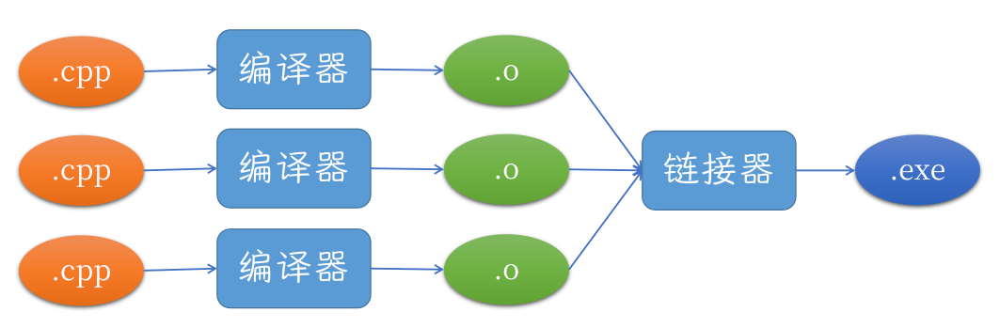
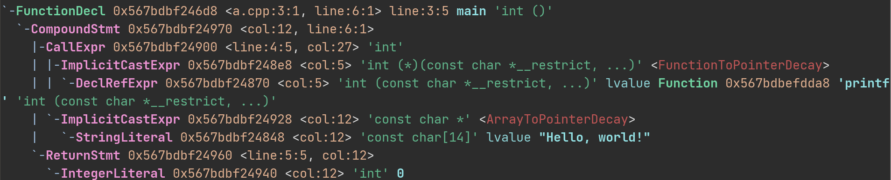
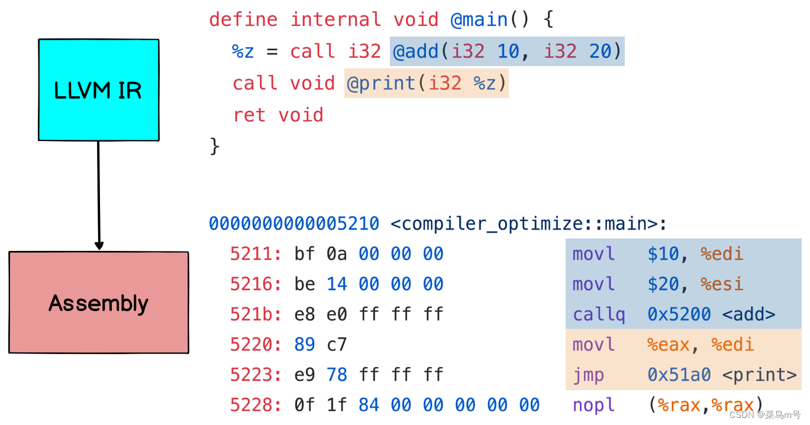
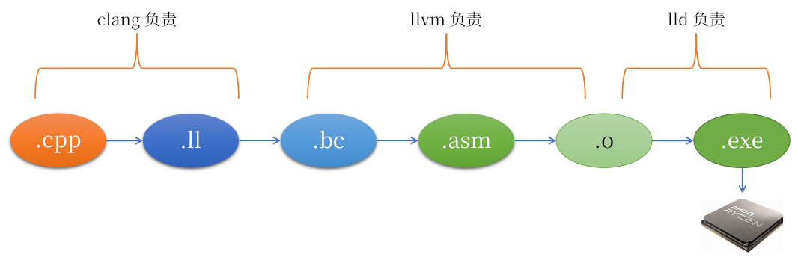

章节列表 ↵
小彭老师现代 C++ 大典
小彭大典是一本关于现代 C++ 编程的权威指南，它涵盖了从基础知识到高级技巧的内容，适合初学者和有经验的程序员阅读。本书由小彭老师亲自编写，通过简单易懂的语言和丰富的示例，帮助读者快速掌握 C++ 的核心概念，并学会如何运用它们来解决实际问题。
敢承诺：土木老哥也能看懂！
前言
推荐用手机或平板竖屏观看，可以在床或沙发上躺着。
用电脑看的话，可以按 WIN + ←，把本书的浏览器窗口放在屏幕左侧，右侧是你的 IDE。一边看一边自己动手做实验。

可以按顺序阅读，也可以在本页面上方导航栏的“章节列表”中，选择感兴趣的章节阅读。
本书完全开源和免费，GitHub 仓库：https://github.com/parallel101/cppguidebook
如果你是在付费群中“买”到本书，或者打着小彭老师名号卖课，说明你可能是私有制的受害者。因为小彭老师从来没有付费才能看的课程，所有小彭老师课程都对全球互联网开放。
如需离线查看，可以前往 GitHub Release 页面 下载 PDF 文件。
如果你在阅读过程中遇到任何问题，可以在 GitHub Issues 中提出，小彭老师会尽力解答。
也可以在 B 站 发私信给小彭老师哦。
本书还在持续更新中……要追番的话，可以在 GitHub 点一下右上角的 “Watch” 按钮，每当小彭老师提交新 commit，GitHub 会向你发送一封电子邮件，提醒你小彭老师更新了。
更新时间：2024年09月24日 11:54:32 (UTC+08:00)
在 GitHub Pages 浏览本书 | 在小彭老师自己维护的镜像上浏览本书
格式约定
用这种颜色书写的是补充说明的课外阅读，看不懂也没关系
用这种颜色字体书写的是初学者可暂时不用理解的细节
- 术语名称: 这里是术语的定义。
观前须知
与大多数现有教材不同的是，本课程将会采用“倒叙”的形式，从最新的 C++23 讲起！然后讲 C++20、C++17、C++14、C++11，慢慢讲到最原始的 C++98。
不用担心，越是现代的 C++，学起来反而更容易！反而古代 C++ 才又臭又长。
很多同学想当然地误以为 C++98 最简单，哼哧哼哧费老大劲从 C++98 开始学，才是错误的。
为了应付缺胳膊少腿的 C++98，人们发明了各种繁琐无谓的写法，在现代 C++ 中，早就已经被更简洁直观的写法替代了。
explicit关键字直接就秒了。结果还有一批劳保教材大吹特吹 safe-bool idiom，吹得好像是个什么高大上的设计模式一样，不过是个应付 C++98 语言缺陷的蹩脚玩意。
就好比一个老外想要学习汉语，他首先肯定是从现代汉语学起！而不是上来就教他文言文。
当我们学习中文时，你肯定希望先学现代汉语，再学文言文，再学甲骨文，再学 brainf**k，而不是反过来。
对于 C++ 初学者也是如此：我们首先学会简单明了的，符合现代人思维的 C++23，再逐渐回到专为伺候“古代开发环境”的 C++98。
你的生产环境可能不允许用上 C++20 甚至 C++23 的新标准。
别担心，小彭老师教会你 C++23 的正常写法后，会讲解如何在 C++14、C++98 中写出同样的效果。
这样你学习的时候思路清晰，不用被繁琐的 C++98 “奇技淫巧”干扰，学起来事半功倍；但也“吃过见过”，知道古代 C++98 的应对策略。
举个例子
例如，在模板元编程中，要检测一个类型 T 是否拥有 foo() 这一成员函数。如果存在，才会调用。
在 C++20 中，可以使用很方便的 requires 语法，轻松检测一个表达式是否能合法通过编译。如果能，requires 语句会返回 true。然后用一个 if constexpr 进行编译期分支判断，即可实现检测到存在则调用。
template <class T>
void try_call_foo(T &t) {
if constexpr (requires { t.foo(); }) {
t.foo();
}
}
但仅仅是回到 C++17，没有 requires 语法，我们只能自己定义一个 trait 类，并运用烦人的 SFINAE 小技巧，检测表达式是否的合法，又臭又长。
template <class T, class = void>
struct has_foo {
static constexpr bool value = false;
};
template <class T>
struct has_foo<T, std::void_t<decltype(std::declval<T>().foo())>> {
static constexpr bool value = true;
};
template <class T>
void try_call_foo(T &t) {
if constexpr (has_foo<T>::value) {
t.foo();
}
}
如果回到 C++14，情况就更糟糕了！if constexpr 是 C++17 的特性，没有他，要实现编译期分支，我们就得用 enable_if_t 的 SFINAE 小技巧，需要定义两个 try_call_foo 函数，互相重载，才能实现同样的效果。
template <class T, class = void>
struct has_foo {
static constexpr bool value = false;
};
template <class T>
struct has_foo<T, std::void_t<decltype(std::declval<T>().foo())>> {
static constexpr bool value = true;
};
template <class T, std::enable_if_t<has_foo<T>::value, int> = 0>
void try_call_foo(T &t) {
t.foo();
}
template <class T, std::enable_if_t<!has_foo<T>::value, int> = 0>
void try_call_foo(T &) {
}
如果回到 C++11，情况进一步恶化！enable_if_t 这个方便的小助手已经不存在，需要使用比他更底层的 enable_if 模板类，手动取出 ::type，并且需要 typename 修饰，才能编译通过！并且 void_t 也不能用了，要用逗号表达式小技巧才能让 decltype 固定返回 void……
template <class T, class = void>
struct has_foo {
static constexpr bool value = false;
};
template <class T>
struct has_foo<T, decltype(std::declval<T>().foo(), (void)0)> {
static constexpr bool value = true;
};
template <class T, typename std::enable_if<has_foo<T>::value, int>::type = 0>
void try_call_foo(T &t) {
t.foo();
}
template <class T, typename std::enable_if<!has_foo<T>::value, int>::type = 0>
void try_call_foo(T &) {
}
如果回到 C++98，那又要罪加一等！enable_if 和 declval 是 C++11 引入的 <type_traits> 头文件的帮手类和帮手函数，在 C++98 中，我们需要自己实现 enable_if…… declval 也是 C++11 引入的 <utility> 头文件中的帮手函数……假设你自己好不容易实现出来了 enable_if 和 declval，还没完：因为 constexpr 在 C++98 中也不存在了！你无法定义 value 成员变量为编译期常量，我们只好又用一个抽象的枚举小技巧来实现定义类成员常量的效果。
template <class T, class = void>
struct has_foo {
enum { value = 0 };
};
template <class T>
struct has_foo<T, decltype(my_declval<T>().foo(), (void)0)> {
enum { value = 1 };
};
template <class T, typename my_enable_if<has_foo<T>::value, int>::type = 0>
void try_call_foo(T &t) {
t.foo();
}
template <class T, typename my_enable_if<!has_foo<T>::value, int>::type = 0>
void try_call_foo(T &) {
}
如此冗长难懂的抽象 C++98 代码，仿佛是“加密”过的代码一样，仅仅是为了实现检测是否存在成员函数 foo……
反观 C++20 的写法，一眼就看明白代码的逻辑是什么，表达你该表达的，而不是迷失于伺候各种语言缺陷，干扰我们学习。
void try_call_foo(auto &t) {
if constexpr (requires { t.foo(); }) {
t.foo();
}
}
// 从残废的 C++98 学起，你的思维就被这些无谓的“奇技淫巧”扭曲了，而使得真正应该表达的代码逻辑，淹没在又臭又长的古代技巧中。 // 从现代的 C++23 学起，先知道正常的写法“理应”是什么样。工作中用不上 C++23？我会向你介绍，如果要倒退回 C++14，古代人都是用什么“奇技淫巧”实现同样的效果。 // 这样你最后同样可以适应公司要求的 C++14 环境。但是从 C++23 学起，你的思维又不会被应付古代语言缺陷的“奇技淫巧”扰乱，学起来就事半功倍。
你好，世界
什么是函数
- 函数: 一段用
{}包裹的代码块，有一个独一无二的名字做标识。函数可以被其他函数调用。函数可以有返回值和参数。函数的{}代码块内的程序代码，每次该函数被调用时都会执行。
int compute()
{
return 42;
}
上面的代码中，compute 就是函数的名字，int 表示函数的返回类型——整数。
而 {} 包裹的是函数体，是函数被调用时会执行的代码。
此处 return 42 就是函数体内的唯一一条语句，表示函数立即执行完毕，返回 42。
- 返回值: 当一个函数执行完毕时，会向调用该函数的调用者返回一个值，这个值就是
return后面的表达式的值。返回值可以有不同的类型，此处compute的返回类型是int，也就是说compute需要返回一个整数。
从 main 函数说起
C++ 程序通常由一系列函数组成，其中必须有一个名为 main 的函数作为程序的入口点。
main 函数的定义如下：
int main()
{
}
程序启动时，操作系统会调用 main 函数。
main函数，但目前先理解为“操作系统调用了main函数”也无妨。
要把程序发展壮大，我们可以让 main 函数继续调用其他函数，也可以直接在 main 函数中编写整个程序的逻辑（不推荐）。
main可以被看作是“宇宙大爆炸”。
main 函数的返回值
int main()
{
return 0;
}
return 表示函数的返回，main 函数返回，即意味着程序的结束。
main 函数总是返回一个整数 (int 类型)，用这个整数向操作系统表示程序退出的原因。
如果程序正常执行完毕，正常结束退出，那就请返回 0。
return语句，则等价于执行return 0;。所以对于你本来就打算返回 0 的情况，也可以偷懒不写return语句，编译器自动会帮你加上。以及，main 函数必须返回int类型，不能返回void类型。
返回一个不为 0 的整数可以表示程序出现了异常，是因为出错了才退出的，值的多少可以用于表明错误的具体原因。
这个黑色的窗口是？
TODO: 介绍控制台
打印一些信息
int main()
{
std::println("Hello, World!");
}
以上代码会在控制台输出 Hello, World!。
注释
int main()
{
// 小彭老师，请你在这里插入程序的逻辑哦！
}
这里的 // 是注释，注释会被编译器忽略，通常用于在程序源码中植入描述性的文本。有时也会用于多人协作项目中程序员之间互相沟通。
例如下面这段代码：
int main()
{
std::println("编译器伟大，无需多言");
// 编译器是煞笔
// 编译器是煞笔
// 编译器是煞笔
// 诶嘿你看不见我
}
在编译器看来就只是：
int main()
{
std::println("编译器伟大，无需多言");
}
C++ 支持行注释 // xx 和块注释 /* xx */ 两种语法。
int main()
{
// 我是行注释
/* 我是块注释 */
/* 块注释
可以
有
很多行 */
std::println(/* 块注释也可以夹在代码中间 */"你好");
std::println("世界"); // 行注释只能追加在一行的末尾
std::println("早安");
}
开发环境与平台选择
TODO
IDE 不是编译器！
TODO
编译器是？
编译器是将源代码 (.cpp) 编译成可执行程序 (.exe) 的工具。
.c源码文件中，然后把后缀名改成.exe，发现这样根本执行不了……后来才知道需要通过一种叫做编译器编译.c文件，才能得到计算机可以直接执行的.exe文件。
C++ 源码 .cpp 是写给人类看的！计算机并不认识，计算机只认识二进制的机器码。要把 C++ 源码转换为计算机可以执行的机器码。
编译器御三家
最常见的编译器有：GCC、Clang、MSVC
这些编译器都支持了大部分 C++20 标准和小部分 C++23 标准，而 C++17 标准都是完全支持的。
- GCC 主要只在 Linux 和 MacOS 等 Unix 类系统可用，不支持 Windows 系统。但是 GCC 有着大量好用的扩展功能，例如大名鼎鼎的
pbds（基于策略的数据结构），还有各种__attribute__，各种__builtin_系列函数。不过随着新标准的出台，很多原本属于 GCC 的功能都成了标准的一部分，例如__attribute__((warn_unused))变成了标准的[[nodiscard]]，__builtin_clz变成了标准的std::countl_zero，__VA_OPT__名字都没变就进了 C++20 标准。
-
也有 MinGW 这样的魔改版 GCC 编译器，把 GCC 移植到了 Windows 系统上，同时也能用 GCC 的一些特性。不过 MinGW 最近已经停止更新，最新的 GCC Windows 移植版由 MinGW-w64 继续维护。
-
Clang 是跨平台的编译器，支持大多数主流平台，包括操作系统界的御三家：Linux、MacOS、Windows。Clang 支持了很大一部分 GCC 特性和部分 MSVC 特性。其所属的 LLVM 项目更是编译器领域的中流砥柱，不仅支持 C、C++、Objective-C、Fortran 等，Rust 和 Swift 等语言也是基于 LLVM 后端编译的，不仅如此，还有很多显卡厂商的 OpenGL 驱动也是基于 LLVM 实现编译的。并且 Clang 身兼数职，不仅可以编译，还支持静态分析。许多 IDE 常见的语言服务协议 (LSP) 就是基于 Clang 的服务版————Clangd 实现的 (例如你可以按 Ctrl 点击，跳转到函数定义，这样的功能就是 IDE 通过调用 Clangd 的 LSP 接口实现）。不过 Clang 的性能优化比较激进，虽然有助于性能提升，如果你不小心犯了未定义行为，Clang 可能优化出匪夷所思的结果，如果你要实验未定义行为，Clang 是最擅长复现的。且 Clang 对一些 C++ 新标准特性支持相对较慢，没有 GCC 和 MSVC 那么上心。
- Apple Clang 是苹果公司自己魔改的 Clang 版本，只在 MacOS 系统上可用，支持 Objective-C 和 Swift 语言。但是版本较官方 Clang 落后一些，很多新特性都没有跟进，基本上只有专门伺候苹果的开发者会用。
-
MSVC 是 Windows 限定的编译器，提供了很多 MSVC 特有的扩展。也有人在 Clang 上魔改出了 MSVC 兼容模式，兼顾 Clang 特性的同时，支持了 MSVC 的一些特性（例如
__declspec），可以编译用了 MSVC 特性的代码，即clang-cl，在最新的 VS2022 IDE 中也集成了clang-cl。值得注意的是，MSVC 的优化能力是比较差的，比 GCC 和 Clang 都差，例如 MSVC 几乎总是假定所有指针 aliasing，这意味着当遇到很多指针操作的循环时，几乎没法做循环矢量化。但是也使得未定义行为不容易产生 Bug，另一方面，这也导致一些只用 MSVC 的人不知道某些写法是未定义行为。 -
Intel C++ compiler 是英特尔开发的 C++ 编译器，由于是硬件厂商开发的，特别擅长做性能优化。但由于更新较慢，基本没有更上新特性，也没什么人在用了。
使用编译器编译源码
MSVC
cl.exe main.cpp
这样就可以得到可执行文件 main.exe 了。
GCC
g++ main.cpp -o main
这样就可以得到可执行文件 main 了。
.exe后缀。
Clang
Windows 上：
clang++.exe main.cpp -o main.exe
Linux / MacOS 上：
clang++ main.cpp -o main
编译器选项
编译器选项是用来控制编译器的行为的。不同的编译器有不同的选项，语法有微妙的不同，但大致功效相同。
例如当我们说“编译这个源码时，我用了 GCC 编译器，-O3 和 -std=c++20 选项”，说的就是把这些选项加到了 g++ 的命令行参数中：
g++ -O3 -std=c++20 main.cpp -o main
其中 Clang 和 GCC 的编译器选项有很大交集。而 MSVC 基本自成一派。
Clang 和 GCC 的选项都是 -xxx 的形式，MSVC 的选项是 /xxx 的形式。
常见的编译器选项有：
C++ 标准
指定要选用的 C++ 标准。
Clang 和 GCC：-std=c++98、-std=c++03、-std=c++11、-std=c++14、-std=c++17、-std=c++20、-std=c++23
MSVC：/std:c++98、/std:c++11、/std:c++14、/std:c++17、/std:c++20、/std:c++latest
例如要编译一个 C++20 源码文件，分别用 GCC、Clang、MSVC：
GCC（Linux）：
g++ -std=c++20 main.cpp -o main
Clang（Linux）：
clang++ -std=c++20 main.cpp -o main
MSVC（Windows）：
cl.exe /std:c++20 /c main.cpp
优化等级
Clang 和 GCC：-O0、-O1、-O2、-O3、-Ofast、-Os、-Oz、-Og
-O0：不进行任何优化，编译速度最快，忠实复刻你写的代码，未定义行为不容易产生诡异的结果，一般用于开发人员内部调试阶段。-O1：最基本的优化，会把一些简单的死代码（编译器检测到的不可抵达代码）删除，去掉没有用的变量，把部分变量用寄存器代替等，编译速度较快，执行速度也比-O0快。但是会丢失函数的行号信息，影响诸如 gdb 等调试，如需快速调试可以用-Og选项。-O2：比-O1更强的优化，会把一些循环展开，把一些函数内联，减少函数调用，把一些简单的数组操作用更快的指令替代等，执行速度更快。-O3：比-O2更激进的优化，会把一些复杂的循环用 SIMD 矢量指令优化加速，把一些复杂的数组操作用更快的指令替代等。性能提升很大，但是如果你的程序有未定义行为，可能会导致一些 Bug。如果你的代码没有未定义行为则绝不会有问题，对自己的代码质量有自信就可以放心开，编译速度也会很慢，一般用于程序最终成品发布阶段。-Ofast：在-O3的基础上，进一步对浮点数的运算进行更深层次的优化，但是可能会导致一些浮点数计算结果不准确。如果你的代码不涉及到 NaN 和 Inf 的处理，那么-Ofast不会有太大的问题，一般用于科学计算领域的终极性能优化。-Os：在-O2的基础上，专门优化代码大小，性能被当作次要需求，但是会禁止会导致可执行文件变大的优化。会把一些循环展开、内联等优化关闭，把一些代码用更小的指令实现，尽可能减小可执行文件的尺寸，比-O0、-O1、-O2都要小，通常用于需要节省内存的嵌入式系统开发。-Oz：在-Os的基础上，进一步把代码压缩，可能把本可以一条大指令完成的任务也拆成多条小指令，为了缩小尺寸牺牲运行时性能，大幅减少了函数内联的机会，有时用于嵌入式系统开发。-Og：在-O0的基础上，尽可能保留更多调试信息，不做破坏函数行号等信息的优化，建议配合产生更多调试信息的-g选项使用。但还是会做一些简单的优化，比-O0执行速度更快。但-Og的所有优化都不会涉及到未定义行为，因此非常适合调试未定义行为。但是由于插入了调试信息，最终的可执行文件会变得很大，一般在开发人员调试时使用。
MSVC：/Od、/O1、/O2、/Ox、/Ob1、/Ob2、/Os
/Od：不进行任何优化，忠实复刻你写的代码，未定义行为不容易产生诡异的结果，一般用于调试阶段。/O1：最基本的优化，会把一些简单的死代码删除，去掉没有用的变量，把变量用寄存器代替等。/O2：比/O1更强的优化，会把一些循环展开，把一些函数内联，减少函数调用，还会尝试把一些循环矢量化，把一些简单的数组操作用更快的指令替代等。一般用于发布阶段。/Ox：在/O2的基础上，进一步优化，但是不会导致未定义行为，一般用于发布阶段。/Ob1：启用函数内联。/Ob2：启用函数内联，但是会扩大内联范围，一般比/Ob1更快，但是也会导致可执行文件变大。/Os：在/O2的基础上，专门优化代码大小，性能被当作次要需求，但是会禁止会导致可执行文件变大的优化。会把一些循环展开、内联等优化关闭，把一些代码用更小的指令实现，尽可能减小可执行文件的尺寸，通常用于需要节省内存的嵌入式系统开发。
inline关键字毫无关系，请看稍后推出的符号链接专题课程或抢先看小彭老师视频了解inline，以后的性能优化专题课程也会介绍函数内联优化的成功案例。
调试信息
Clang 和 GCC：-g、-g0、-g1、-g2、-g3
MSVC：/Z7、/Zi
头文件搜索路径
指定要链接的库
库文件搜索路径
定义宏
Clang 和 GCC：-Dmacro=value
MSVC：/Dmacro=value
例如：
警告开关
标准库御三家
-
libstdc++ 是 GCC 官方的 C++ 标准库实现，由于 GCC 是 Linux 系统的主流编译器，所以 libstdc++ 也是 Linux 上最常用的标准库。你可以在这里看到他的源码：https://github.com/gcc-mirror/gcc/tree/master/libstdc%2B%2B-v3
-
libc++ 是 Clang 官方编写的 C++ 标准库实现，由于 Clang 是 MacOS 系统的主流编译器，所以 libc++ 也是 MacOS 上最常用的标准库。libc++ 也是 C++ 标准库中最早实现 C++11 标准的。项目的开源地址是：https://github.com/llvm/llvm-project/tree/main/libcxx
-
MSVC STL 是 MSVC 官方的 C++ 标准库实现，由于 MSVC 是 Windows 系统的主流编译器，所以 MSVC STL 也是 Windows 上最常用的标准库。MSVC STL 也是 C++ 标准库中最晚实现 C++11 标准的，但是现在他已经完全支持 C++20，并且也完全开源了：https://github.com/microsoft/STL
值得注意的是，标准库和编译器并不是绑定的，例如 Clang 可以用 libstdc++ 或 MSVC STL，GCC 也可以被配置使用 libc++。
在 Linux 系统中，Clang 默认用的就是 libstdc++。需要为 Clang 指定 -stdlib=libc++ 选项，才能使用。
标准库的调试模式
TODO
C++11 ABI 问题
在一些特别古老的发行版上（比如 Ubuntu 16.04、CentOS），他们的标准库不支持 C++11，可以开启这个宏：
#define _GLIBCXX_USE_CXX11_ABI 0
或者命令行选项 -D_GLIBCXX_USE_CXX11_ABI=0。
变量与类型 (未完工)
TODO
认识函数 (未完工)
自定义函数
int square(int x) {
}
调用函数
TODO: println 参数演示
函数的返回值
函数可以没有返回值，只需要声明函数时返回类型声明为 void 即可，调用这样的函数只是为了他的副作用（如修改全局变量，输出文本到控制台，修改引用参数等）。
void compute()
{
return;
}
void）的函数，可以省略return不写。
void compute()
{
// 没问题
}
void的函数，必须写return语句，如果漏写，会出现可怕的未定义行为 (undefined behaviour)。编译器不一定会报错，而是到运行时才出现崩溃等现象。建议 GCC 用户开启-Werror=return-type让编译器在编译时就检测此类错误，MSVC 则是开启/we4716。更多未定义行为可以看我们的未定义行为列表章节。return 0;。2. 具有 co_return 或 co_await 的协程函数可以不写 return 语句。
接住返回值
函数的参数
形参 vs 实参
按引用传参 vs 按值传参
TODO：和 Python、Java 对比
C 风格变长参数
模板函数
TODO：更多介绍函数
main 函数的参数
TODO
auto 神教 (未完工)
变量 auto
返回类型 auto
C++11 引入的 auto 关键字可以用作函数的返回类型，但它只是一个“占位”，让我们得以后置返回类型，并没有多大作用，非常残废。
auto f() -> int;
// 等价于：
int f();
auto f(int x) -> decltype(x * x) { return x * x; }这种情况，但很容易被接下来 C++14 引入的真正auto返回类型推导平替了。
C++14 引入了函数返回类型推导，auto 才算真正意义上能用做函数返回类型，它会自动根据函数中的 return 表达式推导出函数的返回类型。
auto f(int x) {
return x * x; // 表达式 `x * x` 的类型为 int，所以 auto 类型推导为 int
}
// 等价于：
int f() {
return x * x;
}
如果函数中没有 return 语句，那么 auto 会被自动推导为 void，非常方便。
auto f() {
std::println("hello");
}
// 等价于：
void f() {
std::println("hello");
}
值得注意的是，返回类型用 auto 来推导的函数，如果有多条 return 语句，那么他们必须都返回相同的类型，否则报错。
auto f(int x) {
if (x > 0) {
return 1; // int
} else {
return 3.14; // double
}
} // 错误：有歧义，无法确定 auto 应该推导为 int 还是 double
auto 还有一个缺点是，无法用于“分离声明和定义”的情况。因为推导 auto 类型需要知道函数体，才能看到里面的 return 表达式是什么类型。所以当 auto 返回类型被用于函数的非定义声明时，会直接报错。
auto f(); // 错误：看不到函数体，无法推导返回类型
auto f() { // 编译通过：auto 推导为 int
return 1; // 1 是 int 类型的表达式
}
因此，auto 通常只适用于头文件中“就地定义”的 inline 函数，不适合需要“分离 .cpp 文件”的函数。
参数类型 auto
C++20 引入了模板参数推导，可以让我们在函数参数中也使用 auto。
TODO: 介绍
传统的，基于类型重载的：
int square(int x) {
return x * x;
}
double square(double x) {
return x * x;
}
int main() {
square(2); // 4（调用 int 版重载）
square(3.14); // 9.8596（调用 double 版重载）
// 如果现在又需要 float 版呢？又得写一版重载，内容还是完全一样的，浪费时间
}
基于 auto 模板参数推导的：
auto square(auto x) {
return x * x;
}
int main() {
square(2); // 4（auto 推导为 int）
square(3.14); // 9.8596（auto 推导为 double）
// 即使未来产生了 float 版的需求，也不用添加任何代码，因为是 square 是很方便的模板函数
}
auto 推导为引用
TODO: 继续介绍 auto, auto const, auto &, auto const &, auto &&, decltype(auto), auto *, auto const *
重新认识声明与定义（未完工）
我们要牢记白指导说的道理
非定义声明，因为 Game 在此处为不完整类型
我能明白其意思，定义一定是声明，声明却不一定是定义。所以用了：“非定义声明”这个词语，很专业的措辞。
不过我觉得大多数普通开发者并不够清楚这一点，看到这段注释同样会感到疑惑。
在他们眼里声明和定义是两种东西，此处如果直接用声明它们可能就不会有理解问题了。例如：“只是声明，不是定义”之类的措辞。
或许我们应该考虑在保证专业以及严谨的情况下，稍微补充解释一下“非定义声明”这个用词。
多文件编译的必要性
翻译单元 (TU)
符号的链接类型 (linkage)
函数和变量，在对外的可见性这方面，有以下几种类型：
- 外部链接 (ODR external linkage)：对其他翻译单元可见
- 共享链接 (non-ODR external linkage)
- 内部链接 (internal linkage)
- 无链接 (no linkage)
函数和变量的可见性这一属性，被 C++ 官方称为链接（linkage），是因为符号的可见性处理通常是链接器（ld）负责的，不同类型链接（linkage）的效果，在链接（link）的时候才会生效。
定义在全局（名字空间）中的情况：
int i; // 变量声明并定义为“外部链接”
int f(int x); // 函数声明为“外部链接”
int f(int x) {} // 函数声明并定义为“外部链接”
extern int i; // 变量声明为“外部链接”
extern int f(int x); // 函数声明为“外部链接”
extern int f(int x) {} // 函数声明并定义为“外部链接”
inline int i; // 变量声明并定义为“共享链接”
inline int f(int x); // 函数声明为“共享链接”
inline int f(int x) {} // 函数声明并定义为“共享链接”
static int i; // 变量声明并定义为“内部链接”
static int f(int x); // 函数声明为“内部链接”
static int f(int x) {} // 函数声明并定义为“内部链接”
定义在类（class）中的情况：
struct Class {
int i; // 变量声明并定义为“无链接”
int f(int x); // 函数声明为“外部链接”
int f(int x) {} // 函数声明并定义为“共享链接”
inline static int i; // 变量声明并定义为“共享链接”
inline static int f(int x); // 函数声明为“共享链接”
inline static int f(int x) {} // 函数声明并定义为“共享链接”
static int i; // 变量声明并定义为“外部链接”
static int f(int x); // 函数声明为“外部链接”
static int f(int x) {} // 函数声明并定义为“外部链接”
};
应知应会 C++ 小技巧
- 应知应会 C++ 小技巧
- 交换两个变量
- 安全地分配一段内存空间
- 地板除与天花板除
- 别再 [] 啦！
- 别再写构造函数啦！
- 别再写拷贝构造函数啦！
- 提前返回
- 立即调用的 Lambda
- Lambda 复用代码
- 类内静态成员 inline
- 别再 make_pair 啦！
- insert 不会替换现有值哦
- 一边遍历 map，一边删除？
- 高效删除单个 vector 元素
- 批量删除部分 vector 元素
- 保持有序的 vector 用于二分法
- C++ 随机数的正确生成方式
- const 居然应该后置…
- 函数参数也可以 auto
- 读取整个文件到字符串
- 逐行读取文本文件
- 字符串切片
- cout 不需要 endl
- 多线程中 cout 出现乱序？
- cerr 与 cout 的抉择
- 智能指针防止大对象移动
- optional 实现延迟初始化
- if-auto 与 while-auto
- bind 是历史糟粕，应该由 Lambda 表达式取代
- forward 迷惑性地不好用，建议改用 FWD 宏
- bind 绑定成员函数是陋习，改用 lambda 或 bind_front
- 救命！为什么我的全局函数不能作为函数对象？
- map + any 外挂属性
- 自定义 shared_ptr 的 deleter
- CHECK_CUDA 类错误检测宏
- 函数默认参数求值的位置是调用者
- 设置 locale 为 .utf8
- 花括号实现安全的类型转换检查
- 成员函数针对 this 的移动重载
- CHECK_CUDA 类错误检测宏
- 函数默认参数求值的位置是调用者
- 花括号实现安全的类型转换检查
- 临时右值转左值
- ostringstream 格式化字符串
- ADL 机制实现静态多态
- shared_from_this
- requires 语法检测是否存在指定成员函数
- 设置 locale 为 .utf8 解决编码问题
- 成员函数针对 this 的移动重载
- 位域（bit-field）
- vector + unordered_map = LRU cache
- Lambda 捕获 unique_ptr 导致 function 报错怎么办
- 多线程通信应基于队列，而不是共享全局变量
- RAII 的 finally 帮手类
- swap 缩小 mutex 区间代价
- namespace 别名
交换两个变量
int a = 42;
int b = 58;
现在你想交换这两个变量。
int tmp = a;
a = b;
b = tmp;
但是标准库提供了更好的方法：
std::swap(a, b);
这个方法可以交换任意两个同类型的值，包括结构体、数组、容器等。
#include <utility>就可以使用！
安全地分配一段内存空间
小彭老师：不要出现 new 和 delete，不安全。
同学：我想要分配一段内存空间，你不让我 new，我还能怎么办呢？
char *mem = new char[1024]; // 同学想要 1024 字节的缓冲区
read(1, mem, 1024); // 用于供 C 语言的读文件函数使用
delete[] mem; // 需要手动 delete
小彭老师：有没有一种可能，vector 就可以分配内存空间。
vector<char> mem(1024);
read(1, mem.data(), mem.size());
vector 一样符合 RAII 思想，构造时自动申请内存，离开作用域时自动释放。
只需在调用 C 语言接口时，取出原始指针：
- 用 data() 即可获取出首个 char 元素的指针，用于传递给 C 语言函数使用。
- 用 size() 取出数组的长度，即是内存空间的字节数，因为我们的元素类型是 char，char 刚好就是 1 字节的，size() 刚好就是字节的数量。
此处 read 函数读完后，数据就直接进入了 vector 中，根本不需要什么 new。
vector<std::byte>，明确区分这是“字节”不是“字符”。如果你读出来的目的是当作字符串，可以用std::string。
shared_ptr和unique_ptr来管理数组，这是错误的。
shared_ptr和unique_ptr智能指针主要是用于管理“单个对象”的，不是管理“数组”的。
vector一直都是数组的管理方式，且从 C++98 就有。不要看到 “new 的替代品” 只想到智能指针啊！“new [] 的替代品” 是vector啊！
此处放出一个利用 std::wstring 分配 wchar_t * 内存的案例：
std::wstring utf8_to_wstring(std::string const &s) {
int len = MultiByteToWideChar(CP_UTF8, 0,
s.data(), s.size(),
nullptr, 0); // 先确定长度
std::wstring ws(len, 0);
MultiByteToWideChar(CP_UTF8, 0,
s.data(), s.size(),
ws.data(), ws.size()); // 再读出数据
return ws;
}
地板除与天花板除
众所周知，C语言中 int 相除 /，得到的结果也是 int，如果除法产生了余数，那么只会保留整数部分。
例如 14 / 5，本来应该得到 2.8。但是因为 C 语言的除法返回 int，结果会自动向下取整，导致得到 2。
int a = 14, b = 5;
int c = a / b; // c = 14 / 5 = 3
等价于
int c = floor((float)a / b); // c = floor(2.8) = 3
如果 a 除以 b 除不尽，那么会找到比他大的第一个整数作为结果，这就是地板除 (floor div)。
C 语言默认的就是地板除。
如果我想要的是向上取整，该怎么写？
最原始的写法是先转成浮点数来除，然后ceil函数向上取整：
int c = ceil((float)a / b);
但是浮点数不仅低效，还有糟糕的浮点数精度误差！对于很大的整数（大于 2^{23}）会产生错误的结果。
更合理的写法是先把 a 加上 b - 1，然后再下取整地除以 b：
int c = (a + b - 1) / b;
这样就能产生一个向上取整的除法了。
如果 a 除以 b 除不尽，那么会找到比他大的第一个整数作为结果，这就是天花板除 (ceil div)。
试试看：14 除以 5，应该得到 2.8；如果用地板除，会得到 2；如果用天花板除，会得到 3。
14 / 5 = 2
(14 + 5 - 1) / 5 = (14 + 4) / 5 = 18 / 5 = 3
试试看：10 除以 5，应该得到 2；那么无论是地板除还是天花板除，都应该得到 2。
10 / 5 = 2
(10 + 5 - 1) / 5 = (10 + 4) / 5 = 14 / 5 = 2
这就是 C 语言中实现天花板除的业界公认方式。
别再 [] 啦！
你知道吗？在 map 中使用 [] 查找元素，如果不存在，会自动创建一个默认值。这个特性有时很方便，但如果你不小心写错了，就会在 map 中创建一个多余的默认元素。
map<string, int> table;
table["小彭老师"] = 24;
cout << table["侯捷老师"];
table 中明明没有 “侯捷老师” 这个元素，但由于 [] 的特性，他会默认返回一个 0，不会爆任何错误！
改用更安全的 at() 函数，当查询的元素不存在时，会抛出异常，方便你调试：
map<string, int> table;
table.at("小彭老师") = 24;
cout << table.at("侯捷老师"); // 抛出异常
[] 真正的用途是“写入新元素”时，如果元素不存在，他可以自动帮你创建一个默认值，供你以引用的方式赋值进去。
检测元素是否存在可以用 count：
if (table.count("小彭老师")) {
return table.at("小彭老师");
} else {
return 0;
}
即使你想要默认值 0 这一特性，count + at 也比 [] 更好，因为 [] 的默认值是会对 table 做破坏性修改的，这导致 [] 需要 map 的声明不为 const：
map<string, int> table;
return table["小彭老师"]; // 如果"小彭老师"这一键不存在，会创建"小彭老师"并设为默认值 0
const map<string, int> table;
return table["小彭老师"]; // 编译失败！[] 需要非 const 的 map 对象，因为他会破坏性修改
别再写构造函数啦！
// C++98
struct Student {
string name;
int age;
int id;
Student(string name_, int age_, int id_) : name(name_), age(age_), id(id_) {}
};
Student stu("侯捷老师", 42, 123);
C++98 需要手动书写构造函数，非常麻烦！而且几乎都是重复的。
C++11 中，平凡的结构体类型不需要再写构造函数了，只需用 {} 就能对成员依次初始化：
// C++11
struct Student {
string name;
int age;
int id;
};
Student stu{"小彭老师", 24, 123};
这被称为聚合初始化 (aggregate initialize)。只要你的类没有自定义构造函数，没有 private 成员，都可以用 {} 聚合初始化。
好消息：C++20 中，聚合初始化也支持 () 了，用起来就和传统的 C++98 构造函数一样！
// C++20
Student stu("小彭老师", 24, 123);
聚合初始化还可以指定默认值：
// C++11
struct Student {
string name;
int age;
int id = 9999;
};
Student stu{"小彭老师", 24};
// 等价于：
Student stu{"小彭老师", 24, 9999};
C++20 开始，{} 聚合初始化还可以根据每个成员的名字来指定值：
Student stu{.name = "小彭老师", .age = 24, .id = 9999};
// 等价于：
Student stu{"小彭老师", 24, 9999};
好处是，即使不慎写错参数顺序也不用担心。
Student stu{.name = "小彭老师", .age = 24, .id = 9999};
Student stu{.name = "小彭老师", .id = 9999, .age = 24};
别再写拷贝构造函数啦！
只有当你需要有“自定义钩子逻辑”的时候，才需要自定义构造函数。
struct Student {
string name;
int age;
int id;
Student(string name_, int age_, int id_) : name(name_), age(age_), id(id_) {}
Student(Student const &other) : name(other.name), age(other.age), id(other.id) {
std::cout << "拷贝构造\n";
}
Student &operator=(Student const &other) {
name = other.name;
age = other.age;
id = other.id;
std::cout << "拷贝赋值\n";
return *this;
}
};
Student stu1("侯捷老师", 42, 123);
Student stu2 = stu1; // 拷贝构造
stu2 = stu1; // 拷贝赋值
如果你不需要这个 std::cout，只是平凡地拷贝所有成员，完全可以不写，让编译器自动生成拷贝构造函数、拷贝赋值函数、移动构造函数、移动赋值函数：
struct Student {
string name;
int age;
int id;
Student(string name_, int age_, int id_) : name(name_), age(age_), id(id_) {}
// 编译器自动生成 Student(Student const &other)
// 编译器自动生成 Student &operator=(Student const &other)
};
Student stu1("侯捷老师", 42, 123);
Student stu2 = stu1; // 拷贝构造
stu2 = stu1; // 拷贝赋值
assert(stu2.name == "侯捷老师");
总之，很多 C++ 教材把拷贝/移动构造函数过于夸大，搞得好像每个类都需要自己定义一样。
实际上，只有在“自己实现容器”的情况下，才需要自定义拷贝构造函数。可是谁会整天手搓容器？
大多数情况下，我们只需要在类里面存 vector、string 等封装好的容器，编译器默认生成的拷贝构造函数会自动调用他们的拷贝构造函数，用户只需专注于业务逻辑即可，不需要操心底层细节。
提前返回
void babysitter(Baby *baby) {
if (!baby->is_alive()) {
puts("宝宝已经去世了");
} else {
puts("正在检查宝宝喂食情况...");
if (baby->is_feeded()) {
puts("宝宝已经喂食过了");
} else {
puts("正在喂食宝宝...");
puts("正在调教宝宝...");
puts("正在安抚宝宝...");
}
}
}
这个函数有很多层嵌套，很不美观。用提前返回的写法来优化：
void babysitter(Baby *baby) {
if (!baby->is_alive()) {
puts("宝宝已经去世了");
return;
}
puts("正在检查宝宝喂食情况...");
if (baby->is_feeded()) {
puts("宝宝已经喂食过了");
return;
}
puts("正在喂食宝宝...");
puts("正在调教宝宝...");
puts("正在安抚宝宝...");
}
立即调用的 Lambda
有时，需要在一个列表里循环查找某样东西，也可以用提前返回的写法优化：
bool find(const vector<int> &v, int target) {
for (int i = 0; i < v.size(); ++i) {
if (v[i] == target) {
return true;
}
}
return false;
}
可以包裹一个立即调用的 Lambda 块 [&] { ... } ()，限制提前返回的范围：
void find(const vector<int> &v, int target) {
bool found = [&] {
for (int i = 0; i < v.size(); ++i) {
if (v[i] == target) {
return true;
}
}
return false;
} ();
if (found) {
...
}
}
Lambda 复用代码
vector<string> spilt(string str) {
vector<string> list;
string last;
for (char c: str) {
if (c == ' ') {
list.push_back(last);
last.clear();
} else {
last.push_back(c);
}
}
list.push_back(last);
return list;
}
上面的代码可以用 Lambda 复用：
vector<string> spilt(string str) {
vector<string> list;
string last;
auto push = [&] {
list.push_back(last);
last.clear();
};
for (char c: str) {
if (c == ' ') {
push();
} else {
last.push_back(c);
}
}
push();
return list;
}
类内静态成员 inline
在头文件中定义结构体的 static 成员时：
struct Class {
static int member;
};
会报错 undefined reference to 'Class::member'。这是说的你需要找个 .cpp 文件，写出 int Class::member 才能消除该错误。
C++17 中，只需加个 inline 就能解决！
struct Class {
inline static int member;
};
别再 make_pair 啦！
map<string, int> table;
table.insert(pair<string, int>("侯捷老师", 42));
为避免写出类型名的麻烦，很多老师都会让你写 make_pair：
map<string, int> table;
table.insert(make_pair("侯捷老师", 42));
然而 C++11 提供了更好的写法，那就是通过 {} 隐式构造，不用写出类型名或 make_pair：
map<string, int> table;
table.insert({"侯捷老师", 42});
map<string, int> table;
table.insert(pair("侯捷老师", 42));
// tuple 也支持 CTAD：
auto t = tuple("侯捷老师", 42, string("小彭老师"));
// 等价于：
auto t = make_tuple("侯捷老师", 42, string("小彭老师"));
println("{}", typeid(t).name()); // tuple<const char *, int, string>
insert 不会替换现有值哦
map<string, int> table;
table.insert({"小彭老师", 24});
table.insert({"小彭老师", 42});
这时，table["小彭老师"] 仍然会是 24，而不是 42。因为 insert 不会替换 map 里已经存在的值。
如果希望如果已经存在时，替换现有元素，可以使用 [] 运算符：
map<string, int> table;
table["小彭老师"] = 24;
table["小彭老师"] = 42;
C++17 提供了比 [] 运算符更适合覆盖性插入的 insert_or_assign 函数：
map<string, int> table;
table.insert_or_assign("小彭老师", 24);
table.insert_or_assign("小彭老师", 42);
好处：insert_or_assign 不需要值类型支持默认构造，可以避免一次默认构造函数 + 一次移动赋值函数的开销。
insert_or_assign改名成set，at改名成get；只是由于历史原因名字迷惑了。
一边遍历 map，一边删除？
map<string, int> table;
for (auto it = table.begin(); it != table.end(); ++it) {
if (it->second < 0) {
table.erase(it);
}
}
会发生崩溃！看来 map 似乎不允许在遍历的过程中删除？不，只是你的写法有错误：
map<string, int> table;
for (auto it = table.begin(); it != table.end(); ) {
if (it->second < 0) {
it = table.erase(it);
} else {
++it;
}
}
C++20 引入了更好的 erase_if 全局函数，不用手写上面这么麻烦的代码：
map<string, int> table;
erase_if(table, [](pair<string, int> it) {
return it.second < 0;
});
高效删除单个 vector 元素
vector<int> v = {48, 23, 76, 11, 88, 63, 45, 28, 59};
众所周知，在 vector 中删除元素，会导致后面的所有元素向前移动，十分低效。复杂度：O(n)
// 直接删除 v[3]
v.erase(v.begin() + 3);
如果不在乎元素的顺序，可以把要删除的元素和最后一个元素 swap，然后 pop_back。复杂度：O(1)
// 把 v[3] 和 v[v.size() - 1] 位置对调
swap(v[3], v[v.size() - 1]);
// 然后删除 v[v.size() - 1]
v.pop_back();
这样就不用移动一大堆元素了。这被称为 back-swap-erase。
批量删除部分 vector 元素
vector 中只删除一个元素需要 O(n)。如果一边遍历，一边删除多个符合条件的元素，就需要复杂度 O(n^2) 了。
标准库提供了 remove 和 remove_if 函数，其内部采用类似 back-swap-erase 的方法，先把要删除的元素移动到末尾。然后一次性 erase 掉末尾同样数量的元素。
且他们都能保持顺序不变。
删除所有值为 42 的元素：
vector<int> v;
v.erase(remove(v.begin(), v.end(), 42), v.end());
删除所有值大于 0 的元素：
vector<int> v;
v.erase(remove_if(v.begin(), v.end(), [](int x) {
return x > 0;
}), v.end());
现在 C++20 也引入了全局函数 erase 和 erase_if，使用起来更加直观：
vector<int> v;
erase(v, 42); // 删除所有值为 42 的元素
erase_if(v, [](int x) {
return x > 0; // 删除所有值大于 0 的元素
});
保持有序的 vector 用于二分法
如果你想要维护一个有序的数组，用 lower_bound 或 upper_bound 来插入元素，保证插入后仍保持有序：
vector<int> s;
s.push_back(1);
s.push_back(2);
s.push_back(4);
s.push_back(6);
// s = { 1, 2, 4, 6 }
s.insert(lower_bound(s.begin(), s.end(), 3), 3);
// s = { 1, 2, 3, 4, 6 }
s.insert(lower_bound(s.begin(), s.end(), 5), 5);
// s = { 1, 2, 3, 4, 5, 6 }
有序数组中，可以利用 lower_bound 或 upper_bound 快速二分查找到想要的值：
vector<int> s;
s.push_back(1);
s.push_back(2);
s.push_back(4);
s.push_back(6);
// s = { 1, 2, 4, 6 }
lower_bound(s.begin(), s.end(), 3); // s.begin() + 2;
lower_bound(s.begin(), s.end(), 5); // s.begin() + 3;
有序 vector 应用案例：利用 CDF 积分 + 二分法可以实现生成任意指定分布的随机数。
例如数值策划要求的抽卡概率分布是：
- 2% 出金卡
- 10% 出蓝卡
- 80% 出白卡
- 8% 出答辩
那么你转换一下任务。变成随机生成一个 0 到 1 的浮点数，然后判断：
- 小于 0.02 时，出金卡
- 小于 0.12 时，出蓝卡
- 小于 0.92 时，出白卡
- 小于 1.00 时，出答辩
这个转换过程就是 CDF 积分。如果你把这 4 个数按照顺序排列，就是一个有序 vector。
标准库提供了 std::partial_sum（不精准）或 std::inclusive_scan（更精准，C++17 引入）都可以计算一个数组的 CDF 离散积分。
vector<double> probs = {0.02, 0.1, 0.8, 0.08};
vector<double> cdf;
// 计算 probs 的 CDF 积分，存入 cdf 数组
std::inclusive_scan(probs.begin(), probs.end(), std::back_inserter(cdf));
// cdf = {0.02, 0.12, 0.92, 1.00} 是一个有序 vector，可以运用二分法定位
vector<string> result = {"金卡", "蓝卡", "白卡", "答辩"};
// 生成 100 个随机数：
for (int i = 0; i < 100; ++i) {
double r = rand() / (RAND_MAX + 1.0);
int index = lower_bound(cdf.begin(), cdf.end(), r) - cdf.begin();
cout << "你抽到了" << result[index] << endl;
}
std::adjacent_difference，可以从cdf数组复原出probs数组。
C++ 随机数的正确生成方式
// 错误的写法：
int r = rand() % 10; // 这样写是错误的！
rand() 的返回值范围是 [0, RAND_MAX]，RAND_MAX 在不同平台下不同，在 Windows 平台的是 32767，即 rand() 只能生成 0～32767 之间的随机数。
如果想要生成 0～9 之间的随机数，最简单的办法是：
int r = rand() % 10;
然而这种方法有个致命的问题：不同的随机数生成概率不一样。
例如把 [0, RAND_MAX] 均匀地分成 10 份，每份 3276.7。那么 0～6 之间的数字出现的概率是 3276.7 / 32767 = 10.0003%，而 7～9 之间的数字出现的概率是 3276.7 / 32767 = 9.997%。
这样就不是真正的均匀分布，这可能会影响程序的正确性。
- 当模数大的时候不均匀性会变得特别明显，例如
rand() % 10000。 - RAND_MAX 在不同平台不同的特性也让跨平台开发者很头大。
rand使用全局变量存储种子，对多线程不友好。- 无法独立的为多个生成序列设定独立的种子，一些游戏可能需要用到多个随机序列，各自有独立的种子。
- 只能生成均匀分布的整数，不能生成幂率分布、正太分布等，生成浮点数也比较麻烦。
- 使用
srand(time(NULL))无法安全地生成随机数的初始种子，容易被黑客预测并攻击。 rand的算法实现没有官方规定，在不同平台各有不同，产生的随机数序列可能不同。
为此，C++ 提出了更加专业的随机数生成器：<random> 库。
// 使用 <random> 库生成 0～9 之间的随机数：
#include <random>
#include <iostream>
int main() {
uint64_t seed = std::random_device()();
std::mt19937 gen(seed);
std::uniform_int_distribution<int> dis(0, 9);
for (int i = 0; i < 100; ++i) {
int r = dis(gen);
std::cout << r << " ";
}
}
这样就可以生成 0～9 之间的均匀分布的随机数了。
std::random_device是一个随机数种子生成器，它会利用系统的随机设备（如果有的话，否则会抛出异常）生成一个安全的随机数种子，黑客无法预测。std::mt19937是一个随机数生成器，它会利用初始种子生成一个随机数序列。并且必定是 MT19937 这个高强度的随机算法，所有平台都一样。std::uniform_int_distribution是一个分布器，它可以把均匀分布的随机数映射到我们想要的上下界中。里面的实现类似于gen() % 10，但通过数学机制保证了绝对均匀性。
类似的还有 std::uniform_real_distribution 用于生成浮点数，std::normal_distribution 用于生成正太分布的随机数，std::poisson_distribution 用于生成泊松分布的随机数，等等。
如果喜欢老式的函数调用风格接口，可以封装一个新的 C++ 重置版安全 rand：
thread_local std::mt19937 gen(std::random_device{}()); // 每线程一个，互不冲突
int randint(int min, int max) {
return std::uniform_int_distribution<int>(min, max)(gen);
}
float randfloat(float min, float max) {
return std::uniform_real_distribution<float>(min, max)(gen);
}
const 居然应该后置…
众所周知，const 在指针符号 * 的前后，效果是不同的。
const int *p;
int *const p;
你能看出来上面这个 const 分别修饰的是谁吗？
const int *p; // 指针指向的 int 不可变
int *const p; // 指针本身不可改变指向
为了看起来更加明确，我通常都会后置所有的 const 修饰。
int const *p; // 指针指向的 int 不可变
int *const p; // 指针本身不可改变指向
这样就一目了然，const 总是在修饰他前面的东西，而不是后面。
为什么 int *const 修饰的是 int * 也就很容易理解了。
int const i;
int const *p;
int *const q;
int const &r;
举个例子：
int i, j;
int *const p = &i;
*p = 1; // OK：p 指向的对象可变
p = &j; // 错误：p 本身不可变，不能改变指向
int i, j;
int const *p = &i;
*p = 1; // 错误：p 指向的对象不可变
p = &j; // OK：p 本身可变，可以改变指向
int i, j;
int const *const p = &i;
*p = 1; // 错误：p 指向的对象不可变
p = &j; // 错误：p 本身也不可变，不能改变指向
int const *和const int *等价！只有int *const是不同的。
函数参数也可以 auto
大家都知道，函数的返回类型可以声明为 auto，让其自动推导。
auto square() { // int square();
return 1;
}
但你知道从 C++20 开始，参数也可以声明为 auto 了吗？
auto square(auto x) { // T square(T x);
return x * x;
}
square(1); // square(int)
square(3.14); // square(double)
等价于以下“模板函数”的传统写法：
template <typename T>
T square(T x) {
return x * x;
}
square(1); // square<int>(int)
square(3.14); // square<double>(double)
因为是模板函数，所以也很难分离声明和定义，只适用于头文件中就地定义函数的情况。
auto 参数还可以带有引用：
auto square(auto const &x) { // T square(T const &x);
return x * x;
}
square(1); // square(int const &)
square(3.14); // square(double const &)
等价于：
template <typename T>
T square(T const &x) {
return x * x;
}
auto 参数最好的配合莫过于是与同样 C++20 引入的 concept：
auto square(std::integral auto x) { // T square(T x) requires std::integral<T>
return x * x;
}
square(1); // square(int)
square(3.14); // 错误：double 不是整数类型
等价于：
template <typename T>
requires std::integral<T>
T square(T x) {
return x * x;
}
或者：
template <std::integral T>
T square(T x) {
return x * x;
}
读取整个文件到字符串
std::string file_get_content(std::string const &filename) {
std::ifstream ifs(filename, std::ios::in | std::ios::binary);
std::istreambuf_iterator<char> iit(ifs), iite;
std::string content(iit, iite);
return content;
}
void file_put_content(std::string const &filename, std::string const &content) {
std::ofstream ofs(filename, std::ios::out | std::ios::binary);
ofs << content;
}
这样就可以把整个文件读取到内存中，很方便地进行处理后再写回文件。
std::ios::binary选项打开二进制文件，否则字符串中出现'\n'时，会被 MSVC 标准库自动转换成'\r\n'来写入，妨碍我们跨平台。
逐行读取文本文件
std::ifstream fin("test.txt");
std::string line;
while (std::getline(fin, line)) {
std::cout << "读取到一行：" << line << '\n';
}
字符串切片
#include <sstream>
#include <string>
#include <vector>
std::vector<std::string> split_str(std::string const &str, char ch) {
std::stringstream ss(str);
std::string line;
std::vector<std::string> res;
while (std::getline(ss, line, ch)) {
res.push_back(std::move(line));
}
return res;
}
auto res = split_str("hello world", ' '); // res = {"hello", "world"}
cout 不需要 endl
int a = 42;
printf("%d\n", a);
万一你写错了 % 后面的类型，编译器不会有任何报错，留下隐患。
int a = 42;
printf("%s\n", a); // 编译器不报错，但是运行时会崩溃！
C++ 中有更安全的输出方式 cout，通过 C++ 的重载机制，无需手动指定 %，自动就能推导类型。
int a = 42;
cout << a << endl;
double d = 3.14;
cout << d << endl;
cout << "Hello, World!" << endl;
endl 是一个特殊的流操作符，作用等价于先输出一个 '\n' 然后 flush。
cout << "Hello, World!" << '\n';
cout.flush();
但实际上，输出流 cout 默认的设置就是“行刷新缓存”，也就是说，检测到 '\n' 时，就会自动刷新一次，根本不需要我们手动刷新！
如果还用 endl 的话，就相当于刷新了两次，浪费性能。
可见，endl 是一个被很多无脑教材错误宣传，实际上根本多此一举的东西。
我们只需要输出 '\n' 就可以了，每次换行时 cout 都会自动刷新。
cout << "Hello, World!" << '\n';
endl 是一个典型的以讹传讹错误写法，只有当你的输出是指向另一个进程的管道时，其附带的刷新功能才有作用。
- 当输出是管道或文件时，
cout需要endl才能刷新。 - 当输出是普通控制台时，
cout只需'\n'就能刷新了，根本用不着endl。
而且，管道或文件实际上也不存在频繁刷新的需求，反正 ifstream 析构时总是会自动刷新写入磁盘。
因此，endl 操纵符大多时候都是冗余的：控制台输出的 cout 只需要字符或字符串中含有 '\n' 就刷新了，即使是文件读写也很少会使用 endl。
如果确实需要强制刷新，也可以用 flush 这种更加可读的写法：
int num;
cout << "please input the number: " << flush;
cin >> num;
ofstream fout("log.txt");
fout << "immediate write 1\n" << flush;
sleep(1);
fout << "immediate write 2\n" << flush;
fout.close(); // 关闭文件时总是自动 flush，不会有残留未写入的字符
多线程中 cout 出现乱序？
同学：小彭老师，我在多线程环境中使用：
cout << "the answer is " << 42 << '\n';
发现输出乱套了！这是不是说明 cout 不是多线程安全的呢？
小彭老师：cout 是一个“同步流”，是多线程安全的，错误的是你的使用方式。
但是，cout 的线程安全，只能保证每一次 operator<< 都是原子的，每一次单独的 operator<< 不会被其他人打断。
但众所周知，cout 为了支持级联调用，他的 operator<< 都是返回自己的，上面的代码实际上等价于分别三次调用 cout 的 operator<<。
cout << "the answer is " << 42 << '\n';
// 等价于：
cout << "the answer is ";
cout << 42;
cout << '\n';
变成了三次 operator<<，每一次都是“各自”原子的，但三个原子加在一起就不是原子了。
他们中间可能穿插了其他线程的 cout，从而导致你 "the answer is" 打印完后，被其他线程的 '\n' 插入进来，导致换行混乱。
解决方法是，先创建一个只属于当前线程的 ostringstream，最后一次性调用一次 cout 的 operator<<，让“原子”的单位变成“一行”而不是一个字符串。
ostringstream oss;
oss << "the answer is " << 42 << '\n';
cout << oss.str();
或者，使用 std::format：
cout << std::format("the answer is {}\n", 42);
总之，就是要让 operator<< 只有一次。
建议各位升级到 C++23，然后改用 std::println 吧：
std::println("the answer is {}", 42);
cerr 与 cout 的抉择
如果你的目的是调试和报错，可以考虑用 cerr！
他会在每次 << 时刷新，cerr 才是最适合打印错误和调试信息的流。
cout 的优点是不需要时刻刷新，有更好的性能。
cout << "hello\n";
cout << "the answer is ";
cout << 42;
*(int *)1 = 1; // 崩溃！
cout << "!\n"; // 因为还没有抵达 \n 产生刷新就崩溃，导致之前尚未刷新的 the answer is 42 丢失
可能的输出：
hello[换行]
cerr << "hello\n";
cerr << "the answer is ";
cerr << 42;
*(int *)1 = 1; // 崩溃！
cerr << "!\n";
输出：
hello[换行]
the answer is 42
还有一个特点：cout 输出到“标准输出流”，可以被输出重定向到文件管道。而 cerr 输出到“标准错误流”，通常不会被重定向到文件或管道。
例如，可以把程序预订的计算结果写到 cout，把调试和报错信息写到 cerr，这样用户就可以通过 > 重定向计算结果，而调试和报错信息则正常输出到屏幕上，不受重定向影响。
cout << "1 3 5 7\n";
cerr << "ERROR: this is an error message!\n";
cout << "11 13 17 19\n";
$ g++ prime.cpp -o prime
$ ./prime
1 3 5 7
ERROR: this is an error message!
11 13 17 19
$ ./prime > output.txt
ERROR: this is an error message!
$ cat output.txt
1 3 5 7
11 13 17 19
智能指针防止大对象移动
我们说一个类型大，有两种情况。
- 类本身很大：例如 array
- 类本身不大，但其指向的对象大，且该类是深拷贝，对该类的拷贝会引起其指向对象的拷贝：例如 vector
sizeof(array<int, 1000>); // 本身 4000 字节
sizeof(vector<int>); // 本身 24 字节（成员是 3 个指针），指向的数组可以无限增大
sizeof(vector)为 24 字节仅为x86_64-pc-linux-gnu平台libstdc++库的实测结果，在 32 位系统以及 MSVC 的 Debug 模式 STL 下可能得出不同的结果，不可以依赖这个平台相关的结果来编程。
对于 vector，我们可以使用 std::move 移动语义，只拷贝该类本身的三个指针成员，而不对其指向的 4000 字节数组进行深拷贝。
对于 array，则 std::move 移动语义与普通的拷贝没有区别：array 作为静态数组容器，不是通过“指针成员”来保存数组的，而是直接把数组存在他的体内，对 array 的移动和拷贝是完全一样的！
总之，移动语义的加速效果，只对采用了“指针间接存储动态数据”的类型（如 vector、map、set、string）有效。对“直接存储静态大小数据”的类型（array、tuple、variant、成功“小字符串优化”的 string）无效。
所以，让很多“移动语义”孝子失望了：“本身很大”的类，移动和拷贝一样慢！
那么现在我们有个超大的类：
using BigType = array<int, 1000>; // 4000 字节大小的平坦类型
vector<BigType> arr;
void func(BigType x) {
arr.push_back(std::move(x)); // 拷贝 4000 字节，超慢，move 也没用
}
int main() {
BigType x;
func(std::move(x)); // 拷贝 4000 字节，超慢，move 也没用
}
如何加速这种本身超大的变量转移？使用 const 引用：
void func(BigType const &x)
似乎可以避免传参时的拷贝，但是依然不能避免 push_back 推入 vector 时所不得已的拷贝。
小技巧：改用 unique_ptr<BigType>
using BigType = array<int, 1000>; // 4000 字节大小的平坦类型
using BigTypePtr = unique_ptr<BigType>;
vector<BigTypePtr> arr;
void func(BigTypePtr x) {
arr.push_back(std::move(x)); // 只拷贝 8 字节的指针，其指向的 4000 字节不用深拷贝了，直接移动所有权给 vector 里的 BigTypePtr 智能指针
// 由于移走了所有权，x 此时已经为 nullptr
}
int main() {
BigTypePtr x = make_unique<BigType>(); // 注意：用智能指针的话，需要用 make_unique 才能创建对象了
func(std::move(x)); // 只拷贝 8 字节的指针
// 由于移走了所有权，x 此时已经为 nullptr
}
上面整个程序中，一开始通过 make_unique 创建的超大对象，全程没有发生任何移动，避免了无谓的深拷贝。
对于不支持移动构造函数的类型来说，也可以用这个方法，就能在函数之间穿梭自如了。
// 热知识：std::mutex 不支持移动
void func(std::mutex lock);
int main() {
std::mutex lock;
func(std::move(lock)); // 错误：mutex(mutex &&) = delete
}
void func(std::unique_ptr<std::mutex> lock);
int main() {
std::unique_ptr<std::mutex> lock = std::make_unique<std::mutex>();
func(std::move(lock)); // OK：调用的是 unique_ptr(unique_ptr &&)，不关 mutex 什么事
}
更好的是 shared_ptr，连 std::move 都不用写，更省心。
void func(std::shared_ptr<std::mutex> lock);
int main() {
std::shared_ptr<std::mutex> lock = std::make_shared<std::mutex>();
func(lock); // OK：调用的是 shared_ptr(shared_ptr const &)，不关 mutex 什么事
func(lock); // OK：shared_ptr 的拷贝构造函数是浅拷贝，即使浅拷贝发生多次，指向的对象也不会被拷贝或移动
}
optional 实现延迟初始化
假设我们有一个类，具有自定义的构造函数，且没有默认构造函数：
struct SomeClass {
int m_i;
int m_j;
SomeClass(int i, int j) : m_i(i), m_j(j) {}
};
当我们需要“延迟初始化”时怎么办？
SomeClass c;
if (test()) {
c = SomeClass(1, 2);
} else {
c = SomeClass(2, 3);
}
do_something(c);
可以利用 optional 默认初始化为“空”的特性，实现延迟赋值：
std::optional<SomeClass> c;
if (test()) {
c = SomeClass(1, 2);
} else {
c = SomeClass(2, 3);
}
do_something(c.value()); // 如果抵达此处前，c 没有初始化，就会报错，从而把编译期的未初始化转换为运行时异常
如果要进一步避免 c = 时，移动构造的开销，也可以用 unique_ptr 或 shared_ptr：
std::shared_ptr<SomeClass> c;
if (test()) {
c = std::make_shared<SomeClass>(1, 2);
} else {
c = std::make_shared<SomeClass>(2, 3);
}
do_something(c); // 如果抵达此处前，c 没有初始化，那么传入的就是一个 nullptr，do_something 内部需要负责检测指针是否为 nullptr
如果 do_something 参数需要的是原始指针，可以用 .get() 获取出来：
do_something(c.get()); // .get() 可以把智能指针转换回原始指针，但请注意原始指针不持有引用，不会延伸指向对象的生命周期
shared_ptr，只不过因为一切皆指针了，所以看起来好像没有指针了。
if-auto 与 while-auto
需要先定义一个变量，然后判断某些条件的情况，非常常见：
extern std::optional<int> some_func();
auto opt = some_func();
if (opt.has_value()) {
std::cout << opt.value();
}
C++17 引入的 if-auto 语法，可以就地书写变量定义和判断条件：
extern std::optional<int> some_func();
if (auto opt = some_func(); opt.has_value()) {
std::cout << opt.value();
}
对于支持 (bool)opt 的 optional 类型来说，后面的条件也可以省略：
extern std::optional<int> some_func();
if (auto opt = some_func()) {
std::cout << opt.value();
}
// 等价于：
auto opt = some_func();
if (opt) {
std::cout << opt.value();
}
类似的还有 while-auto：
extern std::optional<int> some_func();
while (auto opt = some_func()) {
std::cout << opt.value();
}
// 等价于：
while (true) {
auto opt = some_func();
if (!opt) break;
std::cout << opt.value();
}
if-auto 最常见的配合莫过于 map.find：
std::map<int, int> table;
int key = 42;
if (auto it = table.find(key); it != table.end()) {
std::cout << it->second << '\n';
} else {
std::cout << "not found\n";
}
bind 是历史糟粕，应该由 Lambda 表达式取代
众所周知， std::bind 可以为函数绑定一部分参数，形成一个新的函数（对象）。
int func(int x, int y) {
printf("func(%d, %d)\n", x, y);
return x + y;
}
auto new_func = std::bind(func, 1, std::placeholders::_1);
new_func(2); // 调用 new_func(2) 时，实际上调用的是 func(1, 2)
}
输出：
func(1, 2)
当我们绑定出来的函数对象还需要接受参数时，就变得尤为复杂：需要使用占位符（placeholder）。
int func(int x, int y, int z, int &w);
int w = rand();
auto bound = std::bind(func, std::placeholders::_2, 1, std::placeholders::_1, std::ref(w)); //
int res = bound(5, 6); // 等价于 func(6, 1, 5, w);
这是一个绑定器，把 func 的第二个参数和第四个参数固定下来，形成一个新的函数对象，然后只需要传入前面两个参数就可以调用原来的函数了。
这是一个非常旧的技术，C++98 时代就有了。但是，现在有了 Lambda 表达式，可以更简洁地实现：
int func(int x, int y, int z, int &w);
int w = rand();
auto lambda = [&w](int x, int y) { return func(y, 1, x, w); };
int res = lambda(5, 6);
Lambda 表达式有许多优势：
- 简洁：不需要写一大堆看不懂的
std::placeholders::_1，直接写变量名就可以了。 - 灵活：可以在 Lambda 中使用任意多的变量，调整顺序，而不仅仅是
std::placeholders::_1。 - 易懂：写起来和普通函数调用一样，所有人都容易看懂。
- 捕获引用：
std::bind不支持捕获引用，总是拷贝参数，必须配合std::ref才能捕获到引用。而 Lambda 可以随意捕获不同类型的变量，按值（[x]）或按引用（[&x]），还可以移动捕获（[x = move(x)]），甚至捕获 this（[this]）。 - 夹带私货：可以在 lambda 体内很方便地夹带其他额外转换操作，比如：
auto lambda = [&w](int x, int y) { return func(y + 8, 1, x * x, ++w) * 2; };
bind 的历史
为什么 C++11 有了 Lambda 表达式，还要提出 std::bind 呢？
虽然 bind 和 lambda 看似都是在 C++11 引入的，实际上 bind 的提出远远早于 lambda。
当时还是 C++98，由于没有 lambda，难以创建函数对象，“捕获参数”非常困难。
为了解决“捕获难”问题，在第三方库 boost 中提出了 boost::bind，由于当时只有 C++98，很多有益于函数式编程的特性都没有，所以实现的非常丑陋。
例如，因为 C++98 没有变长模板参数，无法实现 <class ...Args>。所以实际上当时 boost 所有支持多参数的函数，实际上都是通过：
void some_func();
void some_func(int i1);
void some_func(int i1, int i2);
void some_func(int i1, int i2, int i3);
void some_func(int i1, int i2, int i3, int i4);
// ...
这样暴力重载几十个函数来实现的，而且参数数量有上限。通常会实现 0 到 20 个参数的重载，更多就不支持了。
例如，我们知道现在 bind 需要配合各种 std::placeholders::_1 使用，有没有想过这套丑陋的占位符是为什么？为什么不用 std::placeholder<1>，这样不是更可扩展吗？
没错，当时 boost::bind 就是用暴力重载几十个参数数量不等的函数，排列组合，嗯是排出来的，所以我们会看到 boost::placeholders 只有有限个数的占位符数量。
糟糕的是，标准库的 std::bind 把 boost::bind 原封不动搬了过来，甚至 placeholders 的暴力组合也没有变，造成了 std::bind 如今丑陋的接口。
人家 boost::bind 是因为不能修改语言语法，才只能那样憋屈的啊？可现在你码是标准委员会啊，你可以修改语言语法啊？
然而，C++ 标准的更新是以“提案”的方式，逐步“增量”更新进入语言标准的。即使是在 C++98 到 C++11 这段时间内，内部也是有一个很长的消化流程的，也就是说有很多子版本，只是对外看起来好像只有一个 C++11。
比方说，我 2001 年提出 std::bind 提案，2005 年被批准进入未来将要发布的 C++11 标准。然后又一个人在 2006 年提出其实不需要 bind，完全可以用更好的 lambda 语法来代替 bind，然后等到了 2008 年才批准进入即将发布的 C++11 标准。但是已经进入标准的东西就不会再退出了，哪怕还没有发布。就这样 bind 和 lambda 同时进入了标准。
所以闹了半天，lambda 实际上是 bind 的上位替代，有了 lambda 根本不需要 bind 的。只不过是由于 C++ 委员会前后扯皮的“制度优势”，导致 bind 和他的上位替代 lambda 同时进入了 C++11 标准一起发布。
很多同学就不理解，小彭老师说“lambda 是 bind 的上位替代”，他就质疑“可他们不都是 C++11 提出的吗？”
有没有一种可能，C++11 和 C++98 之间为什么年代差了那么久远，就是因为一个标准一拖再拖，内部实际上已经迭代了好几个小版本了，才发布出来。
optional都是 C++17 引入的，为什么还要make_optional这个帮手函数？不是说 CTAD 是make_xxx的上位替代吗？可见，C++ 标准中这种“同一个版本内”自己打自己耳光的现象比比皆是。
thread 膝盖中箭
糟糕的是，bind 的这种荼毒，甚至影响到了线程库：std::thread 的构造函数就是基于 std::bind 的！
这导致了 std::thread 和 std::bind 一样，无法捕获引用。
void thread_func(int &x) {
x = 42;
}
int x = 0;
std::thread t(thread_func, x);
t.join();
printf("%d\n", x); // 0
为了避免踩到 bind 的坑，我建议所有同学，构造 std::thread 时，统一只指定“单个参数”，也就是函数本身。如果需要捕获参数，请使用 lambda。因为 lambda 中，捕获了哪些变量，参数的顺序是什么，哪些捕获是引用，哪些捕获是拷贝，非常清晰。
void thread_func(int &x) {
x = 42;
}
int x = 0;
std::thread t([&x] { // [&x] 表示按引用捕获 x；如果写作 [x]，那就是拷贝捕获
thread_func(x);
});
t.join();
printf("%d\n", x); // 42
举个绑定随机数生成器例子
bind 写法：
std::mt19937 gen(seed);
std::uniform_real_distribution<double> uni(0, 1);
auto frand = std::bind(uni, std::ref(gen));
double x = frand();
double y = frand();
改用 lambda：
std::mt19937 gen(seed);
std::uniform_real_distribution<double> uni(0, 1);
auto frand = [uni, &gen] {
return uni(gen);
};
double x = frand();
double y = frand();
forward 迷惑性地不好用，建议改用 FWD 宏
众所周知，当你在转发一个“万能引用”参数时：
template <class Arg>
void some_func(Arg &&arg) {
other_func(arg);
}
如果此处 arg 传入的是右值引用，那么传入 other_func 就会变回左值引用了，不符合完美转发的要求。
因此引入了 forward，他会检测 arg 是否为“右值”：如果是，则 forward 等价于 move；如果不是，则 forward 什么都不做（默认就是左值引用）。
这弄得 forward 的外观非常具有迷惑性，又是尖括号又是圆括号的。
template <class Arg>
void some_func(Arg &&arg) {
other_func(std::forward<Arg>(arg));
}
实际上，forward 的用法非常单一：永远是 forward<T>(t) 的形式，其中 T 是 t 变量的类型。
又是劳保的魅力，利用同样是 C++11 的 decltype 就能获得 t 定义时的 T。
void some_func(auto &&arg) {
other_func(std::forward<decltype(arg)>(arg));
}
所以 std::forward<decltype(arg)>(arg) 实际才是 forward 的正确用法，只不过因为大多数时候你是模板参数 Arg &&，有的人偷懒，就把 decltype(arg) 替换成已经匹配好的模板参数 Arg 了，实际上是等价的。
这里需要复读 arg 太纱币了。实际上，我们可以定义一个宏：
#define FWD(arg) std::forward<decltype(arg)>(arg)
这样就可以简化为：
void some_func(auto &&arg) {
other_func(FWD(arg));
}
少了烦人的尖括号，看起来容易懂多了。
std::forward要写成std::forward<T>的形式呢？为什么不是std::forward(t)呢？因为这样写的话，forward也没法知道你的t是左是右了（函数参数始终会默认推导为左，即使定义的t是右）因此必须告诉forward，t的定义类型，也就是T，或者通过decltype(t)来获得T。
总之，如果你用的是 auto && 参数，那么 FWD 会很方便（自动帮你 decltype）。但是如果你用的是模板参数 T &&，那么 FWD 也可以用，因为 decltype(t) 总是得到 T。
bind 绑定成员函数是陋习，改用 lambda 或 bind_front
使用“成员函数指针”语法（这一奇葩语法在 C++98 就有）配合 std::bind，可以实现绑定一个类型的成员函数：
struct Class {
void world() {
puts("world!");
}
void hello() {
auto memfn = std::bind(&Class::world, this); // 将 this->world 绑定成一个可以延后调用的函数对象
memfn();
memfn();
}
}
不就是捕获 this 吗？我们 lambda 也可以轻易做到！且无需繁琐地写出 this 类的完整类名，还写个脑瘫 &:: 强碱你的键盘。
struct Class {
void world() {
puts("world!");
}
void hello() {
auto memfn = [this] {
world(); // 等价于 this->world()
};
memfn();
memfn();
}
}
bind 的缺点是，当我们的成员函数含有多个参数时，bind 就非常麻烦了：需要一个个写出 placeholder，而且数量必须和 world 的参数数量一致。每次 world 要新增参数时，所有 bind 的地方都需要加一下 placeholder，非常沙雕。
struct Class {
void world(int x, int y) {
printf("world(%d, %d)\n");
}
void hello() {
auto memfn = std::bind(&Class::world, this, std::placeholders::_1, std::placeholders::_2);
memfn(1, 2);
memfn(3, 4);
}
}
而且，如果有要绑定的目标函数有多个参数数量不同的重载，那 bind 就完全不能工作了！
struct Class {
void world(int x, int y) {
printf("world(%d, %d)\n");
}
void world(double x) {
printf("world(%d)\n");
}
void hello() {
auto memfn = std::bind(&Class::world, this, std::placeholders::_1, std::placeholders::_2);
memfn(1, 2);
memfn(3.14); // 编译出错！死扣占位符的 bind 必须要求两个参数，即使 world 明明有单参数的重载
auto memfn_1arg = std::bind(&Class::world, this, std::placeholders::_1);
memfn_1arg(3.14); // 必须重新绑定一个“单参数版”才 OK
}
}
而 C++14 起 lambda 支持了变长参数，就不用这么死板：
struct Class {
void world(int x, int y) {
printf("world(%d, %d)\n");
}
void world(double x) {
printf("world(%d)\n");
}
void hello() {
auto memfn = [this] (auto ...args) { // 让 lambda 接受任意参数
world(args...); // 拷贝转发所有参数给 world
};
memfn(1, 2); // 双参数：OK
memfn(3.14); // 单参数：OK
}
}
更好的是配合上文提到的 FWD 宏实现参数的完美转发：
struct Class {
void world(int &x, int &&y) {
printf("world(%d, %d)\n");
++x;
}
void world(double const &x) {
printf("world(%d)\n");
}
void hello() {
auto memfn = [this] (auto &&...args) { // 让 lambda 接受万能引用做参数
world(FWD(args)...); // 通过 FWD 完美转发给 world，避免引用退化
};
int x = 1;
memfn(x, 2); // 双参数：OK
memfn(3.14); // 单参数：OK
}
}
同样可以定义一个称手的宏：
#define BIND(func, ...) [__VA_ARGS__] (auto &&..._args) { func(FWD(_args)...); }
__VA_ARGS__就是宏的...中的内容。注意区分宏的...和 C++ 变长模板的...是互相独立的。
struct Class {
void world(int &x, int &&y) {
printf("world(%d, %d)\n");
++x;
}
void world(double const &x) {
printf("world(%d)\n");
}
void hello() {
auto memfn = BIND(world, this);
int x = 1;
memfn(x, 2);
memfn(3.14);
}
}
int main() {
// 捕获非 this 的成员函数也 OK：
Class c;
auto memfn = BIND(c.world, &c); // [&c] 按引用捕获 c 变量
// 展开为：
auto memfn = [&c] (auto &&..._args) { c.world(std::forward<decltype(_args)>(_args)...); }
memfn(3.14);
}
BIND这个名字是随便取的，取这个名字是为了辱std::bind。
为了解决 bind 不能捕获多参数重载的情况，C++17 还引入了 std::bind_front 和 std::bind_back，他们不需要 placeholder，但只能用于要绑定的参数在最前或者最后的特殊情况。
其中 std::bind_front 对于我们只需要把第一个参数绑定为 this，其他参数如数转发的场景，简直是雪中送炭！
struct Class {
void world(int x, int y) {
printf("world(%d, %d)\n");
}
void world(double x) {
printf("world(%d)\n");
}
void hello() {
auto memfn = std::bind_front(&Class::world, this);
memfn(1, 2);
memfn(3.14); // OK！
}
}
auto memfn = std::bind_front(&Class::world, this); // C++17 的 bind 孝子补救措施
auto memfn = BIND(world, this); // 小彭老师的 BIND 宏，C++14 起可用
你更喜欢哪一种呢？
救命！为什么我的全局函数不能作为函数对象？
当你的全局函数是模板函数，或带有重载的函数时：
template <class T>
T square(T const t) {
return t * t;
}
template <class Fn>
void do_something(Fn &&fn) {
fn(2);
fn(3.14);
}
int main() {
do_something(square); // 编译错误：有歧义的重载
}
就会出现这样恼人的编译错误：
test.cpp: In instantiation of 'void do_something(Fn&&) [with Fn = T (*)(T) [with T = double]]':
test.cpp:18:21: required from here
test.cpp:14:9: error: no matching function for call to 'do_something(<unresolved overloaded function type>)'
do_something(square);
^~~~~~~~~~~~~
test.cpp:7:3: note: candidate: 'template<class Fn> void do_something(Fn&&) [with Fn = T (*)(T) [with T = double]]'
void do_something(Fn &&fn) {
^~~~~~~~~~~~~
test.cpp:7:3: note: template argument deduction/substitution failed:
test.cpp:14:21: note: couldn't deduce template parameter 'Fn'
do_something(square);
~~~~~~~~~~~~~^~~~~~
do_something的Fn需要“单个”具体的函数对象。一般来说是需要
square<int>和square<double>才能变成“具体”的“单个”函数对象，传入do_something的Fn模板参数。但是在“函数调用”的语境下，因为已知参数的类型，得益于 C++ 的“重载”机制，带有模板参数的函数，可以自动匹配那个模板参数为你参数的类型。
但现在你并没有指定调用参数，而只是指定了一个函数名
square，那 C++ “重载”机制无法确定你需要的是square<int>还是square<double>中的哪一个函数指针，他们的类型都不同，就无法具象花出一个函数对象类型Fn来，导致<unresolved overloaded function type>错误。
有趣的是，只需要套一层 lambda 就能解决：
do_something([] (auto x) { return square(x); }); // 编译通过
或者用我们上面推荐的 BIND 宏：
#define FWD(arg) std::forward<decltype(arg)>(arg)
#define BIND(func, ...) [__VA_ARGS__] (auto &&..._args) { func(FWD(_args)...); }
do_something(BIND(square)); // 编译通过
有时候，如果你想传递 this 的成员函数为函数对象，也会出现这种恼人的错误：
struct Class {
int func(int x) {
return x + 1;
}
void test() {
do_something(this->func); // 这里又会产生烦人的 unresolved overload 错误！
}
};
同样可以包一层 lambda，或者用小彭老师提供的 BIND 宏，麻痹的编译器就不狗叫了：
#define FWD(arg) std::forward<decltype(arg)>(arg)
#define BIND(func, ...) [__VA_ARGS__] (auto &&..._args) { func(FWD(_args)...); }
void test() {
do_something(BIND(func, this)); // 搞定
}
<utility>和<functional>里，作为 C++26 标准的一部分。
map + any 外挂属性
TODO
自定义 shared_ptr 的 deleter
CHECK_CUDA 类错误检测宏
函数默认参数求值的位置是调用者
设置 locale 为 .utf8
花括号实现安全的类型转换检查
成员函数针对 this 的移动重载
CHECK_CUDA 类错误检测宏
函数默认参数求值的位置是调用者
花括号实现安全的类型转换检查
临时右值转左值
C++ 有个特性：支持纯右值(prvalue)隐式转换成 const 的左值引用。
翻译：int && 可以自动转换成 int const &。
void func(int const &i);
func(1); // OK：自动创建一个变量保存 1，然后作为 int const & 参数传入
实际上就等价于：
const int tmp = 1;
func(tmp);
但是，int && 却不能自动转换成 int &。
void func(int &i);
func(1); // 错误：无法从 int && 自动转换成 int &
int &的，一般都意味着这个是用作返回值，而如果func的参数是，func(1)。
为了绕开这个规则，我们可以定义一个帮手函数：
T &temporary(T const &t) {
return const_cast<T &>(t);
}
// 或者：
T &temporary(T &&t) {
return const_cast<T &>(t);
}
然后，就可以快乐地转换纯右值为非 const 左值了：
void func(int &i);
func(temporary(1));
ostringstream 格式化字符串
std::string name = "你好";
int answer = 42;
auto str = std::format("你好，{}！答案是 {}，十六进制：0x{:02x}\n", name, answer, answer);
没有 C++20 之前，要么使用第三方的 fmt::format，要么只能使用字符串的 + 运算符拙劣地拼接：
auto str = std::string("你好，") + name + "！答案是 " + std::to_string(answer) + "，十六进制：0x" + std::to_string(answer) + "\n";
这样做效率低下，且不易阅读。而且也无法实现数字按“十六进制”转字符串。
可以用 std::ostringstream，其用法与 std::cout 相同。只不过会把结果写入一个字符串（而不是直接输出），可以用 .str() 取出那个字符串。
#include <sstream>
std::ostringstream oss;
oss << "你好，" << name << "！答案是 " << answer << "，十六进制：0x" << std::hex << std::setfill('0') << std::setw(2) << answer << "\n";
auto str = oss.str();
利用临时变量语法，可以浓缩写在一行里，做个 format 拙劣的模仿者：
auto str = (std::ostringstream() << "你好，" << name << "！答案是 " << answer << "，十六进制：0x" << std::hex << std::setfill('0') << std::setw(2) << answer << "\n").str();
ADL 机制实现静态多态
TODO
shared_from_this
requires 语法检测是否存在指定成员函数
设置 locale 为 .utf8 解决编码问题
成员函数针对 this 的移动重载
位域（bit-field）
在互联网编程和各种与硬盘、序列化打交道的场景中，常常需要按位拆分单个字节。
C 语言有专门照顾此类工作的语法糖：位域。
位域是一种特殊的结构体成员，可以对位进行分组，方便读取。例如，我们想要从一个字节中读取三个状态位：
struct Flag {
uint8_t a : 4; // 低 4 位
uint8_t b : 4; // 高 4 位
};
sizeof(Flag); // 1 字节大小（共 8 位）
Flag f = std::bit_cast<Flag>(0x21);
f.a; // 0x1
f.b; // 0x2
以上的代码等价于：
uint8_t f = 0x21;
int a = f & 0xF; // 0x1
int b = f >> 4; // 0x2
vector + unordered_map = LRU cache
Lambda 捕获 unique_ptr 导致 function 报错怎么办
多线程通信应基于队列，而不是共享全局变量
RAII 的 finally 帮手类
swap 缩小 mutex 区间代价
namespace 别名
小彭老师带你学函数式编程
为什么需要函数？
int main() {
std::vector<int> a = {1, 2, 3, 4};
int s = 0;
for (int i = 0; i < a.size(); i++) {
s += a[i];
}
fmt::println("sum = {}", s);
return 0;
}
这是一个计算数组求和的简单程序。
但是，他只能计算数组 a 的求和，无法复用。
如果我们有另一个数组 b 也需要求和的话，就得把整个求和的 for 循环重新写一遍：
int main() {
std::vector<int> a = {1, 2, 3, 4};
int s = 0;
for (int i = 0; i < a.size(); i++) {
s += a[i];
}
fmt::println("sum of a = {}", s);
std::vector<int> b = {5, 6, 7, 8};
s = 0;
for (int i = 0; i < a.size(); i++) {
s += b[i];
}
fmt::println("sum of b = {}", s);
return 0;
}
这就出现了程序设计的大忌：代码重复。
重复的代码不仅影响代码的可读性，也增加了维护代码的成本。
- 看起来乱糟糟的，信息密度低，让人一眼看不出代码在干什么的功能
- 很容易写错，看走眼，难调试
- 复制粘贴过程中，容易漏改，比如这里的
s += b[i]可能写成s += a[i]而自己不发现 - 改起来不方便，当我们的需求变更时，需要多处修改，比如当我需要改为计算乘积时，需要把两个地方都改成
s *= - 改了以后可能漏改一部分，留下 Bug 隐患
- 敏捷开发需要反复修改代码，比如你正在调试
+=和-=的区别，看结果变化，如果一次切换需要改多处，就影响了调试速度
狂想：没有函数的世界？
fmt::println和std::vector这些函数全部拆解成一个个系统调用。那这整个程序会有多难写？
int main() {
#ifdef _WIN32
int *a = (int *)VirtualAlloc(NULL, 4096, MEM_COMMIT, PAGE_EXECUTE_READWRITE);
#else
int *a = (int *)mmap(NULL, 4 * sizeof(int), PROT_READ | PROT_WRITE, MAP_ANONYMOUS | MAP_PRIVATE, -1, 0);
#endif
a[0] = 1;
a[1] = 2;
a[2] = 3;
a[3] = 4;
int s = 0;
for (int i = 0; i < 4; i++) {
s += a[i];
}
char buffer[64];
buffer[0] = 's';
buffer[1] = 'u';
buffer[2] = 'm';
buffer[3] = ' ';
buffer[4] = '=';
buffer[5] = ' '; // 例如，如果要修改此处的提示文本，甚至需要修改后面的 len 变量...
int len = 6;
int x = s;
do {
buffer[len++] = '0' + x % 10;
x /= 10;
} while (x);
buffer[len++] = '\n';
#ifdef _WIN32
WriteFile(GetStdHandle(STD_OUTPUT_HANDLE), buffer, len, NULL, NULL);
#else
write(1, buffer, len);
#endif
int *b = (int *)a;
b[0] = 4;
b[1] = 5;
b[2] = 6;
b[3] = 7;
int s = 0;
for (int i = 0; i < 4; i++) {
s += b[i];
}
len = 6;
x = s;
do {
buffer[len++] = '0' + x % 10;
x /= 10;
} while (x);
buffer[len++] = '\n';
#ifdef _WIN32
WriteFile(GetStdHandle(STD_OUTPUT_HANDLE), buffer, len, NULL, NULL);
#else
write(1, buffer, len);
#endif
#ifdef _WIN32
VirtualFree(a, 0, MEM_RELEASE);
#else
munmap(a);
#endif
return 0;
}
不仅完全没有可读性、可维护性，甚至都没有可移植性。
除非你只写应付导师的“一次性”程序，一旦要实现复杂的业务需求，不可避免的要自己封装函数或类。网上所有鼓吹“不封装”“设计模式是面子工程”的反智言论，都是没有做过大型项目的。
设计模式追求的是“可改”而不是“可读”！
很多设计模式教材片面强调可读性，仿佛设计模式就是为了“优雅”“高大上”“美学”？使得很多人认为，“我这个是自己的项目，不用美化给领导看”而拒绝设计模式。实际上设计模式的主要价值在于方便后续修改*！
与建筑、绘画等领域不同，一次交付完毕就可以几乎永久使用。而软件开发是一个持续的过程，每次需求变更，都导致代码需要修改。开发人员几乎需要一直围绕着软件代码，不断的修改。调查表明，程序员 90% 的时间花在改代码上，写代码只占 10%。
如果我们能在写代码阶段，就把程序准备得易于后续修改，那就可以在后续 90% 的改代码阶段省下无数时间。
如何让代码易于修改？前人总结出一系列常用的写法，这类写法有助于让后续修改更容易，各自适用于不同的场合，这就是设计模式。
提升可维护性最基础的一点，就是避免重复！
当你有很多地方出现重复的代码时，一旦需要涉及修改这部分逻辑时，就需要到每一个出现了这个逻辑的代码中，去逐一修改。
不过，现实中并没有频繁改名字的需求，这说明：
- 对于不常修改的东西，可以容忍一定的重复。
- 越是未来有可能修改的，就越需要设计模式降重！
例如数学常数 PI = 3.1415926535897，这辈子都不可能出现修改的需求，那写死也没关系。如果要把 PI 定义成宏，只是出于“记不住”“写起来太长了”“复制粘贴麻烦”。所以对于 PI 这种不会修改的东西，降重只是增加可读性，而不是可修改性。
例如你做了一个“愤怒的小鸟”游戏，需要用到重力加速度 g = 9.8，你想当然认为 g 以后不可能修改。老板也信誓旦旦向你保证：“没事，重力加速度不会改变。”你就写死在代码里了。
没想到，“愤怒的小鸟”老板突然要求你加入“月球章”关卡，在这些关卡中，重力加速度是 g = 1.6。
如果你一开始就已经把 g 提取出来，定义为常量：
struct Level {
const double g = 9.8;
void physics_sim() {
bird.v = g * t; // 假装这里是物理仿真程序
pig.v = g * t; // 假装这里是物理仿真程序
}
};
那么要支持月球关卡，只需修改一处就可以了。
struct Level {
double g;
Level(Chapter chapter) {
if (chapter == ChapterMoon) {
g = 1.6;
} else {
g = 9.8;
}
}
void physics_sim() {
bird.v = g * t; // 无需任何修改，自动适应了新的非常数 g
pig.v = g * t; // 无需任何修改，自动适应了新的非常数 g
}
};
用函数封装
函数就是来帮你解决代码重复问题的！要领：
把共同的部分提取出来，把不同的部分作为参数传入。
void sum(std::vector<int> const &v) {
int s = 0;
for (int i = 0; i < v.size(); i++) {
s += v[i];
}
fmt::println("sum of v = {}", s);
}
int main() {
std::vector<int> a = {1, 2, 3, 4};
sum(a);
std::vector<int> b = {5, 6, 7, 8};
sum(b);
return 0;
}
这样 main 函数里就可以只关心要求和的数组，而不用关心求和具体是如何实现的了。事后我们可以随时把 sum 的内容偷偷换掉，换成并行的算法，main 也不用知道。这就是封装，可以把重复的公共部分抽取出来，方便以后修改代码。
要封装，但不要耦合
但是！这段代码仍然有个问题，我们把 sum 求和的结果，直接在 sum 里打印了出来。sum 里写死了，求完和之后只能直接打印，调用者 main 根本无法控制。
这是一种错误的封装，或者说，封装过头了。
每个函数应该职责单一，别一心多用
很明显，“打印”和“求和”是两个独立的操作，不应该焊死在一块。
sum 函数的本职工作是“数组求和”，不应该附赠打印功能。
sum 计算出求和结果后，直接 return 即可。
int sum(std::vector<int> const &v) {
int s = 0;
for (int i = 0; i < v.size(); i++) {
s += v[i];
}
return s;
}
int main() {
std::vector<int> a = {1, 2, 3, 4};
fmt::println("sum of a = {}", sum(a));
std::vector<int> b = {5, 6, 7, 8};
fmt::println("sum of b = {}", sum(b));
return 0;
}
这就是设计模式所说的职责单一原则。
二次封装
假设我们要计算一个数组的平均值，可以再定义个函数 average，他可以基于 sum 实现：
int sum(std::vector<int> const &v) {
int s = 0;
for (int i = 0; i < v.size(); i++) {
s += v[i];
}
return s;
}
double average(std::vector<int> const &v) {
return (double)sum(v) / v.size();
}
int main() {
std::vector<int> a = {1, 2, 3, 4};
fmt::println("average of a = {}", average(a));
std::vector<int> b = {5, 6, 7, 8};
fmt::println("average of b = {}", average(b));
return 0;
}
进一步封装一个打印数组所有统计学信息的函数：
void print_statistics(std::vector<int> const &v) {
if (v.empty()) {
fmt::println("this is empty...");
} else {
fmt::println("sum: {}", sum(v));
fmt::println("average: {}", average(v));
fmt::println("min: {}", min(v));
fmt::println("max: {}", max(v));
}
}
int main() {
std::vector<int> a = {1, 2, 3, 4};
print_statistics(a);
std::vector<int> b = {5, 6, 7, 8};
print_statistics(b);
return 0;
}
暴露 API 时，要同时提供底层的 API 和高层封装的 API。用户如果想要控制更多细节可以调用底层 API，想要省事的用户可以调用高层封装好的 API。
libcurl就提供了curl_easy和curl_multi两套 API。
- `curl_multi` 提供了超详细的参数，把每个操作分拆成多步，方便用户插手细节，满足高级用户的定制化需求，但太过复杂，难以学习。
- `curl_easy` 是对 `curl_multi` 的再封装，提供了更简单的 API，但是对具体细节就难以操控了，适合初学者上手。
Linus 的最佳实践：每个函数不要超过 3 层嵌套，一行不要超过 80 字符，每个函数体不要超过 24 行
Linux 内核为什么坚持使用 8 缩进为代码风格？
因为高缩进可以避免程序员写出嵌套层数太深的代码，当他写出太深嵌套时，巨大的 8 缩进会让代码变得非常偏右，写不下多少空间。从而让程序员自己红着脸“对不起，我把单个函数写太深了”然后赶紧拆分出多个函数来。
此外，他还规定了单一一个函数必须在终端宽度 80 x 24 中显示得下，否则就需要拆分成多个函数重写，这配合 8 缩进，有效的限制了嵌套的层数，迫使程序员不得不重新思考，更解耦的写法出来。
为什么需要函数式？
你产生了两个需求，分别封装了两个函数：
sum求所有元素的和product求所有元素的积
int sum(std::vector<int> const &v) {
int ret = v[0];
for (int i = 1; i < v.size(); i++) {
ret += v[i];
}
return ret;
}
int product(std::vector<int> const &v) {
int ret = v[0];
for (int i = 1; i < v.size(); i++) {
ret *= v[i];
}
return ret;
}
int main() {
std::vector<int> a = {1, 2, 3, 4};
fmt::println("sum: {}", sum(a));
fmt::println("product: {}", product(a));
return 0;
}
注意到 sum 和 product 的内容几乎如出一辙，唯一的区别在于：
sum的循环体为+=；product的循环体为*=。
这种函数体内有部分代码重复，但又有特定部分不同，难以抽离。
该怎么复用这重复的部分代码呢？
我们要把 sum 和 product 合并成一个函数 generic_sum。然后通过函数参数，把差异部分（0、+=）“注入”到两个函数原本不同地方。
枚举的糟糕用法
如何表示我这个函数是要做求和 += 还是求积 *=？
让我们定义枚举：
enum Mode {
ADD, // 求和操作
MUL, // 求积操作
};
int generic_sum(std::vector<int> const &v, Mode mode) {
int ret = v[0];
for (int i = 1; i < v.size(); i++) {
if (mode == ADD) { // 函数内判断枚举，决定要做什么操作
ret += v[i];
} else if (mode == MUL) {
ret *= v[i];
}
}
return ret;
}
int main() {
std::vector<int> a = {1, 2, 3, 4};
fmt::println("sum: {}", generic_sum(a, ADD)); // 用户指定他想要的操作
fmt::println("product: {}", generic_sum(a, MUL));
return 0;
}
然而，如果用户现在想要求数组的最大值呢？
枚举中还没有实现最大值的操作……要支持，就得手忙脚乱地去修改 generic_sum 函数和 Mode 枚举原本的定义，真麻烦！
enum Mode {
ADD,
MUL,
MAX, // ***改***
};
int generic_sum(std::vector<int> const &v, Mode mode) {
int ret = v[0];
for (int i = 1; i < v.size(); i++) {
if (mode == ADD) {
ret += v[i];
} else if (mode == MUL) {
ret *= v[i];
} else if (mode == MAX) { // ***改***
ret = std::max(ret, v[i]); // ***改***
}
}
return ret;
}
int main() {
std::vector<int> a = {1, 2, 3, 4};
generic_sum(a, MAX); // ***改***
return 0;
}
// ***改***指示了所有需要改动的地方。
为了增加一个求最大值的操作，就需要三处分散在各地的改动！
不仅如此，还容易抄漏，抄错，比如 MAX 不小心打错成 MUL 了，自己却没发现，留下 BUG 隐患。
这样写代码的方式，心智负担极大，整天就提心吊胆着东一块，西一块的散装代码，担心着有没有哪个地方写错写漏，严重妨碍了开发效率。
并且写出来的代码也不能适应需求的变化：假如我需要支持 MIN 呢？又得改三个地方！这违背了设计模式的开闭原则。
- 开闭原则: 对扩展开放，对修改封闭。指的是软件在适应需求变化时，应尽量通过扩展代码来实现变化，而不是通过修改已有代码来实现变化。
使用枚举和 if-else 实现多态，难以扩展，还要一直去修改原函数的底层实现，就违背了开闭原则。
函数式编程光荣救场
如果我们可以“注入”代码就好了！能否把一段“代码”作为 generic_sum 函数的参数呢？
代码，实际上就是函数，注入代码就是注入函数。我们先定义出三个不同操作对应的函数：
int add(int a, int b) {
return a + b;
}
int mul(int a, int b) {
return a * b;
}
int max(int a, int b) {
return std::max(a, b);
}
然后，把这三个小函数，作为另一个大函数 generic_sum 的参数就行！
int generic_sum(std::vector<int> const &v, auto op) {
int ret = v[0];
for (int i = 1; i < v.size(); i++) {
// 函数作者无需了解用户指定的“操作”具体是什么
// 只需要调用这一“操作”，得到结果就行
ret = op(ret, v[i]);
}
return ret;
}
int main() {
std::vector<int> a = {1, 2, 3, 4};
// 用户无需关心函数的具体实现是什么
// 只需随心所欲指定他的“操作”作为参数
generic_sum(a, add);
generic_sum(a, product);
generic_sum(a, max);
return 0;
}
责任明确了，我们成功把一部分细节从 generic_sum 中进一步抽离。
- 库作者
generic_sum不必了解main的操作具体是什么，他只负责利用这个操作求“和”。 - 库用户
main不必了解generic_sum如何实现操作累加，他只管注入“如何操作”的代码，以函数的形式。
我用了 C++20 的函数参数 auto 语法糖
int generic_sum(std::vector<int> const &v, auto op) {
}
这里的参数 op 类型声明为 auto，效果就是，op 这个参数现在能接受任意类型的对象了（包括函数！）
int generic_sum(std::vector<int> const &v, auto op) {
...
}
auto op参数的效果是使generic_sum变为一个模板函数，其中 op 参数变成了模板参数，能够接受任意类型了。而写明类型的参数std::vector<int> const &v就没有任何额外效果，就只能接受vector<int>而已。
如果你不支持 C++20 的话，需要显式写出 template，才能实现同样的效果：
template <typename Op>
int generic_sum(std::vector<int> const &v, Op op) {
...
}
函数也是对象！
在过去的面向对象编程范式中，函数（代码）和对象（数据）被割裂开来，他们愚昧地认为函数不是对象。
函数式编程范式则认为：函数也是一种变量，函数可以作为另一个函数的参数！
总之，函数也是对象，被亲切地尊称为函数对象。
C++11 引入 Lambda 语法糖
C++98 时代，人们还需要单独跑到 main 外面，专门定义 add、mul、max 函数。弄得整个代码乱哄哄的，非常麻烦。
int add(int a, int b) {
return a + b;
}
int mul(int a, int b) {
return a * b;
}
int max(int a, int b) {
return std::max(a, b);
}
int main() {
std::vector<int> a = {1, 2, 3, 4};
generic_sum(a, add);
generic_sum(a, product);
generic_sum(a, max);
return 0;
}
C++11 引入了 Lambda 表达式语法，允许你就地创建一个函数。
int main() {
std::vector<int> a = {1, 2, 3, 4};
auto add = [](int a, int b) {
return a + b;
};
auto mul = [](int a, int b) {
return a * b;
};
auto max = [](int a, int b) {
return std::max(a, b);
};
generic_sum(a, add);
generic_sum(a, product);
generic_sum(a, max);
return 0;
}
不用往 main 外面塞垃圾了，一清爽。
更进一步，我们甚至不用定义变量，直接把 Lambda 表达式写在 generic_sum 的参数里就行了！
int main() {
std::vector<int> a = {1, 2, 3, 4};
generic_sum(a, [](int a, int b) {
return a + b;
});
generic_sum(a, [](int a, int b) {
return a * b;
});
generic_sum(a, [](int a, int b) {
return std::max(a, b);
}); // ***改***
return 0;
}
要支持一个新操作，只需修改一处地方：在调用 generic_sum 时就地创建一个函数。随叫随到，不用纠结于“起名强迫症”，是不是很方便呢？
operator()()模拟函数对象了，著名的第三方库 Boost 也封装了各种函数式常用的容器和工具。C++11 才终于把函数对象这个概念转正，并引入了更方便的 Lambda 语法糖。
依赖注入原则
函数对象 op 作为参数传入，让 generic_sum 内部去调用，就像往 generic_sum 体内“注入”了一段自定义代码一样。
这可以让 generic_sum 在不修改本体的情况下，通过修改“注入”部分，轻松扩展，满足开闭原则。
更准确的说，这体现的是设计模式所要求的依赖注入原则。
- 依赖注入原则: 一个封装好的函数或类，应该尽量依赖于抽象接口，而不是依赖于具体实现。这可以提高程序的灵活性和可扩展性。
四大编程范式都各自发展出了依赖注入原则的解决方案：
- 面向过程编程范式中，函数指针就是那个抽象接口。
- 面向对象编程范式中，虚函数就是那个抽象接口。
- 函数式编程范式中，函数对象就是那个抽象接口。
- 模板元编程范式中，模板参数就是那个抽象接口。
同样是把抽象接口作为参数，同样解决可扩展问题。
函数指针贴近底层硬件，虚函数方便整合多个接口，函数对象轻量级、随地取用，模板元有助高性能优化，不同的编程范式殊途同归。
低耦合，高内聚
依赖注入原则可以减少代码之间的耦合度，大大提高代码的灵活性和可扩展性。
- 耦合度: 指的是一个模块、类、函数和其他模块、类、函数之间的关联程度。耦合度越低，越容易进行单元测试、重构、复用和扩展。
通常来说，软件应当追求低耦合度，适度解耦的软件能更快适应需求变化。但过度的低耦合也会导致代码过于分散，不易阅读和修改，甚至可能起到反效果。
为了避免解耦矫枉过正，人们又提出了内聚的概念，并规定解耦的前提是：不耽误内聚。耽误到内聚的解耦，就只会起到降低可维护性的反效果了。
- 内聚: 指的是同一个模块、类、函数内部各个元素之间的关联程度。内聚度越高，功能越独立，越方便集中维护。
好的软件要保持低耦合，同时高内聚。
与传统面向对象的对比
传统的面向对象同样可以用虚函数接口类模拟函数对象一样的功能，只不过没有 lambda 和闭包的语法加持，写起来非常繁琐，就和在 C 语言里“模拟”面向对象一样。
struct OpBase { // 面向对象：遇事不决先定义接口……
virtual int compute(int a, int b) = 0;
virtual ~OpBase() = default;
};
struct OpAdd : OpBase {
int compute(int a, int b) override {
return a + b;
}
};
struct OpMul : OpBase {
int compute(int a, int b) override {
return a * b;
}
};
struct OpMax : OpBase {
int compute(int a, int b) override {
return std::max(a, b);
}
};
int generic_sum(std::vector<int> const &v, OpBase *op) {
int ret = v[0];
for (int i = 1; i < v.size(); ++i) {
ret = op->compute(ret, v[i]); // 写起来也麻烦，需要调用他的成员函数，成员函数又要起名……
}
delete op;
return ret;
}
int main() {
std::vector<int> a = {1, 2, 3, 4};
generic_sum(a, new OpAdd());
generic_sum(a, new OpMul());
generic_sum(a, new OpMax());
return 0;
}
不仅需要定义一堆类，接口类，实现类，继承来继承去，还需要管理讨厌的指针，代码量翻倍，没什么可读性，又影响运行效率。
而现代 C++ 只需 Lambda 语法就地定义函数对象，爽。
generic_sum(a, [](int a, int b) {
return a + b;
});
generic_sum(a, [](int a, int b) {
return a * b;
});
generic_sum(a, [](int a, int b) {
return std::max(a, b);
});
函数对象在模板加持下静态分发
刚刚，我们的实现用了 auto op 做参数，这等价于让 generic_sum 变成一个模板函数。
int generic_sum(std::vector<int> const &v, auto op);
// 不支持 C++20 时的替代写法：
template <typename Op>
int generic_sum(std::vector<int> const &v, Op op);
这意味着每当用户指定一个新的函数对象（lambda）时，generic_sum 都会重新实例化一遍。
generic_sum(a, [](int a, int b) {
return a + b;
});
generic_sum(a, [](int a, int b) {
return a * b;
});
generic_sum(a, [](int a, int b) {
return std::max(a, b);
});
编译后，会变成类似于这样：
generic_sum<add>(a);
generic_sum<mul>(a);
generic_sum<max>(a);
会生成三份函数，每个都是独立编译的：
int generic_sum<add>(std::vector<int> const &v) {
int ret = v[0];
for (int i = 1; i < v.size(); ++i) {
ret = add(ret, v[i]);
}
return ret;
}
int generic_sum<mul>(std::vector<int> const &v) {
int ret = v[0];
for (int i = 1; i < v.size(); ++i) {
ret = mul(ret, v[i]);
}
return ret;
}
int generic_sum<max>(std::vector<int> const &v) {
int ret = v[0];
for (int i = 1; i < v.size(); ++i) {
ret = max(ret, v[i]);
}
return ret;
}
这允许编译器为每个版本的 generic_sum 单独做优化，量身定制最优的代码。
例如 add 这个函数对象，因为只在 generic_sum<add> 中使用了，会被被编译器自动内联，不会产生函数调用和跳转的指令，各自优化成单独一条加法 / 乘法 / 最大值指令等。
+=可以矢量化，于是用_mm_add_epi32替代了。同理，mul 则用_mm_mullo_epi32替代，max 则用_mm_max_epi32替代等，各自分别生成了各自版本最优的代码。而如果是普通的函数指针，不会生成三份量身定做的实例，无法矢量化（有一种例外，就是编译器检测到了generic_sum似乎只有这三种可能参数，然后做了 IPO 优化，但并不如模板实例化一样稳定强制）。
为三种不同的 op 参数分别定做三份。虽然增加了编译时间，膨胀了生成的二进制体积；但生成的机器码是分别针对每种特例一对一深度优化的，更高效。
函数对象也可在 function 容器中动态分发
Lambda 函数对象的类型是匿名的，每个 Lambda 表达式都会创建一个全新的函数对象类型，这使得 generic_sum 对于每个不同的 Lambda 都会实例化一遍。虽然有利于性能优化，但也影响了编译速度和灵活性。
decltype(add)获取add这个 Lambda 对象的类型。也只能通过auto来捕获 Lambda 对象为变量。
为此，标准库提供了 std::function 容器，他能容纳任何函数对象！无论是匿名的 Lambda 函数对象，还是普普通通的函数指针，都能纳入 std::function 的体内。
唯一的代价是，你需要指定出所有参数的类型，和返回值的类型。
例如参数为两个 int，返回 int 的函数，可以用 std::function<int(int, int)> 容器存储。
auto add_lambda = [](int a, int b) { // Lambda 函数对象
return a + b;
};
struct AddClass {
int operator()(int a, int b) { // 自定义类模拟函数对象
return a + b;
}
};
AddClass add_object;
int add_regular_func(int a, int b) { // 普通函数
return a + b;
}
std::function<int(int, int)> add; // 所有广义函数对象，统统接纳
add = add_lambda; // OK
add = add_object; // OK
add = add_regular_func; // OK
int generic_sum(std::vector<int> const &v,
std::function<int(int, int)> op) {
int ret = v[0];
for (int i = 1; i < v.size(); ++i) {
ret = op(ret, v[i]); // 写起来和模板传参时一样无感
}
// 无需指针，无需 delete，function 能自动管理函数对象生命周期
return ret;
}
std::function<std::any(std::any)>。这里std::any是个超级万能容器，可以容纳任何对象，他和std::function一样都采用了“类型擦除 (type-erasure)”技术，缺点是必须配合std::any_cast才能取出使用，之后的模板元进阶专题中会详细介绍他们的原理，并带你自己做一个擦加法的类型擦除容器。
函数式编程，能在静态与动态之间轻松切换，高性能与灵活性任君选择。
-
在需要性能的瓶颈代码中用模板传参，编译期静态分发，多次量身定做，提高运行时性能。
-
瓶颈代码: 往往一个程序 80% 的时间花在 20% 的代码上。这 20% 是在程序中频繁执行的、计算量大的、或者调用特别耗时的函数。针对这部分瓶颈代码优化即可，而剩余的 80% 打酱油代码，大可以怎么方便怎么写。
-
在性能无关紧要的顶层业务逻辑中用 function 容器传参，运行时动态分发，节省编译体积，方便持久存储，灵活易用。
generic_sum函数，如果我们突然想要高性能了，只需把std::function<int(int, int)> op轻轻改为auto op就轻松切换到静态分发模式了。
而虚函数一旦用了，基本就只能动态分发了，即使能被 IPO 优化掉，虚表指针也永远占据着一个 8 字节的空间，且永远只能以指针形式传来传去。
案例：函数对象的动态分发用于多线程任务队列
主线程不断地向工作者线程发送函数对象，令其代为执行：
mt_queue<std::function<void()>> task_queue;
void main_thread() {
task_queue.push([] {
fmt::println("正在执行任务1");
});
task_queue.push([] {
fmt::println("正在执行任务2");
});
}
void worker_thread() {
while (true) {
auto task = task_queue.pop();
task();
}
}
mt_queue是小彭老师封装的多线程安全的消息队列，实现原理会在稍后的多线程专题课中详细讲解。
函数对象的重要机制：闭包
闭包是函数对象的重要机制，他允许函数对象捕获外部变量，并在函数对象内部使用这些变量。
int x = 10;
auto add_x = [x](int a) {
return a + x;
};
fmt::println("{}", add_x(5)); // 输出 15
mutable修饰，见后文。
闭包的本质是语法糖
Lambda 函数对象的闭包语法：
int x = 10;
auto add_x = [x](int a) {
return a + x;
};
实际上等价于一个带有 operator() 成员函数的结构体：
struct Lambda {
int x;
Lambda(int val) : x(val) {}
int operator() (int a) const {
return a + x;
}
};
int main() {
int x = 10;
Lambda add_x(x);
fmt::println("{}", add_x(5)); // 输出 15
return 0;
}
Lambda类的operator()成员函数体内。
而且这结构体是匿名的，没有确定的名字，此处类名 Lambda 只是示意，因而平时只能通过 auto 保存即时创建的 lambda 对象。
而所谓的闭包捕获变量，实际上就是这个结构体的成员！
按值捕获，就相当于结构体成员里拷贝了一份同名的成员；如果是引用捕获，就相当于结构体里的成员是个引用。
对于引用，则是等价于结构体成员中含有一份引用作为成员：
int x = 10;
auto inc_x = [&x](int a) {
return x++;
};
struct Lambda {
int &x;
Lambda(int &val) : x(val) {}
int operator() () const {
return x++;
}
};
int main() {
int x = 10;
Lambda inc_x(x);
fmt::println("{}", inc_x()); // 输出 10
fmt::println("{}", inc_x()); // 输出 11
fmt::println("{}", inc_x()); // 输出 12
fmt::println("{}", x); // 输出 13
return 0;
}
operator() 很有迷惑性
匿名 lambda 对象：
auto lambda = [] (int a) {
return a + 1;
};
int ret = lambda(2);
等价于以下的类：
struct Lambda {
int operator() (int a) const {
return a + 1;
}
};
Lambda lambda;
int ret = lambda(2);
很多同学都分不清 operator operator() opeartor()()，这个括号确实很有迷惑性，今天我来解释一下。
你现在，把上面这段代码，改成这样：
struct Lambda {
int call (int a) const {
return a + 1;
}
};
Lambda lambda;
int ret = lambda.call(2);
是不是很容易看懂？这就是定义了一个成员函数 call，然后调用这个成员函数。
现在，进一步改成：
struct Lambda {
int operator_call (int a) const {
return a + 1;
}
};
Lambda lambda;
int ret = lambda.operator_call(2);
能不能理解？这就是把函数名改成了 operator_call，依然是一个成员函数。
重点来了，我们把函数名，注意是函数名叫 operator()，这个空的圆括号是函数名的一部分！
struct Lambda {
int operator() (int a) const {
return a + 1;
}
};
Lambda lambda;
int ret = lambda.operator() (2);
能不能理解？operator 是一个特殊的关键字，效果是和后面的一个运算符结合，形成一个特殊的“标识符”，这个“标识符”和普通函数名一样，都是“单个单词”，不可分割。
例如 operator+ 就是一个标识符，operator[] 也是一个标识符，我们这里的 operator() 也是一个标识符，没有什么稀奇的，只不过后面连的运算符刚好是括号而已。
这里我们可以通过 lambda . operator() 来访问这个成员，就可以看出，operator() 就和一个普通成员名字一样，没有区别，一样可以通过 . 访问。
例如，对于运算符 + 来说，当编译器检测到 lambda + 2 这样的表达式时，会自动翻译成 lambda.operator+ (2)，这就是所谓的运算符重载。
struct Lambda {
int operator+ (int a) const {
return a + 1;
}
};
Lambda lambda;
int ret = lambda + 2;
// 会被编译器翻译成：
int ret = lambda.operator+ (2);
同样的，对于 () 运算符，也会被编译器翻译成 operator() 这个函数的调用，由于对 operator() 函数本身的调用也需要一个括号（参数列表），所以看起来就有两个括号了。实际上根本不搭界，一个是函数名标识符的一部分，一个是产生函数调用。
struct Lambda {
int operator() (int a) const {
return a + 1;
}
};
Lambda lambda;
int ret = lambda(2);
// 会被编译器翻译成：
int ret = lambda.operator() (2);
这时候，去掉 (2) 里的参数 2，就变成了让你很困惑的双括号。而很多人喜欢紧挨者连写，看起来就很迷惑。
实际上，第一个 () 是函数名字的一部分，和 operator 是连在一起的，不可分割，中间也不能有其他参数。第二个 () 是函数参数列表，只不过这里刚好是没有参数，所以看起来也是个空括号，很多初学者看到就迷糊了，还看不懂建议从上面有一个参数的 operator() (int a) 看。
struct Lambda {
int operator() () const {
return 1;
}
};
Lambda lambda;
int ret = lambda();
// 会被编译器翻译成：
int ret = lambda.operator() ();
所以，这就是为什么说定义了 operator() 成员函数的类，是“函数对象”或者说“仿函数”，因为当你使用函数的语法 lambda(2) 调用他们时，会触发他们的成员函数 operator()(2) 从而用法和普通函数一样，但其实际又是对象，也就得名“函数对象”和“仿函数”了。
我建议你自己去 https://cppinsights.io 这个解构语法糖的工具网站动动手试试看：
auto lambda = [] (int a) {
return a + 1;
};
int ret = lambda(2);
实际被编译器翻译成：
struct Lambda {
int operator() (int a) const {
return a + 1;
}
};
Lambda lambda;
int ret = lambda.operator() (2);
而捕获了变量的：
int x = 4;
auto lambda = [&x] (int a) {
return a + x;
};
int ret = lambda(2);
实际被编译器翻译成：
struct Lambda {
int &x;
Lambda(int &x_) : x(x_) {}
int operator() (int a) const {
return a + x;
}
};
int x = 4;
Lambda lambda(x);
int ret = lambda.operator() (2);
闭包捕获变量的生命周期问题
正因如此，闭包按值捕获（[=]）的变量，其生命周期和 Lambda 对象相同。
当 Lambda 对象被拷贝时，其按值捕获的所有变量也会被重新拷贝一份。
当 Lambda 对象被移动时，其按值捕获的所有变量也会随之一起移动。
struct C {
C() { fmt::println("C 默认构造"); }
C(C const &) { fmt::println("C 拷贝构造"); }
C(C &&) { fmt::println("C 移动构造"); }
C &operator=(C const &) { fmt::println("C 拷贝赋值"); }
C &operator=(C &&) { fmt::println("C 移动赋值"); }
~C() { fmt::println("C 析构"); }
};
C c;
fmt::println("构造 lambda");
auto lambda = [c] {};
fmt::println("拷贝 lambda 到 lambda2");
auto lambda2 = lambda;
fmt::println("移动 lambda 到 lambda3");
auto lambda3 = lambda;
输出：
C 默认构造
构造 lambda
C 拷贝构造
拷贝 lambda 到 lambda2
C 拷贝构造
移动 lambda 到 lambda3
C 移动构造
C 析构
C 析构
C 析构
C 析构
如果按值捕获了不能拷贝的对象（比如 std::unique_ptr），那么 Lambda 对象也会无法拷贝，只能移动。
std::unique_ptr<int> p = std::make_unique<int>(10);
auto lambda = [p] {}; // 编译错误💣因为这里等价于 [p' = p]，是对 p' 的拷贝构造
auto lambda = [p = std::move(p)] {}; // 编译通过✅unique_ptr 支持移动构造
auto lambda2 = lambda; // 编译错误💣std::unique_ptr 只支持移动，不支持拷贝
auto lambda2 = std::move(lambda); // 编译通过✅
用我们之前的方法解构语法糖后：
struct Lambda {
std::unique_ptr<int> p;
Lambda(std::unique_ptr<int> ptr) : p(std::move(ptr)) {}
// Lambda(Lambda const &) = delete; // 因为有 unique_ptr 成员，导致 Lambda 的拷贝构造函数被隐式删除
void operator()() const {
}
};
int main() {
std::unique_ptr<int> p = std::make_unique<int>(10);
Lambda lambda(p); // 编译错误💣
Lambda lambda(std::move(p)); // 编译通过✅
return 0;
}
mutable 的函数对象
int x = 10;
auto lambda = [x] () {
return x++; // 编译错误💣lambda 捕获的 x 默认是只读的
};
int ret = lambda();
会被编译器翻译成：
struct Lambda {
int x;
int operator() () const {
return x++; // 编译错误💣const 成员函数不能修改成员变量
}
};
int x = 10;
Lambda lambda{x};
int ret = lambda.operator() ();
注意到，这里的 operator() 成员函数有一个 const 修饰，意味着该成员函数不能修改其体内的变量。
所有 lambda 函数对象生成时默认，就会给他的 operator() 成员函数加上 const 修饰。
也就是说闭包捕获的变量默认是只读的，如果需要修改捕获的变量，可以给 lambda 加上 mutable 修饰，就加在 () 后面。
int x = 10;
auto lambda = [x] () mutable {
return x++; // 编译通过✅
};
fmt::println("lambda() = {}", lambda()); // 10
fmt::println("lambda() = {}", lambda()); // 11
fmt::println("lambda() = {}", lambda()); // 12
编译器翻译产生的 Lambda 类的成员函数，就不会带 const 修饰了，从而允许我们的函数体修改捕获的非引用变量。
struct Lambda {
int x;
int operator() () {
return x++; // 编译通过✅
}
};
int x = 10;
Lambda lambda{x};
fmt::println("lambda() = {}", lambda.operator() ()); // 10
fmt::println("lambda() = {}", lambda.operator() ()); // 11
fmt::println("lambda() = {}", lambda.operator() ()); // 12
注意：由于使用了值捕获，lambda 修改的是在他创建时对 x 的一份拷贝，外面的 x 不会改变！
int x = 10;
Lambda lambda{x};
fmt::println("lambda() = {}", lambda.operator() ()); // 10
fmt::println("lambda() = {}", lambda.operator() ()); // 11
fmt::println("lambda() = {}", lambda.operator() ()); // 12
fmt::println("x = {}", x); // 10
fmt::println("lambda.x = {}", lambda.x); // 13
int x = 10;
auto lambda = [x] () mutable {
return x++; // 编译通过✅
};
fmt::println("ret = {}", lambda()); // 10
fmt::println("ret = {}", lambda()); // 11
fmt::println("ret = {}", lambda()); // 12
fmt::println("x = {}", x); // 10
fmt::println("lambda.x = {}", lambda.x); // 编译错误💣编译器产生的匿名 lambda 对象中捕获产生的 x 成员变量是匿名的，无法访问
深入认识 lambda 语法
捕获列表语法
一个变量的三种捕获方式：
- 按值拷贝捕获
[x] - 按引用捕获
[&x] - 按值移动捕获
[x = std::move(x)] - 按自定义表达式捕获
[x = ...]
批量捕获：
- 按值拷贝捕获所有用到的变量
[=] - 按引用捕获所有用到的变量
[&] - 多个捕获 + 默认捕获方式
[x, y, &]或[&x, &y, =]
按值拷贝捕获
语法：[变量名]
按值拷贝捕获的变量，在 lambda 对象创建时，会拷贝一份捕获的变量。
lambda 捕获的变量 x 与原先 main 函数中的 x 已经是两个不同的变量，对 main 函数中 x 的修改不会影响 lambda 捕获 x 的值。
main 中的修改对 lambda 不可见。
int main() {
int x = 985;
auto lambda = [x] (int i) {
fmt::println("in lambda: x = {}", x);
};
fmt::println("in main: x = {}", x);
lambda();
x = 211;
fmt::println("in main: x = {}", x);
lambda();
}
输出：
in main: x = 985
in lambda: x = 985
in main: x = 211
in lambda: x = 985
演示：lambda 中的修改对 main 不可见。
int main() {
int x = 985;
auto lambda = [x] (int i) mutable {
fmt::println("in lambda: x = {}", x);
x = 211;
};
fmt::println("in main: x = {}", x);
lambda();
fmt::println("in main: x = {}", x);
lambda();
}
const），需要mutable才能修改按值捕获的成员。而按引用捕获就不需要mutable，因为虽然 lambda 本身不可修改，但他指向的东西可以修改呀！
输出：
in main: x = 985
in lambda: x = 985
in main: x = 985
in lambda: x = 211
演示：main 中 x 生命周期结束后，lambda 中的 x 依然有效。
int main() {
std::function<void(int)> lambda;
{
int x = 985;
lambda = [x] (int i) {
fmt::println("in lambda: x = {}", x);
};
fmt::println("in main: x = {}", x);
lambda();
}
fmt::println("in main: x 已经析构");
lambda();
}
输出：
in main: x = 985
in lambda: x = 985
in main: x 已经析构
in lambda: x = 985
按引用捕获
语法：[&变量名]
按引用捕获的变量，在 lambda 对象创建时，会创建一份指向变量的引用。
lambda 捕获的变量引用 &x 与原先 main 函数中的 x 是同一个变量，对 main 函数中 x 的修改会直接影响 lambda 捕获中 x 的值，反之亦然。
演示：main 中的修改对 lambda 可见。
int main() {
int x = 985;
auto lambda = [&x] (int i) {
fmt::println("in lambda: x = {}", x);
};
fmt::println("in main: x = {}", x);
lambda();
x = 211;
fmt::println("in main: x = {}", x);
lambda();
}
输出：
in main: x = 985
in lambda: x = 985
in main: x = 211
in lambda: x = 211
演示：lambda 中的修改对 main 也可见。
int main() {
int x = 985;
auto lambda = [&x] (int i) {
fmt::println("in lambda: x = {}", x);
x = 211;
};
fmt::println("in main: x = {}", x);
lambda();
fmt::println("in main: x = {}", x);
lambda();
}
输出：
in main: x = 985
in lambda: x = 985
in main: x = 211
in lambda: x = 211
演示：main 中 x 生命周期结束后，lambda 中的 x 将成为危险的“空悬引用（dangling-reference）”！此时再尝试访问 x，将产生未定义行为。
int main() {
std::function<void(int)> lambda;
{
int x = 985;
lambda = [&x] (int i) {
fmt::println("in lambda: x = {}", x);
};
fmt::println("in main: x = {}", x);
lambda();
}
fmt::println("in main: x 已经析构");
lambda();
}
输出：
in main: x = 985
in lambda: x = 985
in main: x 已经析构
in lambda: x = -858993460
-858993460为内存中的垃圾值，你读到的结果可能随平台，编译器版本，优化选项的不同而不同，正常读到985也是有可能的，开发者不能依赖此类随机性的结果。
-858993460是在 Windows 平台的调试模式下可能的输出，因为 Windows 倾向于把栈内存填满0xcccccccc以方便调试，其中0xcc刚好也是int3这条 x86 调试指令的二进制码，可能是为了避免指令指针执行到堆栈里去。
按值移动捕获
TODO
自定义表达式捕获
TODO
lambda 中的 auto 类型推导
auto 推导返回类型
lambda 函数可以通过在参数列表后使用 -> 指定函数返回类型：
auto lambda = [] (int a) -> int {
return a;
};
int i = lambda();
如果返回类型省略不写，默认是 -> auto，也就是根据你的 return 语句自动推导返回类型。
auto lambda = [] (int a) {
return a;
};
// 等价于：
auto lambda = [] (int a) -> auto {
return a;
};
和普通函数返回类型声明为 auto 一样，会自动根据表达式为你推导返回类型：
auto lambda = [] (int a) {
return a; // 此表达式类型为 int
};
// 等价于：
auto lambda = [] (int a) -> int { // 所以 auto 推导出的返回类型也是 int
return a;
};
auto lambda2 = [] (int a) {
return a * 2.0; // 此返回表达式的类型为 double
};
// 等价于：
auto lambda2 = [] (int a) -> double { // 所以 auto 推导出的返回类型也是 double
return a * 2.0;
};
如果没有返回语句，那么会推导为返回 void 类型的 lambda。
auto lambda = [] (int a) {
fmt::println("a = {}", a);
};
// 等价于：
auto lambda = [] (int a) -> void {
fmt::println("a = {}", a);
};
auto lambda = [] (int a) {
return;
};
// 等价于：
auto lambda = [] (int a) -> void {
return;
};
和函数的 auto 返回类型推导一样，当返回类型为 auto 的 lambda 具有多个返回语句时，必须保证所有分支上的返回值具有相同的类型，否则编译器报错，需要手动写出返回类型，或者把所有分支的返回值改成相同的。
auto lambda_error = [] (double x) { // 编译错误：两个分支的返回类型不同，无法自动推导
if (x > 0) {
return x; // double
} else {
return 0; // int
}
};
auto lambda_ok = [] (double x) { // 编译通过
if (x > 0) {
return x; // double
} else {
return (double)0; // double
}
};
auto lambda_also_ok = [] (double x) -> double { // 手动明确返回类型，编译也能通过
if (x > 0) {
return x; // double
} else {
return 0; // int，但会隐式转换为 double
}
};
auto 推导参数类型
TODO
auto 参数实现多次实例化的应用
auto & 与 auto const & 的应用
auto && 万能引用
decltype(auto) 保留真正的原始返回类型
lambda 常见的三大用法
储存一个函数对象做局部变量
我们总是用 auto 来保存一个函数对象作为局部变量，这会自动推导 lambda 的匿名类型。
为什么不能显式写出类型名字？因为 lambda 的类型是匿名的，你无法写出类型名，只能通过 auto 推导。
int b = 2;
auto lambda = [b] (int a) {
return a + b;
};
auto和 lambda 语法的原因。
如果你实在需要显式的类名，那就需要使用 std::function 容器。虽然 lambda 表达式产生的类型是匿名的，但是该类型符合“可调用”的约束，可以被 std::function 容器接纳。
std::function容器。因为std::function<Ret(Args)>容器可以接纳任何“可接受(Args...)参数调用并返回Ret类型”的任意函数对象。
int b = 2;
std::function<void(int)> lambda = [b] (int a) {
return a + b;
};
例如当我们需要把 lambda 对象推入 vector 等容器中时，就需要显式写出函数对象的类型，此时万能函数对象容器 std::function 就能派上用场了：
// vector<auto> lambda_list; // 错误：不支持的语法
vector<function<void(int)>> lambda_list; // OK
int b = 2;
lambda_list.push_back([b] (int a) {
return a + b;
};
lambda_list.push_back([b] (int a) {
return a * b;
};
for (auto lambda: lambda_list) {
int ret = lambda(2);
fmt::println("{}", ret);
}
应用案例
代码复用
TODO
就地调用的 lambda-idiom
TODO
注意捕获变量的生命周期
新手用 lambda 常见的错误就是搞不清捕获变量的生命周期，总是想当然地无脑用 [&]，非常危险。
如果你有“自知之明”，自知不熟悉生命周期分析，那就全部 [=]。
实际上，[=] 应该是你默认的捕获方式。
只有当类型无法拷贝会深拷贝成本过高时，才会选择性地把一些可以改成引用捕获的部分 lambda，使用 [&] 来捕获部分需要避免拷贝的变量，或者使用 shared_ptr 配合 [=] 将深拷贝化为浅拷贝。
shared_ptr的垃圾回收语言巨婴，一上来就全部无脑[&]，用实际行动证明了智商和勇气成反比定律。
好消息是，对于代码复用和就地调用的情况，lambda 对象的生命都不会出函数体，可以安全地改成按引用捕获 [&]。
但是对于下面两种情况（作为参数传入和作为返回值），就不一定有这么幸运了。
总之，无论如何要保证 lambda 对象的生命周期 小于等于 按引用捕获的所有变量的生命周期。如果做不到，那就得把这些可能超出的变量改成按值捕获 [=]。
返回一个函数对象做返回值
如果你想让返回一个函数对象，分为两种情况：
就地定义（声明与定义合体）的函数，建议填写 auto 为返回值类型，自动推导 lambda 的匿名类型（因为你无法写出具体类型名）。
然后，在 return 语句中就地写出 lambda 表达式即可：
auto make_adder(int x) {
return [x] (int y) {
return x + y;
};
}
分离声明与定义的函数，无法使用 auto 推导返回类型，不得不使用万能的函数容器 std::function 来擦屁股：
// adder.h
std::function<int()> make_adder(int x);
// adder.cpp
std::function<int()> make_adder(int x) {
return [x] (int y) {
return x + y;
};
}
“函数返回一个函数对象”，这种用法在函数式编程非常常见。
应用案例
例如上述的 make_adder 等于绑定了一个固定参数 x 的加法函数，之后每次调用这个返回的函数对象，就固定增加之前在 make_adder 参数中 x 的增量了。
TODO
注意捕获变量的生命周期
此类“返回一个函数对象”的写法，其 lambda 捕获必须是按值捕获的！
否则，因为调用者调用返回的函数对象时，局部变量和实参所对应的函数局部栈空间已经释放，相当于在 lambda 体内存有空悬引用，导致出现未定义行为（要么直接崩溃，要么非常隐蔽地留下内存非法访问的隐患）。
auto make_adder(int x) {
return [x] (int y) {
return x + y;
};
}
int main() { // 我是调用者
auto adder = make_adder(2);
adder(3); // 2 + 3 = 5
}
接受一个函数对象做参数
TODO：代码
应用案例
TODO：策略模式
TODO：延迟回调
注意捕获变量的生命周期
函数对象做参数的生命周期问题，需要分就地调用和延迟调用两种情况讨论。
生命周期问题总结：何时使用 [=] 或 [&]
如果你的智力暂不足以搞懂生命周期分析，没关系，始终使用 [=] 肯定没错。
[=]就是这个万能的水，虽然不一定高效，但是肯定没错。初学者总是从[=]用起，等学明白了，再来尝试突破“小计机性能焦虑优化”也不迟。
如果你自认为能分得清：
- 在当前函数体内创建，当前函数体内立即调用，可以引用捕获
[&]，但值捕获[=]也没错。 - 返回一个 lambda，必须值捕获
[=]。 - 接受一个 lambda 做参数，需要进一步分为两种情况：
- 在当前函数体内立即调用，可以引用捕获
[&]，但值捕获[=]也没错。 - 作为回调函数，延迟调用，那就必须值捕获
[=]。
- 在当前函数体内立即调用，可以引用捕获
以上四种情况，分别代码演示：
void func() {
int i = 1;
auto lambda = [&] () { return i; };
lambda();
}
int main() {
func();
}
auto func() {
int i = 1;
return [=] () { return i; };
}
int main() {
auto lambda = func();
lambda();
}
auto func(auto lambda) {
lambda();
}
int main() {
int i = 1;
func([&] () { return i; });
}
vector<function<int()>> g_callbacks;
auto func(auto lambda) {
g_callbacks.push_back(lambda);
}
void init() {
int i = 1;
func([=] () { return i; });
}
int main() {
init();
for (auto cb: g_callbacks) {
cb();
}
}
lambda 用于 STL 模板的仿函数参数
分为两种情况：
模板函数
模板函数比较简单，直接往函数参数中传入 lambda 对象即可。
sort：
std::vector<int, int> a = {1, 4, 2, 8, 5, 7};
auto comp = [] (int i, int j) {
return i < j;
};
std::sort(a.begin(), a.end(), comp);
fmt::println("a = {}", a);
效果：将 a 数组从大到小排序后打印。
shared_ptr：
auto deleter = [] (FILE *fp) {
fclose(fp);
};
std::shared_ptr<FILE> p(fopen("hello.txt", "r"), deleter);
效果：当 p 的引用计数归零时，调用 fclose(p.get())。
模板类
而模板类则需要先在模板参数中指定类型，然后在构造函数中传入参数。
std::vector<int, int> a = {1, 4, 2, 8, 5, 7};
auto comp = [] (int i, int j) {
return i < j;
};
std::set<int, decltype(comp)> sorted(comp);
sorted.assign(a.begin(), a.end());
a.assign(sorted.begin(), sorted.end());
fmt::println("a = {}", a);
效果：利用 set 容器有序的特点，将 a 数组从大到小排序后打印。
unique_ptr：
auto deleter = [] (FILE *fp) {
fclose(fp);
};
std::unique_ptr<FILE, decltype(deleter)> p(fopen("hello.txt", "r"), deleter);
效果：当 p 析构时，调用 fclose(p.get())。
lambda 在 STL 中的使用案例
TODO: count_if, erase_if, argsort
标准库自带的运算符仿函数
二元运算符
| 运算符 | 仿函数类型 |
|---|---|
a < b |
std::less |
a > b |
std::greater |
a <= b |
std::less_equal |
a >= b |
std::greater_equal |
a == b |
std::equal_to |
a != b |
std::not_equal_to |
a <=> b |
std::compare_three_way (C++20) |
a && b |
std::logical_and |
a \|\| b |
std::logical_or |
a & b |
std::bit_and |
a \| b |
std::bit_or |
a ^ b |
std::bit_xor |
a + b |
std::plus |
a - b |
std::minus |
a * b |
std::multiplies |
a / b |
std::divides |
a % b |
std::modulus |
一元运算符
| 运算符 | 仿函数类型 |
|---|---|
!a |
std::logical_not |
~a |
std::bit_not |
-a |
std::negate |
a |
std::identity |
bind 为函数对象绑定参数
原始函数：
int hello(int x, int y) {
fmt::println("hello({}, {})", x, y);
return x + y;
}
int main() {
hello(2, 3);
hello(2, 4);
hello(2, 5);
return 0;
}
绑定部分参数：
int hello(int x, int y) {
fmt::println("hello({}, {})", x, y);
return x + y;
}
int main() {
auto hello2 = std::bind(hello, 2, std::placeholders::_1);
hello2(3); // hello(2, 3)
hello2(4); // hello(2, 4)
hello2(5); // hello(2, 5)
return 0;
}
std::placeholders::_1表示hello2的第一参数。
绑定全部参数：
int hello(int x, int y) {
fmt::println("hello({}, {})", x, y);
return x + y;
}
int main() {
auto hello23 = std::bind(hello, 2, 3);
hello23(); // hello(2, 3)
return 0;
}
绑定引用参数：
int inc(int &x) {
x += 1;
}
int main() {
int x = 0;
auto incx = std::bind(inc, std::ref(x));
incx();
fmt::println("x = {}", x); // x = 1
incx();
fmt::println("x = {}", x); // x = 2
return 0;
}
std::ref，那么main里的局部变量x不会改变！因为std::bind有一个恼人的设计：默认按拷贝捕获，会把参数拷贝一份，而不是保留引用。
有趣的是，placeholder 指定的参数，却不需要 std::ref 才能保持引用：
int inc(int &x, int y) {
x += y;
}
int main() {
int x = 0;
auto inc1 = std::bind(inc, std::placeholders::_1, 1);
inc1(x); // 此处 x 是按引用传递的
fmt::println("x = {}", x); // x = 1
inc1(x);
fmt::println("x = {}", x); // x = 2
return 0;
}
那是因为，std::placeholders::_1 指定的参数会被直接完美转发给 inc 里的 x，相当于 inc(x, 2);。只有捕获的参数会发生拷贝，不会完美转发。
bind 是一个失败的设计
当我们绑定出来的函数对象还需要接受参数时，就变得尤为复杂：需要使用占位符（placeholder）。
int func(int x, int y, int z, int &w);
int w = rand();
auto bound = std::bind(func, std::placeholders::_2, 1, std::placeholders::_1, std::ref(w)); //
int res = bound(5, 6); // 等价于 func(6, 1, 5, w);
这是一个绑定器，把 func 的第二个参数和第四个参数固定下来，形成一个新的函数对象，然后只需要传入前面两个参数就可以调用原来的函数了。
这是一个非常旧的技术，C++98 时代就有了。但是，现在有了 Lambda 表达式，可以更简洁地实现：
int func(int x, int y, int z, int &w);
int w = rand();
auto lambda = [&w](int x, int y) { return func(y, 1, x, w); };
int res = lambda(5, 6);
Lambda 表达式有许多优势：
- 简洁：不需要写一大堆看不懂的
std::placeholders::_1，直接写变量名就可以了。 - 灵活：可以在 Lambda 中使用任意多的变量，调整顺序，而不仅仅是
std::placeholders::_1。 - 易懂：写起来和普通函数调用一样，所有人都容易看懂。
- 捕获引用：
std::bind不支持捕获引用，总是拷贝参数，必须配合std::ref才能捕获到引用。而 Lambda 可以随意捕获不同类型的变量，按值（[x]）或按引用（[&x]），还可以移动捕获（[x = move(x)]），甚至捕获 this（[this]）。 - 夹带私货：可以在 lambda 体内很方便地夹带其他额外转换操作，比如：
auto lambda = [&w](int x, int y) { return func(y + 8, 1, x * x, ++w) * 2; };
bind 的历史
为什么 C++11 有了 Lambda 表达式，还要提出 std::bind 呢？
虽然 bind 和 lambda 看似都是在 C++11 引入的，实际上 bind 的提出远远早于 lambda。
当时还是 C++98，由于没有 lambda，难以创建函数对象，“捕获参数”非常困难。
为了解决“捕获难”问题，在第三方库 boost 中提出了 boost::bind，由于当时只有 C++98，很多有益于函数式编程的特性都没有，所以实现的非常丑陋。
例如，因为 C++98 没有变长模板参数，无法实现 <class ...Args>。所以实际上当时 boost 所有支持多参数的函数，实际上都是通过：
void some_func();
void some_func(int i1);
void some_func(int i1, int i2);
void some_func(int i1, int i2, int i3);
void some_func(int i1, int i2, int i3, int i4);
// ...
这样暴力重载几十个函数来实现的，而且参数数量有上限。通常会实现 0 到 20 个参数的重载，更多就不支持了。
例如，我们知道现在 bind 需要配合各种 std::placeholders::_1 使用，有没有想过这套丑陋的占位符是为什么？为什么不用 std::placeholder<1>，这样不是更可扩展吗？
没错，当时 boost::bind 就是用暴力重载几十个参数数量不等的函数，排列组合，嗯是排出来的，所以我们会看到 boost::placeholders 只有有限个数的占位符数量。
糟糕的是，标准库的 std::bind 把 boost::bind 原封不动搬了过来，甚至 placeholders 的暴力组合也没有变，造成了 std::bind 如今丑陋的接口。
人家 boost::bind 是因为不能修改语言语法，才只能那样憋屈的啊？可现在你码是标准委员会啊，你可以修改语言语法啊？
然而，C++ 标准的更新是以“提案”的方式，逐步“增量”更新进入语言标准的。即使是在 C++98 到 C++11 这段时间内，内部也是有一个很长的消化流程的，也就是说有很多子版本，只是对外看起来好像只有一个 C++11。
比方说，我 2001 年提出 std::bind 提案，2005 年被批准进入未来将要发布的 C++11 标准。然后又一个人在 2006 年提出其实不需要 bind，完全可以用更好的 lambda 语法来代替 bind，然后等到了 2008 年才批准进入即将发布的 C++11 标准。但是已经进入标准的东西就不会再退出了，哪怕还没有发布。就这样 bind 和 lambda 同时进入了标准。
所以闹了半天，lambda 实际上是 bind 的上位替代，有了 lambda 根本不需要 bind 的。只不过是由于 C++ 委员会前后扯皮的“制度优势”，导致 bind 和他的上位替代 lambda 同时进入了 C++11 标准一起发布。
很多同学就不理解，小彭老师说“lambda 是 bind 的上位替代”，他就质疑“可他们不都是 C++11 提出的吗？”
有没有一种可能，C++11 和 C++98 之间为什么年代差了那么久远，就是因为一个标准一拖再拖，内部实际上已经迭代了好几个小版本了，才发布出来。
optional都是 C++17 引入的，为什么还要make_optional这个帮手函数？不是说 CTAD 是make_xxx的上位替代吗？可见，C++ 标准中这种“同一个版本内”自己打自己耳光的现象比比皆是。
thread 膝盖中箭
糟糕的是，bind 的这种荼毒，甚至影响到了线程库：std::thread 的构造函数就是基于 std::bind 的！
这导致了 std::thread 和 std::bind 一样，无法捕获引用。
void thread_func(int &x) {
x = 42;
}
int x = 0;
std::thread t(thread_func, x);
t.join();
printf("%d\n", x); // 0
为了避免踩到 bind 的坑，我建议所有同学，构造 std::thread 时，统一只指定“单个参数”，也就是函数本身。如果需要捕获参数，请使用 lambda。因为 lambda 中，捕获了哪些变量，参数的顺序是什么，哪些捕获是引用，哪些捕获是拷贝，非常清晰。
void thread_func(int &x) {
x = 42;
}
int x = 0;
std::thread t([&x] { // [&x] 表示按引用捕获 x；如果写作 [x]，那就是拷贝捕获
thread_func(x);
});
t.join();
printf("%d\n", x); // 42
案例：绑定随机数生成器
bind 写法：
std::mt19937 gen(seed);
std::uniform_real_distribution<double> uni(0, 1);
auto frand = std::bind(uni, std::ref(gen));
double x = frand();
double y = frand();
改用 lambda：
std::mt19937 gen(seed);
std::uniform_real_distribution<double> uni(0, 1);
auto frand = [uni, &gen] {
return uni(gen);
};
double x = frand();
double y = frand();
std::bind_front 和 std::bind_back
C++17 引入了两个新绑定函数：
std::bind_front：绑定最前的若干个参数，后面的参数自动添加占位符；std::bind_back：绑定末尾的若干个参数，前面的参数自动添加占位符。
和普通的 std::bind 相比有什么好处呢？
对于函数参数非常多，但实际只需要绑定一两个参数的情况，用 std::bind 会需要添加非常多的 placeholder，数量和函数的剩余参数数量一样多。而 std::bind_front 则相当于一个简写，后面的占位符可以省略不写了。
例如绑定 x = 42：
int func(int x, int y, int z);
auto bound = std::bind(func, 42, std::placeholders::_1, std::placeholders::_2);
// 等价于：
auto bound = std::bind_front(func, 42);
绑定 z = 42：
int func(int x, int y, int z);
auto bound = std::bind(func, std::placeholders::_1, std::placeholders::_2, 42);
// 等价于：
auto bound = std::bind_back(func, 42);
可以看到，使用这两个新绑定函数明显写的代码少了。
std::bind_front，用于绑定类成员的this指针。
案例：绑定成员函数
使用“成员函数指针”语法（这一奇葩语法在 C++98 就有）配合 std::bind，可以实现绑定一个类型的成员函数：
struct Class {
void world() {
puts("world!");
}
void hello() {
auto memfn = std::bind(&Class::world, this); // 将 this->world 绑定成一个可以延后调用的函数对象
memfn();
memfn();
}
}
不就是捕获 this 吗？我们 lambda 也可以轻易做到！且无需繁琐地写出 this 类的完整类名，还写个脑瘫 &:: 强碱你的键盘。
struct Class {
void world() {
puts("world!");
}
void hello() {
auto memfn = [this] {
world(); // 等价于 this->world()
};
memfn();
memfn();
}
}
bind 的缺点是，当我们的成员函数含有多个参数时，bind 就非常麻烦了：需要一个个写出 placeholder，而且数量必须和 world 的参数数量一致。每次 world 要新增参数时，所有 bind 的地方都需要加一下 placeholder，非常沙雕。
struct Class {
void world(int x, int y) {
printf("world(%d, %d)\n");
}
void hello() {
auto memfn = std::bind(&Class::world, this, std::placeholders::_1, std::placeholders::_2);
memfn(1, 2);
memfn(3, 4);
}
}
而且，如果有要绑定的目标函数有多个参数数量不同的重载，那 bind 就完全不能工作了！
struct Class {
void world(int x, int y) {
printf("world(%d, %d)\n");
}
void world(double x) {
printf("world(%d)\n");
}
void hello() {
auto memfn = std::bind(&Class::world, this, std::placeholders::_1, std::placeholders::_2);
memfn(1, 2);
memfn(3.14); // 编译出错！死扣占位符的 bind 必须要求两个参数，即使 world 明明有单参数的重载
auto memfn_1arg = std::bind(&Class::world, this, std::placeholders::_1);
memfn_1arg(3.14); // 必须重新绑定一个“单参数版”才 OK
}
}
使用 std::bind_front 代替
为了解决 bind 不能捕获多参数重载的情况，C++17 引入了 std::bind_front 和 std::bind_back，他们不需要 placeholder，但只能用于要绑定的参数在最前或者最后的特殊情况。
其中 std::bind_front 对于我们只需要把第一个参数绑定为 this，其他参数如数转发的场景，简直是雪中送炭！
struct Class {
void world(int x, int y) {
printf("world(%d, %d)\n");
}
void world(double x) {
printf("world(%d)\n");
}
void hello() {
auto memfn = std::bind_front(&Class::world, this);
memfn(1, 2);
memfn(3.14); // OK！
}
}
auto memfn = std::bind_front(&Class::world, this); // C++17 的 bind 孝子补救措施
auto memfn = BIND(world, this); // 小彭老师的 BIND 宏，C++14 起可用
你更喜欢哪一种呢？
使用 lambda 代替
而 C++14 起 lambda 支持了变长参数，就不用这么死板：
struct Class {
void world(int x, int y) {
printf("world(%d, %d)\n");
}
void world(double x) {
printf("world(%d)\n");
}
void hello() {
auto memfn = [this] (auto ...args) { // 让 lambda 接受任意参数
world(args...); // 拷贝转发所有参数给 world
};
memfn(1, 2); // 双参数：OK
memfn(3.14); // 单参数：OK
}
}
更好的是配合 forward 实现参数的完美转发：
struct Class {
void world(int &x, int &&y) {
printf("world(%d, %d)\n");
++x;
}
void world(double const &x) {
printf("world(%d)\n");
}
void hello() {
auto memfn = [this] (auto &&...args) { // 让 lambda 接受万能引用做参数
world(std::forward<decltype(args)>(args)...); // 通过 FWD 完美转发给 world，避免引用退化
};
int x = 1;
memfn(x, 2); // 双参数：OK
memfn(3.14); // 单参数：OK
}
}
bind 与标准库自带的运算符仿函数配合
TODO：std::less 和 std::bind
函数指针是 C 语言陋习，改掉
lambda 进阶案例
lambda 实现递归
lambda 避免全局重载函数捕获为变量时恼人的错误
lambda 配合 if-constexpr 实现编译期三目运算符
推荐用 C++23 的 std::move_only_function 取代 std::function
通过按值移动捕获 [p = std::move(p)]，lambda 可以持有一个 unique_ptr 作为捕获变量。
但是，我们会发现，这样创建出来的 lambda，存入 std::function 时会报错：
TODO: 代码
无状态 lambda 隐式转换为函数指针
与 std::variant 和 std::visit 配合实现动态多态
TODO: 代码案例
在之后的 std::variant 专题章节中会进一步介绍。
配合 shared_from_this 实现延长 this 生命周期
mutable lambda 实现计数器
C++20 中的 lambda 扩展用法
现代化的 API 设计指南
如何写出易于维护的代码，阻止犯错？
类型就是最好的注释！
Type is all you need
—
结构体传参
—
void foo(string name, int age, int phone, int address);
foo("小彭老师", 24, 12345, 67890);
- 痛点：参数多，类型相似，容易顺序写错而自己不察觉
- 天书：阅读代码时看不见参数名，不清楚每个参数分别代表什么
怎么办？
struct FooOptions {
string name;
int age;
int phone;
int address;
};
void foo(FooOptions opts);
foo({.name = "小彭老师", .age = 24, .phone = 12345, .address = 67890});
✔️ 优雅，每个参数负责做什么一目了然
—
也有某些大厂推崇注释参数名来增强可读性：
foo(/*name=*/"小彭老师", /*age=*/24, /*phone=*/12345, /*address=*/67890);
但注释可以骗人：
foo(/*name=*/"小彭老师", /*phone=*/12345, /*age=*/24, /*address=*/67890);
这里 age 和 phone 参数写反了！阅读者如果不看下 foo 的定义，根本发现不了
而代码不会：
// 即使顺序写错，只要名字写对依然可以正常运行
foo({.name = "小彭老师", .phone = 12345, .age = 24, .address = 67890});
总之，好的 API 设计绝不会给人留下犯错的机会！
—
再来看一个场景，假设foo内部需要把所有参数转发给另一个函数bar：
void bar(int index, string name, int age, int phone, int address);
void foo(string name, int age, int phone, int address) {
bar(get_hash_index(name), name, age, phone, address);
}
- 痛点：你需要不断地复制粘贴所有这些参数，非常容易抄错
- 痛点：一旦参数类型有所修改，或者要加新参数，需要每个地方都改一下
怎么办？
struct FooOptions {
string name;
int age;
int phone;
int address;
};
void bar(int index, FooOptions opts);
void foo(FooOptions opts) {
// 所有逻辑上相关的参数全合并成一个结构体，方便使用更方便阅读
bar(get_hash_index(opts.name), opts);
}
✔️ 优雅
—
当老板要求你增加一个参数 sex，加在 age 后面：
-void foo(string name, int age, int phone, int address);
+void foo(string name, int age, int sex, int phone, int address);
你手忙脚乱地打开所有调用了 foo 的文件，发现有大量地方需要修改…
而优雅的 API 总设计师小彭老师只需轻轻修改一处：
struct FooOptions {
string name;
int age;
int sex = 0; // 令 sex 默认为 0
int phone;
int address;
};
所有的老代码依然照常调用新的 foo 函数，未指定的 sex 会具有结构体里定义的默认值 0：
foo({.name = "小彭老师", .phone = 12345, .age = 24, .address = 67890});
—
返回一个结构体
当你需要多个返回值时：不要返回 pair 或 tuple！
一些 STL 容器的 API 设计是反面典型，例如：
std::pair<bool, iterator> insert(std::pair<K, V> entry);
用的时候每次都要想一下，到底第一个是 bool 还是第二个是 bool 来着？然后看一眼 IDE 提示，才反应过来。
auto result = map.insert({"hello", "world"});
cout << "是否成功: " << result.first << '\n';
cout << "插入到位置: " << result.second << '\n';
first？second？这算什么鬼？
更好的做法是返回一个定制的结构体：
struct insert_result_t {
bool success;
iterator position;
};
insert_result_t insert(std::pair<K, V> entry);
直接通过名字访问成员，语义清晰明确，我管你是第一个第二个，我只想要表示“是否成功(success)”的那个变量。
auto result = map.insert({"hello", "world"});
cout << "是否成功: " << result.success << '\n';
cout << "插入到位置: " << result.position << '\n';
最好当然是返回和参数类型都是结构体：
struct insert_result_t {
bool success;
iterator position;
};
struct map_entry_t {
K key;
V value;
};
insert_result_t insert(map_entry_t entry);
这里说的都比较激进，你可能暂时不会认同，等你大手大脚犯了几个错以后，你自然会心服口服。
小彭老师以前也和你一样是指针仙人，不喜欢强类型，喜欢 void * 满天飞，然后随便改两行就蹦出个 Segmentation Fault，指针一时爽，调试火葬场，然后才开始反思。
STL 中依然在大量用 pair 是因为 map 容器出现的很早，历史原因。 我们自己项目的 API 就不要设计成这熊样了。
当然，和某些二级指针返回仙人相比
cudaError_t cudaMalloc(void **pret);，返回 pair 已经算先进的了
例如 C++17 中的 from_chars 函数，他的返回类型就是一个定制的结构体：
struct from_chars_result {
const char *ptr;
errc ec;
};
from_chars_result from_chars(const char *first, const char *last, int &value);
这说明他们也已经意识到了以前动不动返回 pair 的设计是有问题的，已经在新标准中开始改用更好的设计。
—
类型即注释
你是一个新来的员工，看到下面这个函数：
void foo(char *x);
这里的 x 有可能是：
- 0结尾字符串，只读，但是作者忘了加 const
- 指向单个字符，用于返回单个 char（指针返回仙人）
- 指向一个字符数组缓冲区，用于返回字符串，但缓冲区大小的确定方式未知
如果作者没写文档，变量名又非常含糊，根本不知道这个 x 参数要怎么用。
类型写的好，能起到注释的作用！
void foo(string x);
这样就一目了然了，很明显，是字符串类型的参数。
void foo(string &x);
看起来是返回一个字符串，但是通过引用传参的方式来返回的
string foo();
通过常规方式直接返回一个字符串。
void foo(vector<uint8_t> x);
是一个 8 位无符号整数组成的数组！
void foo(span<uint8_t> x);
是一个 8 位无符号整数的数组切片。
void foo(string_view x);
是一个字符串的切片，可能是作者想要避免拷贝开销。
—
还可以使用类型别名：
using ISBN = string;
BookInfo foo(ISBN isbn);
这样用户一看就明白，这个函数是接收一个 ISBN 编号（出版刊物都有一个这种编号），返回关于这本书的详细信息。
尽管函数名 foo 让人摸不着头脑，但仅凭直观的类型标识，我们就能函数功能把猜的七七八八。
—
拒绝指针！
注意，这里 foo 返回了一个指针！
BookInfo * foo(ISBN isbn);
他代表什么意思呢？
- 指向一个内存中已经存在的书目项，由 foo 负责管理这片内存
- 返回一个 new 出来的 BookInfo 结构体，由用户负责 delete 释放内存
- 是否还有可能返回 NULL 表示找不到的情况？
- 甚至有可能返回的是一个 BookInfo 数组？指针指向数组的首个元素，数组长度的判定方式未知…
太多歧义了！
BookInfo & foo(ISBN isbn);
这就很清楚，foo 会负责管理 BookInfo 对象的生命周期，用户获得的只是一个临时的引用，并不持有所有权。
引用的特点：
- 一定不会是 NULL（排除可能返回 NULL 的疑虑）
- 无法 delete 一个引用（排除可能需要用户负责释放内存的疑虑）
- 不会用于表示数组（排除可能返回数组首元素指针的疑虑）
改用引用返回值，一下子思路就清晰了很多。没有那么多怀疑和猜测了，用途单一，用法明确，引用真是绝绝子。
std::unique_ptr<BookInfo> foo(ISBN isbn);
这就很清楚，foo 创建了一个新的 BookInfo，并把生命周期的所有权移交给了用户。
unique_ptr 的特点：
- 独占所有权，不会与其他线程共享（排除可能多线程竞争的疑虑）
- 生命周期已经移交给用户，unique_ptr 变量离开用户的作用域后会自动释放，无需手动 delete
- 不会用于表示数组（如果要表示数组，会用
unique_ptr<BookInfo[]>或者vector<BookInfo>）
但是 unique_ptr 有一个致命的焦虑点：他可以为 NULL！ 所以当你看到一个函数返回 unique_ptr 或 shared_ptr，尽管减少了很多的疑虑，但“可能为NULL”的担忧仍然存在！ 要么 foo 的作者在注释或文档里写明，“foo 不会返回 NULL”或者“foo 找不到时会返回 NULL”，打消你的疑虑。 但我们的诉求是通过类型，一眼就能看出函数所有的可能性，而不要去依赖可能骗人的注释。
为此微软实现了 gsl 库，通过类型修饰解决指针类语义含糊不清的问题：
他规定，所有套了一层 gsl::not_null 的原始指针或智能指针，里面都必然不会为 NULL。
在 not_null 类的构造函数中，有相应的断言检查传入的指针是否为空，如果为空会直接报错退出。
gsl::not_null<FILE *> p = nullptr; // 编译期报错，因为他里面写着 not_null(nullptr_t) = delete;
gsl::not_null<FILE *> p = fopen(...); // 如果 fopen 打开失败，且为 Debug 构建，运行时会触发断言错误
修改后的函数接口如下：
gsl::not_null<std::unique_ptr<BookInfo>> foo(ISBN isbn);
因为 gsl::not_null 的构造函数中会检测空指针，就向用户保证了我返回的不会是 NULL。
但是，有没有一种可能，你如果要转移所有权的话，我直接返回 BookInfo 本身不就行了？ 除非 BookInfo 特别大，大到移动返回的开销都不得了。 直接返回类型本身，就是一定不可能为空的，且也能说明移交了对象所有权给用户。
BookInfo foo(ISBN isbn);
—
其实 GSL 里大量都是这种可有可无的玩意，比如 C++20 已经有了 std::span 和 std::byte，但是 GSL 还给你弄了个 gsl::span 和 gsl::byte，主要是为了兼容低版本编译器，如果你在新项目里能直接用上 C++20 标准的话，个人不是很推荐再去用了。
再比如 gsl::czstring 是 const char * 的类型别名，明确表示“0结尾字符串”，为的是和“指针返回仙人”区分开来，有必要吗？有没有一种可能，我们现在 const char * 基本上就“0结尾字符串”一种用法，而且我们大多也都是用 string 就可以了，const char * 又不安全，又语义模棱两可，何必再去为了用它专门引入个库，整个类型别名呢？
using czstring = const char *;
void foo(czstring s) { // 发明 GSL 的人真是个天才！
if (s == "小彭老师") // 错误！
if (strcmp(s, "小彭老师")) // 错误！
if (!strcmp(s, "小彭老师")) // 终于正确
// 然而我完全可以直接用 string，== 的运算符重载能直接比较字符串内容
// 还能随时随地 substr 切片，find 查找，size 常数复杂度查大小
}
使用各式各样功能明确的类型和容器，比如 string，vector，或引用。 而不是功能太多的指针，让用户学习你的 API 时产生误解，留下 BUG 隐患。 如果需要指针，也可以通过 const 限定，来告诉用户这个指针是只读的还是可写的。 总之，代码不会撒谎，代码层面能禁止的，能尽量限制用法的，就不要用注释和文档去协商解决。
—
强类型封装
假设你正在学习这个 Linux 系统 API 函数：
ssize_t read(int fd, char *buf, size_t len);
// fd - 文件句柄，int 类型
但是你没有看他的函数参数类型和名字。你是这样调用的：
int fd = open(...);
char buf[32];
read(32, buf, fd);
char buf[32];
read(32, buf, fd);
你这里的 32 本意是缓冲区的大小，却不幸地和 fd 参数写错了位置，而编译器毫无报错，你浑然不知。
—
仅仅只是装模作样的用 typedef 定义个好看的类型别名，并没有任何意义！ 他连你的参数名 fd 都能看不见，你觉得他会看到你的参数类型是个别名？
用户一样可以用一个根本不是文件句柄的臭整数来调用你，而得不到任何警告或报错：
typedef int FileHandle;
ssize_t read(FileHandle fd, char *buf, size_t len);
read(32, buf, fd); // 照样编译通过！
如果我们把文件句柄定义为一个结构体：
struct FileHandle {
int handle;
explicit FileHandle(int handle) : handle(handle) {}
};
ssize_t read(FileHandle handle, char *buf, size_t len);
就能在用户犯马虎的时候，给他弹出一个编译错误：
read(32, buf, fd); // 编译报错：无法将 int 类型的 32 隐式转换为 FileHandle！
对于整数类型，也有的人喜欢用 C++11 的强类型枚举：
enum class FileHandle : int {};
这样一来，如果用户真的是想要读取“32号句柄”的文件，他就必须显式地写出完整类型才能编译通过：
read(FileHandle(32), buf, fd); // 编译通过了
强迫你写上类型名，就给了你一次再思考的机会，让你突然惊醒： 哦天哪，我怎么把缓冲区大小当成句柄来传递了！ 从而减少睁着眼睛还犯错的可能。
然后，你的 open 函数也返回 FileHandle，整个代码中就不用强制类型转换了。
FileHandle fd = open(std::filesystem::path("路径"), OpenFlag::Read);
char buf[32];
read(fd, buf, 32);
—
span “胖指针”
—
假如你手一滑，或者老板需求改变，把 buf 缓冲区少留了两个字节：
char buf[30];
read(fd, buf, 32);
但你 read 的参数依然是 32，就产生了数组越界，又未定义行为了。
我们采用封装精神，把相关的 buf 和 size 封装成一个参数：
struct Span {
char *data;
size_t size;
};
ssize_t read(FileHandle fd, Span buf);
read(fd, Span{buf, 32});
注意：Span 不需要以引用形式传入函数！
void read(std::string &buf); // 如果是 string 类型，参数需要为引用，才能让 read 能够修改 buf 字符串
void read(Span buf); // Span 不需要，因为 Span 并不是独占资源的类，Span 本身就是个轻量级的引用
vector 和 string 这种具有“拷贝构造函数”的 RAII 封装类才需要传入引用 string &buf，如果直接传入会发生深拷贝，导致 read 内部修改的是 string 的一份拷贝，无法影响到外界原来的 string。
如果是 Span 参数就不需要 Span &buf 引用了，Span 并不是 RAII 封装类，并不持有生命周期，并没有“拷贝构造函数”，他只是个对外部已有 vector、string、或 char[] 的引用。或者说 Span 本身就是一个对原缓冲区的引用，直接传入 read 内部一样可以修改你的缓冲区。
—
用 Span 结构体虽然看起来更明确了，但是依然不解决用户可能手滑写错缓冲区长度的问题：
char buf[30];
read(fd, Span{buf, 32});
为此，我们在 Span 里加入一个隐式构造函数：
struct Span {
char *data;
size_t size;
template <size_t N>
Span(char (&buf)[N]) : data(buf), size(N) {}
};
这将允许 char [N] 隐式转换为 Span，且长度自动就是 N 的值。
此处如果写 Span(char buf[N])，会被 C 语言的某条沙雕规则，函数签名会等价于 Span(char *buf)，从而只能获取起始地址，而推导不了长度。使用数组引用作为参数 Span(char (&buf)[N]) 就不会被 C 语言自动退化成起始地址指针了。
用户只需要：
char buf[30];
read(fd, Span{buf});
等价于 Span{buf, 30}，数组长度自动推导，非常方便。
由于我们是隐式构造函数，还可以省略 Span 不写：
char buf[30];
read(fd, buf); // 自动转换成 Span{buf, 30}
加入更多类型的支持：
struct Span {
char *data;
size_t size;
template <size_t N>
Span(char (&buf)[N]) : data(buf), size(N) {}
template <size_t N>
Span(std::array<char, N> &arr) : data(arr.data()), size(N) {}
Span(std::vector<char> &vec) : data(vec.data()), size(vec.size()) {}
// 如果有需要，也可以显式写出 Span(buf, 30) 从首地址和长度构造出一个 Span 来
explicit Span(char *data, size_t size) : data(data), size(size) {}
};
现在 C 数组、array、vector、都可以隐式转换为 Span 了：
char buf1[30];
Span span1 = buf1;
std::array<char, 30> buf2;
Span span2 = buf2;
std::vector<char> buf(30);
Span span3 = buf3;
const char *str = "hello";
Span span4 = Span(str, strlen(str));
运用模板元编程，自动支持任何具有 data 和 size 成员的各种标准库容器，包括第三方的，只要他提供 data 和 size 函数。
template <class Arr>
concept has_data_size = requires (Arr arr) {
{ arr.data() } -> std::convertible_to<char *>;
{ arr.size() } -> std::same_as<size_t>;
};
struct Span {
char *data;
size_t size;
template <size_t N>
Span(char (&buf)[N]) : data(buf), size(N) {}
template <has_data_size Arr>
Span(Arr &&arr) : data(arr.data()), size(arr.size()) {}
// 满足 has_data_size 的任何类型都可以构造出 Span
// 而标准库的 vector、string、array 容器都含有 .data() 和 .size() 成员函数
};
—
如果用户确实有修改长度的需要，可以通过 subspan 成员函数实现：
char buf[32];
read(fd, Span(buf).subspan(0, 10)); // 只读取前 10 个字节！
subspan 内部实现原理：
struct Span {
char *data;
size_t size;
Span subspan(size_t start, size_t length = (size_t)-1) const {
if (start > size) // 如果起始位置超出范围，则抛出异常
throw std::out_of_range("subspan start out of range");
auto restSize = size - start;
if (length > restSize) // 如果长度超过上限，则自动截断
length = restSize;
return Span(data + start, restSize + length);
}
};
—
可以把 Span 变成模板类，支持任意类型的数组，比如 Span<int>。
template <class Arr, class T>
concept has_data_size = requires (Arr arr) {
{ std::data(arr) } -> std::convertible_to<T *>;
{ std::size(arr) } -> std::same_as<size_t>;
// 使用 std::data 而不是 .data() 的好处：
// std::data 对于 char (&buf)[N] 这种数组类型也有重载！
// 例如 std::size(buf) 会得到 int buf[N] 的正确长度 N
// 而 sizeof buf 会得到 N * sizeof(int)
// 类似于 sizeof(buf) / sizeof(buf[0]) 的效果
// 不过如果 buf 是普通 int * 指针，会重载失败，直接报错，没有安全隐患
};
template <class T>
struct Span {
T *data;
size_t size;
template <has_data_size<T> Arr>
Span(Arr &&arr) : data(std::data(arr)), size(std::size(arr)) {}
// 👆 同时囊括了 vector、string、array、原始数组
};
template <has_data_size Arr>
Span(Arr &&t) -> Span<std::remove_pointer_t<decltype(std::data(std::declval<Arr &&>()))>>;
—
Span<T> 表示可读写的数组。
对于只读的数组，用 Span<const T> 就可以。
ssize_t read(FileHandle fd, Span<char> buf); // buf 可读写！
ssize_t write(FileHandle fd, Span<const char> buf); // buf 只读！
—
好消息！这东西在 C++20 已经实装，那就是 std::span。 没有 C++20 开发环境的同学，也可以用 GSL 库的 gsl::span，或者 ABSL 库的 absl::Span 来体验。
C++17 还有专门针对字符串的区间类 std::string_view，可以从 std::string 隐式构造，用法类似，不过切片函数是 substr，还支持 find、find_first_of 等 std::string 有的字符串专属函数。
std::span<T>- 任意类型 T 的可读可写数组std::span<const T>- 任意类型 T 的只读数组std::string_view- 任意字符串
在 read 函数内部，可以用 .data() 和 .size() 重新取出独立的首地址指针和缓冲区长度，用于伺候 C 语言的老函数：
ssize_t read(FileHandle fd, std::span<char> buf) {
memset(buf.data(), 0, buf.size()); // 课后作业，用所学知识，优化 C 语言的 memset 函数吧！
...
}
也可以用 range-based for 循环来遍历：
ssize_t read(FileHandle fd, std::span<char> buf) {
for (auto & c : buf) { // 注意这里一定要用 auto & 哦！否则无法修改 buf 内容
c = 'c';
...
}
}
—
空值语义
—
有的函数，比如刚才的 foo，会需要表示“可能找不到该书本”的情况。 粗糙的 API 设计者会返回一个指针，然后在文档里说“这个函数可能会返回 NULL！”
BookInfo *foo(ISBN isbn);
如果是这样的函数签名，是不是你很容易忘记 foo 有可能返回 NULL 表示“找不到书本”？
比如 malloc 函数在分配失败时，就会返回 NULL 并设置 errno 为 ENOMEM。
在 man malloc 文档中写的清清楚楚，但是谁会记得这个设定？
malloc 完随手就直接访问了（空指针解引用属未定义行为）。
在现代 C++17 中引入了 optional，他是个模板类型。
形如 optional<T> 的类型有两种可能的状态：
- 为空（nullopt）
- 有值（T）
如果一个函数可能成功返回 T，也可能失败，那就可以让他返回 optional<T>，用 nullopt 来表示失败。
std::optional<BookInfo> foo(ISBN isbn) {
if (找到了) {
return BookInfo(...);
} else {
return std::nullopt;
}
}
nullopt 和指针的 nullptr 类似，但 optional 的用途更加单一，更具说明性。 如果你返回个指针人家不一定知道你的意思是可能返回 nullptr，可能还以为你是为了返回个 new 出来的数组，语义不明确。
调用的地方这样写：
auto book = foo(isbn);
if (book.has_value()) { // book.has_vlaue() 为 true，则表示有值
BookInfo realBook = book.value();
print("找到了:", realBook);
} else {
print("找不到这本书");
}
optional 类型可以在 if 条件中自动转换为 bool，判断是否有值，等价于 .has_value()：
auto book = foo(isbn);
if (book) { // (bool)book 为 true，则表示有值
BookInfo realBook = book.value();
print("找到了:", realBook);
} else {
print("找不到这本书");
}
可以通过 * 运算符读取其中的值，等价于 .value()）：
auto book = foo(isbn);
if (book) {
BookInfo realBook = *book;
print("找到了:", realBook);
} else {
print("找不到这本书");
}
运用 C++17 的就地 if 语法：
if (auto book = foo(isbn); book.has_value()) {
BookInfo realBook = *book;
print("找到了:", realBook);
} else {
print("找不到这本书");
}
由于 auto 出来的 optional 变量可以转换为 bool，分号后面的条件可以省略：
if (auto book = foo(isbn)) {
print("找到了:", *book);
} else {
print("找不到这本书");
}
optional 也支持 -> 运算符访问成员：
if (auto book = foo(isbn)) {
print("找到了:", book->name);
book->readOnline();
}
optional 的 .value()，如果没有值，会抛出 std::bad_optional_access 异常。
用这个方法可以便捷地把“找不到书本”转换为异常抛出给上游调用者，而不用成堆的 if 判断和返回。
BookInfo book = foo(isbn).value();
也可以通过 .value_or(默认值) 指定“找不到书本”时的默认值：
BookInfo defaultBook;
BookInfo book = foo(isbn).value_or(defaultBook);
—
你接手了一个字符串转整数（可能转换失败）的函数 API：
// 文档：如果字符串解析失败，会返回 -1 并设置 errno 为 EINVAL！记得检查！若你忘记检查后果自负！
// 当指定 n 为 0 时，str 为 C 语言经典款 0 结尾字符串。
// 当指定 n 不为 0 时，str 的长度固定为 n，用于照顾参数可能不为 0 结尾字符串的情况。
int parseInt(const char *str, size_t n);
那么我如果检测到 -1，鬼知道是字符串里的数字就是 -1，还是因为出错才返回 -1？还要我去检查 errno，万一上一个函数出错留下的 EINVAL 呢？万一我忘记检查呢？
运用本期课程所学知识优化：
std::optional<int> parseInt(std::string_view str);
是不是功能，返回值，可能存在的错误情况，一目了然了？根本不需要什么难懂的注释，文档。
如果调用者想假定字符串解析不会出错：
parseInt("233").value();
如果调用者想当出错时默认返回 0：
parseInt("233").value_or(0);
parseInt 内部实现可能如下：
std::optional<int> parseInt(std::string_view sv) {
int value;
auto result = std::from_chars(str.data(), str.data() + str.size(), std::ref(value));
if (result.ec == std::errc())
return value;
else
return std::nullopt;
}
—
调用者的参数不论是 string 还是 C 语言风格的 const char *，都能隐式转换为通用的 string_view。
parseInt("-1");
string s;
cin >> s;
parseInt(s);
char perfGeek[2] = {'-', '1'};
parseInt(std::string_view{perfGeek, 2});
笑点解析：上面的代码有一处错误，你能发觉吗？
—
cin >> s;
cin >> 可能会失败！没 想 到 吧
要是 int 等 POD 类型，如果不检测，会出现未初始化的 int 值，产生未定义行为！
int i;
cin >> i;
return i; // 如果用户的输入值不是合法的整数，这里会产生典中典之内存中的随机数烫烫烫烤馄饨！
官方推荐的做法是每次都要检测是否失败！
int i;
if (!(cin >> i)) {
throw std::runtime_error("读入 int 变量失败！");
}
return i;
但是谁记得住？所以从一开始就不要设计这种糟糕的 API。
特别是 cin >> 这种通过引用返回 i，却要人记得判断返回 bool 表示成败，忘记判断还会给你留着未初始化的煞笔设计。
如果让我来设计 cin 的话：
std::optional<int> readInt();
int i = cin.readInt().value();
这样如果用户要读取到值的话，必然要 .value()，从而如果 readInt 失败返回的是 nullopt，就必然抛出异常，避免了用户忘记判断错误的可能。
std::expected<std::string, std::system_error>。
—
BookInfo * foo(ISBN isbn);
这是个返回智能指针的函数，单从函数声明来看，你能否知道他有没有可能返回空指针？不确定。
std::optional<BookInfo *> foo(ISBN isbn);
现在是不是很明确了，如果返回的是 nullopt，则表示空，然后 optional 内部的 BookInfo *，大概是不会为 NULL 的？
std::optional<gsl::not_null<BookInfo *>> foo(ISBN isbn);
这下更明确了，如果返回的是 nullopt，则表示空，然后 optional 内部的 BookInfo * 因为套了一层 gsl::not_null，必定不能为 NULL（否则会被 gsl::not_null 的断言检测到），函数的作者是绝对不会故意返回个 NULL 的。 如果失败，会返回 nullopt，而不是意义不明还容易忘记的空指针。
—
还是不建议直接用原始指针，建议用智能指针或引用。
std::optional<gsl::not_null<std::unique_ptr<BookInfo>>> foo(ISBN isbn);
这个函数可能返回 nullopt 表示失败，成功则返回一个享有所有权的独占指针，指向单个对象。
小彭老师，我 optional<BookInfo &> 出错了怎么办？
std::optional<std::reference_wrapper<BookInfo>> foo(ISBN isbn);
这个函数可能返回 nullopt 表示失败，成功则返回一个不享有所有权的引用，指向单个对象。
reference_wrapper 是对引用的包装，可隐式转换为引用：
int i;
std::reference_wrapper<int> ref = i;
int &r = ref; // r 指向 i
使引用可以存到各种容器里： 且遇到 auto 不会自动退化（decay）：
int i;
std::reference_wrapper<int> ref = i;
auto ref2 = ref; // ref2 推导为 std::reference_wrapper<int>
int &r = i;
auto r2 = r; // r2 推导为 int
且永远不会为 NULL：
std::reference_wrapper<int> ref; // 编译错误：引用必须初始化，reference_wrapper 当然也必须初始化
也可以通过 * 或 -> 解引用：
BookInfo book;
std::reference_wrapper<int> refBook = book;
refBook->readOnline();
BookInfo deepCopyBook = *refBook;
—
注意 .value() 和 * 是有区别的，* 不会检测是否为空，不会抛出异常，但更高效。
o.value(); // 如果 o 里没有值，会抛出异常
*o; // 如果 o 里没有值，会产生未定义行为！
o->readOnline(); // 如果 o 里没有值，会产生未定义行为！
因此一般会在判断了 optional 不为空以后才会去访问 * 和 ->。而 .value() 可以直接访问。
print(foo().value()); // .value() 可以直接使用，不用判断
if (auto o = foo()) {
// 判断过确认不为空了，才能访问 *o
// 在已经判断过不为空的 if 分支中，用 * 比 .value() 更高效
print(*o);
}
共享所有权
* n - shared_ptr
独占所有权
* n - vector
没所有权
* n - span
—
接下来介绍 optional 的一些进阶用法。
std::optional<BookInfo> o = BookInfo(1, 2, 3); // 初始化为 BookInfo 值
std::optional<BookInfo> o; // 不写时默认初始化为空，等价于 o = std::nullopt
o.emplace(1, 2, 3); // 就地构造，等价于 o = BookInfo(1, 2, 3); 但不需要移动 BookInfo 了
o.reset(); // 就地销毁，等价于 o = std::nullopt;
—
当不为空时将其中的 int 值加 1，否则保持为空不变，怎么写？
std::optional<int> o = cin.readInt();
if (o) {
o = *o + 1;
}
运用 C++23 引入的新函数 transform：
std::optional<int> o = cin.readInt();
o = o.transform([] (int n) { return n + 1; });
—
当不为空时将其中的 string 值解析为 int，否则保持为空不变。且解析函数可能失败，失败则也要将 optional 置为空，怎么写？
std::optional<string> o = cin.readLine();
std::optional<int> o2;
if (o) {
o2 = parseInt(*o);
}
std::optional<int> parseInt(std::string_view sv) { ... }
运用 C++23 引入的新函数 and_then：
auto o = cin.readLine().and_then(parseInt);
—
当找不到指定书籍时，返回一本默认书籍作为替代：
auto o = findBook(isbn).value_or(getDefaultBook());
缺点：由于 value_or 的参数会提前被求值，即使 findBook 成功找到了书籍，也会执行 getDefaultBook 函数，然后将其作为死亡右值丢弃。如果创建默认书籍的过程很慢，那么就非常低效。
为此，C++23 引入了 or_else 函数。 只有 findBook 找不到时才会执行 lambda 中的函数体：
auto o = findBook(isbn).or_else([] -> std::optional<BookInfo> {
cout << "findBook 出错了，现在开始创建默认书籍，非常慢\n";
return getDefaultBook();
});
—
此类函数都可以反复嵌套：
int i = cin.readLine()
.or_else(getDefaultLine)
.and_then(parseInt)
.transform([] (auto i) { return i * 2; })
.value_or(0);
加入函数式神教吧，函门！
—
点名批评的 STL 设计
—
例如 std::stack 的设计就非常失败：
if (!stack.empty()) {
auto val = std::move(stack.top());
stack.pop();
}
我们必须判断 stack 不为空，才能弹出栈顶元素。对着一个空的栈 pop 是未定义行为。 而 pop() 又是一个返回 void 的函数，他只是删除栈顶元素，并不会返回元素。 我们必须先调用 top() 把栈顶取出来，然后才能 pop！
明明是同一个操作，却要拆成三个函数来完成，很烂。如果你不慎把判断条件写反：
if (stack.empty()) {
auto val = std::move(stack.top());
stack.pop();
}
就一个 Segmentation Fault 蹦你脸上，你找半天都找不到自己哪错了！
小彭老师重新设计，整合成一个函数：
std::optional<int> pop();
语义明确，用起来也方便，用户不容易犯错。
if (auto val = stack.pop()) {
...
}
把多个本就属于同一件事的函数，整合成一个，避免用户中间出纰漏。 从参数和返回值的类型上，限定自由度，减轻用户思考负担。
—
众所周知，vector 有两个函数用于访问指定位置的元素。
int &operator[](size_t index);
int &at(size_t index);
vec[3]; // 如果 vec 的大小不足 3，会发生数组越界！这是未定义行为
vec.at(3); // 如果 vec 的大小不足 3，会抛出 out_of_range 异常
用户通常会根据自己的需要，如果他们非常自信自己的索引不会越界，可以用高效的 []，不做检测。 如果不确定，可以用更安全的 at()，一旦越界自动抛出异常，方便调试。
我们可以重新设计一个 .get() 函数：
std::optional<int> get(size_t index);
当检测到数组越界时，返回 nullopt。
*vec.get(3); // 如果用户追求性能，可以把数组越界转化为未定义行为，从而让编译器自动优化掉越界的路径
vec.get(3).value(); // 如果用户追求安全，可以把数组越界转化为一个异常
vec.get(3).value_or(0); // 如果用户想要在越界时获得默认值 0
这样就只需要一个函数，不论用户想要的是什么，都只需要这一个统一的 get() 函数。
—
小彭老师，你这个只能 get，要如何 set 呀？
std::optional<int> get(size_t index);
bool set(size_t index, int value); // 如果越界，返回 false
- 缺点1：返回 bool 无法运用 optional 的小技巧：通过 value() 转化为异常，且用户容易忘记检查返回值。
- 缺点2：两个参数，一个是 size_t 一个是 int，还是很容易顺序搞混。
std::optional<std::reference_wrapper<int>> get(size_t index);
auto x = **vec.get(3); // 性能读
auto x = *vec.get(3).value(); // 安全读
*vec.get(3) = 42; // 性能写
vec.get(3).value() = 42; // 安全写
—
点名表扬的 STL 部分
—
void Sleep(int delay);
谁知道这个 delay 的单位是什么？秒？毫秒？
void Sleep(int ms);
好吧，是毫秒。可是除非看一眼函数定义或文档，谁想得到这是个毫秒？
一个用户想要睡 3 秒，他写道：
Sleep(3);
编译器没有任何报错，一运行只睡了 3 毫秒。 用户大发雷霆以为你的 Sleep 函数有 BUG，我让他睡 3 秒怎么好像根本没睡啊。
—
void SleepMilliSeconds(int ms);
改个函数名可以解决一部分问题，当用户调用时，他需要手动打出 MilliSeconds，从而强迫他清醒一下，自己给的 3 到底是不是自己想要的。
—
struct MilliSeconds {
int count;
explicit MilliSeconds(int count) : count(count) {}
};
void Sleep(MilliSeconds delay);
现在，如果用户写出
Sleep(3);
编译器会报错。 他必须明确写出
Sleep(MilliSeconds(3));
才能通过编译。
—
标准库的 chrono 模块就大量运用了这种强类型封装：
this_thread::sleep_for(chrono::seconds(3));
如果你 using namespace std::literials; 还可以这样快捷地创建字面量：
this_thread::sleep_for(3ms); // 3 毫秒
this_thread::sleep_for(3s); // 3 秒
this_thread::sleep_for(3m); // 3 分钟
this_thread::sleep_for(3h); // 3 小时
且支持运算符重载，不同单位之间还可以互相转换：
this_thread::sleep_for(1s + 200ms);
chrono::minutes three_minutes = 180s;
—
chrono 是一个优秀的类型封装案例，把 time_t 类型封装成了强类型的 duration 和 time_point。
时间点（time_point）表示某个具体的时间，例如 2024 年 5 月 16 日 18:06:28。 时间段（duration）表示一段时间的长度，例如 1 天，2 小时，3 分钟，4 秒。
时间段很容易表示，只需要指定一个单位，比如秒，然后用一个数字就可以表示多少秒的时间段。 但是时间点就很难表示了，例如你无法
Unix 时间戳用一个数字来表示时间点，数字的含义是从当前时间到 1970 年 1 月 1 日 00:00:00 的秒数。
例如写作这篇文章的时间戳是 1715853968 (2024/5/16 18:06)。
C 语言用一个 time_t，实际上是 long 的类型别名来表示时间戳，但它有一个严重的问题：
它可以被当成时间点，也可以被当成时间段，这就造成了巨大的混乱。
time_t t0 = time(NULL); // 时间点
...
time_t t1 = time(NULL); // 时间点
time_t dt = t1 - t0; // 时间段
- 痛点：如果这里的负号写错，写成
t1 + t0，编译器不会报错，你可能根本没发现，浪费大量时间调试最后只发现一个低级错误。 - 模糊：时间点（t0、t1）和时间段（dt）都是 time_t，初次阅读代码很容易分不清哪个是时间点，哪个是时间段。
如果不慎把“时间点”的 time_t 传入到本应只支持“时间段”的 sleep 函数，会出现“睡美人”的奇观：
time_t t = time(NULL); // 返回 1715853968 表示当前时间点
sleep(t); // 不小心把时间点当成时间段来用了！
这个程序会睡 1715853968 秒后才醒，即 54 年后！
chrono::system_clock::time_point last = chrono::system_clock::now();
...
chrono::system_clock::time_point now = chrono::system_clock::now();
chrono::system_clock::duration dt = now - last;
cout << "用了 " << duration_cast<chrono::seconds>(dt).count() << " 秒\n";
- 一看就知道哪个是时间点，哪个是时间段
- 用错了编译器会报错
-
单位转换不会混淆
-
时间点 + 时间点 = 编译出错！因为时间点之间不允许相加，2024 + 2024，你是想加到 4048 年去吗？
- 时间点 - 时间点 = 时间段
- 时间点 + 时间段 = 时间点
- 时间点 - 时间段 = 时间点
- 时间段 + 时间段 = 时间段
- 时间段 - 时间段 = 时间段
- 时间段 × 常数 = 时间段
- 时间段 / 常数 = 时间段
这就是本期课程的主题，通过强大的类型系统，对可能的用法加以严格的限制，最大限度阻止用户不经意间写出错误的代码。
—
枚举类型
—
你的老板要求一个设定客户性别的函数：
void foo(int sex);
老板口头和员工约定说，0表示女，1表示男，2表示自定义。
这谁记得住？设想你是一个新来的员工，看到下面的代码：
foo(1);
你能猜到这个 1 是什么意思吗？
解决方法是使用枚举类型，给每个数值一个唯一的名字：
enum Sex {
Female = 0,
Male = 1,
Custom = 2,
};
void foo(Sex sex);
再假设你是一个新来的员工，看到：
foo(Male);
是不是就一目了然啦？
—
枚举的值也可以不用写，让编译器自动按 0、1、2 的顺序分配值：
enum Sex {
Female, // 0
Male, // 1
Custom, // 2
};
可以指定从 1 开始计数：
enum Sex {
Female = 1,
Male, // 2
Custom, // 3
};
—
但枚举类型还是可以骗人，再假设你是新来的，看到：
foo(Male, 24);
是不是想当然的感觉这个代码没问题？
但当你看到 foo 准确的函数定义时，傻眼了：
void foo(int age, Sex sex);
相当于注册了一个 1 岁，性别是 24 的伪人。且程序员很容易看不出问题，编译器也不报错。
为此，C++11 引入了强类型枚举：
enum class Sex {
Female = 0,
Male = 1,
Custom = 2,
};
现在，如果你再不小心把 sex 传入 age 的话，编译器会报错！因为强类型枚举不允许与 int 隐式转换。
而且强类型枚举会需要显式写出 Sex:: 类型前缀，当你有很多枚举类型时不容易混淆：
foo(24, Sex::Male);
如果你的 Sex 范围很小，只需要 uint8_t 的内存就够，可以用这个语法指定枚举的“后台类型”：
enum class Sex : uint8_t {
Female = 0,
Male = 1,
Custom = 2,
};
static_assert(sizeof(Sex) == 1);
—
假如你的所有 age 都是 int 类型的，但是现在，老板突然心血来潮：
说为了“优化存储空间”，想要把所有 age 改成 uint8_t 类型的！
为了预防未来可能需要改变类型的需求，也是为了可读性，我们可以使用类型别名：
using Age = int;
void foo(Age age, Sex sex);
这样当老板需要改变底层类型时，只需要改动一行：
using Age = uint8_t;
就能自动让所有代码都使用 uint8_t 作为 age 了。
—
但是类型别名毕竟只是别名，并没有强制保障：
using Age = int;
using Phone = int;
foo(Age age, Phone phone);
void bar() {
Age age = 42;
Phone phone = 12345;
foo(phone, age); // 不小心写反了！而编译器不会提醒你！
}
因为 Age 和 Phone 只是类型别名，实际上还是同样的 int 类型…所以编译器甚至不会有任何警告。
有一种很极端的做法是把 Age 和 Phone 也做成枚举，但没有定义任何值：
enum class Age : int {};
enum class Phone : int {};
这样用到的时候就只能通过强制转换的语法：
foo(Age(42), Phone(12345));
并且如果写错顺序，尝试把 Phone 传入 Age 类型的参数，编译器会立即报错，阻止你埋下 BUG 隐患。
—
小彭老师，我用了你的方法以后，不能做加法了怎么办？
Age(42) + Age(1) // 编译器错误！
这是因为 Age 是强类型枚举，不能隐式转换为 int 后做加法。
可以定义一个运算符重载：
enum class Age : int {};
inline Age operator+(Age a, Age b) {
return Age((int)a + (int)b);
}
或者运用模板元编程，直接让加法运算符对于所有枚举类型都默认生效：
template <class T> requires std::is_enum_v<T>
T operator+(T a, T b) {
using U = std::underlying_type_t<T>;
return T((U)a + (U)b);
}
有时这反而是个优点，比如你可以只定义加法运算符，就可以让 Age 不支持乘法，需要手动转换后才能乘，避免无意中犯错的可能。
—
小彭老师，我用了你推荐的强类型枚举，不支持我最爱的或运算 | 了怎么办？
enum class OpenFlag {
Create = 1,
Read = 2,
Write = 4,
Truncate = 8,
Append = 16,
Binary = 32,
};
inline OpenFlag operator|(OpenFlag a, OpenFlag b) {
return OpenFlag((int)a | (int)b);
}
inline OpenFlag operator&(OpenFlag a, OpenFlag b) {
return OpenFlag((int)a & (int)b);
}
inline OpenFlag operator~(OpenFlag a) {
return OpenFlag(~(int)a);
}
—
其他类型套皮
—
小彭老师，我很喜欢强类型枚举这一套，但我的参数不是整数类型，而是 double、string 等类型，怎么办？
struct Name {
private:
std::string value;
public:
explicit operator std::string() const {
return value;
}
explicit Name(std::string value) : value(value) {}
};
这里我们写 explicit 就可以阻止隐式类型转换，起到与强类型枚举类似的作用。
或者运用模板元编程：
// 此处使用 CRTP 模式是为了让 Typed 每次都实例化出不同的基类，阻止 object-slicing
template <class CRTP, class T>
struct Typed {
protected:
T value;
public:
explicit operator T() const {
return value;
}
explicit Typed(T value) : value(value) {}
};
struct Name : Typed<Name, std::string> {};
struct Meter : Typed<Meter, double> {};
struct Kilometer : Typed<Kilometer, double> {
operator Meter() const {
// 允许隐式转换为米
return Meter(value * 1000);
}
};
Meter m = Kilometer(1);
// m = Meter(1000);
foo(m);
—
RAII 封装
—
小彭老师，我的函数就是涉及“开始”和“结束”两个操作，用户的操作需要穿插在其中间，怎么整合呢？
mysql_connection *conn = mysql_connect("127.0.0.1");
mysql_execute(conn, "drop database paolu");
mysql_close(conn); // 用户可能忘记关闭连接！破坏库设计者想要的用法
这种大多是获取资源，和释放资源两个操作。
因为 mysql 是个 C 语言的库，他没有 RAII 封装，让他手动封装有的同学又嫌弃麻烦。
这时我会告诉他们一个 shared_ptr 小妙招：构造函数的第二个参数可以指定释放函数，代替默认的 delete
auto conn = std::shared_ptr<mysql_connection>(mysql_connect("127.0.0.1"), mysql_close);
mysql_execute(conn.get(), "drop database paolu");
// conn 离开作用域时，会自动调用 mysql_close，杜绝了一个出错的可能
—
以封装 C 语言的 FILE 为例。
size_t fread(void *ptr, size_t size, size_t nmemb, FILE *file);
这个 size 和 nmemb 真是太糟糕了，本意是为了支持不同元素类型的数组。 size 是元素本身大小，nmemb 是元素数量。实际读取的字节数是 size * nmemb。 我就经常把 ptr 和 file 顺序写反，这个莫名其妙的参数顺序太反直觉了！
小彭老师运用现代 C++ 思想封装之：
using FileHandle = std::shared_ptr<FILE>;
enum class OpenMode {
Read,
Write,
Append,
};
inline OpenMode operator|(OpenMode a, OpenMode b) {
return OpenMode((int)a | (int)b);
}
auto modeLut = std::map<OpenMode, std::string>{
{OpenMode::Read, "r"},
{OpenMode::Write, "w"},
{OpenMode::Append, "a"},
{OpenMode::Read | OpenMode::Write, "w+"},
{OpenMode::Read | OpenMode::Append, "a+"},
};
FileHandle file_open(std::filesystem::path path, OpenMode mode) {
#ifdef _WIN32
return std::shared_ptr<FILE>(_wfopen(path.wstring().c_str(), modeLut.at(mode)), fclose);
#else
return std::shared_ptr<FILE>(fopen(path.string().c_str(), modeLut.at(mode)), fclose);
#endif
}
struct [[nodiscard]] FileResult {
std::optional<size_t> numElements;
std::errc errorCode; // std::errc 是个强类型枚举，用于取代 C 语言 errno 的 int 类型
bool isEndOfFile;
};
template <class T>
FileResult file_read(FileHandle file, std::span<T> elements) {
auto n = fread(elements.data(), sizeof(T), elements.size(), file.get());
return {
.numElements = n == 0 ? n : std::nullopt,
.errorCode = std::errc(ferror(file.get())),
.isEndOfFile = (bool)feof(file.get()),
};
}
是不是接口更加简单易懂，没有犯错的机会了？
FileHandle file = file_open("hello.txt", OpenMode::Read);
int arr[32];
file_read(file, arr).numElements.value(); // 如果没有读到东西，这里会抛出异常
// 退出作用域时，shared_ptr 会自动为你关闭文件，无需再提供 file_close 函数
—
Mutex 封装
—
—
彩蛋：CUDA 封装实战
—
变量名与作用域限制
—
—
你真的需要 get/set 吗？
—
TODO
现代 C++ 从拒绝 new 开始
使用 new 和 delete 是一种过时的内存管理方式，容易导致内存泄漏和悬空指针，应当永不使用。
优秀的现代 C++ 项目，都使用智能指针和容器管理内存，从来不需要直接创建原始指针。
下列三种情况下，你可以使用 new 和 delete：
- 你在封装一个非常底层的内存分配器库。
- 你是 C++98 用户，且你的老板不允许使用 boost（其提供了智能指针）。
- 你想要创造一些内存泄漏来惩罚拖欠工资的脑板。
同理，malloc 和 free 也是不允许的。
不仅 new 不应该出现，原始指针也应该少出现，而是更安全，用法更单一的 引用 或 span 代替。
案例 1
同学：我想要分配一段内存空间，你不让我 new，我还能怎么办呢？
char *mem = new char[1024]; // 同学想要 1024 字节的缓冲区
read(1, mem, 1024); // 用于供 C 语言的读文件函数使用
delete[] mem; // 需要手动 delete
小彭老师：有没有一种可能，vector 就可以分配内存空间。
vector<char> mem(1024);
read(1, mem.data(), mem.size());
vector 一样符合 RAII 思想，构造时自动申请内存，离开作用域时自动释放。
只需在调用 C 语言接口时，取出原始指针：
- 用 data() 即可获取出首个 char 元素的指针，用于传递给 C 语言函数使用。
- 用 size() 取出数组的长度，即是内存空间的字节数，因为我们的元素类型是 char，char 刚好就是 1 字节的，size() 刚好就是字节的数量。
此处 read 函数读完后，数据就直接进入了 vector 中，根本不需要什么 new。
vector<std::byte>，明确区分这是“字节”不是“字符”。如果你读出来的目的是当作字符串，可以用std::string。
shared_ptr和unique_ptr来管理数组，这是错误的。
shared_ptr和unique_ptr智能指针主要是用于管理“单个对象”的，不是管理“数组”的。
vector一直都是数组的管理方式，且从 C++98 就有。不要看到 “new 的替代品” 只想到智能指针啊！“new [] 的替代品” 是vector啊！
此处放出一个利用 std::wstring 分配 wchar_t * 内存的案例：
std::wstring utf8_to_wstring(std::string const &s) {
int len = MultiByteToWideChar(CP_UTF8, 0,
s.data(), s.size(),
nullptr, 0); // 先确定长度
std::wstring ws(len, 0);
MultiByteToWideChar(CP_UTF8, 0,
s.data(), s.size(),
ws.data(), ws.size()); // 再读出数据
return ws;
}
贴士 1.1
我一般会用更直观的 auto 写法，这样更能明确这是在创建一个 vector 对象，然后保存到 mem 这个变量名中。
auto mem = vector<char>(1024);
read(1, mem.data(), mem.size());
贴士 1.2
有的同学会想当然地提出，用智能指针代替 new。
auto mem = make_shared<char[]>(1024);
read(1, mem.get(), 1024);
可 new 的替代品从来不只有智能指针一个，也可以是 vector 容器！
- 智能指针只会用于单个对象！
- 动态长度的数组，正常人都是用 vector 管理的。
很多劣质的所谓 “现代 C++ 教材” 都忽略了这一点，总是刻意夸大了智能指针的覆盖范围，为了新而新，而对实际上更适合管理 动态长度内存空间 的 vector 只字不提。
vector 管理动态长度内存空间的优势：
- 你可以随时随地 resize 和 push_back，加入新元素，而智能指针管理的数组要重新调整大小就比较困难。
- vector 的拷贝构造函数是深拷贝，符合 C++ 容器的一般约定。而 unique_ptr 完全不支持拷贝，深拷贝需要额外的代码，shared_ptr 则是浅拷贝，有时会导致数据覆盖。
其实 shared_ptr<char[]> 也不是不可以用，然而，智能指针管理的数组，并不能方便地通过 .size() 获取数组的长度，必须用另一个变量单独存储这个长度。这就违背了封装原则，那会使你的代码变得不可维护。
绝大多数情况下，可维护性总是比性能重要的，你只需要比较 你重构代码花的时间 和 计算机运行这段代码所需时间 就明白值不值了。
贴士 1.3
如果是其他类型，可能需要乘以 sizeof(元素类型)，取决于那个 C 函数要求的是“字节数”还是“元素数”。
auto mem = vector<int>(1024);
read(1, mem.data(), mem.size() * sizeof(mem[0]));
auto max = find_max(mem.data(), mem.size());
贴士 1.4
对于你自己的 C++ 函数，就没必要再提供
TODO: span, gsl::span, boost::span
同学：我需要在“堆”上分配一个对象，让他持久存在。你不让我用 new，我只能在“栈”上创建临时对象了，如果要返回或存起来的话根本用不了啊。
Foo *hello() {
Foo *foo = new Foo();
return foo;
}
小彭老师：你可以使用智能指针，最适合新人上手的智能指针是 shared_ptr。 当没有任何函数或对象持有该 shared_ptr 指向的对象时，也就是当调用者存储 hello() 返回值的函数体退出时，指向的对象会被自动释放。
shared_ptr<Foo> hello() {
shared_ptr<Foo> foo = make_shared<Foo>();
return foo;
}
总之，这样替换你的代码：
T *换成shared_ptr<T>new T(...)换成make_shared<T>(...)
你的代码就基本上安全了，再也不用手动 delete 了。
有个用了 shared_ptr 还会内存泄漏的边缘情况：循环引用，通常是实现双向链表时，weak_ptr 可以解决，稍后介绍。
贴士 2.1
unique_ptr 和 shared_ptr 有什么区别？初学者应该先学哪个？
unique_ptr 是独占所有权，他的限制更多，比如：
- 不允许拷贝，只允许移动。
- 不允许赋值，只允许移动赋值。
- 用 unique_ptr 主要是出于性能优势。
然而性能总是不如安全重要的，你是想要一个造在火星的豪华宫殿，还是一个地球的安全老家？
所以，建议你先全部替换成泛用性强、易用的 shared_ptr。等确实出现性能瓶颈时，再对瓶颈部分单独调试优化也不迟。
先把老家造好了，然后再想办法移民火星，而不是反过来。
贴士 2.2
有些老式的所谓 “现代 C++ 教程” 中，会看到这样 new 与智能指针并用的写法：
shared_ptr<Foo> foo(new Foo());
从 C++14 开始，这已经是过时的！具有安全隐患（如果构造函数可能抛出异常），且写起来也不够直观。
现在人们一般都会用 make_shared 函数，其内部封装不仅保证了异常安全，而且会使 shared_ptr 的控制块与 Foo 对象前后紧挨着，只需一次内存分配，不仅更直观，还提升了性能。
auto foo = make_shared<Foo>();
从 C++14 开始，内存安全的现代 C++ 程序中就不会出现任何显式的 new 了，哪怕是包在 shared_ptr 或 unique_ptr 内的也不行。（除了最上面说的 3 种特殊情况）
贴士 2.3
如果你需要调用的 C 语言接口还需要原始指针的话，用 .get() 可以从智能指针中获取原始指针。建议只在和 C 语言打交道时 .get()，其余时间一律 shared_ptr 保证安全。
extern "C" void some_c_function(Foo *foo);
auto foo = make_shared<Foo>();
some_c_function(foo.get());
RAII 比起手动 delete 的优势
在日常代码中，我们常常会使用“如果错误了就提前返回”的写法。这被称为提前返回 (early-return)，一种优质的代码写法，比弄个很大的 else 分支要可维护得多。
然而这有时我们会忘记在提前返回的分支中 delete 之前分配过的所有指向动态内存的指针。
int func() {
Foo *foo = new Foo();
...
if (出错) {
// 提前返回的分支中忘记 delete foo！
return -1;
}
...
delete foo;
return 0;
}
过去，人们使用 goto 大法拙劣地在提前返回时 delete 动态内存：
int main() {
Foo *foo1, *foo2;
int ret = 0;
foo1 = new Foo();
...
if (出错) {
ret = -1;
goto out_foo1;
}
...
Foo *foo2 = new Foo();
...
if (出错) {
ret = -2;
goto out_foo2;
}
...
out_foo2: delete foo2;
out_foo1: delete foo1;
return ret;
}
这对于“写”程序的人，其实还不算什么，无非就是注意匹配，反正都是一次性写完就得了。
真正遭罪的是“改”程序的人，如果他要删掉foo1，那么他需要在两个地方来回跳转，如果foo1变成 new[] 了，那么他需要跳到下面把 delete foo1 也改成 delete[] foo1。如果foo1要改名，那么还需要跳到下面 out_foo1: 标签也改了。如果要新增一个foo3指针，那还需要跳到上面加个 Foo *foo3;，下面加个标签和 delete。
你是否遇到过写程序梭哈，事后“上下求索”的情况？同一个变量 foo 的生命周期被极限撕扯，分居两地，极大的妨碍了我们改程序的效率。
而统计表明，程序员10%的时间用于写代码，90%的时间花在改代码上。节约改代码的时间，就是节约程序员90%的生命。改代码不容易出错，可以省去软件中90%的BUG。
所以，除非你是一次性交差项目不打算更新了，或者确认了改代码的人不会是你，否则必然要用包括智能指针、设计模式在内的各种手段竭力避免代码分散化。
在一个庞大的代码系统中看到原始指针是最头疼的：
Student *getstu(const char *name);
没有任何信息告诉我：
- 这个指针指向对象生命周期如何？
- 要我负责释放内存吗？
- 如何释放，
delete、delete[]、free、还是fclose？ - 可以是空指针吗？
- 数组还是单个对象？
- 如果是数组，那么长度多少？是C风格0结尾字符串吗？
- 是否移交所有权？
- 共享或独占？
- 该资源可以拷贝吗？
- 如果可以，如何拷贝？
而你只能通过查阅文档，才能确认这些信息，拖慢了开发效率。
而使用 RAII 容器（不仅是只能指针）作为类型，就能让人一眼就看出以上10个信息。
gsl::not_null<std::unique_ptr<Student>> getstu1(std::string_view name);
Student &getstu2(std::string_view name);
以上代码中，一看就明白，getstu1会移交所有权，且不可能为空；getstu2不转移所有权，仅仅只是提供给调用者访问，且不可能为空。
传统指针因为语义不明确，功能多样化，有用错的可能，例如用户可能偷懒不看文档，就擅自瞎写：
char name;
Student *stu = getstu(&name);
if (stu == NULL) exit(1);
free(stu);
实际上 getstu 的参数 name 需要是一个 C 风格 0 结尾字符串，用户却不小心当作单个 char 的指针写了，编译器没有报错。
而 stu 实际上是 getstu 返回给调用者的临时引用，并不移交所有权，而用户却想当然的释放了。
并且实际上 getstu 从不返回空指针，用户根本不用提心吊胆地检查。
一个优质的函数接口，就不应该给用户这种犯错的机会。
我知道，你会说，std::string 不也能从 &name 构造，放任编译通过，不也会犯错吗？
是这样的，你甚至可以从 0 构造 std::string，编译一样通过，程序会直接崩溃：
std::string s = 0; // 0 被当作 NULL，从而调用构造函数 std::string(const char *)
标准库里不符合小彭老师设计模式的多了去了，标准库的垃圾是历史遗留问题，不是小彭老师的问题。
而智能指针，不论是提前返回还是最终的返回，只要是函数结束了，都能自动释放。智能指针使得程序员写出“提前返回式”毫无精神压力，再也不用惦记着哪些需要释放。
int func() {
shared_ptr<Foo> foo = make_shared<Foo>();
...
if (出错) {
return -1;
}
...
return 0;
}
shared_ptr 小课堂
自动释放
void func() {
shared_ptr<Foo> fooPtr = make_shared<Foo>();
...
}
离开 func 作用域，fooPtr 就销毁了。
fooPtr 是唯一也是最后一个持有 foo 对象的智能指针。
所以离开 func 作用域时，其指向的 foo 对象就会销毁。
保存续命
shared_ptr<Foo> globalPtr;
void func() {
shared_ptr<Foo> fooPtr = make_shared<Foo>();
...
globalPtr = fooPtr;
}
- 离开 func 作用域，fooPtr 就销毁了。
- 但是 globalPtr 是全局变量，直到程序退出才会销毁。
- 相当于帮原 fooPtr 指向的对象帮续命了！
提前释放
void other() {
globalPtr = nullptr; // 相当于传统指针的 delete
}
但是如果现在又一个函数给 globalPtr 写入空指针。 这时之前对原对象的引用就没有了。
对智能指针写入一个空指针可以使其指向的对象释放。
对智能指针写入空指针的效果和 delete 很像，区别在于：
- 如果你忘了 delete 就完了！
- 你就算不写入空指针，智能指针也会自动释放，写入空指针只是把死期提前了一点而已……
shared_ptr<Foo> p = make_shared<Foo>();
p = nullptr; // 1
p.reset(); // 2
} // 3
P.S. 同理，vector 也可以通过
v = {}或v.clear()来提前释放内存。
总结
- 当你需要分配一段内存空间：vector
- 当你需要创建单个对象：shared_ptr
- 当你想提前 delete：写入空指针
线程安全？
似乎很多三脚猫教材都在模棱两可地辩论一个问题：shared_ptr 到底是不是线程安全的？
不论什么类型，都要看你的用况，才能知道是不是线程安全，这里分为三种情况讨论：
- 多个线程同时从同一个地方拷贝 shared_ptr 出来是安全的（多线程只读永远安全定律）：
shared_ptr<T> a;
void t1() {
shared_ptr<T> b1 = a;
}
void t1() {
shared_ptr<T> b2 = a;
}
- 多个线程同时从往同一个地方写入 shared_ptr 是不安全的（多线程 1 写 n 读定律）：
shared_ptr<T> a;
void t1() {
shared_ptr<T> b1;
a = b1;
}
void t1() {
shared_ptr<T> b2;
a = b2;
}
这种情况下，你应该考虑的是
atomic<shared_ptr<T>>。
- shared_ptr 并不保护其指向 T 类型的线程安全（你自己 T 实现的就不安全怪我指针???）：
shared_ptr<T> a;
void t1() {
a->b1 = 0;
}
void t1() {
a->b1 = 1;
}
这种情况下，你应该考虑的是给你的 T 类型里面加个 mutex 保护好自己，而不是来怪我指针。
直接的答案：他们说的是，shared_ptr 的拷贝构造函数、析构函数是线程安全的，这不是废话吗？我只是拷贝另一个 shared_ptr，对那个 shared_ptr 又不进行更改，当然不会发生线程冲突咯。我自己析构关你其他 shared_ptr 什么事，当然就没有线程冲突咯。这是非常直观的，和普通指针的线程安全没有任何不同。
之所以这些狗币教材会辩论，是因为他们老爱多管闲事，他们了解到 shared_ptr 的底层细节中有个控制块的存在，而拷贝构造函数、析构函数需要修改控制块的计数值，所以实际标准库的实现中，会把这个计数器设为原子的，最终结果是使得 shared_ptr 在多线程中和普通指针一样安全。这是标准库底层实现细节，我们作为高层用户并不需要考虑他底层如何实现，我们只需要记住原始指针怎样用是线程安全的，shared_ptr 就怎样线程安全。
- 你会两个线程同时写入同一个原始指针吗？同样地，如果你原始指针不会犯错，shared_ptr 为什么会犯错？
- 你可以两个线程同时读取同一个全局的原始指针变量，同样地，shared_ptr 也可以，有任何区别吗？
反正，shared_ptr 内部专门为线程安全做过设计，你不用去操心。
placement new
placement new 和 placement delete 也可以用 std::construct_at 和 std::destroy_at 代替：
#include <new>
struct Foo {
explicit Foo(int age) { ... }
Foo(Foo &&) = delete;
~Foo() { ... }
};
void func() {
alignas(Foo) unsigned char buffer[sizeof(Foo)];
Foo *foo = std::construct_at(reinterpret_cast<Foo*>(buffer), 42, "hello"); // 等价于 new (buffer) Foo(42);
...
std::destroy_at(foo); // 等价于 foo->~Foo();
}
STL 精讲：std::map 和他的朋友们
让高性能数据结构惠及每一人
前言
课程简介
😀😀😀
面向已经了解一定 C++ 语法，正在学习标准库的童鞋。
C++ 标准库又称 STL，包含了大量程序员常用的算法和数据结构，是 Bjarne Stroustrup 送给所有 C++ 程序员的一把瑞士军刀，然而发现很多童鞋并没有完全用好他，反而还被其复杂性误伤了。
如果你也对标准库一知半解，需要系统学习的话，那么本课程适合你。小彭老师将运用他特有的幽默答辩比喻，全面介绍各 STL 容器的所有用法。结合一系列实战案例，剖析常见坑点，使用技巧等。对比不同写法的性能与可读性，还会与 Python 语言相互类比方便记忆，科普的部分冷知识可以作为大厂面试加分项。

课程亮点
👍👍👍
本系列课程与《侯杰老师 STL 课》的区别：
- 侯杰老师价值 2650 元，本课程录播上传 B 站免费观看，观众可以自行选择是否一键三连。
- 课件和案例源码开源，上传在 GitHub，可以自己下载来做修改，然后自己动手实验，加深理解。
- 侯杰老师注重理论和底层实现原理，而本课程注重应用，结合实战案例，着重展开重难点，坑点等。
- 很多学校里教的，百度上搜的，大多是老版本 C++，已经过时，而本课程基于较新的 C++17 和 C++20 标准。
- 有时存在部分 C++ 高级用法过于艰深，不能适合所有同学，本课程采用因材施教思想：对于新手，可以跳过看不懂的部分，看我提供的“保底用法”，不保证高性能和“优雅”，但至少能用；对学有余力的童鞋，则可以搏一搏上限，把高级用法也看懂，提升面试竞争力。总之不论你是哪个阶段的学习者，都能从此课程中获益。
课程大纲
✨✨✨
之前几期课程的录播已经上传到比站了1。
- vector 容器初体验 & 迭代器入门 (BV1qF411T7sd)
- 你所不知道的 set 容器 & 迭代器分类 (BV1m34y157wb)
- string，string_view，const char * 的爱恨纠葛 (BV1ja411M7Di)
- 万能的 map 容器全家桶及其妙用举例 (本期)
- 函子 functor 与 lambda 表达式知多少
- 通过实战案例来学习 STL 算法库
- C++ 标准输入输出流 & 字符串格式化
- traits 技术，用户自定义迭代器与算法
- allocator，内存管理与对象生命周期
- C++ 异常处理机制的前世今生
实验环境
✅✅✅
小彭老师个人推荐实验环境如下：
| 要求 | ❤❤❤ | 💣💣💣 | 💩💩💩 | 💀💀💀 |
|---|---|---|---|---|
| 操作系统 | Arch Linux | Ubuntu 20.04 | Wendous 10 | Maike OS |
| 知识储备 | 会一点 C++ | 大学 C 语言 | Java 面向对象 | 编程小白 |
| 编译器 | GCC 9 以上 | Clang 12 | VS2019 | Apple Clang |
| 构建系统 | CMake 3.18 | 任意 C++ IDE | 单文件编译运行 | 命令行手动编译 |
| 编辑器 | Vim/NeoVim | CLion | VS Code | notepad |
游戏难度：❤ = 简单，💣 = 普通，💩 = 困难，💀 = 地狱副本
如何使用课件
🥰🥰🥰
本期实验源码均公布在：https://github.com/parallel101/course/tree/master/slides/stl_map/experiment/
例如本期的课件位于 course/stlseries/stl_map/slides.md。
课件基于 Mkdocs 开发，Markdown 格式书写，在浏览器中显示，在本地运行课件需要 Mkdocs 环境：
- 运行命令
pip install -r requirements.txt即可自动安装 Mkdocs 等所需依赖 - 运行命令
mkdocs serve即可运行 Mkdocs 服务 - 浏览器访问 http://127.0.0.1:8000 即可看到课件
如果不想自己配置 Mkdocs 也可以直接以文本文件格式打开 docs/stl_map.md 浏览课件。
Mkdocs 服务运行时，你对 docs/stl_map.md 的所有修改会立刻实时显现在浏览器中。
如何运行案例代码
🥺🥺🥺
案例源码和所需头文件位于课件同目录的 course/stlseries/stl_map/experiment/ 文件夹下。
其中 main.cpp 仅导入运行案例所需的头文件，具体各个案例代码分布在 slides.md 里。
如需测试课件中的具体代码，可以把 slides.md 中的案例代码粘贴到 main.cpp 的 main 函数体中进行实验。
此外为了方便，还有一些形如 testxxx.cpp 的文件是一些完整的测试案例，不用从 slides.md 中拷贝，可直接单独运行。
为了方便同学们实验，所需头文件都在同一个目录，没有第三方库依赖。既可以用 CMake 构建，也可以用任意自己喜欢的 IDE 或编辑器 单文件编译 运行，无强制要求，只需编译器支持 C++17 即可。
如果你用 Visual Studio 自己的 sln 系统构建项目，记得开启
/std:c++17选项。如果你用最新的 Visual Studio（已经支持 CMake）则直接选择“打开文件夹”打开本项目的experiment目录即可。
在实验源码仓库中，附赠了一些实用头文件，同鞋们可以下载来研究，或者在自己的项目里随意运用。
| 文件名 | 功能 |
|---|---|
| print.h | 内含 print 函数，支持打印绝大多数 STL 容器，方便调试 |
| map_get.h | 带默认值的 map 表项查询，稍后课程中会介绍到 |
| ScopeProfiler.h | 基于 RAII 的函数耗时统计，用于测量性能 |
| OrderedMap.h | 遍历顺序始终保持和插入顺序一致的魔改版 map |
| cppdemangle.h | 获得类型的名字，以模板参数传入，详见该文件中的注释 |
| hash.h | 比 std::hash 更通用的 generic_hash 实现，支持任意区间和元组 |
| bits_stdc++.h | 仿照 bits/stdc++.h 的万能头文件跨平台版，一次性导入所有库 |
课程书写习惯说明
int const &i // 本课程书写习惯
const int& i // 官方文档书写习惯
template <class T> // 本课程书写习惯
template <typename T> // 官方文档书写习惯
仅为个人书写习惯不同，在 C++ 编译器看来都是等价的。
我喜欢把 const 后置，其一是因为这有利于理解
int const *和int *const的区别，如果写成const int *就会很困惑 const 究竟是修饰谁的，而用我的写法只需要简单理解为 “const 只修饰他前面的”。其二我经常需要把函数参数中T t修改成T const &t。连在一起加起来比较方便，只需要一次性插入const &即可，不用前后两个地方分别加const和&，你觉得呢？
using namespace std; // 仅为教学方便目的，不建议在现实工程中使用 ⚠️
由于使用了 using namespace std，本课程代码中的 std:: 前缀均可以省略不写：
map<string, vector<int>> m;
erase_if(m, pred);
现实工程中不建议 using namespace std，请显式写出 std:: 前缀：
std::map<std::string, std::vector<int>> m;
std::erase_if(m, pred);
我们自己做测试时经常会用 <bits/stdc++.h> 这个万能头文件。
可惜这个万能头文件在 VS 中似乎不存在1，因此我自己写了一个跨平台的 "bits_stdc++.h" 放在源码同目录：
#include "bits_stdc++.h" // 自动导入所有标准库的头文件
不过现实工程中，还是建议根据需要一个个导入，不要偷懒用这个不标准的头文件：
#include <map> // 导入 std::map, std::multimap
#include <unordered_map> // 导入 std::unordered_map, std::unordered_multimap
#include <string> // 导入 std::string, std::wstring
#include <algorithm> // 导入 std::set_difference, std::set_union, std::set_intersection 等一系列全局函数
// 下面代码中用到哪些容器，就导入哪些头文件
什么是算法复杂度
关于算法复杂度，一个真实的小故事
有一次一个同学发给我一份源码文件 tetreader.py，其功能是读取一个 tet 格式的文件（四面体网格模型）。
他问我为什么他写的这个 Python 代码这么慢，读取一个稍微大一点的模型就需要好几秒，他说久仰小彭老师性能优化的大名，想要我帮他优化一下，还问是不是应该用 C++ 写会比较高效一点？
我并不懂得四面体，但性能优化的思路是通用的。我打开文件看了一下，我发现他读取时需要查询一个点周围所有的面，他是这样查询的：
# 以下为他的大致伪代码
face_lut = []
for ... in ...:
face_lut.append(vert_id) # O(1) ✅
for ... in ...:
face_id = face_lut.index(vert_id) # O(N) ⚠️
我说你这个 face_lut 是个普通数组，数组的 index 函数是 O(N) 复杂度的你不知道吗？他相当于暴力遍历了数组找到你需要的值，你这个 index 的调用还是在一个循环里的，所以是 O(N^2) 复杂度！难怪这么慢了。
后来我给他改了一下，把他的 face_lut 改成字典，用字典查找，高效得多了：
# 以下为我优化后的大致伪代码
face_lut = {}
for ... in ...:
face_lut[vert_id] = face_id # O(1)+ ✅
for ... in ...:
face_id = face_lut[vert_id] # O(1)+ ✅
一次字典的查询只需要 O(1)+，加上他外面的循环总共只有 O(N)，变成线性复杂度了。他一试，果然几毫秒就加载完了，我说用字典加速查找这不是常识吗？还搁着 C++ 呢？你就是 CUDA 来了也压不住复杂度的爆表呀？
他很高兴，不知道怎么感谢我，于是就把我推荐给张心欣了。
数据结构与复杂度
不论什么语言，容器（或者用学校里的话说：数据结构）的正确使用，能够在复杂度层面上，大幅提升性能。
C++ 中也是如此，有数组（vector），字典（map），还有上一课讲过的集合（set）。
今天我们要介绍的就是 C++ 的字典容器 map，以及 C++11 引入的另一个字典容器 unordered_map，他们的区别我们最后会详细讨论。我们先学习较为简单的 map，随后学习 unordered_map 时也可以举一反三、融会贯通。
介绍完这两个标准库自带的字典容器后，我们还将介绍一些常用的第三方库容器，例如 absl::flat_hash_map、tbb::concurrent_hash_map、google::dense_hash_map、robin_hood::unordered_map、tsl::robin_pg_map 等，需要根据应用场景选择适合的容器。
map/set 家族都是高效查找的专家：
- vector 容器用 std::find 查找：O(N)
- map 或 set 容器用 .find 查找：O(\log N)
- unordered_map 或 unordered_set 容器用 .find 查找：O(1)+
不仅是查找，map 们还支持高效的增删改查等操作。
map 的逻辑结构

特点：
- 由一系列 键值对 组成
- 一个键只能对应一个值
- 键不得重复，值可以重复
在编程中我们常常需要用到“映射”的关系，这就非常需要用到以 map 为首的“键值对”这类容器了。
为什么要学习 std::map
map 的具体实现可以是红黑树、AVL 树、线性哈希表、链表哈希表、跳表……不同的实现在不同操作上的复杂度不同，分别适用于不同的场景。
用法上几乎是差不多的，他们都有着几乎相同的接口（除了部分扩展功能）。当你觉得红黑树的 std::map 不合适时，可以轻松把对象类型就地替换为链表哈希表 std::unordered_map 或是是线性哈希表 absl::flat_hash_map，而不用对其他代码有任何更改。
这就是所有 map 类容器都有着相同的逻辑结构：都是一个键-值映射，不同的只是他们的物理结构而已。
所有的 map 实现，都会模仿提供和 std::map 一样的 API。这就是为什么虽然 std::map 实现的很低效，我们还是要学他的原因。std::map 本身并不是完美的，但却提供了一个所有第三方都会遵循的统一接口。学会了 std::map，任何第三方库的 map 类容器你都可以轻易举一反三。
不仅是各种第三方的 map 库，比如 rapidjson 库中的 JSON 对象，也提供了类似 std::map 的
find和end迭代器接口：MemberFind和MemberEnd，来查找一个字典的子键；几何处理库 cgal 中的“顶点查找”功能也是基于类似的迭代器接口。总之，学会 std::map 将大大有助于你看懂这类业界公认的接口规范。
标准库中的 map 容器
标准库中，map1 是一个模板类，他的键类型，值类型，可以由尖括号内的参数指定，便于适应不同的用户需求。
键类型和值类型可以是任意类型，包括基本类型，用户自定义的类，其他 STL 容器等，体现了容器的泛用性。
唯一的要求是：键必须支持比较，这里 map 要求的是小于运算符 <。
- 例如
map<string, int>是一个键类型为 string，值类型为 int 的 map 容器。 - 例如
map<int, Student>是一个键类型为 int，值类型为 Student 的 map 容器。 - 例如
map<char, vector<int>>是一个键类型为 char，值类型为vector<int>的 map 容器。
后面为了方便研究，以 map<K, V> 形式书写得出的结论，对于任何实际键和值类型，只需代入 K 和 V 即可。
已知：要想使用
map<K, V>，就得满足K必须支持比较运算符<。可得：要想使用
map<string, int>，就得满足string必须支持比较运算符<2。已知：遍历
map<K, V>时，是以键K部分从小到大的顺序遍历的。可得：遍历
map<int, string>时，是以键int部分从小到大的顺序遍历的。
map 的物理结构

map 和 set 一样，都是基于红黑树的二叉排序树，实现 O(\log N) 复杂度的高效查找。
vector 就是因为元素没有固定的顺序，所以才需要暴力遍历查找。
在持续的插入和删除操作下，始终维持元素的有序性，正是 map 实现高效查找的关键所在。
二叉排序树与二分法
始终保存元素按键排序的好处是，如果需要寻找指定键值的元素，就可以采用二分法：
- 从根节点开始查找。
- 如果当前节点的键小于要找的键，则往左子节点移动；
- 如果当前节点的键大于要找的键，则往右子节点移动；
- 如果当前节点的键等于要找的键，则该节点就是要找的节点，返回该节点。
- 如果当前节点已经是最后一层叶子节点，也没找到相等的键，则说明该键不存在。
- 把左/右子节点设为新的当前节点，然后回到第 2 步，重复这一查找过程。
二叉排序树
由于 map 的实现基于二叉排序树，map 额外有一个特点：有序。
map (或 set) 中的键 K 总是从小到大排列，方便进行二分查找，在 O(\log N) 时间内找到对应元素。
每次插入新的键时，会找到适当的插入位置，使得插入后的 map 仍然有序。
注：基于哈希散列表实现的 unordered_map (和 unordered_set)，就不具备有序这一特点。


两者的区别在于：map 在 K 之外，额外外挂了一个 V 类型。
map 中的 V 类型不参与排序，只按照 K 进行排序。
这样当用户根据 K 找到的是 K-V 对，然后可以取出 K 对应的 V。
这就实现了从 K 到 V 的映射。
二叉树退化问题
二叉排序树只解决了查找的问题，但是他并不能保证经历一通插入后的树不会“退化”。
如果插入的时候不小心，可能会让树的形状变得非常诡异！
例如，若插入数据的顺序是从小到大的，那就会一直在往右插入，清一色的一边倒，以至于几乎成了一根往右跑的链表。
如果插入顺序是从大到小，就变成一直往左边倒。即使插入的顺序不那么刻意，依然可能产生非常变态的形状，违背了二叉树的初衷。

这样“退化”的二叉排序树，虽然能保持有序，但二分查找时就起不到加速作用了。
如果要找一个中间的元素，几乎就和链表一样，需要遍历整个右枝干。
为了限制二叉排序树不要长成畸形，我们引入一个指标：“深度”，表示从根节点到最底层叶子节点的距离。
要最大化二分查找的效率，就需要二叉树的深度尽可能的低。
因为二分查找的次数就取决于每个叶子节点的平均深度，要尽可能减少平均需要访问的次数，就是要减少二叉树的深度。
也就是说要让大家都尽可能贴近根部，但我们不可能让所有叶子都最贴近根部。
例如右侧只有一个叶子节点，他自己是深度最低了，但代价是左边全部挤在一条链表上了！这不公平。


所以要最大化二分查找的效率，我们真正需要的是让所有叶子节点都尽可能“平等”！
红黑树 vs 平衡树
为了避免二叉树长成畸形，陷入一边倒的情况。我们需要在每次插入后，检查二叉树是否深度差距过大。
如果差的太多了，就需要进行一系列矫正操作，“劫富济贫”，把太长的枝干砍断，接在短的地方，尽可能保持所有叶子路径的深度差不多，这个“劫富济贫”的动作就是平衡操作 (balancing)。
问题是，最大能容忍叶子节点之间多大的深度差才开始矫正？针对这个问题，二叉排序树分为两派：
平衡树
最理想的情况下，一颗含有 N 个节点的二叉树，至少需要有 \lceil \log N \rceil 深度。
这就是平衡树（AVL），他强制保证整个树处于完美的平衡状态，每个叶子节点之间的深度差距不会超过 1（当节点数量 N 不是 2 的整数倍时，这是不得不存在的 1 格差距）。

- 优点：始终保持最完美的平衡，平均复杂度和最坏复杂度最低。所以平衡树的查找性能是最好的。
- 缺点：然而始终保持完美的平衡意味着，几乎每插入一个元素（可能会突然产生深度差距超过 1 的情况），就立即需要平衡一次。平衡一次的开销是比较大的，所以平衡树的性能是插入性能是比较差的。
平衡树实现平衡的方式是“旋转”，他能始终保持最低的深度差：

红黑树
而红黑树认为，我们不需要总是保持深度差距为 1 那么小，我们只需要保证最深叶子和最浅叶子的深度差不超过 2 倍即可。
例如最浅的一个叶子是 6 深度，另一个最深的叶子可以是 12 深度。只有当最深的叶子超过 12 深度时，红黑树才会开始主动干预平衡，避免继续畸形发展下去。
- 缺点：树可能有一定的一边倒情况，平均复杂度稍微降低，最坏复杂度可以达到原来的 2 倍！
- 优点：因为对不平衡现象更加宽松，正常插入时基本不需要平衡，只有特别扭曲了才会下场“救急”。所以红黑树是牺牲了一部分查找性能，换取了更好的插入和删除性能。
总之，如果你的用况是插入比较少，但是查询非常多，那就适合用平衡树。
由于换来的这部分插入和删除性能实际上比损失的查找性能多，而 map 常见的用况确实需要经常增删改查，所以现在 C++ 标准库的 map 底层都是基于红黑树实现的。
红黑树实现平衡的秘密
红黑树是如何保证最深叶子和最浅叶子的深度差不超过 2 倍的呢？
他设定了这样 5 条规则：
- 节点可以是红色或黑色的。
- 根节点总是黑色的。
- 所有叶子节点都是黑色（叶子节点就是 NULL）。
- 红色节点的两个子节点必须都是黑色的。
- 从任一节点到其所有叶子节点的路径都包含相同数量的黑色节点。
看起来好像很复杂，但实际上大多是废话，有用的只是 4 和 5 这两条。
规则 4 翻译一下就是：不得出现相邻的红色节点（相邻指两个节点是父子关系）。这条规则还有一个隐含的信息：黑色节点可以相邻！
规则 5 翻译一下就是：从根节点到所有底层叶子的距离（以黑色节点数量计），必须相等。
因为规则 4 的存在，红色节点不可能相邻，也就是说最深的枝干只能是：红-黑-红-黑-红-黑-红-黑。
结合规则 5 来看，也就是说每条枝干上的黑色节点数量必须相同，因为最深的枝干是 4 个黑节点了，所以最浅的枝干至少也得有 4 个节点全是黑色的：黑-黑-黑-黑。
可以看到，规则 4 和规则 5 联合起来实际上就保证了：最深枝干的深度不会超过最浅枝干的 2 倍。

如果超出了 2 倍，就不得不破坏红黑树的规则 4 或 5，从而触发“劫富济贫”的平衡操作，从而阻止了二叉树过于畸形化。
红黑树如何实现“劫富济贫”的细节我们就不再多谈了，小彭老师点到为止，接下来直接进入正题：
开始使用 map 容器
创建一个 map 对象：
map<string, int> config;
一开始 map 初始是空的，如何插入一些初始数据？
config["timeout"] = 985;
config["delay"] = 211;
数据插入成功了，根据键查询对应的值？
print(config["timeout"]);
print(config["delay"]);
查询时建议用 .at(key) 而不是 [key]：
print(config.at("timeout"));
print(config.at("delay"));
老生常谈的问题：map 中存 string 还是 const char *？
map<const char *, const char *> m;
m["hello"] = "old"; // 常量区的 "hello"
char key[] = "hello"; // key 的地址在栈上
print(key == "hello"); // false
m[key] = "new"; // 栈上变量的 key = "hello"
print(m); // 两个重复的键 "hello"
false
{hello: old, hello: new}
在 C++ 中，任何时候都务必用 string！别用 C 语言老掉牙的 const char *，太危险了。
const char * 危险的原因：
- const char * 的 == 判断的是指针的相等，两个 const char * 只要地址不同，即使实际的字符串相同，也不会被视为同一个元素（如上代码案例所示）。导致 map 里会出现重复的键，以及按键查找可能找不到等。
- 保存的是弱引用，如果你把局部的 char [] 或 string.c_str() 返回的 const char * 存入 map，等这些局部释放了，map 中的 const char * 就是一个空悬指针了，会造成 segfault。
请用安全的 string：
map<string, string> m;
m["hello"] = "old";
string key = "hello";
m[key] = "new";
print(m);
print(key == "hello"); // string 的 == 运算符是经过重载的，比较的是字符串里面的内容相等，而不是地址相等
{"hello": "new"}
true
| 描述 | C++ | Java | Python |
|---|---|---|---|
| 内容相等 | string("hello") == string("hello") |
"hello".equals("hello") |
'hello' == 'hello' |
| 地址相等 | "hello" == "hello" |
"hello" == "hello" |
id('hello') == id('hello') |
如果你精通对象生命周期分析，能保证 key 指向的字符串活的比 m 久，想要避免拷贝，节省性能。
string 的弱引用版本：string_view，同样可以用封装了正确的 == 运算符，会比较字符串内容而不是地址：
map<string_view, string_view> m;
m["hello"] = "old";
string_view key = "hello";
m[key] = "new";
print(m);
print(key == "hello");
// 此处 m 是栈上变量，key 是弱引用指向全局常量区（rodata），key 比 m 活得久，没有空悬指针问题
{"hello": "new"}
true
⚠️ string_view 属于不建议初学者使用的优化小寄巧：有手之前，非常好用。
a == b时，他会转而用!(a < b || b < a)来判定。
hash<string_view>特化，因此也可以用做 unordered_map 的键类型。string_view 试图和 string 表现得完全一样，区别在于他是个弱引用，不持有对象，拷贝构造函数是浅拷贝。string_view 大小只有 16 个字节，内部是一个 const char * 和 size_t，但封装了正确的 ==，<，> 和 hash。
C++11 新特性——花括号初始化列表，允许创建 map 时直接指定初始数据：
map<string, int> config = { {"timeout", 985}, {"delay", 211} };
通常我们会换行写，一行一个键值对，看起来条理更清晰：
map<string, int> config = {
{"timeout", 985},
{"delay", 211},
};
print(config.at("timeout")); // 985
总结花括号初始化语法：
map<K, V> m = {
{k1, v1},
{k2, v2},
...,
};
让 map 初始就具有这些数据。
map<string, int> config = {
{"timeout", 985},
{"delay", 211},
};
等号可以省略（这其实相当于是在调用 map 的构造函数）：
map<string, int> config{
{"timeout", 985},
{"delay", 211},
};
也可以先构造再赋值给 auto 变量：
auto config = map<string, int>{
{"timeout", 985},
{"delay", 211},
};
都是等价的。
作为函数参数时，可以用花括号初始化列表就地构造一个 map 对象：
void myfunc(map<string, int> config); // 函数声明
myfunc(map<string, int>{ // 直接创建一个 map 传入
{"timeout", 985},
{"delay", 211},
});
由于 myfunc 函数具有唯一确定的重载，要构造的参数类型 map<string, int> 可以省略不写：
myfunc({
{"timeout", 985},
{"delay", 211},
});
函数这边，通常还会加上 const & 修饰避免不必要的拷贝。
void myfunc(map<string, int> const &config);
从 vector 中批量导入键值对：
vector<pair<string, int>> kvs = {
{"timeout", 985},
{"delay", 211},
};
map<string, int> config(kvs.begin(), kvs.end());
与刚刚花括号初始化的写法等价，只不过是从现有的 vector 中导入。同样的写法也适用于从 array 导入。
如果记不住这个写法，也可以自己手写 for 循环遍历 vector 逐个逐个插入 map，效果是一样的。
冷知识，如果不是 vector 或 array，而是想从传统的 C 语言数组中导入：
pair<string, int> kvs[] = { // C 语言原始数组
{"timeout", 985},
{"delay", 211},
};
map<string, int> config(kvs, kvs + 2); // C++98
map<string, int> config(std::begin(kvs), std::end(kvs)); // C++17
其中
std::begin和std::end为 C++17 新增函数，专门用于照顾没法有成员函数.begin()的 C 语言数组。类似的全局函数还有std::size和std::data等……他们都是既兼容 STL 容器也兼容 C 数组的。
重点来了：如何根据键查询相应的值？
很多同学都知道 map 具有 [] 运算符重载，[] 里写要查询的键就可以返回对应值，也可以用 = 往里面赋值，和某些脚本语言一样直观易懂。
config["timeout"] = 985; // 把 config 中键 timeout 对应值设为 985
auto val = config["timeout"]; // 读取 config 中键 timeout 对应值
print(val); // 985
但其实用 [] 去读取元素是很不安全的，下面我会做实验演示这一点。
沉默的 []，无言的危险：当键不存在时，会返回 0 而不会出错！
map<string, int> config = {
{"timeout", 985},
{"delay", 211},
};
print(config["timeout"]); // 985
print(config["tmeout"]); // 默默返回 0
985
0
当查询的键值不存在时，[] 会默默创建并返回 0，而不会爆出任何错误。
这非常危险，例如一个简简单单的拼写错误，就会导致 map 的查询默默返回 0，你还在那里找了半天摸不着头脑，根本没发现错误原来在 map 这里。
爱哭爱闹的 at()，反而更讨人喜欢
map<string, int> config = {
{"timeout", 985},
{"delay", 211},
};
print(config.at("timeout")); // 985
print(config.at("tmeout")); // 该键不存在！响亮地出错
985
terminate called after throwing an instance of 'std::out_of_range'
what(): map::at
Aborted (core dumped)
有经验的老手都明白一个道理：及时奔溃比容忍错误更有利于调试。即 fail-early, fail-loudly1 原则。
例如 JS 和 Lua 的 [] 访问越界不报错而是返回 undefined / nil，导致实际出错的位置在好几十行之后，无法定位到真正出错的位置，这就是为什么后来发明了错误检查更严格的 TS。
使用 at() 可以帮助你更容易定位到错误，是好事。
在官方文档和各种教学课件中，都会展示一个函数的“原型”来讲解。
原型展现了一个函数的名称，参数类型，返回类型等信息，掌握了函数的原型就等于掌握了函数的调用方法。
本课程后面也会大量使用，现在来教你如何看懂成员函数的原型。
假设要研究的类型为 map<K, V>，其中 K 和 V 是模板参数，可以替换成你具体的类型。
例如当我使用 map<string, int> 时，就把下面所有的 K 替换成 string，V 替换成 int。
map<K, V> 的 [] 和 at 员函数，原型如下：
V &operator[](K const &k);
V &at(K const &k); // 第一个版本的 at
V const &at(K const &k) const; // 第二个版本的 at
可见 operator[] 只有一个版本，at 居然有名字相同的两个！这样不会发生冲突吗？
这是利用了 C++ 的“重载”功能，重载就是同一个函数有多个不同的版本，各个版本的参数类型不同。
例如小彭老师打电话给 110，假如警察叔叔发现小彭老师报的案子是网络诈骗，那么他们会帮我转接到网警部门；假如发现小彭老师是被绑架了，那么他们可能会出动武警解救小彭老师。这就是 110 函数的两个重载，根据调用者传入的信息类型，决定要转给哪一个子部门。
同理，编译器也是会根据调用时你传入的参数类型，决定要调用重载的哪一个具体版本。
- C 语言没有重载，函数名字相同就会发生冲突，编译器会当场报错。
- C++ 支持重载，只有当函数名字相同，参数列表也相同时，才会发生冲突。
- 返回值类型不影响重载，重载只看参数列表。
菜鸟教程上对 C++ 重载的解释1：
C++ 允许在同一作用域中的某个函数和运算符指定多个定义，分别称为函数重载和运算符重载。
重载声明是指一个与之前已经在该作用域内声明过的函数或方法具有相同名称的声明，但是它们的参数列表和定义（实现）不相同。
当您调用一个重载函数或重载运算符时，编译器通过把您所使用的参数类型与定义中的参数类型进行比较，决定选用最合适的定义。选择最合适的重载函数或重载运算符的过程，称为重载决策。
在同一个作用域内，可以声明几个功能类似的同名函数，但是这些同名函数的形式参数（指参数的个数、类型或者顺序）必须不同。您不能仅通过返回类型的不同来重载函数。
V &at(K const &k); // 第一个版本的 at
V const &at(K const &k) const; // 第二个版本的 at
但是上面这两个 at 函数的参数类型都是 K const &，为什么可以重载呢？
注意看第二个版本最后面多了一个 const 关键字，这种写法是什么意思？小彭老师对其进行祛魅化：
V &at(map<K, V> *this, K const &k); // 第一个版本的 at
V const &at(map<K, V> const *this, K const &k); // 第二个版本的 at
原来加在函数括号后面的 const，实际上是用于修饰 this 指针的！
该写法仅供示意，并不是真的可以把 this 写成参数
所以两个 at 的参数列表不同，不同在于传入 this 指针的类型，所以可以重载，不会冲突。
- 当 map 对象为 const 时，传入的 this 指针为
map<K, V> const *，所以只能调用第二个版本的 at。 - 当 map 对象不为 const 时，传入的 this 指针为
map<K, V> *，两个重载都可以调用，但由于第一个重载更加符合，所以会调用第一个版本的 at。
class map {
...
V &at(this map &self, K const &k) {
// 函数体内可以使用self代替原来的this（this将不再可用）
...
}
V const &at(this map const &self, K const &k) {
...
}
};
刚刚解释了函数重载，那么运算符重载呢？
因为原本 C 语言就有 [] 运算符，不过那只适用于原始指针和原始数组。而 C++ 允许也 [] 运算符支持其他用户自定义类型（比如 std::map），和 C 语言自带的相比就只有参数类型不同（一个是原始数组，一个是 std::map），所以和函数重载很相似，这就是运算符重载。
m["key"];
会被编译器“翻译”成：
m.operator[]("key");
以上代码并非仅供示意，是可以通过编译运行的。
operator[] 虽然看起来很复杂一个关键字加特殊符号，其实无非就是个特殊的函数名，学过 Python 的童鞋可以把他想象成
__getitem__。
V &operator[](K const &k);
结论：[] 运算符实际上是在调用 operator[] 函数。
所有的所谓“运算符重载函数”实际上都是一个特殊的标识符，以
operator+ 运算符的形式，他们两个组成一个整体，你还可以试试string("hel").operator+("lo")，和string("hel") + "lo"是等价的。
因为 operator[] 这个成员函数后面没有 const 修饰，因此当 map 修饰为 const 时编译会不通过1：
const map<string, int> config = { // 此处如果是带 const & 修饰的函数参数也是同理
{"timeout", 985},
{"delay", 211},
};
print(config["timeout"]); // 编译出错
/home/bate/Codes/course/stlseries/stl_map/experiment/main.cpp: In function ‘int main()’:
/home/bate/Codes/course/stlseries/stl_map/experiment/main.cpp:10:23: error: passing ‘const std::map<std::__cxx11::basic_string<char>, int>’ as ‘this’ argument discards qualifiers [-fpermissive]
10 | print(config["timeout"]);
编译器说 discards qualifiers，意思是 map 有 const 修饰，但是 operator[] 没有。
这实际上就是在说：map<K, V> const *this 不能转换成 map<K, V> *this。
有 const 修饰的 map 作为 this 指针传入没 const 修饰的 operator[] 函数，是减少了修饰（discards qualifers）。
C++ 规定传参时只能增加修饰不能减少修饰：只能从 map * 转换到 map const * 而不能反之。
所以对着一个 const map 调用非 const 的成员函数 operator[] 就出错了，相比之下 at() 就可以在 const 修饰下编译通过。
为什么 operator[] 是非 const 修饰的呢？通常来说，一个成员函数不是 const，意味着他会就地修改 this 对象。
其实，operator[] 发现所查询的键值不存在时：
map<string, int> config = {
{"timeout", 985},
{"delay", 211},
};
print(config);
print(config["tmeout"]); // 有副作用！
print(config);
{"delay": 211, "timeout": 985}
0
{"delay": 211, "timeout": 985, "tmeout": 0}
会自动创建那个不存在的键值！
你以为你只是观察了一下 map 里的 “tmeout” 元素，却意外改变了 map 的内容，薛定谔直呼内行。
为什么把 [] 设计的这么危险？
既然已经有更安全的 .at()，为什么还要让 [] 继续存在呢？
map<string, int> config = {
{"delay", 211},
};
config.at("timeout") = 985; // 键值不存在，报错！
config["timeout"] = 985; // 成功创建并写入 985
由上可见，当我们写入一个本不存在的键值的时候，恰恰需要 [] 的“自动创建”这一特性，这是 at() 所不具有的。
总结：读取时应该用 at() 更安全，写入时才需要用带有自动创建功能的 []。
许多第三方库，例如 jsoncpp，他们的字典类型也使用类似的接口，at() 负责读，[] 负责写，分工明确！
总结
- 读取元素时，统一用 at()
- 写入元素时，统一用 []
auto val = m.at("key");
m["key"] = val;
为什么其他语言比如 Python，只有一个 [] 就行了呢？而 C++ 需要两个？
- 因为 Python 会检测 [] 位于等号左侧还是右侧，根据情况分别调用
__getitem__或者__setitem__。 - C++ 编译器没有这个特殊检测，也检测不了，因为 C++ 的 [] 只是返回了个引用，并不知道 [] 函数返回以后，你是拿这个引用写入还是读取。为了保险起见他默认你是写入，所以先帮你创建了元素，返回这个元素的引用，让你写入。
- 而 Python 的引用是不能用 = 覆盖原值的，那样只会让变量指向新的引用，只能用 .func() 引用成员函数或者 += 才能就地修改原变量，这是 Python 这类脚本语言和 C++ 最本质的不同。
- 总而言之，我们用 C++ 的 map 读取元素时，需要显式地用 at() 告诉编译器我是打算读取。
[] 找不到就返回个“默认值”，其实也是很多语言的传统异能了，只有刚好 Python 比较对初学者友好，会自动判断你的 [] 是读取还是写入，如果是读取，当找不到键值时能友善的给你报错。
| 语言及其关联容器名 | C++ map | Python dict | Lua table | JS HashMap | Java HashMap |
|---|---|---|---|---|---|
| 找不到键时的行为 | 默默返回 0 | 报错 KeyError | 默默返回 nil | 默默返回 undefined | .get()，默默返回 null |
其中 C++ 的 [] 最为恶劣，因为古代 C++ 中并没有一个 null 或 nil 之类的额外特殊常量。
[] 返回的必须是个具体的类型，由于 [] 不能报错，值的类型又千变万化，map<K, V> 的 [] 只能返回“V 类型默认构造函数创建的值”：对于 int 而言是 0，对于 string 而言是 “”（空字符串）。
也正因如此，如果一个
map<K, V>中的 V 类型没有默认构造函数，就无法使用 [] 了。看似美好的 [] 只是骗骗小彭友的面子工程，模棱两可，充满危险。高手都使用更专业的写入函数：insert 或 insert_or_assign 代替。这两个函数不需要默认构造函数，还更高效一些，稍后会详细介绍。
at 与 [] 实战演练
我们现在的甲方是一个学校的大老板，他希望让我们管理学生信息，因此需要建立一个映射表，能够快速通过学生名字查询到相应的学生信息。思来想去 C++ 标准库中的 map 容器最合适。决定设计如下：
- 键为学生的名字，string 类型。
- 值为一个自定义结构体，Student 类型，里面存放各种学生信息。
然后自定义一下 Student 结构体，现在把除了名字以外的学生信息都塞到这个结构体里。
创建 map<string, Student> 对象，变量名为 stus，这个 map 就是甲方要求的学生表，成功交差。
struct Student {
int id; // 学号
int age; // 年龄
string sex; // 性别
int money; // 存款
set<string> skills; // 技能
};
map<string, Student> stus;
现在小彭老师和他的童鞋们要进入这家学校了，让我们用 [] 大法插入他的个人信息：
stus["彭于斌"] = Student{20220301, 22, "自定义", {"C", "C++"}};
stus["相依"] = Student{20220301, 21, "男", 2000, {"Java", "C"}};
stus["樱花粉蜜糖"] = Student{20220301, 20, "女", 3000, {"Python", "CUDA"}};
stus["Sputnik02"] = Student{20220301, 19, "男", 4000, {"C++"}};
由于 C++11 允许省略花括号前的类型不写，所以 Student 可以省略，简写成：
stus["彭于斌"] = {20220301, 22, "自定义", {"C", "C++"}};
stus["相依"] = {20220301, 21, "男", 2000, {"Java", "C"}};
stus["樱花粉蜜糖"] = {20220301, 20, "女", 3000, {"Python", "CUDA"}};
stus["Sputnik02"] = {20220301, 19, "男", 4000, {"C++"}};
又由于 map 支持在初始化时就指定所有元素，我们直接写：
map<string, Student> stus = {
{"彭于斌", {20220301, 22, "自定义", 1000, {"C", "C++"}}},
{"相依", {20220301, 21, "男", 2000, {"Java", "C"}}},
{"樱花粉蜜糖", {20220301, 20, "女", 3000, {"Python", "CUDA"}}},
{"Sputnik02", {20220301, 19, "男", 4000, {"C++"}}},
};
现在甲方要求添加一个“培训”函数，用于他们的 C++ 培训课。
培训函数的参数为字符串，表示要消费学生的名字。如果该名字学生不存在，则应该及时报错。
每次培训需要消费 2650 元，消费成功后，往技能 skills 集合中加入 “C++”。
void PeiXunCpp(string stuName) {
auto stu = stus.at(stuName); // 这是在栈上拷贝了一份完整的 Student 对象
stu.money -= 2650;
stu.skills.insert("C++");
}
然而，这样写是不对的！
stus.at(stuName) 返回的是一个引用 Student & 指向 map 中的学生对象。但是等号左侧，却是个不带任何修饰的 auto，他会被推导为 Student。如何从一个引用 Student & 转换为具体的 Student？找不到 Student(Student &)，但是找到了最接近的 Student(Student const &) 函数（这是编译器自动生成的拷贝构造函数），因此我们拷贝了一份 map 中的学生对象，到栈上的 stu 变量，之后不论如何修改，修改的都是这个栈上对象，而不会对 map 中的学生对象产生任何影响。
结论：把引用保存到普通变量中，则引用会退化，造成深拷贝！不仅影响性能，还影响功能！stu 已经是一个独立的 Student 对象，对 stu 的修改已经不会影响到 stus.at(stuName) 指向的那个 Student 对象了。
此时你对这个普通变量的所有修改，都不会同步到 map 中的那个 Student 中去！
我们现在对相依童鞋进行 C++ 培训：
PeiXunCpp("相依");
print(stus.at("相依"));
结果发现他的存款一分没少，也没学会 C++：
{id: 20220302, age: 21, sex: "男", money: 2000, skills: {"C", "Java"}}
看来我们的修改没有在 map 中生效？原来是因为我们在 PeiXunCpp 函数里：
auto stu = stus.at(stuName); // 在栈上拷贝了一份完整的 Student 对象
一不小心就用了“克隆人”技术！从学生表里的“相依1号”，克隆了一份放到栈上的“相依2号”！
然后我们扣了这个临时克隆人“相依2号”的钱，并给他培训 C++ 技术。
然而我们培训的是栈上的临时变量“相依2号”，克隆前的“相依1号”并没有受到培训，也没有扣钱。
然后呢？残忍的事情发生了！在小彭老师一通操作培训完“相依2号”后，我们把他送上断头台——析构了！
而这一切“相依1号”完全不知情，他只知道有人喊他做克隆，然后就回家玩 Java 去了，并没有培训 C++ 的记忆。
要防止引用退化成普通变量，需要把变量类型也改成引用！这种是浅拷贝，stu 和 stus.at(stuName) 指向的仍然是同一个 Student 对象。用 auto 捕获的话，改成 auto & 就行。
void PeiXunCpp(string stuName) {
auto &stu = stus.at(stuName); // 在栈上创建一个指向原 Student 对象的引用
stu.money -= 2650;
stu.skills.insert("C++");
}
{id: 20220302, age: 21, sex: "男", money: -650, skills: {"C", "C++", "Java"}}
终于，正版“相依1号”本体鞋废了 C++！
之后如果再从“相依1号”身上克隆，克隆出来的“相依n号”也都会具有培训过 C++ 的记忆了。
引用相当于身份证，我们复印了“相依”的身份证，身份证不仅复印起来比克隆一个大活人容易（拷贝开销）从而提升性能，而且通过身份证可以找到本人，对身份证的修改会被编译器自动改为对本人的修改，例如通过“相依”的身份证在银行开卡等，银行要的是身份证，不是克隆人哦。
引用是一个烫手的香香面包，普通变量就像一个臭臭的答辩马桶，把面包放到马桶（auto）里，面包就臭掉，腐烂掉，不能吃了！要让面包转移阵地了以后依然好吃，需要放到保鲜盒（auto &）里。
这就是 C++ 的 decay（中文刚好是“退化”、“变质”的意思）规则。
以下都是“香香面包”，放进马桶里会变质：
T &会变质成T（引用变质成普通变量）T []会变质成T *（数组变质成首地址指针）T ()会变质成T (*)()（函数变质成函数指针）
在函数的参数中、函数的返回值中、auto 捕获的变量中，放入这些“香香面包”都会发生变质！
如何避免变质？那就不要用马桶（普通变量）装面包呗！用保鲜盒（引用变量）装！
- 避免引用
T &t变质，就得把函数参数类型改成引用，或者用auto &，auto const &捕获才行。 - 避免原生数组
T t[N]变质，也可以改成引用T (&t)[N]，但比较繁琐，不如直接改用 C++11 封装的安全静态数组array<T, N>或 C++98 就有的安全动态数组vector<T>。 - 避免函数
T f()变质，可以T (&f)()，但繁琐，不如直接改用 C++11 的函数对象function<T()>。

C 语言的退化规则真是害人不浅
题外话：邪恶的退化规则造成空悬指针的案例
typedef double arr_t[10];
auto func(arr_t val) {
arr_t ret;
memcpy(ret, val, sizeof(arr_t)); // 对 val 做一些运算, 把计算结果保存到 ret
return ret; // double [10] 自动变质成 double *
}
int main() {
arr_t val = {1, 2, 3, 4};
auto ret = func(val); // 此处 auto 会被推导为 double *
print(std::span(ret, ret + 10));
return 0;
}
Segmentation fault (core dumped)

修复方法：别再用 C 语言的煞笔原始人数组了！用 C++ 封装好的 array，无隐患
typedef std::array<double, 10> arr_t; // 如需动态长度，改用 vector 亦可
auto func(arr_t val) {
arr_t ret;
ret = val; // 对 val 做一些运算, 把计算结果保存到 ret
return ret;
}
int main() {
arr_t val = {1, 2, 3, 4};
auto ret = func(val);
print(ret);
return 0;
}
{1, 2, 3, 4, 0, 0, 0, 0, 0, 0}
如果你还是学不会怎么保留香香引用的话，土办法：也可以在修改后再次用 [] 写回学生表。这样学生表里不会 C++ 的“相依1号”就会被我们栈上培训过 C++ 的“相依1号”覆盖，现在学生表里的也是有 C++ 技能的“相依”辣！只不过需要翻来覆去克隆了好几次比较低效而已，至少能用了，建议只有学不懂引用的童鞋再用这种保底写法。
void PeiXunCpp(string stuName) {
auto stu = stus.at(stuName); // 克隆了一份“相依2号”
stu.money -= 2650;
stu.skills.insert("C++");
stus[stuName] = stu; // “相依2号”夺舍，把“相依1号”给覆盖掉了
}
脑筋急转弯：上面代码第 5 行也可以改用 at，为什么？小彭老师不是说 “at 用于读取，[] 用于写入” 吗？
我们童鞋要学会变通！小彭老师警告说 “[] 只能用于写入”，是因为我们平时的写入，实际上都是需要写入到一个不存在的元素，所以 [] 会自动创建元素就很方便；如果是 at() 就不符合“写入时自动创建不存在的键“。但是现在的情况是我们第 2 行已经访问过 at("相依")，那么就可以确认 "相依" 已经存在了，因此我写入的一定是个已经存在的元素，这时 [] 和 at 已经没区别了，所以用 at 的非 const 重载，一样可以写入。
如果要根据学号进行查找呢？那就以学号为键，然后把学生姓名放到 Student 结构体中。
如果同时有根据学号进行查找和根据姓名查找两种需求呢？
同时高效地根据多个键进行查找，甚至指定各种条件，比如查询所有会 C++ 的学生等，这可不是 map 能搞定的，或者说能搞定但不高效（最后往往只能暴力遍历查找，时间复杂度太高）。这是个专门的研究领域，称为：关系数据库。
关系数据库的实现有 MySQL，SQLite，MongoDB 等。C++ 等编程语言只需调用他们提供的 API 即可，不必自己手动实现这些复杂的查找和插入算法。
这就是为什么专业的“学生管理系统”都会用关系数据库，而不是自己手动维护一个 map。关系数据库底层的数据结构更复杂，但经过高度封装，效率更高，提供的功能也更全面，用起来也比较无感。何况 map 存在内存中，电脑一关机，学生数据就没了！而数据库可以把数据持久化到磁盘中，相当于在磁盘里构建出了一颗查找树，关机后数据依然保持。
查询 map 中元素的数量
size_t size() const noexcept;
使用 m.size() 获得的 map 大小，或者说其中元素的数量。
map<string, int> m;
print(m.size()); // 0
m["fuck"] = 985;
print(m.size()); // 1
m["dick"] = 211;
print(m.size()); // 2
应用举例：给每个键一个独一无二的计数
map<string, int> m;
m["fuck"] = m.size();
m["dick"] = m.size();
m.size()先于m["fuck"]求值。C++14 中上面这段代码行为未定义，需要改用m.insert({"fuck", m.size()})的写法（函数参数总是优先于函数求值，这保证m.size()先求值，然后才发生元素插入）。
判断一个键是否存在：count 函数
size_t count(K const &k) const;
count 返回容器中键和参数 k 相等的元素个数，类型为 size_t（无符号 64 位整数）。
由于 map 中同一个键最多只可能有一个元素，取值只能为 0 或 1。
并且 size_t 可以隐式转换为 bool 类型，0 则 false，1 则 true。
因此可以直接通过 count 的返回值是否为 0 判断一个键在 map 中是否存在：
map<string, string> msg = {
{"hello", "world"},
{"fuck", "rust"},
};
print(msg);
if (msg.count("fuck")) {
print("存在fuck，其值为", msg.at("fuck"));
} else {
print("找不到fuck");
}
if (msg.count("dick")) {
print("存在dick，其值为", msg.at("suck"));
} else {
print("找不到dick");
}
{"fuck": "rust", "hello": "world"}
存在fuck，其值为 "rust"
找不到dick
C++20 中建议改用返回类型为 bool 的 contains 函数，函数名和类型更加一目了然，但实际效果和 count 是一样的。
if (msg.contains("fuck")) {
print("存在fuck，其值为", msg.at("fuck"));
} else {
print("找不到fuck");
}
你知道吗？[] 的妙用
除了写入元素需要用 [] 以外，还有一些案例中合理运用 [] 会非常的方便。
[] 的效果：当所查询的键值不存在时，会调用默认构造函数创建一个元素1。
- 对于 int, float 等数值类型而言，默认值是 0。
- 对于指针（包括智能指针）而言，默认值是 nullptr。
- 对于 string 而言，默认值是空字符串 “”。
- 对于 vector 而言，默认值是空数组 {}。
- 对于自定义类而言，会调用你写的默认构造函数，如果没有，则每个成员都取默认值。
[] 妙用举例：出现次数统计
vector<string> input = {"hello", "world", "hello"};
map<string, int> counter;
for (auto const &key: input) {
counter[key]++;
}
print(counter);
{"hello": 2, "world": 1}
对比
活用 [] 自动创建 0 元素的特性
map<string, int> counter;
for (auto const &key: input) {
counter[key]++;
}
古板的写法
map<string, int> counter;
for (auto const &key: input) {
if (!counter.count(key)) {
counter[key] = 1;
} else {
counter[key] = counter.at(key) + 1;
}
}
[] 妙用举例：归类
vector<string> input = {"happy", "world", "hello", "weak", "strong"};
map<char, vector<string>> categories;
for (auto const &str: input) {
char key = str[0];
categories[key].push_back(str);
}
print(categories);
{'h': {"happy", "hello"}, 'w': {"world", "weak"}, 's': {"strong"}}
对比
活用 [] 自动创建”默认值”元素的特性
map<char, vector<string>> categories;
for (auto const &str: input) {
char key = str[0];
categories[key].push_back(str);
}
print(categories);
古板的写法
map<char, vector<string>> categories;
for (auto const &str: input) {
char key = str[0];
if (!categories.count(key)) {
categories[key] = {str};
} else {
categories[key].push_back(str);
}
}

[] 妙用举例：线程局部变量
concurrent_map<std::thread::id, Data> tls;
parallel_for([] {
Data &data = tls[std::this_thread::get_id()];
...;
});
不过 thread_local 关键字，可以取代。
为什么需要反向查找表
反面典型：查找特定元素在 vector 中的位置（下标）
size_t array_find(vector<string> const &arr, string const &val) {
for (size_t i = 0; i < arr.size(); i++) {
if (arr[i] == val) return i;
}
return (size_t)-1;
}
vector<string> arr = {"hello", "world", "nice", "day", "fucker"};
print("hello在数组中的下标是：", array_find(arr, "fucker")); // O(N) 低效
print("nice在数组中的下标是：", array_find(arr, "nice")); // O(N) 低效
每次调用 array_find，都需要 O(N) 复杂度。
fucker在数组中的下标是：0
nice在数组中的下标是：2
如果查询 N 次，则复杂度就是 O(N^2)。
注：假设 vector 中不存在重复的元素
map 构建下标查找表
正确做法：构建 vector 的反向查找表，以后查找更高效
vector<string> arr = {"hello", "world", "nice", "day", "fucker"};
map<string, size_t> arrinv;
for (size_t i = 0; i < arr.size(); i++) { // O(N) 一次性受苦
arrinv[arr[i]] = i;
}
print("反向查找表构建成功：", arrinv);
print("fucker在数组中的下标是：", arrinv.at("fucker")); // O(log N) 高效
print("nice在数组中的下标是：", arrinv.at("nice")); // O(log N) 高效
只有第一次构造反向查找表时，需要 O(N) 复杂度。
以后每次调用 map.at，只需要 O(\log N) 复杂度。
反向查找表构建成功：{"day": 3, "fucker", 4, "hello": 0, "nice": 2, "world": 1}
fucker在数组中的下标是：4
nice在数组中的下标是：2
for (size_t i = 0; i < arr.size(); i++) {
arrinv[arr[i]] = i;
}
提前构造好查找表 O(N)，以后每次查找只需要 O(\log N) 复杂度就行。
- （正向查找）已知下标 i，求元素 v：
v = arr[i] - （反向查找）已知元素 v，求下标 i：
i = arrinv[v]
如果查询 N 次，则复杂度就是 O(N \log N)，比优化前高效。
因此当需要多次查找且原数组保持不变时，强烈推荐用这种方法，更高效。
map 构建另一个 map 的反向查找表
map 只能通过值映射到键，能不能反过来通过键查找值？
案例：构建另一个 map 的反向查找表
map<string, string> tab = {
{"hello", "world"},
{"fuck", "rust"},
};
map<string, string> tabinv;
for (auto const &[k, v]: tab) {
tabinv[v] = k;
}
print(tabinv);
效果就是，键变值，值变键，反一反，两个 map 互为逆运算：
{"rust": "fuck", "world": "hello"}
map<string, vector<string>>了。
元编程查询成员类型：value_type
STL 容器的元素类型都可以通过成员 value_type 查询，常用于泛型编程（又称元编程）。
set<int>::value_type // int
vector<int>::value_type // int
string::value_type // char
此外还有引用类型 reference，迭代器类型 iterator，常迭代器类型 const_iterator 等。
曾经在 C++98 中很常用，不过自从 C++11 有了 auto 和 decltype 以后，就不怎么用了，反正能自动推导返回类型。
C++23:
std::vector<int> arr;
for (auto const &elem: arr) {
std::println("{}", elem);
}
C++17:
std::vector<int> arr;
for (auto const &elem: arr) {
std::cout << elem << '\n';
}
C++11:
std::vector<int> arr;
for (auto it = arr.begin(); it != arr.end(); ++it) {
std::cout << *it << '\n';
}
C++98:
std::vector<int> arr;
for (std::vector<int>::iterator it = arr.begin(); it != arr.end(); ++it) {
std::cout << *it << '\n';
}
typename 修饰
当容器有至少一个不确定的类型 T 作为模板参数时，就需要前面加上 typename 修饰了：
set<int>::value_type; // 没有不定类型，不需要
typename set<T>::value_type; // 包含有 T 是不定类型
typename set<set<T>>::value_type; // 包含有 T 是不定类型
typename map<int, T>::value_type; // 包含有 T 是不定类型
typename map<K, T>::value_type; // 包含有 K、T 是不定类型
map<int, string>::value_type; // 没有不定类型，不需要
如果你搞不清楚，始终加 typename 就行了，反正加多肯定不会有错。你就认为：这就是一个平时可以省略，偶尔不能省略的东西。
typename set<int>::value_type; // 可以省略，但你加了也没关系
typename set<T>::value_type; // 不能省略
typename set<set<T>>::value_type; // 不能省略
typename map<int, T>::value_type; // 不能省略
typename map<K, T>::value_type; // 不能省略
typename map<int, string>::value_type; // 可以省略，但你加了也没关系
<和小于符号<，以及类型的指针*和数值乘法*。默认会认为是小于符号和数值乘法，加上typename后明确前面这一串是类型表达式，才知道这是模板的<和指针的*。
decltype 大法好
也有更直观的获取 STL 容器元素类型的方法：
std::vector<int> arr;
using T = std::decay_t<decltype(arr[0])>; // T = int
decltype必须配合std::decay_t才能用！否则会得到引用类型int &，后续使用中就坑到你！（因为 arr 的 [] 返回的是一个引用类型）
// 错误示范
using T = decltype(arr[0]); // T = int &
T i = 0; // int &i = 0; 后续使用中编译出错！
查询类名小工具
在本课程的案例代码中附带的 “cppdemangle.h”，可以实现根据指定的类型查询类型名称并打印出来。
跨平台，需要 C++11，支持 MSVC，Clang，GCC 三大编译器，例如：
int i;
print(cppdemangle<decltype(std::move(i))>());
print(cppdemangle<std::string>());
print(cppdemangle<std::wstring::value_type>());
在我的 GCC 12.2.1 上得到：
"int &&"
"std::__cxx11::basic_string<char, std::char_traits<char>, std::allocator<char> >"
"wchar_t"
map 真正的元素类型究竟是什么？
map 具有三个成员类型1：
- 元素类型：
value_type - 键类型：
key_type - 值类型：
mapped_type
后面，将会一直以“元素”称呼官方的“value”，“键”称呼官方的“key”，“值”称呼官方的“mapped”
用 cppdemangle 做实验，看看这些成员类型具体是什么吧：
map<int, float>::value_type // pair<const int, float>
map<int, float>::key_type // int
map<int, float>::mapped_type // float
结论：map<K, V> 的元素类型是 pair<const K, V> 而不是 V。
疑惑：pair<const K, V> 中，为什么 K 要加 const？
我们在 set 课中说过，set 内部采用红黑树数据结构保持有序，这样才能实现在 O(\log N) 时间内高效查找。
键值改变的话会需要重新排序，如果只修改键值而不重新排序，会破坏有序性，导致二分查找结果错误！所以 set 只提供了不可变迭代器（const_iterator），没有可变的迭代器，不允许用户修改任何元素的值。
map 和 set 一样也是红黑树，不同在于：map 只有键 K 的部分会参与排序，V 是个旁观者，随便修改也没关系。
所以 map 有可变迭代器，只是在其值类型 value_type 中给键的部分，K，加上了 const 修饰：不允许修改 K，但可以随意修改 V。
如果你确实需要修改键值，那么请先取出旧值，把这个键删了，然后再以同样的值重新插入一遍到新的键。相当于重新构建了一个 pair<const K, V> 对象。
node_handle系列 API，避免数据发生移动，稍后介绍。
iterator begin();
const_iterator begin() const;
iterator end();
const_iterator end() const;
begin() 和 end() 迭代器分别指向 map 的首个元素和最后一个元素的后一位。
其中 end() 迭代器指向的地址为虚空索敌，不可解引用，仅仅作为一个“标志”存在（回顾之前 vector 课）。
- 迭代器可以通过
*it或it->解引用，获取其指向的元素。 - 由于 map 内部总是保持有序，map 的首个元素一定是键最小的元素。
- 由于 map 内部总是保持有序，map 的最后一个元素一定是键最大的元素。
例如要查询成绩最好和最坏的学生，可以把成绩当做 key，学生名做 value 依次插入 map，他会帮我们排序：
map<int, string> score = {
{100, "彭于斌"},
{80, "樱花粉蜜糖"},
{0, "相依"},
{60, "Sputnik02"},
};
string poorestStudent = score.begin()->second; // 成绩最差学生的姓名
string bestStudent = prev(score.end())->second; // 成绩最好学生的姓名
print("最低分:", poorestStudent);
print("最高分:", bestStudent);
最低分: "相依"
最高分: "彭于斌"
注：仅当确保
score.size() != 0时才可以解引用，否则 begin() 和 end() 都是虚空迭代器，这时解引用会奔溃。
map 的遍历：古代 C++98 的迭代器大法
for (map<string, int>::iterator it = m.begin(); it != m.end(); ++it) {
print("Key:", it->first);
print("Value:", it->second);
}
要特别注意迭代器是一个指向元素的指针，不是元素本身！要用 -> 而不是 .。
运用 C++11 的 auto 简写一下：
for (auto it = m.begin(); it != m.end(); ++it) {
print("Key:", it->first);
print("Value:", it->second);
}
运用 C++17 结构化绑定（structured-binding）语法1直接拆开 pair 类型：
for (auto it = m.begin(); it != m.end(); ++it) {
auto [k, v] = *it;
print("Key:", k);
print("Value:", v);
}
map 的遍历：现代 C++17 基于范围的循环（range-based loop）
for (auto kv: m) {
print("Key:", kv.first);
print("Value:", kv.second);
}
同时运用 C++17 结构化绑定语法1：
for (auto [k, v]: m) {
print("Key:", k);
print("Value:", v);
}
如何在遍历的过程中修改值？
古代：
map<string, int> m = {
{"fuck", 985},
{"rust", 211},
};
for (auto it = m.begin(); it != m.end(); ++it) {
it->second = it->second + 1;
}
print(m);
{"fuck": 986, "rust": 212}
如何在遍历的过程中修改值？
现代：
map<string, int> m = {
{"fuck", 985},
{"rust", 211},
};
for (auto [k, v]: m) {
v = v + 1;
}
print(m);
{"fuck": 985, "rust": 211}
没有成功修改！为什么？
for (auto [k, v]: m) {
v = v + 1;
}
Range-based loop 只是个花哨语法糖，他相当于：
for (auto it = m.begin(); it != m.end(); ++it) {
auto [k, v] = *it;
v = v + 1;
}
Structured-binding 也只是个花哨语法糖，他相当于：
for (auto it = m.begin(); it != m.end(); ++it) {
auto tmp = *it;
auto k = tmp.first;
auto v = tmp.second;
v = v + 1;
}
这样保存下来的 v 是个栈上变量，是对原值的一份拷贝，不仅浪费性能，且对 v 的修改不会反映到原 map 中去！
for (auto &[k, v]: m) { // 解决方案是在这里加一个小小的 &，让 range-based loop 捕获引用而不是拷贝
v = v + 1;
}
同样是拆除 Range-based loop 的花哨语法糖，相当于：
for (auto it = m.begin(); it != m.end(); ++it) {
auto &[k, v] = *it;
v = v + 1;
}
继续拆除 Structured-binding 的花哨语法糖，相当于：
for (auto it = m.begin(); it != m.end(); ++it) {
auto &tmp = *it;
auto &k = tmp.first;
auto &v = tmp.second;
v = v + 1;
}
这样保存下来的 v 是个引用，是对原值的引用（用 Rust 的话说叫 borrowed）。不仅避免拷贝的开销节省了性能，而且对 v 的修改会实时反映到原 map 中去。
总结，当需要在遍历的同时修改 map 中的值时，要用 auto & 捕获引用：
for (auto &[k, v]: m) { // 捕获一个引用，写入这个引用会立即作用在原值上
v = v + 1;
}
即使不需要修改 map 中的值时，也建议用 auto const & 避免拷贝的开销：
for (auto const &[k, v]: m) { // 捕获只读的 const 引用，引用避免拷贝开销，const 避免不小心手滑写入
print(v);
}
注：即使捕获为 auto &，由于 map 的元素类型是 pair<const K, V> 所以 K 部分还是会捕获为 K const &，无法写入。
for (auto &[k, v]: m) {
k = "key"; // 编译期报错：const 引用不可写入！
v = 985211; // OK
}
只是如果捕获为 auto const & 就两个都不允许写入了。
for (auto const &[k, v]: m) {
k = "key"; // 编译期报错：const 引用不可写入！
v = 985211; // 编译期报错：const 引用不可写入！
}
iterator find(K const &k);
const_iterator find(K const &k) const;
m.find(key) 函数，根据指定的键 key 查找元素1。
- 成功找到，则返回指向找到元素的迭代器
- 找不到，则返回 m.end()
由于 STL 传统异能之 end() 虚空索敌，他不可能指向任何值，所以经常作为找不到时候缺省的返回值。
可以用 m.find(key) != m.end() 判断一个元素是否存在，等价于 m.count(key) != 0。
第二个版本的原型作用是：如果 map 本身有 const 修饰，则返回的也是 const 迭代器。
为的是防止你在一个 const map 里 find 了以后利用迭代器变相修改 map 里的值。
count 和 contains 没区别
实际上 count 和 contains 函数就是基于 find 实现的，性能没有区别，glibc 源码：
#if __cplusplus > 201703L
/**
* @brief Finds whether an element with the given key exists.
* @param __x Key of (key, value) pairs to be located.
* @return True if there is an element with the specified key.
*/
bool
contains(const key_type& __x) const
{ return _M_t.find(__x) != _M_t.end(); }
template<typename _Kt>
auto
contains(const _Kt& __x) const
-> decltype(_M_t._M_find_tr(__x), void(), true)
{ return _M_t._M_find_tr(__x) != _M_t.end(); }
#endif
/**
* @brief Finds the number of elements with given key.
* @param __x Key of (key, value) pairs to be located.
* @return Number of elements with specified key.
*
* This function only makes sense for multimaps; for map the result will
* either be 0 (not present) or 1 (present).
*/
size_type
count(const key_type& __x) const
{ return _M_t.find(__x) == _M_t.end() ? 0 : 1; }
// 以下三者等价
m.contains(key)
m.count(key)
m.find(key) != m.end()
end 不能解引用
检查过不是 m.end()，以确认成功找到后，就可以通过 * 运算符解引用获取迭代器指向的值：
map<string, int> m = {
{"fuck", 985},
};
auto it = m.find("fuck"); // 寻找 K 为 "fuck" 的元素
if (it != m.end()) {
auto kv = *it; // 解引用得到 K-V 对
print(kv); // {"fuck", 985}
print(kv.first); // "fuck"
print(kv.second); // 985
} else {
print("找不到 fuck！");
}
find 的好处
find 的高效在于，可以把两次查询合并成一次。
保底写法：开销 2 \log N
if (m.count("key")) { // 第一次查询，只包含"是否找到"的信息
print(m.at("key")); // 第二次查询，只包含"找到了什么"的信息
}
高效写法：开销 \log N
auto it = m.find("key"); // 一次性查询
if (it != m.end()) { // 查询的结果，既包含"是否找到"的信息
print(it->second); // 也包含"找到了什么"的信息
}
C++17 语法糖
C++17 的 if-auto 语法糖如何简化 find 的迭代器判断
auto it = m.find("key1");
if (it != m.end()) {
print(it->second);
}
auto it = m.find("key2"); // 编译器报错：变量 it 重复定义！
if (it != m.end()) {
print(it->second);
}
虽然删去前面的 auto 可以解决问题，但是如果这里是不同类型的 map 就尬了，得另外想一个变量名。
而 C++17 的 if-auto 语法糖捕获的 it 是限制在当前 if 作用域的，不会跑出去和别人发生冲突。
if (auto it = m.find("key1"); it != m.end()) {
print(it->second);
}
if (auto it = m.find("key2"); it != m.end()) { // 这个变量 it 是局域的，不会和上一个局域的 it 产生名字冲突
print(it->second);
}
等价于：
{
auto it = m.find("key1");
if (it != m.end()) {
print(it->second);
}
}
题外话
我给 C++ 标准委员会提一个建议，能不能给迭代器加一个 operator bool 代替烦人的 != m.end()？
struct iterator {
_RbTreeNode *node;
bool operator!=(iterator const &other) const noexcept {
return node == other.node;
}
operator bool() const noexcept {
return node;
}
};
那样的话就可以直接：
if (auto it = m.find("key")) {
print(it->second);
}
因为 if-auto 省略分号后面的条件时，默认就是 if (auto it = m.find("key"); (bool)it)
对 map 而言，迭代器解引用得到的是 pair
注意 *it 解引用得到的是 pair<const K, V> 类型的键值对，需要 (*it).second 才能获取单独的值 V。
好在 C 语言就有 -> 运算符作为语法糖，我们可以简写成 it->second，与 (*it).second 等价。
map<string, int> m = {
{"fuck", 985},
};
auto it = m.find("fuck"); // 寻找 K 为 "fuck" 的元素
if (it != m.end()) {
print(it->second); // 迭代器有效，可以直接获得值部分 985
} else {
print("找不到 fuck！"); // 这个分支里不得用 * 和 -> 运算符解引用 it
}
大多数情况下我们查询只需要获取值 V 的部分就行了，直接 it->second 就可以了✅
注意：find 找不到键时，会返回
m.end()，这是个无效迭代器，只作为标识符使用（类比 Python 中的 find 有时会返回 -1）。没有确认
it != m.end()前，不可以访问it->second！那相当于解引用一个空指针，会造成 segfault（更专业一点说是 UB）。记住，一定要在
it != m.end()的分支里才能访问it->second哦！你得先检查过饭碗里没有老鼠💩之后，才能安心吃饭！如果你想让老妈（标准库）自动帮你检查有没有老鼠💩，那就用会自动报错的 at（类比 Python 中的 index 找不到直接报错）。
之所以用 find，是因为有时饭碗里出老鼠💩，是计划的一部分！例如当有老鼠💩时你可以改吃别的零食。而 at 这个良心老妈呢？一发现老鼠💩就拖着你去警察局报案，零食（默认值）也不让你吃了。今日行程全部取消，维权（异常处理，找上层 try-catch 块）设为第一要务。
iterator find(K const &k);
const_iterator find(K const &k) const;
如果 map 没有 const 修饰，则其 find 返回的 it 也是非 const 迭代器。
const map<string, int> cm;
map<string, int>::const_iterator cit = cm.find("key");
print(cit->second); // OK: 可以读取
cit->second = 1; // 编译期报错: 不允许写入 const 迭代器指向的值
map<string, int> m;
map<string, int>::iterator it = m.find("key");
print(it->second); // OK: 可以读取
it->second = 1; // OK: 可以写入
it->second 可以写入，it 是迭代器，迭代器类似于指针，写入迭代器指向的 second 就可以修改 map 里的值部分。
it->first 是键部分，由于 map 的真正元素类型是 pair<const K, V> 所以这部分无法被修改。
带默认值的查询
众所周知，Python 中的 dict 有一个 m.get(key, defl) 的功能，效果是当 key 不存在时，返回 defl 这个默认值代替 m[key]，而 C++ 的 map 却没有，只能用一套组合拳代替：
m.count(key) ? m.at(key) : defl
但上面这样写是比较低效的，相当于查询了 map 两遍，at 里还额外做了一次多余的异常判断。
正常来说是用通用 find 去找，返回一个迭代器，然后判断是不是 end() 决定要不要采用默认值。
auto it = m.find(key);
return it != m.end() ? it->second : defl;
饭碗里发现了老鼠💩？别急着报警，这也在我的预料之中：启用 B 计划，改吃 defl 这款美味零食即可！
如果是良心老妈 at，就直接启用 C 计划：
抛出异常然后奔溃了，虽然这很方便我们程序员调试。
由于自带默认值的查询这一功能实在是太常用了，为了把这个操作浓缩到一行，我建议同学们封装成函数放到自己的项目公共头文件（一般是 utils.h 之类的名称）里方便以后使用：
template <class M>
typename M::mapped_type map_get
( M const &m
, typename M::key_type const &key
, typename M::mapped_type const &defl
) {
typename M::const_iterator it = m.find(key);
if (it != m.end()) {
return it->second;
} else {
return defl;
}
}
int val = map_get(config, "timeout", -1); // 如果配置文件里不指定，则默认 timeout 为 -1
这样还不够优雅，我们还可以更优雅地运用 C++17 的函数式容器 optional：
template <class M>
std::optional<typename M::mapped_type> map_get
( M const &m
, typename M::key_type const &key
) {
typename M::const_iterator it = m.find(key);
if (it != m.end()) {
return it->second;
} else {
return std::nullopt;
}
}
当找不到时就返回 nullopt，找到就返回含有值的 optional。
调用者可以自行运用 optional 的 value_or 函数1指定找不到时采用的默认值：
int val = map_get(config, "timeout").value_or(-1);
如果要实现 at 同样的找不到就自动报错功能，那就改用 value 函数：
int val = map_get(config, "timeout").value();
optional 具有 operator bool 和无异常的 operator*，所以也可以配合 if-auto 语法糖使用：
if (auto o_val = map_get(config, "timeout")) {
int val = *o_val;
print("找到了", val);
} else {
print("找不到时的处理方案...");
}
等价于：
auto o_val = map_get(config, "timeout");
if (o_val) {
int val = *o_val;
print("找到了", val);
} else {
print("找不到时的处理方案...");
}
以上是典型的函数式编程范式 (FP)，C++20 还引入了更多这样的玩意2，等有空会专门开节课为大家一一介绍。
auto even = [] (int i) { return 0 == i % 2; };
auto square = [] (int i) { return i * i; };
for (int i: std::views::iota(0, 6)
| std::views::filter(even)
| std::views::transform(square))
print(i); // 0 4 16
现在学习删除元素用的 erase 函数，其原型如下1：
size_t erase(K const &key);
指定键值 key，erase 会删除这个键值对应的元素。
返回一个整数，表示删除了多少个元素（只能是 0 或 1）。
size_t erase(K const &key);
erase 运用举例：删除一个元素
map<string, string> msg = {
{"hello", "world"},
{"fuck", "rust"},
};
print(msg);
msg.erase("fuck");
print(msg);
{"fuck": "rust", "hello": "world"}
{"hello": "world"}
size_t erase(K const &key);
erase 的返回值和 count 一样，返回成功删除的元素个数，类型为 size_t（无符号 64 位整数）。
由于 map 中同一个键最多只可能有一个元素，取值只能为 0 或 1。
并且 size_t 可以隐式转换为 bool 类型，0 则 false，1 则 true。
因此可以直接通过 erase 的返回值是否为 0 判断是否删除成功：
map<string, string> msg = {
{"hello", "world"},
{"fuck", "rust"},
};
print(msg);
if (msg.erase("fuck")) {
print("删除fuck成功");
} else {
print("删除fuck失败，键不存在");
}
if (msg.erase("dick")) {
print("删除dick成功");
} else {
print("删除dick失败，键不存在");
}
print(msg);
{"fuck": "rust", "hello": "world"}
删除fuck成功
删除dick失败，键不存在
{"hello": "world"}
size_t erase(K const &key); // 指定键版
iterator erase(iterator it); // 已知位置版
区别：
-
指定键版 erase(key) 实际上需要先调用 find(key) 找到元素位置，然后才能删除，而且还有找不到的可能性。
-
而已知位置的话（比如你已经事先用 find 找到了元素位置），可以用 erase(it) 直接用迭代器作为参数
复杂度不同：
-
指定键版 erase(key) 的时间复杂度：O(\log N)。
-
已知位置版 erase(it) 的时间复杂度：O(1)+，更高效。
其中 + 代表这是平摊（Amortized）下来的时间复杂度。
这是因为即使已知位置，erase 有可能涉及树的更新，需要 O(\log N) 复杂度。
但是大多数情况下需要的更新很少，平均下来是 O(1) 的。
这种情况就会用记号 O(1)+ 来表示。
erase(key) 可能是基于 erase(it) 实现的：
size_t erase(K const &key) { // 小彭老师猜想标准库内部
auto it = this->find(key); // O(log N)
if (it != this->end()) {
this->erase(it); // O(1)+
return 1; // 找到了，删除成功
} else {
return 0; // 找不到，没有删除
}
} // 开销大的 find(key) 会覆盖小的 erase(it)，所以 erase(key) 的总复杂度为 O(log N)
指定位置版 erase(it) 返回的是删除元素的下一个元素位置。
由于 map 内部保持键从小到大升序排列，所谓的下一个就是键比当前键大一个的元素，例如：
{"answer": 42, "hello": 985, "world": 211}
- erase(find(“answer”)) 会返回指向 “hello” 的迭代器，因为 “hello” 最接近且大于 “answer”。
- erase(find(“hello”)) 会返回指向 “world” 的迭代器，因为 “world” 最接近且大于 “hello”。
- erase(find(“world”)) 会返回 end()，因为 “world” 已经是最大键，没有下一个。
此外 erase(it) 还有性能上的优势：
- 指定位置版 erase(it) 的复杂度是 O(1)+
- 指定键版 erase(key) 的复杂度是 O(\log N)
当已知指向要删除元素的迭代器时（例如先通过 find 找到），直接指定那个迭代器比指定键参数更高效。
删除成绩最差的学生：
score.erase(score.begin());
一边遍历一边删除部分元素
常见需求场景：一边遍历一边删除部分元素（错误示范）
map<string, string> msg = {
{"hello", "world"},
{"fucker", "rust"},
{"fucking", "java"},
{"good", "job"},
};
for (auto const &[k, v]: msg) {
if (k.starts_with("fuck")) {
msg.erase(k); // 遍历过程中删除当前元素，会导致正在遍历中的迭代器失效，奔溃
}
}
print(msg);
Segmentation fault (core dumped)
引出问题：迭代器失效
- 每当往 map 中插入新元素时，原先保存的迭代器不会失效。
- 删除 map 中的其他元素时，也不会失效。
- 只有当删除的刚好是迭代器指向的那个元素时，才会失效。
map<string, int> m = {
{"fuck", 985},
};
auto it = m.find("fuck");
m["dick"] = 211;
print(it->second); // 没有失效，打印 985
m.erase("dick");
print(it->second); // 没有失效，打印 985
m.erase("fuck");
print(it->second); // 没有失效，打印 985
map 比起 unordered_map 来，已经是非常稳定，随便增删改查都不会迭代器失效。
只有一个例外：删除的元素刚好是迭代器指向的。
你拿着个你朋友家的地址，结果你一发 RPG 导弹把他家炸了，还摸不着头脑“奇怪，明明就是这个地址呀”，这时确实无论如何都不能避免失效，不能怪 map。
而刚刚的案例中，我们删除的恰好就是当前正在遍历的迭代器正在指向的那个元素（即使你用了 range-based loop 语法糖他背后还是迭代器遍历）。
而当你对着一个失效的迭代器执行 ++it 时，就产生了 segfault 错误。因为红黑树的迭代器要找到“下一个”节点，需要访问这个红黑树节点中存的 next 指针，而这个红黑树节点都已经删除了已经析构了已经释放内存了，里面存的 next 指针也已经释放，被其他系统数据覆盖，这时会访问到错误的指针——野指针。
所以《好友清除计划》完整的剧情是：
你有好多朋友，今天你要把他们全炸了。
1号朋友家里有一个字条，写着2号朋友家的地址。
2号朋友家里有一个字条，写着3号朋友家的地址。
…
你拿着1号朋友家的地址，一发 RPG 导弹把他家炸了。然后你现在突然意识到需要2号朋友家的地址，但是1号朋友家已经被你炸了，你傻乎乎进入燃烧的1号朋友家，被火烧死了。
for (auto it = m.begin(); it != m.end(); ++it /* 进入燃烧中的1号朋友家 */) {
m.erase(it); // 一发 RPG 导弹炸毁1号朋友家
}
你拿着1号朋友家的地址，一发 RPG 导弹把他家炸了。然后你现在突然意识到需要2号朋友家的地址，但是1号朋友家已经被你炸了，你傻乎乎进入燃烧的1号朋友家，被火烧死了。
for (auto it = m.begin(); it != m.end(); ++it) {
m.erase(it);
// it 已经失效！
}
正确的做法是，先进入1号朋友家，安全取出写着2号朋友家地址的字条后，再来一发 RPG 把1号朋友家炸掉。这样才能顺利找到2号朋友家，以此类推继续拆3号……
for (auto it = m.begin(); it != m.end(); ) {
auto next_it = it; // 先进入1号朋友的家
++next_it; // 拿出写有2号朋友家地址的字条
m.erase(it); // 再发射 RPG 导弹
it = next_it; // 前往2号朋友家
}
注意到 erase 会返回删除元素的下一个元素的迭代器，也就是说这个 RPG 导弹非常智能，好像他就是专为《好友清除计划》设计的一样：他能在炸毁你朋友的房屋前，自动拿到其中的字条，并把他通过“弹射座椅”弹出来送到门外的你手上，把纸条安全送出来后，再爆炸摧毁你朋友的房屋。这样你就不用冒险进入燃烧的房屋拿字条（迭代器失效导致 segfault），也不用先劳烦您自己先进去一趟房屋拿字条了（上一页中那样提前保存 next_it）。
for (auto it = m.begin(); it != m.end(); ) {
it = m.erase(it); // 这款 RPG 导弹“智能地”在摧毁你朋友的房屋同时把其中的字条拿出来了!?
}
只是注意这里 for 循环的步进条件
++it要删掉，因为智能的 RPG 导弹it = m.erase(it)已经帮你步进了。
一边遍历一边删除部分元素（正解1）
map<string, string> msg = {
{"hello", "world"},
{"fucker", "rust"},
{"fucking", "java"},
{"good", "job"},
};
for (auto it = m.begin(); it != m.end(); ) { // 没有 ++it
auto const &[k, v] = *it;
if (k.starts_with("fuck")) {
it = msg.erase(it);
} else {
++it;
}
}
print(msg);
{"good": "job", "hello": "world"}
不奔溃
for (auto it = m.begin(); it != m.end(); ) {
auto const &[k, v] = *it;
if (k.starts_with("fuck")) {
it = msg.erase(it);
} else {
++it;
}
}
奔溃
for (auto it = m.begin(); it != m.end(); ++it) {
auto const &[k, v] = *it;
if (k.starts_with("fuck")) {
msg.erase(it);
// 或者 msg.erase(k);
}
}
C++20 更好的写法：erase_if
批量删除符合条件的元素（C++201）
map<string, string> msg = {
{"hello", "world"},
{"fucker", "rust"},
{"fucking", "java"},
{"good", "job"},
};
std::erase_if(msg, [&] (auto const &kv) {
auto &[k, v] = kv;
return k.starts_with("fuck");
});
print(msg);
{"good": "job", "hello": "world"}
如果你搞不懂迭代器这些，这里我提供一个保底写法，先把键提前保存到一个 vector 中去：
map<string, string> msg = {
{"hello", "world"},
{"fucker", "rust"},
{"fucking", "java"},
{"good", "job"},
};
vector<string> keys; // vector 或者 set 都可以
for (auto const &[k, v]: msg) { // 先把所有键提前拷贝到临时 vector 里
keys.push_back(k);
}
for (auto const &k: keys) { // 遍历刚才保存的键
if (k.starts_with("fuck")) {
msg.erase(k); // 键值对已经提前深拷贝到临时 vector 里，这时删除 map 里的键不会奔溃
}
}
小彭老师，永远的祛魅大师。
还是搞不懂的话，也可以新建一个 map，条件反之，把不需要删除的元素插入新 map，过滤出需要保留的元素，最后再一次性用新 map 覆盖旧 map。
map<string, string> msg = {
{"hello", "world"},
{"fucker", "rust"},
{"fucking", "java"},
{"good", "job"},
};
map<string, string> newmsg;
for (auto const &[k, v]: msg) {
if (!k.starts_with("fuck")) { // 注意这里条件反了，不需要删除的才插入 newmsg
newmsg[k] = v;
}
}
msg = std::move(newmsg); // 覆盖旧的 map，用更高效的移动赋值函数，O(1) 复杂度
小彭老师，永远的保底大师。
接下来开始学习如何插入元素，map 的成员 insert 函数原型如下1：
pair<iterator, bool> insert(pair<const K, V> const &kv);
pair<iterator, bool> insert(pair<const K, V> &&kv);
他的参数类型就是刚刚介绍的 value_type，也就是 pair<const K, V>。
pair 是一个 STL 中常见的模板类型，pair<K, V> 有两个成员变量：
- first：K 类型，表示要插入元素的键
- second：V 类型，表示要插入元素的值
我称之为”键值对”。
试着用 insert 插入键值对：
map<string, int> m;
pair<string, int> p;
p.first = "fuck"; // 键
p.second = 985; // 值
m.insert(p); // pair<string, int> 可以隐式转换为 insert 参数所需的 pair<const string, int>
print(m);
结果：
{"fuck": 985}
简化 insert
- 直接使用 pair 的构造函数，初始化 first 和 second
pair<string, int> p("fuck", 985);
m.insert(p);
- 不用创建一个临时变量，pair 表达式直接作为 insert 函数的参数
m.insert(pair<string, int>("fuck", 985));
- 可以用
std::make_pair这个函数，自动帮你推导模板参数类型，省略<string, int>
m.insert(make_pair("fuck", 985)); // 虽然会推导为 pair<const char *, int> 但还是能隐式转换为 pair<const string, int>
- 由于 insert 函数原型已知参数类型，可以直接用 C++11 的花括号初始化列表 {…}，无需指定类型
m.insert({"fuck", 985}); // ✅
因此，insert 的最佳用法是：
map<K, V> m;
m.insert({"key", "val"});
insert 插入和 [] 写入的异同：
- 同：当键 K 不存在时，insert 和 [] 都会创建键值对。
- 异：当键 K 已经存在时，insert 不会覆盖，默默离开；而 [] 会覆盖旧的值。
例子：
map<string, string> m;
m.insert({"key", "old"});
m.insert({"key", "new"}); // 插入失败，默默放弃不出错
print(m);
{"key": "old"}
map<string, string> m;
m["key"] = "old";
m["key"] = "new"; // 已经存在？我踏马强行覆盖！
print(m);
{"key": "new"}
insert 的返回值是 pair<iterator, bool> 类型，STL 的尿性：在需要一次性返回两个值时喜欢用 pair。
这又是一个 pair 类型，其具有两个成员：
- first：iterator 类型，是个迭代器
- second：bool 类型，表示插入成功与否，如果发生键冲突则为 false
其中 first 这个迭代器指向的是：
- 如果插入成功（second 为 true），指向刚刚成功插入的元素位置
- 如果插入失败（second 为 false），说明已经有相同的键 K 存在，发生了键冲突，指向已经存在的那个元素
其实 insert 返回的 first 迭代器等价于插入以后再重新用 find 找到刚刚插入的那个键，只是效率更高：
auto it = m.insert({k, v}).first; // 高效，只需遍历一次
m.insert({k, v}); // 插入完就忘事了
auto it = m.find(k); // 重新遍历第二次，但结果一样
参考 C 编程网1对 insert 返回值的解释：
当该方法将新键值对成功添加到容器中时，返回的迭代器指向新添加的键值对；
反之，如果添加失败，该迭代器指向的是容器中和要添加键值对键相同的那个键值对。
可以用 insert 返回的 second 判断插入多次是否成功：
map<string, string> m;
print(m.insert({"key", "old"}).second); // true
print(m.insert({"key", "new"}).second); // false
m.erase("key"); // 把原来的 {"key", "old"} 删了
print(m.insert({"key", "new"}).second); // true
也可以用 structured-binding 语法拆解他返回的 pair<iterator, bool>：
map<string, int> counter;
auto [it, success] = counter.insert("key", 1); // 直接用
if (!success) { // 如果已经存在，则修改其值+1
it->second = it->second + 1;
} else { // 如果不存在，则打印以下信息
print("created a new entry!");
}
以上这一长串代码和之前“优雅”的计数 [] 等价：
counter["key"]++;
insert_or_assign
在 C++17 中，[] 写入有了个更高效的替代品 insert_or_assign1：
pair<iterator, bool> insert_or_assign(K const &k, V v);
pair<iterator, bool> insert_or_assign(K &&k, V v);
正如他名字的含义，“插入或者写入”：
- 如果 K 不存在则创建（插入）
- 如果 K 已经存在则覆盖（写入）
用法如下：
m.insert_or_assign("key", "new"); // 与 insert 不同，他不需要 {...}，他的参数就是两个单独的 K 和 V
返回值依旧是 pair<iterator, bool>。由于这函数在键冲突时会覆盖，按理说是必定成功了，因此这个 bool 的含义从“是否插入成功”变为“是否创建了元素”，如果是创建的新元素返回true，如果覆盖了旧元素返回false。
insert_or_assign 的优势
看来 insert_or_assign 和 [] 的效果完全相同！都是在键值冲突时覆盖旧值。
既然 [] 已经可以做到同样的效果，为什么还要发明个 insert_or_assign 呢？
insert_or_assign 的优点是不需要调用默认构造函数，可以提升性能。
其应用场景有以下三种情况：
- ⏱ 您特别在乎性能
- ❌ 有时 V 类型没有默认构造函数，用 [] 编译器会报错
- 🥵 强迫症发作
否则用 [] 写入也是没问题的。
而且 insert_or_assign 能取代 [] 的岗位仅限于纯写入，之前 counter[key]++ 这种“优雅”写法依然是需要用 [] 的。
效率问题
创建新键时，insert_or_assign 更高效。
[]
map<string, string> m;
m["key"] = "old";
m["key"] = "new";
print(m);
{"key": "new"}
覆盖旧键时，使用 [] 造成的开销：
- 调用移动赋值函数
V &operator=(V &&)
创建新键时，使用 [] 造成的开销：
- 调用默认构造函数
V() - 调用移动赋值函数
V &operator=(V &&)
insert_or_assign
map<string, string> m;
m.insert_or_assign("key", "old");
m.insert_or_assign("key", "new");
print(m);
{"key": "new"}
覆盖旧键时，使用 insert_or_assign 造成的开销：
- 调用移动赋值函数
V &operator=(V &&)
创建新键时，使用 insert_or_assign 造成的开销：
- 调用移动构造函数
V(V &&)
那我应该用什么
总结，如果你有性能强迫症，并且是 C++17 标准：
- 写入用 insert_or_assign
- 读取用 at
如果没有性能强迫症，或者你的编译器不支持 C++17 标准：
- 写入用 []
- 读取用 at
最后，如果你是还原论者，只需要 find 和 insert 函数就是完备的了，别的函数都不用去记。所有 at、[]、insert_or_assign 之类的操作都可以通过 find 和 insert 的组合拳实现，例如刚刚我们自定义的 map_get。
insert_or_assign vs insert：顺序问题
回顾之前的反向查找表，如果有重复，如何区分找第一个还是最后一个？
构建反向查找表，找到最后一个的下标：
for (size_t i = 0; i < arr.size(); i++) {
arrinv.insert_or_assign(arr[i], i);
// 等价于 arrinv[arr[i]] = i;
}
构建反向查找表，找到第一个的下标：
for (size_t i = 0; i < arr.size(); i++) {
arrinv.insert({arr[i], i});
}
批量 insert
刚刚介绍的那些 insert 一次只能插入一个元素，insert 还有一个特殊的版本，用于批量插入一系列元素。
template <class InputIt>
void insert(InputIt beg, InputIt end);
参数1是两个迭代器 beg 和 end，组成一个区间，之间是你要插入的数据。
该区间可以是任何其他容器的 begin() 和 end() 迭代器——那会把该容器中所有的元素都插入到本 map 中去。
例如，把 vector 中的键值对批量插入 map：
vector<pair<string, int>> kvs = {
{"timeout", 985},
{"delay", 211},
};
map<string, int> config;
config.insert(kvs.begin(), kvs.end());
print(config); // {"delay": 211, "timeout": 985}
批量 insert 同样遵循不覆盖原则
注：由于 insert 不覆盖的特性，如果 vector 中有重复的键，则会以键第一次出现时的值为准，之后重复出现的键会被忽视。
vector<pair<string, int>> kvs = {
{"timeout", 985},
{"delay", 211},
{"delay", 666},
{"delay", 233},
{"timeout", 996},
};
map<string, int> config;
config.insert(kvs.begin(), kvs.end());
print(config);
{"delay": 211, "timeout": 985}
vector<pair<string, int>> kvs = {
{"timeout", 985},
{"delay", 211},
{"delay", 666},
{"delay", 233},
{"timeout", 996},
};
map<string, int> config = {
{"timeout", 404},
};
config.insert(kvs.begin(), kvs.end());
print(config);
vector<unique_ptr<int>> v;
{"delay": 211, "timeout": 404}
批量 insert 实现 map 合并
批量 insert 运用案例：两个 map 合并
这个批量 insert 输入的迭代器可以是任何容器，甚至可以是另一个 map 容器。
运用这一点可以实现两个 map 的并集操作。
map<string, int> m1 = { // 第一个 map
{"answer", 42},
{"timeout", 7},
};
map<string, int> m2 = { // 第二个 map
{"timeout", 985},
{"delay", 211},
};
m1.insert(m2.begin(), m2.end()); // 把 m2 的内容与 m1 合并，结果写回到 m1
print(m1);
{"answer": 42, "delay": 211, "timeout": 7}
注：还是由于 insert 不覆盖的特性，当遇到重复的键时（例如上面的 “timeout”），会以 m1 中的值为准。
就地写入！
使用 m1.insert(m2.begin(), m2.end()) 后，合并的结果会就地写入 m1。
如果希望合并结果放到一个新的 map 容器中而不是就地修改 m1，请先自行生成一份 m1 的深拷贝：
const map<string, int> m1 = { // 第一个 map，修饰有 const 禁止修改
{"answer", 42},
{"timeout", 7},
};
const map<string, int> m2 = { // 第二个 map，修饰有 const 禁止修改
{"timeout", 985},
{"delay", 211},
};
auto m12 = m1; // 生成一份 m1 的深拷贝 m12，避免 insert 就地修改 m1
m12.insert(m2.begin(), m2.end());
print(m12); // m1 和 m2 的合并结果
{"answer": 42, "delay": 211, "timeout": 7}
批量 insert 优先保留已经有的
auto m12 = m1;
m12.insert(m2.begin(), m2.end());
print(m12); // m1 和 m2 的合并结果，键冲突时优先取 m1 的值
{"answer": 42, "delay": 211, "timeout": 7}
刚刚写的 m1 和 m2 合并，遇到重复时会优先采取 m1 里的值，如果希望优先采取 m2 的呢？反一反就可以了：
auto m12 = m2;
m12.insert(m1.begin(), m1.end());
print(m12); // m1 和 m2 的合并结果，键冲突时优先取 m2 的值
{"answer": 42, "delay": 211, "timeout": 985}
要是学不会批量 insert，那手写一个 for 循环遍历 m2，然后 m1.insert_or_assign(k2, v2) 也是可以的，总之要懂得变通，动动脑，总是有保底写法的。
其他操作：交集、并集、差集等
有同学就问了，这个 insert 实现了 map 的并集操作，那交集操作呢？这其实是 set 的常规操作而不是 map 的：
- set_intersection（取集合交集）
- set_union（取集合并集）
- set_difference（取集合差集）
- set_symmetric_difference（取集合对称差集）
非常抱歉在之前的 set 课中完全没有提及，因为我认为那是 <algorithm> 头文件里的东西。
不过别担心，之后我们会专门有一节 algorithm 课详解 STL 中这些全局函数——我称之为算法模板，因为他提供了很多常用的算法，对小彭老师这种算法弱鸡而言，实在非常好用，妈妈再也不用担心我的 ACM 奖杯。
在小彭老师制作完 algorithm 课之前，同学们可以自行参考 https://blog.csdn.net/u013095333/article/details/89322501 提前进行学习这四个函数。
std::set_union(A.begin(), A.end(), B.begin(), B.end(), std::inserter(C, C.begin())); // C = A U B
同样地，这些操作也是很容易基于 map 的 contains、erase、insert 等接口“动动脑”写出保底写法：
map<string, string> m12;
for (const auto &[k, v] : m2) {
if (m1.contains(k)) { // 此处为 count 也可以
// 交集操作：如果 m1 和 m2 都有这个键，则插入他俩的交集 m12
m12.insert({k, v});
}
}
insert 一个初始化列表
C++11 还引入了一个以初始化列表（initializer_list）为参数的 insert 版本：
void insert(initializer_list<pair<const K, V>> ilist);
用法和 map 的构造函数一样，还是用花括号列表：
map<string, int> m = { // 初始化时就插入两个元素
{"answer", 42},
{"timeout", 7},
};
m.insert({ // 批量再插入两个新元素
{"timeout", 985}, // "timeout" 发生键冲突，根据 insert 的特性，不会覆盖
{"delay", 211},
});
{"answer": 42, "delay": 211, "timeout": 7}
注：这里还是和逐个 insert 一样，重复的键 “timeout” 没有被覆盖，依旧了保留原值。
小彭老师锐评批量 insert 有什么用
m.insert({
{"timeout", 985},
{"delay", 211},
});
总之这玩意和分别调用两次 insert 等价：
m.insert({"timeout", 985});
m.insert({"delay", 211});
如果需要覆盖原值的批量写入，还是得乖乖写个 for 循环调用 [] 或 insert_or_assign。
问：既然和批量插入没什么区别，复杂度也一样是 O(\log N)，那批量 insert 究竟还有什么存在的必要呢？map 又不像 vector 一个个分别插入会变成 O(N^2) 复杂度，确实需要提供个批量插入的方法。
答：
- 是为了统一，既然 vector 都有批量 insert，那 set 和 map 也得有才符合完美主义美学，而且用他来合并两个 map 也很方便。
- 复杂度并不一样，当输入已经有序时，批量 insert 会比逐个 insert 更快，只需 O(N) 而不是 O(N \log N)；如果输入无序，那么依然是 O(N \log N)，稍后会讲原理。
operator= 也支持初始化列表
map &operator=(initializer_list<pair<const K, V>> ilist);
map 也支持赋值函数，不仅有 map 自己给自己赋值的移动赋值和拷贝赋值函数，还有从列表初始化的函数。
用法是等号右边一个花括号列表，作用是清空原有内容，直接设为一个全新的 map：
map<string, int> m = { // 初始化时就插入两个元素
{"answer", 42},
{"timeout", 7},
};
m = { // 原有内容全部清空！重新插入两个新元素
{"timeout", 985},
{"delay", 211},
};
{"delay": 211, "timeout": 985}
相当于 clear 了再重新 insert，原有的 “answer” 键也被删掉了。
赋值函数和构造函数概念辨析
要注意赋值函数 operator=(initializer_list) 和构造函数 map(initializer_list) 是不同的。
构造函数是初始化时调用的（无论有没有 = 号），赋值函数是后期重新赋值时调用的。
map<string, int> m{ // 构造函数 map(initializer_list)
{"answer", 42},
{"timeout", 7},
};
map<string, int> m = { // 虽然有等号，但这里是初始化语境，调用的依然是构造函数 map(initializer_list)
{"answer", 42},
{"timeout", 7},
};
m = { // m 已经初始化过，这里是重新赋值，才是赋值函数 operator=(initializer_list)
{"timeout", 985},
{"delay", 211},
};
如果一个类要支持初始化，又要支持后期重新赋值，那么构造函数和赋值函数都要实现。
但也可以选择只定义 operator=(map &&) 移动赋值函数而不定义 operator=(initializer_list)。这样当试图 operator=(initializer_list) 时，会匹配到 map(initializer_list) 这个隐式构造函数来转换，然后调用到 operator=(map &&)。标准库选择将两个都定义可能是处于避免一次 map 移动的效率考量。
assign 函数
map 还有一个 assign 函数，他和 operator= 等价：
void assign(initializer_list<pair<const K, V>> ilist);
assign 的额外好处是他拥有两个迭代器参数组成区间的版本，和批量 insert 类似，只不过 assign 会清除已有的元素。
template <class InputIt>
void assign(InputIt first, InputIt last);
和 operator=(map(first, last)) 等价。
带插入位置提示的 insert
iterator insert(const_iterator pos, pair<K, V> const &kv);
这又是 insert 函数的一个重载版，增加了 pos 参数提示插入位置，官方文档称1：
Inserts value in the position as close as possible to the position just prior to pos.
把元素（键值对）插入到位于 pos 之前，又离 pos 尽可能近的地方。
然而 map 作为红黑树应该始终保持有序，插入位置可以由 K 唯一确定，为啥还要提示？
是为了在已知要插入的大致位置时，能够提升性能。
（带提示的 insert 版本）中传入的迭代器，仅是给 map 容器提供一个建议，并不一定会被容器采纳。该迭代器表明将新键值对添加到容器中的位置。需要注意的是，新键值对添加到容器中的位置，并不是此迭代器说了算，最终仍取决于该键值对的键的值。2
也就是说这玩意还不一定管用，只是提示性质的（和 mmap 函数的 start 参数很像，你可以指定，但只是个提示，指定了不一定有什么软用，具体什么地址还是操作系统说了算，他从返回值里给你的地址才是正确答案）。例如已知指向 “key” 的迭代器，想要插入 “kea”，那么指定指向 “key” 的迭代器就会让 insert 能更容易定位到 “kea” 要插入的位置。
复杂度分类讨论
iterator insert(const_iterator pos, pair<K, V> const &kv);
- 当插入位置 pos 提示的准确时，insert 的复杂度可以低至 O(1)+。
- 当插入位置 pos 提示不准确时，和普通的 insert 一样，还是 O(\log N)。
- 返回指向成功插入元素位置的迭代器。
想想看，这三个看似不相干的特性，能有什么用呢？
可以让已经有序数据的批量插入更高效！
众所周知，普通的批量 insert 复杂度为 O(N \log N)。
vector<pair<int, int>> arr;
map<int, int> tab;
for (auto const &[k, v]: arr) {
tab.insert({k, v}); // O(log N)
} // 总共 O(N log N)
假如输入本就有序，带提示的批量 insert 复杂度可以降低到 O(N)。
如果输入无序，带提示的批量 insert 复杂度依然是 O(N \log N) 不变。
vector<pair<int, int>> arr;
map<int, int> tab;
auto hint = tab.begin();
for (auto const &[k, v]: arr) {
hint = tab.insert(hint, {k, v}); // 平均 O(1)
} // 总共 O(N)
想一想，为什么？
小学生的趣味早操
你是一名小学老师，马上就要出早操了，为应付领导面子，你需要给你的学生排队，根据个子从矮到高排列。
不过这所小学的学生都比较懒散，有的来得早有的来得晚，而且来的早晚顺序和他们的高矮无关。
你本来打算等所有人到齐之后再一次性完成排序（std::sort）的，但是同学来的时间实在是太分散了：明明 8 点就要出早操，最晚的同学却 7 点 59 分才到达。意味着你需要一直干等着这个懒散的同学，最后在 1 分钟时间内临时抱佛脚，完成快速排序。这是不可能的，只能在同学陆续抵达的同时进行排序，这就是堆排序，一边插入一边排序，每次插入后都保证有序，与插入排序不同他使用堆内存中的节点而不是数组避免昂贵的数组平移操作。
每当来一个学生，你就得把他插入到现有的一个已经排好的队伍中去。
如何确定插入的位置？二分法。先从现有队伍的最中间（1/2 处）开始，比较中间这个学生和新来的学生哪个高哪个矮，如果发现新来的学生高，则继续从队列的 3/4 处那个同学开始比高矮，如果新来的学生矮就从队列的 1/4 处继续比较。以此类推，最终唯一确定新同学要插入的位置。因为每次确定的范围就小一半，所以最多只需要 \log N 次比较就可以成功插入，其中 N 是当前已有学生的数量。
总共要来 N 名学生，则你总共需要比较 N \log N 次。能不能优化？让我们小彭老师省力点？
小学生来的顺序已经有序的情况
后来你发现一个规律，似乎学生来的早晚顺序和高矮有关：矮小的同学喜欢起的早，高大的同学喜欢起的晚。
知道这个规律后，你改变你的策略：二分法时，不是先从最中间（1/2 处）开始查找，而是从最末尾开始查找。因为矮小同学会早到，导致每次新来的同学往往总是队列中最高的那一个。所以可以从队伍的末尾（最高的地方）开始找，例如有 64 名同学则优先和 65/64 处比较，找不到再往上一级和 31/32 处比较。
这个策略也有缺点：对于早晚顺序和高矮无关、甚至负相关的情况，每次插入的消耗就会变成 2 \log N 了。
最终我们决定采用的策略是：不是从中间，也不是从开头，也不是从末尾，而是记住上一次成功插入的位置，下一次从上一次成功插入的位置开始找。这个记忆的插入位置，就是刚刚代码中那个位置提示迭代器 hint。
这正是我们代码的写法：
hint = tab.insert(hint, {k, v});
实际上，insert 的批量插入版 insert(arr.begin(), arr.end()) 内部就会使用这种带提示的方式，逐个插入。
vector<pair<int, int>> arr;
分奴 emplace
insert 的究极分奴版（不推荐）：emplace
template <class ...Args>
pair<iterator, bool> emplace(Args &&...args);
虽然变长参数列表 Args &&...args 看起来很酷，然而由于 map 的特殊性，其元素类型是 pair<const K, V>，而 pair 的构造函数只有两个参数，导致实际上这个看似炫酷的变长参数列表往往只能接受两个参数，因此这个函数的调用方法实际上只能是：
pair<iterator, bool> emplace(K k, V v);
写法：
m.emplace(key, val);
等价于：
m.insert({key, val});
返回值还是 pair<iterator, bool>，其意义和 insert 一样，不再赘述。
emplace_hint
insert 的宇宙无敌分奴版（不推荐）：emplace_hint1
template <class ...Args>
iterator emplace_hint(const_iterator pos, Args &&...args);
写法：
m.emplace_hint(pos, key, val);
等价于：
m.insert(pos, {key, val});
之所以要分两个函数名 emplace 和 emplace_hint 而不是利用重载区分，是因为直接传入 pos 会被 emplace 当做 pair 的构造参数，而不是插入位置提示。
- emplace 对应于普通的
insert(pair<const K, V>)这一重载。 - emplace_hint 对应于带插入位置提示的
insert(const_iterator, pair<const K, V>)这一重载。 - emplace_hint 的返回类型也和带插入位置提示的 insert 一样，是单独一个 iterator。
emplace 的原理和优点
template <class ...Args>
pair<iterator, bool> emplace(Args &&...args);
emplace 对于 set，元素类型是比较大的类型时，例如 set<array<int, 100>>，可能确实能起到减少移动构造函数开销的作用。
但是这个 map 他的元素类型不是直接的 V 而是一个 pair，他分的是 pair 的构造函数，没有用，V 部分还是会造成一次额外的移动开销，所以这玩意除了妨碍类型安全和可读性以外，没有任何收益。
- set 可以用 emplace/emplace_hint。
- vector 可以用 emplace_back。
- 不建议在 map 上使用 emplace/emplace_hint，请改用 try_emplace。
try_emplace 更好
emplace 只支持 pair 的就地构造，这有什么用？我们要的是 pair 中值类型的就地构造！这就是 try_emplace 的作用了，他对 key 部分依然是传统的移动，只对 value 部分采用就地构造。
map<string, array<int, 1000>>
insert 的托马斯黄金大回旋分奴版：try_emplace（C++17 引入）
template <class ...Args>
pair<iterator, bool> try_emplace(K const &k, Args &&...args);
写法：
m.try_emplace(key, arg1, arg2, ...);
他等价于：
m.insert({key, V(arg1, arg2, ...)});
后面的变长参数也可以完全没有：
m.try_emplace(key);
他等价于调用 V 的默认构造函数：
m.insert({key, V()});
由于 emplace 实在是憨憨，他变长参数列表就地构造的是 pair，然而 pair 的构造函数正常不就是只有两个参数吗，变长没有用。实际有用的往往是我们希望用变长参数列表就地构造值类型 V，对 K 部分并不关系。因此 C++17 引入了 try_emplace，其键部分保持 K const &，值部分采用变长参数列表。
我的评价是：这个比 emplace 实用多了，如果要与 vector 的 emplace_back 对标，那么 map 与之对应的一定是 try_emplace。同学们如果要分奴的话还是建议用 try_emplace。
try_emplace 可以避免移动！
insert 类函数总是不可避免的需要移动构造：先在函数中构造出临时对象，然后构造到真正的 pair 上。
而 try_emplace 可以允许你就地构造值对象，避免移动造成开销。
try_emplace 第一个参数是键，第二个开始是传给构造函数的参数，如只有第一个参数则是调用无参构造函数。
struct MyClass {
MyClass() { printf("MyClass()\n"); }
MyClass(int i) { printf("MyClass(int)\n"); }
MyClass(const char *p, float x) { printf("MyClass(const char *, float)\n"); }
};
map<string, MyClass> m;
m.try_emplace("key"); // MyClass()
m.try_emplace("key", 42); // MyClass(int)
m.try_emplace("key", "hell", 3.14f); // MyClass(const char *, float)
// 等价于：
m.insert({"key", MyClass()}); // MyClass()
m.insert({"key", MyClass(42)}); // MyClass(int)
m.insert({"key", MyClass("hell", 3.14f)}); // MyClass(const char *, float)
对于移动开销较大的类型（例如 array<int, 1000>），try_emplace 可以避免移动；对于不支持移动构造函数的值类型，就必须使用 try_emplace 了。
谈谈 try_emplace 的优缺点
// 以下两种方式效果等价，只有性能不同
m.try_emplace(key, arg1, arg2, ...); // 开销：1次构造函数
m.insert({key, V(arg1, arg2, ...)}); // 开销：1次构造函数 + 2次移动函数
m.insert(make_pair(key, V(arg1, arg2, ...))); // 开销：1次构造函数 + 3次移动函数
但是由于 try_emplace 是用圆括号帮你调用的构造函数，而不是花括号初始化。
导致你要么无法省略类型，要么你得手动定义类的构造函数：
struct Student { // 没有构造函数，只能用花括号语法进行初始化
string sex;
int age;
};
map<string, Student> m;
m.insert({"彭于斌", {"自定义", 22}}); // OK: insert 参数类型已知，Student 可以省略不写，但是会造成 2 次移动
m.try_emplace("彭于斌", "自定义", 22); // ERROR: 不存在构造函数 Student(string, int)；C++20 开始则 OK: C++20 起聚合初始化同时支持花括号和圆括号
m.try_emplace("彭于斌", {"自定义", 22}); // ERROR: 参数类型是模板类型，未知，无法省略花括号前的类型
m.try_emplace("彭于斌", Student{"自定义", 22}); // OK: 明确指定类型的花括号初始化；但这样又会造成 1 次移动，失去了 try_emplace 避免移动的意义
此外还要注意不论 insert、emplace、emplace_hint、try_emplace，都是一个尿性：键冲突时不会覆盖已有元素。
如果需要覆盖性的插入，还得乖乖用 [] 或者 insert_or_assign 函数。
由于 try_emplace 里写死了圆括号，我们只好手动定义的构造函数才能劳驾 try_emplace 就地构造。
struct Student {
string sex;
int age;
Student(string sex, int age)
: sex(std::move(sex))
, age(age)
{}
// 由于 try_emplace 会就地构造对象，其值类型可以没有移动构造函数，而 insert 会出错
Student(Student &&) = delete;
Student &operator=(Student &&) = delete;
Student(Student const &) = delete;
Student &operator=(Student const &) = delete;
};
map<string, Student> m;
m.try_emplace("彭于斌", "自定义", 22); // OK: 会调用构造函数 Student(string, int) 就地构造对象
m.insert({"彭于斌", Student("自定义", 22)}); // ERROR: insert 需要移动 Student 而 Student 的移动被 delete 了！
什么是聚合初始化
无构造函数时，C++11 支持花括号初始化（官方名: 聚合初始化1），C++20 开始聚合初始化也能用圆括号（所以 emplace / try_emplace 这类函数变得更好用了）：
struct Student {
string sex;
int age;
};
auto s1 = Student{"自定义", 22}; // C++11 起 OK: 无构造函数时的花括号初始化语法
auto s2 = Student("自定义", 22); // C++20 起 OK: 编译器会自动生成圆括号构造函数 Student(string, int)
和花括号初始化时一样，可以省略一部分参数，这部分参数会用他们的默认值：
auto s1 = Student("自定义", 22); // OK: sex 为 "自定义"，age 为 22
auto s2 = Student("自定义"); // OK: 省略 age 自动为 0
auto s3 = Student(); // OK: 省略 sex 自动为 ""
不过他和花括号不一样的是，作为已知参数类型的函数参数时，类型名不能省略了：
void func(Student const &stu); // 已知函数签名
func(Student{"自定义", 22}); // OK: C++11 语法
func({"自定义", 22}); // OK: C++11 语法，已知函数具有唯一重载的情况下类名可以省略
func(Student("自定义", 22)); // OK: C++20 语法
func(("自定义", 22)); // ERROR: 无法从 int 转换为 Student
C++20 修复了聚合初始化不支持圆括号的缺点
所以现在 try_emplace 也可以就地构造无构造函数的类型了：
map<string, Student> m;
m.try_emplace("彭于斌", "自定义", 22); // OK: 等价于 m["彭于斌"] = Student{"自定义", 22}
m.try_emplace("彭于斌", "自定义"); // OK: 等价于 m["彭于斌"] = Student{"自定义", 0}
m.try_emplace("彭于斌"); // OK: 等价于 m["彭于斌"] = Student{"", 0}
方便！
关于更多 C++20 的聚合初始化小知识，可以看这期 CppCon 视频：https://www.youtube.com/watch?v=flLNi0aejew
为方便你在比站搜索搬运，他的标题是：Lightning Talk: Direct Aggregate Initialisation - Timur Doumler - CppCon 2021
调用开销分析
struct MyClass {
MyClass() { printf("MyClass()\n"); }
MyClass(MyClass &&) noexcept { printf("MyClass(MyClass &&)\n"); }
MyClass &operator=(MyClass &&) noexcept { printf("MyClass &operator=(MyClass &&)\n"); return *this; }
};
map<int, MyClass> tab;
printf("insert的开销:\n");
tab.insert({1, MyClass()});
printf("try_emplace的开销:\n");
tab.try_emplace(2); // try_emplace 只有一个 key 参数时，相当于调用无参构造函数 MyClass()
insert 调用了两次移动函数，一次发生在 pair 的构造函数，一次发生在 insert 把参数 pair 移进红黑树节点里。
而 try_emplace 内部使用了现代 C++ 的就地构造（placement new），直接在红黑树节点的内存中构造 MyClass，无需反复移动，对于尺寸较大的值类型会更高效。
insert的开销:
MyClass()
MyClass(MyClass &&)
MyClass(MyClass &&)
try_emplace的开销:
MyClass()
try_emplace 成功提升性能的案例
提升了 1.42 倍性能，不能说是惊天地泣鬼神吧，至少也可以说是聊胜于无了。这里的值类型 string 只有 32 字节还不够明显，可能更大的自定义类型会有明显的优势。这种优化的理论上限是 3 倍，最多能从 try_emplace 获得 3 倍性能提升。
template <class K, class V>
static void test_insert(map<K, V> &tab) {
DefScopeProfiler;
for (int i = 0; i < 1000; i++) {
// 1次string(const char *) 2次string(string &&)
tab.insert({i, "hello"});
}
}
template <class K, class V>
static void test_try_emplace(map<K, V> &tab) {
DefScopeProfiler;
for (int i = 0; i < 1000; i++) {
// 1次string(const char *)
tab.try_emplace(i, "hello");
}
}
int main() {
for (int i = 0; i < 1000; i++) {
map<int, string> tab;
test_insert(tab);
doNotOptimize(tab);
}
for (int i = 0; i < 1000; i++) {
map<int, string> tab;
test_try_emplace(tab);
doNotOptimize(tab);
}
printScopeProfiler();
}
avg | min | max | total | cnt | tag
39| 34| 218| 39927| 1000| test_insert
28| 27| 91| 28181| 1000| test_try_emplace
如果改成更大的自定义类型，可以提升 2.3 倍。
struct MyClass {
int arr[4096];
};
avg | min | max | total | cnt | tag
1312| 1193| 18298| 1312871| 1000| test_insert
573| 537| 1064| 573965| 1000| test_try_emplace
带插入位置提示的 try_emplace
insert 的炫彩中二摇摆混沌大魔王分奴版：带插入位置提示的 try_emplace
template <class ...Args>
iterator try_emplace(const_iterator pos, K const &k, Args &&...args);
写法：
hint = m.try_emplace(hint, key, arg1, arg2, ...);
等价于：
hint = m.insert(hint, {key, V(arg1, arg2, ...)});
这次不需要再分一个什么 try_emplace_hint 出来了，是因为 try_emplace 的第一个参数是 K 类型而不是泛型，不可能和 const_iterator 类型混淆，因此 C++ 委员会最终决定直接共用同一个名字，让编译器自动重载了。
emplace 家族总结
总结，如何用 emplace 家族优化？分直接插入和带提示插入两种用法，和你是否需要高性能两种需求，这里标了“推荐”的是建议采用的：
// 直接插入版
m.insert({"key", MyClass(1, 2, 3)}); // 可读性推荐
m.try_emplace("key", 1, 2, 3); // 高性能推荐
m.emplace("key", MyClass(1, 2, 3)); // 没意义
m.emplace(std::piecewise_construct, std::forward_as_tuple("key"), std::forward_as_tuple(1, 2, 3)); // C++17 以前的高性能写法
// 带插入位置提示版
hint = m.insert(hint, {"key", MyClass(1, 2, 3)}); // 可读性推荐
hint = m.try_emplace(hint, "key", 1, 2, 3); // 高性能推荐
hint = m.emplace_hint(hint, "key", MyClass(1, 2, 3)); // 没意义
hint = m.emplace_hint(hint, std::piecewise_construct, std::forward_as_tuple("key"), std::forward_as_tuple(1, 2, 3)); // C++17 以前的高性能写法
map 与 RAII
梦幻联动：map 容器与 RAII 的双向奔赴
如果 map 中元素的值类型是 RAII 类型，其析构函数会在元素被删除时自动调用。
map 被移动时，不会调用元素的移动函数，因为 map 里只存着指向红黑树根节点的指针，只需指针移动即可。
map 被拷贝时，会调用元素的拷贝函数，如果元素不支持拷贝，则 map 的拷贝也会被禁用（delete）掉。
map 被析构时，其所有元素都会被析构。
案例 1：资源类可以移动
struct RAII {
int i;
explicit RAII(int i_) : i(i_) {
printf("%d号资源初始化\n", i);
}
RAII(RAII &&) noexcept {
printf("%d号资源移动\n", i);
}
RAII &operator=(RAII &&) noexcept {
printf("%d号资源移动赋值\n", i);
return *this;
}
~RAII() {
printf("%d号资源释放\n", i);
}
};
int main() {
{
map<string, RAII> m;
m.try_emplace("资源1号", 1);
m.try_emplace("资源2号", 2);
m.erase("资源1号");
m.try_emplace("资源3号", 3);
}
printf("此时所有资源都应该已经释放\n");
return 0;
}
1号资源初始化
2号资源初始化
1号资源释放
3号资源初始化
3号资源释放
2号资源释放
此时所有资源都应该已经释放
案例 2：资源类禁止移动
struct RAII {
int i;
explicit RAII(int i_) : i(i_) {
printf("%d号资源初始化\n", i);
}
RAII(RAII &&) = delete;
RAII &operator=(RAII &&) = delete;
RAII(RAII const &) = delete;
RAII &operator=(RAII const &) = delete;
~RAII() {
printf("%d号资源释放\n", i);
}
};
新手定义 RAII 类时，记得把移动和拷贝 4 个函数全部删除。没错，移动也要删除，很多新手会觉得资源类应该可以移动的呀？要是想保留移动，就得预留一个 i == 0 的空状态，那种处理很复杂的。总之一旦定义了析构函数，全部 4 个函数都得删除，除非你有相关经验。参见 C++ 生命周期与析构函数专题
int main() {
{
map<string, RAII> m;
m.try_emplace("资源1号", 1);
m.try_emplace("资源2号", 2);
m.erase("资源1号");
m.try_emplace("资源3号", 3);
}
printf("此时所有资源都应该已经释放\n");
return 0;
}
1号资源初始化
2号资源初始化
1号资源释放
3号资源初始化
3号资源释放
2号资源释放
此时所有资源都应该已经释放
这时就体现出 try_emplace 的好处了：值类型不需要有移动构造函数也可以插入。
记得删除移动构造函数
struct RAII {
int i;
explicit RAII(int i_) : i(i_) {
printf("%d号资源初始化\n", i);
}
RAII(RAII &&) = delete;
~RAII() {
printf("%d号资源释放\n", i);
}
};
冷知识：只需要删除移动构造函数，编译器就会自动帮你删除剩下 3 个，这是因为看到你用了 && 就知道你是懂 C++11 的，所以不用照顾 C++98 兼容性保留烦人的拷贝构造函数，自动帮你删了，这是个标准，所有 C++ 编译器都是这样的（要我说，建议改成定义了析构函数就自动删全 4 个函数，可惜标准委员会要照顾兼容性…）
以后 RAII 类只需要一行 C(C &&) = delete 就够了。
int main() {
{
map<string, RAII> m;
m.try_emplace("资源1号", 1);
m.try_emplace("资源2号", 2);
m.erase("资源1号");
m.try_emplace("资源3号", 3);
}
printf("此时所有资源都应该已经释放\n");
return 0;
}
1号资源初始化
2号资源初始化
1号资源释放
3号资源初始化
3号资源释放
2号资源释放
此时所有资源都应该已经释放
统一交给智能指针管理
如果你想用更可读的 insert，RAII 资源类又不支持移动，可以用 unique_ptr<RAII> 包装一下：
```cpp
int main() {
{
map<string, std::unique_ptr<RAII>> m;
m.insert("资源1号", std::make_unique<RAII>(1));
m.insert("资源2号", std::make_unique<RAII>(2));
m.erase("资源1号");
m.insert("资源3号", std::make_unique<RAII>(3));
}
printf("此时所有资源都应该已经释放\n");
return 0;
}
智能指针帮你避免移动
对于很大的 V 类型，也可以改用 map<T, unique_ptr<V>> 避免反复移动元素本体。（用在需要反复扩容的 vector 中也有奇效）
因为包括 map 在内的所有容器都完美支持 RAII 类型，所以也可以用智能指针作为这些容器的元素。
struct MyData {
int value; // 假设这个很大
explicit MyData(int value_) : value(value_) {}
};
map<string, unique_ptr<MyData>> m;
m.insert({"answer", make_unique<MyData>(42)}); // 只有 8 字节的 unique_ptr 被移动 2 次
m.insert({"fuck", make_unique<MyData>(985)});
print(m.at("answer")->value); // 42
// ↑等价于：print((*m.at("answer")).value);
map<T, unique_ptr<V>>中，智能指针指向的对象会在元素被删除时自动释放。map<T, V *>中，C 语言原始指针不具备 RAII 功能，除非该指针被其他智能指针打理着，或者用户删除元素之前手动 delete，否则当元素删除时内存会泄露！
我推荐完全采用智能指针来自动管理内存，智能指针和同样符合 RAII 思想的各大容器也是相性很好的。
如果需要浅拷贝的话，则可以改用 map<T, shared_ptr<V>>，小彭老师在他的 Zeno 项目中就是这样用的。
增删改查总结
增删
| 写法 | 效果 | 版本 | 推荐 |
|---|---|---|---|
m.insert(make_pair(key, val)) |
插入但不覆盖 | C++98 | 💩 |
m.insert({key, val}) |
插入但不覆盖 | C++11 | ❤ |
m.emplace(key, val) |
插入但不覆盖 | C++11 | 💩 |
m.try_emplace(key, valargs...) |
插入但不覆盖 | C++17 | 💣 |
m.insert_or_assign(key, val) |
插入或覆盖 | C++17 | ❤ |
m[key] = val |
插入或覆盖 | C++98 | 💣 |
m.erase(key) |
删除指定元素 | C++98 | ❤ |
改查
| 写法 | 效果 | 版本 | 推荐 |
|---|---|---|---|
m.at(key) |
找不到则出错，找到则返回引用 | C++98 | ❤ |
m[key] |
找不到则自动创建0值，返回引用 |
C++98 | 💣 |
myutils::map_get(m, key, defl) |
找不到则返回默认值 | C++98 | ❤ |
m.find(key) == m.end() |
检查键 key 是否存在 |
C++98 | 💣 |
m.count(key) |
检查键 key 是否存在 |
C++98 | ❤ |
m.contains(key) |
检查键 key 是否存在 |
C++20 | 💩 |
初始化
| 写法 | 效果 | 版本 | 推荐 |
|---|---|---|---|
map<K, V> m = {{k1, v1}, {k2, v2}} |
初始化为一系列键值对 | C++11 | ❤ |
auto m = map<K, V>{{k1, v1}, {k2, v2}} |
初始化为一系列键值对 | C++11 | 💩 |
func({{k1, v1}, {k2, v2}}) |
给函数参数传入一个 map | C++11 | ❤ |
m = {{k1, v1}, {k2, v2}} |
重置为一系列键值对 | C++11 | ❤ |
m.clear() |
清空所有表项 | C++98 | ❤ |
m = {} |
清空所有表项 | C++11 | 💣 |
节点句柄系列接口
extract
C++17 新增的 extract 函数1 可以“剥离”出单个节点：
node_type extract(K const &key);
node_type extract(const_iterator pos);
auto node = m.extract("fuck");
auto &k = node.key(); // 键（引用）
auto &v = node.mapped(); // 值（引用）
其功能与 erase 类似，都会将元素从 map 中删除，但 extract 只是把节点从 map 中移走，并不会直接销毁节点。
extract 会返回这个刚被“剥离”出来节点的句柄，类型为 node_type，节点的生杀大权就这样返回给了用户来处置。
node_type 是指向游离红黑树节点的特殊智能指针，称为节点句柄2。只可移动不可拷贝，类似一个指向节点的 unique_ptr。
当调用 extract(key) 时会把 key 对应的键值对所在的红黑树节点“脱离”出来——不是直接释放节点内存并销毁键值对象，而是把删除的节点的所有权移交给了调用者，以返回一个特殊智能指针 node_type 的形式。
调用 extract 后，节点句柄指向的这个红黑树节点已经从 map 中移除（其 left、right、parent 等指针为 NULL），处于游离状态。
只是因为节点句柄类似于 unique_ptr，维持着节点的生命周期，保护着键 key() 和值 mapped() 没有被销毁，内存没有被释放。
如果调用者接下来不做操作，那么当离开调用者所在的函数体时，这个特殊的 unique_ptr 会自动释放其指向节点。
- 对于第一个按键取出节点句柄的 extract 重载：如果键值不存在，那么 extract 会返回一个特殊的空节点句柄，类似于空指针。可以通过
(bool)node来判断一个节点句柄是否为空。 - 对于第二个按迭代器取出句柄的 extract：总是成功，因为既然你已经获得了迭代器，肯定是 find 获得的，而 find 找不到返回的 end 传入 extract 是未定义行为。正如 erase 迭代器版重载 erase(it) 总是成功一样。
用途举例
调用者稍后可以直接销毁这个特殊智能指针：
{
auto node = m.extract("fuck");
print(node.key(), node.mapped());
} // node 在此自动销毁
也可以做一些修改后（例如修改键值），稍后重新用 insert(node) 重新把他插入回去：
auto node = m.extract("fuck");
node.key() = "love";
m.insert(std::move(node));
map<string, int> m;
auto it = m.find("fuck");
assert(it != m.end());
// *it 是 pair<const string, int>
it->first = "love"; // 错误！first 是 const string 类型
m.insert(*it);
.key()，不会影响任何红黑树的顺序，他已经不在树里面了。
或者插入到另一个不同的 map 对象（但键和值类型相同）里：
// 从 m1 挪到 m2
auto node = m1.extract("fuck");
m2.insert(std::move(node));
优点在于，extract 和节点版 insert 不涉及内存的重新分配与释放，不涉及元素类型的移动（因为节点句柄类似于智能指针，智能指针的移动并不会导致其指向对象的移动），所以会比下面这种传统写法更高效：
// 从 m1 挪到 m2：传统写法
if (m1.count("fuck")) {
auto value = std::move(m1.at("fuck"));
m2["fuck"] = std::move(value);
m1.erase(it);
}
不用 auto 完整写出全部类型的形式（古代 C++98 作风）：
typename map<K, V>::node_type node = m.extract("fuck");
K &k = node.key();
V &v = node.mapped();
set 也有 extract 函数，其节点句柄没有 key() 和 mapped() 了，而是只有一个 value()，获取其中的值
set<V> s = {"fuck", "suck", "dick"};
set<V>::node_type node = s.extract("fuck");
V &v = node.value();
insert 节点版
insert 函数：插入游离节点的版本
insert_return_type insert(node_type &&node);
iterator insert(const_iterator pos, node_type &&node); // 带提示的版本
可以用 insert(move(node)) 直接插入一个节点。
map<string, int> m1 = {
{"fuck", 985},
{"dick", 211},
};
map<string, int> m2;
auto node = m1.extract("fuck");
m2.insert(std::move(node)); // 节点句柄类似于 unique_ptr，不可拷贝，需要用移动语义进行插入
调用 insert(move(node)) 后由于所有权被移走，node 将会处于“空指针”状态，可以用 node.empty() 查询节点句柄是否为“空”状态，即节点所有权是否已经移走。
insert_return_type
这个版本的 insert 返回值类型 insert_return_type 是一个结构体（我的天他们终于肯用结构体而不是 pair 了）：
struct insert_return_type {
iterator position;
bool inserted;
node_type node;
};
insert_return_type insert(node_type &&nh);
官方说法是1：
If nh is empty, inserted is false, position is end(), and node is empty.
Otherwise if the insertion took place, inserted is true, position points to the inserted element, and node is empty.
If the insertion failed, inserted is false, node has the previous value of nh, and position points to an element with a key equivalent to nh.key().
extract + insert 运用案例
map<int, string> hells = {
{666, "devil"},
};
map<int, string> schools = {
{985, "professor"},
{211, "doctor"},
{996, "fucker"},
};
auto node = schools.extract(996);
hells.insert(std::move(node));
print(schools);
print(hells);
{211: "doctor", 985: "professor"}
{666: "devil", 996: "fucker"}
extract + insert(move(node)) 对比 find + insert({key, val})，可以避免键和值类型移动构造函数的开销，至始至终移动的只是一个红黑树节点的指针，元素没有被移动，也没有造成内存空间不必要的分配和释放。
但是 insert(move(node)) 仅适用于从 extract 中取出现有节点的情况，如果要新建节点还得靠 insert({key, val}) 或者 try_emplace(key, val) 的。
extract 性能优化案例
已知两个映射表 tab1 和 tab2，和一个接受 K 类型做参数的仿函数 cond。
要求把 tab1 中键符合 cond 条件的元素移动到 tab2 中去，其余保留在 tab1 中。
我们编写四份同样功能的程序，分别采用：
- extract + 带提示的 insert
- erase + 带提示的 insert
- extract + 直接 insert
- erase + 直接 insert
template <class K, class V, class Cond>
void filter_with_extract(map<K, V> &tab1, map<K, V> &tab2, Cond &&cond) {
DefScopeProfiler;
for (auto it = tab1.begin(); it != tab1.end(); ) {
if (cond(it->first)) {
auto next_it = it;
++next_it;
auto node = tab1.extract(it);
tab2.insert(std::move(node));
it = next_it;
} else ++it;
}
}
template <class K, class V, class Cond>
void filter_with_erase(map<K, V> &tab1, map<K, V> &tab2, Cond &&cond) {
DefScopeProfiler;
for (auto it = tab1.begin(); it != tab1.end(); ) {
if (cond(it->first)) {
it = tab1.erase(it);
auto kv = std::move(*it);
tab2.insert(std::move(kv));
} else ++it;
}
}
template <class K, class V, class Cond>
void filter_with_extract_with_hint(map<K, V> &tab1, map<K, V> &tab2, Cond &&cond) {
DefScopeProfiler;
auto hint = tab2.begin();
for (auto it = tab1.begin(); it != tab1.end(); ) {
if (cond(it->first)) {
auto next_it = it;
++next_it;
auto node = tab1.extract(it);
hint = tab2.insert(hint, std::move(node));
it = next_it;
} else ++it;
}
}
template <class K, class V, class Cond>
void filter_with_erase_with_hint(map<K, V> &tab1, map<K, V> &tab2, Cond &&cond) {
DefScopeProfiler;
auto hint = tab2.begin();
for (auto it = tab1.begin(); it != tab1.end(); ) {
if (cond(it->first)) {
it = tab1.erase(it);
auto kv = std::move(*it);
hint = tab2.insert(hint, std::move(kv));
} else ++it;
}
}
extract vs erase 性能测试结果 (testextractvserase.cpp)：
avg | min | max | total | cnt | tag
889| 803| 2388| 889271| 1000| filter_with_erase
642| 595| 1238| 642542| 1000| filter_with_extract
525| 491| 1398| 525137| 1000| filter_with_erase_with_hint
305| 289| 842| 305472| 1000| filter_with_extract_with_hint
extract + 带提示的 insert 获胜，即函数 filter_with_extract_with_hint 是性能最好的那一个。
游离节点可以修改键值
由于处于游离状态，游离节点不属于任何 map 中，不需要满足排序性质，因此 node.key() 可修改。
先用 extract 取出游离态节点，修改完节点的键后再重新插入，利用这一点做到以前做不到的修改键值。
map<string, int> m = {
{"fuck", 985},
};
auto node = m.extract("fuck"); // 移出 "fuck" 键对应的节点，此时 m 会变为空
node.key() = "fxxk"; // 修改键（以前用迭代器时 it->first 是不允许修改键的，因为迭代器指向的节点不是游离状态，修改键会破坏排序）
node.mapped() = 211; // 修改值（这个以前用迭代器时 it->second 也可以修改）
m.insert(move(node)); // 把修改好的节点插入回去
print(m); // {{"fxxk": 211}}
相当于你给小学生排队时，有一个小学生突然瞬间不知道吃了什么激素长高了，你的队伍就会乱掉。
所以需要让这个小学生先出列，让他单独一个人长高，等他长高完了再插入回队列。
带提示的节点版 insert
但是小学生长高的量可能是有限的（新的键可能和老键很接近）。
这时插入可以优先从他长高之前的位置开始二分法，也就是用 extract 之前，这个小学生后一位同学的位置，作为 insert 的提示，让 insert 更快定位到这个小学生应该插入的位置。
auto it = m.find("fuck");
assert(it != m.end()); // 假定 "fuck" 必须存在（如果不存在会返回 end）
auto next_it = std::next(it); // 下一位同学（可能会得到 end，但没关系，因为 insert 的提示也允许为 end 迭代器）
auto node = m.extract(it);
node.key() = "fxxk"; // 修改键值，变化不大
m.insert(next_it, move(node)); // 如果键值变动不大，优先尝试在老位置插入
std::next(it)对于等价于 it + 1。但是 map 属于双向迭代器（而不是随机迭代器），不支持加法操作，只支持就地 ++。所以std::next内部等价于：
auto next(auto it) {
auto next_it = it; // 先拷贝一份，防止原迭代器被破坏（迭代器都支持拷贝，性质上是浅拷贝）
++next_it; // 再让 next_it 就地自增到下一位
return next_it; // 返回现在已经相当于 it + 1 的 next_it
}
如果键不变，或者键变了以后，插入位置不变的话，那么这次 insert 可以低至 O(1) 复杂度。
map<string, int> m = {
{"dick", 211},
{"fuck", 985}, // "fuck" -> "fxxk" 后，重新插入，其依字典序的“大小”依然是介于 "dick" 和 "suck"
{"suck", 996},
};
merge：map 的合并操作（并集）
C++17 新增的 merge 函数1
template <class Cmp2>
void merge(map<K, V, Cmp2> &__source);
注意到 merge 的参数是另一个 map，可变引用，必须和本 map 同类型（这是为了保证节点句柄类型相同），但允许有不同的比较函数
merge(source)会把 source 中的所有节点都移动并合并到本 map，注意是移动而不是拷贝，source 将会被清空，这样是为了更高效。insert(source.begin(), source.end())则是把 source 里的元素拷贝后插入到本 map，更低效，因为需要拷贝，还得新建红黑树节点，额外分配内存空间。
对于键存在冲突的情况：
- merge: 如果 source 中有与本 map 重复的键，则该元素不会被移动，保留在 source 里。
- insert: 如果 source 中有与本 map 重复的键，则该元素不会被插入本 map。无论有没有插入本 map，原 source 中的键都不会被清除。
因此，merge 也并不总是完全清空 source，当 source 和本 map 有冲突时，冲突的键就保留在 source 里了。
merge 等价于以下手动用 extract 和 insert 来移动节点的代码：
// m1.merge(m2) 等价于：
auto hint = m1.begin();
for (auto it = m2.begin(); it != m2.end(); ++it) {
if (!m1.contains(it->first)) {
auto node = m2.extract(it);
hint = m1.insert(hint, node);
}
}
批量 insert vs merge
同样做到两个 map 合并，m1.merge(m2) 与 m1.insert(m2.begin(), m2.end()) 性能比较：
#include <map>
#include <string>
#include "benchmark/benchmark.h"
using namespace std;
static void BM_Insert(benchmark::State &state) {
map<string, int> m1_init;
map<string, int> m2_init;
for (int i = 0; i < state.range(0); i++) {
m1_init[to_string(i)] = i;
m2_init[to_string(i + state.range(0))] = i;
}
for (auto _ : state) {
auto m1 = m1_init;
auto m2 = m2_init;
m2.insert(m1.begin(), m1.end());
benchmark::DoNotOptimize(m2);
}
}
BENCHMARK(BM_Insert)->Arg(1000);
static void BM_Merge(benchmark::State &state) {
map<string, int> m1_init;
map<string, int> m2_init;
for (int i = 0; i < state.range(0); i++) {
m1_init[to_string(i)] = i;
m2_init[to_string(i + state.range(0))] = i;
}
for (auto _ : state) {
auto m1 = m1_init;
auto m2 = m2_init;
m2.merge(m1);
benchmark::DoNotOptimize(m2);
}
}
BENCHMARK(BM_Merge)->Arg(1000);
merge 函数不会产生不必要的内存分配导致内存碎片化，所以更高效。但作为代价，他会清空 m2！
- merge 相当于把 m2 的元素“移动”到 m1 中去了。
- insert 则是把 m2 的元素“拷贝”了一份插入到 m1 中去，效率自然低下。
如果不想破坏掉 m2，或者你用不上 C++17，则仍需要传统的 insert。
merge 和 insert 一样不覆盖旧值
merge(m2) 和 insert(m2.begin(), m2.end()) 一样尿性：如果 m2 中的键在 m1 中已经存在，则不会 extract 该 m2 中的节点，仍然留在 m2 中。
int main()
{
std::map<int, std::string> ma {{1, "apple"}, {5, "pear"}, {10, "banana"}};
std::map<int, std::string> mb {{2, "zorro"}, {4, "batman"}, {5, "X"}, {8, "alpaca"}};
std::map<int, std::string> u;
u.merge(ma);
std::cout << "ma.size(): " << ma.size() << '\n';
u.merge(mb);
std::cout << "mb.size(): " << mb.size() << '\n';
std::cout << "mb.at(5): " << mb.at(5) << '\n';
for(auto const &kv: u)
std::cout << kv.first << ", " << kv.second << '\n';
}
map 自定义比较器
map 容器的全部参数为：
std::map<K, V, Cmp, Alloc>
其中第 3、4 个参数 Cmp 和 Alloc 可以省略。
- Cmp 默认为
std::less<K> - Alloc 默认为
std::allocator<std::pair<K, V>>
因此 map<K, V> 的完整模板参数是：
std::map<K, V, std::less<K>, std::allocator<std::pair<K, V>>>
我们可以简写成 map<K, V>。
其中 allocator 我们以后专门开一节课讲，其他很多容器都有 allocator。
今天只研究 Cmp 这个参数，他决定了 map 如何排序，判断相等。
std::map<K, V, std::less<K>>
这个 std::less 是个什么呢？是一个仿函数(functor)。
template <class T>
struct less {
constexpr bool operator()(T const &x, T const &y) const {
return x < y;
}
};
具有成员函数 operator() 的类型，都被称之为仿函数。
std::less 的作用
仿函数对象，可以直接用圆括号当做普通函数调用，这就是“仿函数”的得名原因，例如：
less<int> cmp;
print(cmp(1, 2)); // 1 < 2: true
print(cmp(5, 2)); // 5 < 2: false
less<string> cmp;
print(cmp("hello", "world")); // "hello" < "world": false
print(cmp("cmake", "cppcon")); // "cmake" < "cppcon": true
less<string_view> cmp;
print(cmp("hello", "world")); // "hello" < "world": false
print(cmp("cmake", "cppcon")); // "cmake" < "cppcon": true
operator()
注意仿函数的成员函数 operator() 是两个括号：
operator()(...)
- 第一个括号是
operator()的一部分，表示这是对圆括号()的运算符重载。 - 第二个括号是函数的参数列表，里面是
operator()这个函数的形参。
operator()相当于 Python 中的__call__。正如operator<相当于 Python 中的__lt__。这里operator和()是一个整体，连在一起，形成了一个标识符。
自定义排序方式
std::map<K, V, std::less<K>>
我们之前提到 map 内部的元素始终按照键 K 从小到大的顺序排列。
map 决定大小顺序的，并不是直接调用 K 类型的比较运算符 operator<。
而是调用他的模板参数 Cmp 类型的 operator()。
这是为了允许用户通过修改这个参数，控制 map 内部的行为，防止 map 数据结构与具体的比较方法耦合。
由于默认的 Cmp 是 less<K>，调用 Cmp()(x, y) 就相当于 x < y，由此实现从小到大排序。
接下来我们将修改这一默认行为。
只需要小于号
一个类型要想作为 map 的键，只需要他支持 < 运算符即可，不必定义其他 >、== 运算符。
当 map 需要判断两个键是否相等时 x == y，会用 !(x < y) && !(y < x) 来等价地计算。
string, string_view, int, float, void *, shared_ptr, pair, tuple, array…
这些类型都支持比较运算符，都可以作为 map 的键。
自定义小于号的三种方式
如果你写了个自定义类 Student，要让他作为 map 的键类型，有三种方法：
一、在 Student 类中添加 operator<
struct Student {
string name;
int id;
string sex;
bool operator<(Student const &that) const {
return x.name < y.name || (x.name == y.name && (x.id < y.id || (x.id == y.id && x.sex < y.sex)));
// 等价于：
return std::tie(x.name, x.id, y.sex) < std::tie(x.name, x.id, y.sex); // tuple 实现了正确的 operator< 运算符
}
};
map<Student, int> stutab;
二、特化 less<Student>，添加 operator()
struct Student {
string name;
int id;
string sex;
};
template <>
struct std::less<Student> { // 用户可以特化标准库中的 trait
bool operator()(Student const &x, Student const &y) const {
return std::tie(x.name, x.id, y.sex) < std::tie(x.name, x.id, y.sex);
}
};
map<Student, int> stutab;
缺点：以后如果 map 外面要用用到这个类的大小比较，也只能用
less<Student>()(stu1, stu2)代替stu1 < stu2。
三、重新自定义一个仿函数类 LessStudent，添加 operator()，然后把这个 LessStudent 作为 map 的比较器传入模板
struct Student {
string name;
int id;
string sex;
};
struct LessStudent {
bool operator()(Student const &x, Student const &y) const {
return std::tie(x.name, x.id, y.sex) < std::tie(x.name, x.id, y.sex);
}
};
map<Student, int, LessStudent> stutab;
缺点：以后每次创建新的 map 时，都需要加一个 LessStudent 参数。
自定义按哪个字段来索引
如果希望 map 在查找时只根据学生姓名索引，则只需要改一下比较器的实现，让他只比较姓名字段即可。
struct LessStudent {
bool operator()(Student const &x, Student const &y) const {
return x.name < y.name;
}
};
上面这样的比较器，map 会认为姓名 name 相同的 Student 就是相等的，并去重。即使 id 和 sex 不同，只要名字相等就会视为重复，利用这一点可以实现针对特定字段的去重。
结论：map 的排序和去重，都取决于于你的比较器如何实现！比较器里没比较的字段，就会被忽略而不参与排序、索引、和去重。
C++20 三路运算符 <=>
四（同一）、利用 C++20 新特性，三路比较运算符 <=>：如果自定义类的每个成员都支持比较运算符，可以把 operator<=> 函数声明为 default，然后编译器会自动添加自定义类的所有比较运算符。
struct Student {
string name;
int id;
string sex;
auto operator<=>(Student const &) const = default;
};
此时默认的 operator< 实现等价于 x.name < y.name || (x.name == y.name && (x.id < y.id || (x.id == y.id && x.sex < y.sex)))。
<=>的返回类型是std::strong_ordering，这是一种有三种取值的强枚举类型
<=>对应的仿函数为std::compare_three_way
仿函数运算符全家桶
libstdc++ 头文件中的 less 和 greater 实现参考：
template<typename _Tp>
struct less : public binary_function<_Tp, _Tp, bool>
{
_GLIBCXX14_CONSTEXPR
bool
operator()(const _Tp& __x, const _Tp& __y) const
{ return __x < __y; }
};
template<typename _Tp>
struct greater : public binary_function<_Tp, _Tp, bool>
{
_GLIBCXX14_CONSTEXPR
bool
operator()(const _Tp& __x, const _Tp& __y) const
{ return __x > __y; }
};
类似的运算符仿函数还有：
| 运算符 | 仿函数类 |
|---|---|
| x == y | std::equal_to |
| x != y | std::not_equal_to |
| x < y | std::less |
| x > y | std::greater |
| x <= y | std::less_equal |
| x >= y | std::greater_equal |
| x + y | std::plus |
| x - y | std::minus |
| x * y | std::multiplies |
| x / y | std::divides |
| x % y | std::modulus |
| -x | std::negate |
他们都在 #include <functional> 头文件中定义。
greater 实现反向排序
案例：使用 greater 仿函数，让 map 反过来从大到小排序：
auto ilist = {
{985, "拳打"},
{211, "脚踢"},
};
map<int, string> m1 = ilist; // 从小到大排序
map<int, string, greater<int>> m2 = ilist; // 从大到小排序
print(m1); // {{211, "脚踢"}, {985, "拳打"}}
print(m2); // {{985, "拳打"}, {211, "脚踢"}}
大小写不敏感的字符串比较器
自定义比较仿函数，实现无视键大小写的 map 容器：
struct LessIgnoreCase {
bool operator()(std::string const &lhs, std::string const &rhs) const {
return std::lexicographical_compare // 位于 <algorithm> 头文件，和 std::string 同款的字典序比较
( lhs.begin(), lhs.end()
, rhs.begin(), rhs.end()
, [] (char lhs, char rhs) {
return std::toupper(lhs) < std::toupper(rhs);
});
}
};
int main() {
map<string, string, LessIgnoreCase> m = {
{{"Fuck"}, "rust"},
{{"fUCK"}, "java"},
{{"STUdy"}, "cpp"},
{{"stUDy"}, "js"},
};
print(m);
print("fuck对应的值为:", m.at("fuck"));
return 0;
}
{"Fuck": "rust", "STUdy": "cpp"}
fuck对应的值为: "rust"
传入 lambda 做比较器
C++11 的 lambda 表达式也是仿函数，配合 decltype 后就可以传入 map 作为比较器：
auto cmp = [] (std::string const &lhs, std::string const &rhs) {
return std::lexicographical_compare
( lhs.begin(), lhs.end()
, rhs.begin(), rhs.end()
, [] (char lhs, char rhs) {
return std::toupper(lhs) < std::toupper(rhs);
});
};
map<string, string, decltype(cmp)> m({
{{"Fuck"}, "rust"},
{{"fUCK"}, "java"},
{{"Study"}, "cpp"},
}, cmp);
print(m);
auto val = m.at({"fuck"});
print(val);
写的更清晰一点：
auto cmp = [] (std::string const &lhs, std::string const &rhs) {
return std::lexicographical_compare
( lhs.begin(), lhs.end()
, rhs.begin(), rhs.end()
, [] (char lhs, char rhs) {
return std::toupper(lhs) < std::toupper(rhs);
});
};
map<string, string, decltype(cmp)> m(cmp);
m = {
{{"Fuck"}, "rust"},
{{"fUCK"}, "java"},
{{"Study"}, "cpp"},
};
print(m);
auto val = m.at({"fuck"});
print(val);
map 构造函数是如何传入比较器的
刚刚用到的两个 map 构造函数：
template <class K, class V, class Cmp = std::less<K>>
class map {
explicit map(Cmp cmp);
map(initializer_list<pair<K, V>> ilist, Cmp cmp);
};
基本每个 map 的构造函数都有一个提供额外 cmp 参数的版本，统一都是在最后一个参数后面追加。
有状态（捕获变量）的比较器
传入的仿函数 cmp 甚至可以捕获其他变量，这种捕获了变量的仿函数称之为有状态仿函数 - stateful functor，和无状态仿函数 - stateless functor 相对：
vector<int> arr = {1, 4, 2, 8, 5, 7};
auto cmp = [&] (int i, int j) {
return arr[i] < arr[j];
};
map<int, int, decltype(cmp)> m(cmp);
利用有状态仿函数可以实现 argsort 等操作，例如上面代码就是根据在 arr 里对应索引的值来排序。
由于 map 需要比较仿函数为纯函数(pure function)，在上面例子中，请保证 map 存在期间 arr 的内容不发生变化，否则 map 基于排序的二分查找功能会得到错误的结果。
传入比较器仿函数是设计模式中典型的策略模式，通过依赖注入，允许我们控制 map 内部的行为。
建议用 function
如果嫌 decltype 麻烦（难以在全局或类内部用），function 容器作为比较运算符，就可以统一了：
auto cmp = [] (int i, int j) {
return i < j;
};
map<int, int, function<bool(int, int)>> m;
稍后还可以通过 key_comp() 获取到用于键比较的仿函数，这个就是你刚刚传入的 cmp 参数：
m.key_comp()(1, 2); // 等价于 cmp(1, 2)
value_comp() 获取到用于元素（键-值对）比较的仿函数（他帮你适配参数类型了）：
m.value_comp()({1, 0}, {2, 0}); // 等价于 cmp(1, 2)
透明 map
什么是透明仿函数
C++14 新增了“透明(transparent)”运算符仿函数。
对于 less、greater 这类标准库提供的仿函数，指定模板参数为 void 即可让一个运算符仿函数变成“透明”的。例如对 less 而言，他的透明版就是 less<void>。
C++14 之前用的都是“不透明”版的仿函数，必须指定一个具体的类型，例如 less<int> 就只能用于 int 类型的比较，less<string> 就只能用于 string 类型的比较。
无法用 less<int> 仿函数比较 string 类型。
而 less<void> 是通用的，他的 operator() 函数是泛型的，可以接受任意类型。
template <>
struct less<void> { // 针对 void 的特化
// 标准委员会想：由于 void 类型不可能有 < 运算符的需求，所以他们干脆拿 void 作为透明版的模板参数“占位符”了
template <class Tx, class Ty>
constexpr decltype(auto) operator()(Tx &&x, Ty &&y) const {
return forward<Tx>(x) < forward<Ty>(y);
}
struct is_transparent; // 空类，仅供 SFINAE 元编程时检测一个仿函数是否透明时使用
};
less<T>泛型体现在类的模板参数上，而透明版的体现在了成员函数operator()的模板参数上。
void特化只是一个偷懒，void并没有什么特殊的，实际上应该单独定义一个没有模板的transparent_less类，但他们就是懒得引入新标识符。
为什么需要透明仿函数
“透明”版的好处是可以同一个兼容任意类型，而不必创建多个 cmp 对象。而不透明版的好处是方便特化 traits，但毕竟 < 运算符是可以用户自定义(运算符重载)的，没必要用 traits 特化，所以他们逐步发现透明版香了，还能支持左右参数为不同类型。
less<void> cmp;
print(cmp(1, 2)); // 1 < 2: true
print(cmp(5, 2)); // 5 < 2: false
print(cmp(string("hello"), "world")); // "hello" < "world": false
print(cmp(string("cmake"), "cppcon")); // "cmake" < "cppcon": true
但也要特别注意不能再依赖参数类型自动的隐式转换了，必须至少写完整其中一个
string("hello")才能触发string的operator<而不是const char *的指针比大小。如果只写cmp("cmake", "cppcon")则是在比较指针的地址大小，结果是不一定的。
由于 C++14 的 less 模板参数 T 默认为 void，所以 less<void> 还可以简写成 less<>。
less<> cmp;
print(cmp(1, 2)); // 1 < 2: true
print(cmp(5, 2)); // 5 < 2: false
print(cmp(string("hello"), "world")); // "hello" < "world": false
print(cmp(string("cmake"), "cppcon")); // "cmake" < "cppcon": true
泛型版的 find 函数
普通 find 函数：键类型作为参数
iterator find(K const &k);
const_iterator find(K const &k) const;
C++14 新增泛型版的 find 函数1：任意类型作为参数，只要该类型支持与和键比大小。
template <class Kt>
iterator find(Kt &&k);
template <class Kt>
const_iterator find(Kt &&k) const;
这里的 Kt 是模板参数类型，可以接受任意类型，此处
&&是万能引用不是右值引用。
相同点：找到了就返回一个迭代器指向与该参数相等的元素，如果找不到还是返回 end()。
不同点：泛型版本的参数类型 Kt 不必和键类型 K 一致，只要 Kt 和 K 可以比较大小（< 运算符）即可。
不仅
泛型 find 的要求：透明
要想用泛型版的 find 函数有一个条件：
map 的比较器必须是“透明(transparent)”的，也就是 less<void> 这种。否则泛型版的 find(Kt &&) 不会参与重载，也就是只能调用传统的 find(K const &)。
但是 map<K, V> 默认的比较器是 less<K>，他是不透明的，比较的两边必须都是 K 类型。如果其中一边不是的话，就得先隐式转换为 K 才能用。
这是早期 C++98 设计的失败，当时他们没想到 find 还可以接受 string_view 和 const char * 这类可以和 string 比较，但构造会廉价得多的弱引用类型。
只好后来引入了透明比较器企图力挽狂澜，然而为了历史兼容，map<K, V> 默认仍然是 map<K, V, less<K>>。
如果我们同学的编译器支持 C++14，建议全部改用这种写法 map<K, V, less<>>，从而用上更高效的 find、at、erase、count、contains 等需要按键查找元素的函数。
应用：字符串为键的字典
除非传入的刚好就是一个 string 的 const 引用，否则就会发生隐式构造 string 的操作。
如果传入的是一个 string_view 或 const char *，那么需要从他们构造出一个 string，然后才能传入传统的 find(string const &) 函数。而 string 的构造会发生拷贝，且可能产生内存分配。
对于比较大的字符串做键值，每次查找都需要重新构造一个 string 对象，开销会比较大。
map<string, int> lut;
lut.at("a-very-very-very-very-long-key");
// 等价于:
lut.at(string("a-very-very-very-very-long-key")); // 隐式构造了一个 string，导致深拷贝了整个字符串！
而启用了透明比较后，就不需要每次都拷贝整个字符串来构造 string 了。因为 find、at 这类函数会启用一个泛型的版本 at(Kt &&)，Kt 可以是任何类型，只要他支持与 string 比较。可以是 const char *，string_view 或另一个 string。
map<string, int, less<>> lut;
lut.at("a-very-very-very-very-long-key");
// 等价于:
lut.at<const char *>("a-very-very-very-very-long-key");
因为不用拷贝了，更加高效，特别是对于键字符串非常长的情况。
at 内部也不会构造任何新的 string，他会拿着 const char * 和红黑树中的每个节点调用 == 比较。
string == const char *是安全的，会比较字符串的内容而不是地址。
应用：智能指针为键的字典
某有某些特殊情况下，我们需要把指针，甚至智能指针！放进 map 或 set 的键中，用于快速按指针的值查找到元素。（是的你没听错，是放在键类型里！）
set<Node *>。好处是当Node析构时，他可以直接调用set.erase(this)把自己剔除掉。而普通的set<Node>就很难做到这一点了，你无法通过 Node 的 this 指针获得他在 set 中的迭代器，也无法知道自己位于哪个 set 中。侵入式红黑树完美解决了这一痛点，LLVM 和 Linux 内核中都大量运用了侵入式链表/LRU/红黑树，以后的高级数据结构课程中会为你讲解。
map<Node *, int> lut;
Node *raw_ptr = get_some_ptr();
lut.find(raw_ptr);
如果是智能指针，就比较困难了，特别是 unique_ptr。如果你已知一个原始指针，想要在 map 中查找指向同样的智能指针键。
map<unique_ptr<Node>, int> lut;
Node *raw_ptr = get_some_ptr();
lut.find(raw_ptr); // 错误：无法从 Node * 隐式构造 unique_ptr<Node>
过去，人们不得不用一种称为 stale-ptr（变质指针）的黑科技，来构造一个不掌握生命周期的伪 unique_ptr 出来：
map<unique_ptr<Node>, int> lut;
Node *raw_ptr = get_some_ptr();
unique_ptr<Node> stale_ptr(raw_ptr); // 一个并不掌握生命周期的“变质智能指针”
lut.find(stale_ptr); // OK: 匹配到 find(unique_ptr<Node> const &) 重载
stale_ptr.release(); // 必须！否则会出现双重释放 (double-free) 错误
而 C++14 中，我们只需定义一个透明的比较函数，支持 Node * 与 unique_ptr<Node> 互相比较即可：
struct transparent_ptr_less {
template <class T>
bool operator()(T *const &p1, T const &p2) const {
return p1 < p2;
}
template <class T>
bool operator()(T *const &p1, unique_ptr<T> const &p2) const {
return p1 < p2.get();
}
template <class T>
bool operator()(unique_ptr<T> const &p1, T *const &p2) const {
return p1.get() < p2;
}
template <class T>
bool operator()(unique_ptr<T> const &p1, unique_ptr<T> const &p2) const {
return p1.get() < p2.get();
}
using is_transparent = std::true_type;
};
map<unique_ptr<Node>, int, transparent_ptr_less> lut;
Node *raw_ptr = get_some_ptr();
lut.find(raw_ptr); // OK: 匹配到泛型的 find(Kt &&) 重载，其中 Kt 推导为 Node *const &
应用：超大对象为键的字典
以下摘自 cppreference 上泛型 find 的官方案例：
struct FatKey { int x; int data[1000]; };
struct LightKey { int x; };
// Note: as detailed above, the container must use std::less<> (or other
// transparent Comparator) to access these overloads.
// This includes standard overloads, such as between std::string and std::string_view.
bool operator<(const FatKey& fk, const LightKey& lk) { return fk.x < lk.x; }
bool operator<(const LightKey& lk, const FatKey& fk) { return lk.x < fk.x; }
bool operator<(const FatKey& fk1, const FatKey& fk2) { return fk1.x < fk2.x; }
int main() {
// transparent comparison demo
std::map<FatKey, char, std::less<>> example = {{{1, {}}, 'a'}, {{2, {}}, 'b'}};
LightKey lk = {2};
if (auto search = example.find(lk); search != example.end())
std::cout << "Found " << search->first.x << " " << search->second << '\n';
else
std::cout << "Not found\n";
}
Found 2 b
神奇的 multimap
允许重复键值的 multimap
map 中一个键对应一个值，而 multimap 一个键可以对应多个值。
- map：排序 + 去重；
- multimap：只排序，不去重。
// map<K, V> 的插入函数：
pair<iterator, bool> insert(pair<const K, V> const &kv);
pair<iterator, bool> insert(pair<const K, V> &&kv);
// multimap<K, V> 的插入函数：
iterator insert(pair<K, V> const &kv);
iterator insert(pair<K, V> &&kv);
因为 multimap 允许重复键值，所以插入总是成功，与普通 map 相比不用返回 bool 表示是否成功了。
元素的排列顺序
multimap<string, string> tab;
tab.insert({"rust", "silly"});
tab.insert({"rust", "trash"});
tab.insert({"rust", "trash"});
tab.insert({"cpp", "smart"});
tab.insert({"rust", "lazy"});
tab.insert({"cpp", "fast"});
tab.insert({"java", "pig"});
print(tab);
{"cpp": "smart", "cpp": "fast", "java": "pig", "rust": "silly", "rust": "trash", "rust": "trash", "rust": "lazy"}
插入进 multimap 的重复键会紧挨着，他们之间的顺序取决于插入的顺序。例如上面键同样是 “cpp” 的两个元素，”smart” 先于 “fast” 插入，所以 “smart” 靠前了。
用途：动态排序！
multimap / multiset 的作用通常就不是键值映射了，而是利用红黑树会保持元素有序的特性（任何二叉搜索树都这样）实现一边插入一边动态排序。
传统排序方式：
std::vector<int> arr;
int i;
while (cin >> i) {
arr.push_back(i);
}
std::sort(arr.begin(), arr.end(), std::less<int>());
multiset 排序方式：
std::multiset<int> tab;
int i;
while (cin >> i) {
tab.insert(i);
}
// 无需再排序，tab 中的键已经是有序的了！
// 如需取出到 vector:
std::vector<int> arr(tab.begin(), tab.end());
利用 multimap 键-值对的特点，还能轻易实现只对键排序，值的部分不参与排序的效果。
multimap 排序的好处是：
- 动态排序，在插入的过程中就保持整个红黑树的有序性，最后任何无需额外操作。
- 在一次次插入的过程中，每时每刻都是有序的，而不必等到最后才变得有序。
- 可以随时动态删除一个元素，同样不会破坏有序性。
- 还很方便随时按键值查找到和我相等的元素。
- 如果还额外需要去重，则只需改用普通 map
普通 map 轻松实现去重 + 动态排序，如何处置重复的键随你决定：
- 普通 map 的 insert 只接受第一次出现的键-值对。
- 普通 map 的 insert_or_assign 只保留最后一次出现的键-值对。
查询某个键对应的多个值
因为 multimap 中，一个键不再对于单个值了；所以 multimap 没有 [] 和 at 了，也没有 insert_or_assign（反正 insert 永远不会发生键冲突！）
pair<iterator, iterator> equal_range(K const &k);
template <class Kt>
pair<iterator, iterator> equal_range(Kt &&k);
要查询 multimap 中的一个键对应了哪些值，可以用 equal_range 获取一前一后两个迭代器，他们形成一个区间。这个区间内所有的元素都是同样的键。
multimap<string, string> tab;
tab.insert({"rust", "silly"});
tab.insert({"rust", "trash"});
tab.insert({"rust", "trash"});
tab.insert({"cpp", "smart"});
tab.insert({"rust", "lazy"});
tab.insert({"cpp", "fast"});
tab.insert({"java", "pig"});
auto range = tab.equal_range("cpp");
for (auto it = range.first; it != range.second; ++it) {
print(it->first, it->second);
}
cpp smart
cpp fast
equal_range 返回两个迭代器相等时（即区间大小为 0），就代表找不到该键值。
auto range = tab.equal_range("html");
if (range.first == range.second) {
print("找不到该元素！");
} else {
for (auto it = range.first; it != range.second; ++it) {
print(it->first, it->second);
}
}
equal_range 返回的两个迭代器，也可以用 lower_bound 和 upper_bound 分别获得：
auto begin_it = tab.lower_bound("html");
auto end_it = tab.upper_bound("html");
if (begin_it == end_it) {
print("找不到该元素！");
} else {
for (auto it = begin_it; it != end_it; ++it) {
print(it->first, it->second);
}
}
lower/upper_bound 实现范围查询
lower_bound(key)到end()迭代器之间的元素，都是大于等于（>=）当前 key 的元素。upper_bound(key)到end()迭代器之间的元素，都是大于（>）当前 key 的元素。begin()到lower_bound(key)迭代器之间的元素，都是小于（<）当前 key 的元素。begin()到upper_bound(key)迭代器之间的元素，都是小于等于（<=）当前 key 的元素。
例如我要对一系列小彭友的成绩数据进行排序，要求查出大于等于 60 分的所有同学，发放“小红花”：
struct Student {
string name;
int score;
};
vector<Student> students;
就可以把成绩 int 作为键，学生名字作为值，插入 multimap。
插入的过程中 multimap 就自动为你动态排序了。
multimap<int, string> sorted;
for (auto const &stu: students) {
sorted.insert({stu.score, stu.name});
}
然后，要找出所有大于等于 60 分的同学，也就是 lower_bound(60) 到 end() 这个区间：
// where score >= 60
for (auto it = sorted.lower_bound(60); it != sorted.end(); ++it) {
print("恭喜 {} 同学，考出了 {} 分，奖励你一朵小红花", it->second, it->first);
}
找出 30（含）到 60（不含）分的同学也很容易：
// where 30 <= score and score < 60
for (auto it = sorted.upper_bound(30); it != sorted.lower_bound(60); ++it) {
print("{} 同学考出了 {} 分，不要灰心！小彭老师奖励你一朵小黄花，表示黄牌警告", it->second, it->first);
}
课后练习
尝试用 multimap 实现一个简单的学生成绩管理系统，要求如下：
- 学生信息包括姓名和成绩。
- 能够动态插入和删除学生信息，始终保持按成绩排序。
- 能够查询给定成绩范围内的所有学生。
时间复杂度总结说明
| 函数或写法 | 解释说明 | 时间复杂度 |
|---|---|---|
| m1 = move(m2) | 移动 | O(1) |
| m1 = m2 | 拷贝 | O(N) |
| swap(m1, m2) | 交换 | O(1) |
| m.clear() | 清空 | O(N) |
| 函数或写法 | 解释说明 | 时间复杂度 |
|---|---|---|
| m.insert({key, val}) | 插入键值对 | O(\log N) |
| m.insert(pos, {key, val}) | 带提示的插入，如果位置提示准确 | O(1)+ |
| m.insert(pos, {key, val}) | 带提示的插入，如果位置提示不准确 | O(\log N) |
| m[key] = val | 插入或覆盖 | O(\log N) |
| m.insert_or_assign(key, val) | 插入或覆盖 | O(\log N) |
| m.insert({vals…}) | 设 M 为待插入元素（vals）的数量 | O(M \log N) |
| map m = | 如果 vals 无序 | O(N \log N) |
| map m = | 如果 vals 已事先从小到大排列 | O(N) |
| 函数或写法 | 解释说明 | 时间复杂度 |
|---|---|---|
| m.at(key) | 根据指定的键，查找元素，返回值的引用 | O(\log N) |
| m.find(key) | 根据指定的键，查找元素，返回迭代器 | O(\log N) |
| m.count(key) | 判断是否存在指定键元素，返回相同键的元素数量（只能为 0 或 1） | O(\log N) |
| m.equal_range(key) | 根据指定的键，确定上下界，返回区间 | O(\log N) |
| m.size() | map 中所有元素的数量 | O(1) |
| m.erase(key) | 根据指定的键，删除元素 | O(\log N) |
| m.erase(it) | 根据找到的迭代器，删除元素 | O(1)+ |
| m.erase(beg, end) | 批量删除区间内的元素，设该区间（beg 和 end 之间）有 M 个元素 | O(M + \log N) |
| erase_if(m, cond) | 批量删除所有符合条件的元素 | O(N) |
| 函数或写法 | 解释说明 | 时间复杂度 |
|---|---|---|
| m.insert(node) | O(\log N) | |
| node = m.extract(it) | O(1)+ | |
| node = m.extract(key) | O(\log N) | |
| m1.merge(m2) | 合并两个 map，清空 m2，结果写入 m1 | O(N \log N) |
| m1.insert(m2.begin(), m2.end()) | 合并两个 map，m2 保持不变，结果写入 m1 | O(N \log N) |
哈希表 unordered_map
C++11 新增：基于哈希 (hash) 的映射表 unordered_map
unordered_map 与 map 之争：适用场景不同
之前提到，map 底层基于红黑树，大多数操作的复杂度都是 O(\log N) 级别的，其中部分按迭代器的插入和删除的复杂度可以降低到 O(1)。

而 unordered_map 则是基于哈希表的更高效查找，只需 O(1) 复杂度！他能实现如此高效查找得益于哈希函数可以把散列唯一定位到一个数组的下标中去，而数组的索引是 O(1) 的。缺点是哈希值可能产生冲突，而且哈希数组可能有空位没有填满，浪费一部分内存空间。总的来说哈希表在平均复杂度上（O(1)）比红黑树这类基于树的复杂度（O(\log N)）更低，虽然固有延迟高，占用空间大，还容易被哈希冲突攻击。
- 哈希表结构简单无脑，在巨量的键值对的存储时会发挥出明显的性能优势，常用于需要高吞吐量但不太在乎延迟的图形学应用。
- 而各种基于树的数据结构，复杂度更加稳定，看似适合小规模数据，但是因为保持有序的特性，非常适合数据库这种需要范围查询的情况，且有序性反而有利于缓存局域性，无序的哈希表难以胜任。
- 最近新提出的一种数据结构——跳表，也是有序的，但基于链表，更加高效，在 Redis 等软件中都有应用。别担心，小彭老师之后的数据结构课程会专门介绍并带你手搓所有这些！
原理：unordered_map 中的“桶”
unordered_map 如何快速检索数据？高效的秘诀在于 unordered_map 内部是一个数组，一个由许多“桶”组成的数组。插入时把键值对存到键的 hash 对应编号的桶去，查询时就根据 hash 去线性地查找桶（这一操作是 O(1) 的）。
例如键为 “hello”，假设算出他的 hash 为 42。而当前桶的数量是 32 个，则会把 “hello” 存到 42 % 32 = 10 号桶去。查询时，同样计算出 hash(“hello”) % 32 = 10 号桶，然后就可以从 10 号桶取出 “hello” 对应的数据了。
template <class K, class V>
class unordered_map {
array<pair<K, V>, 32> buckets;
void insert(pair<K, V> kv) {
size_t h = hash(kv.first) % buckets.size(); // 计算出来的 hash 可能很大，取模可以防止 h >= buckets.size()
buckets[h] = kv;
}
V &at(K k) {
size_t h = hash(k) % buckets.size();
auto &kv = buckets[h];
if (k != kv.first) throw out_of_range{};
return kv.second;
}
};
哈希冲突 (hash-collision)
但是这里有一个问题，如果两个不同的字符串，刚好 hash 以后的模相同怎么办？这种现象称为 hash 冲突。
C++ 标准库的解决方案是采用链表法：一个桶不是单独的一个 K-V 对，而是数个 K-V 对组成的单链表（forward_list）。一个桶不是只存储一个数据，而是可以存储任意多个数据（0到∞个）。
插入时，找到对应的桶，并往链表的头部插入一个新的 K-V 对。查找时，先找到对应的桶，在这个桶里的链表里顺序遍历查找，由于第一步的桶查找是 O(1) 的，虽然最后还是链表暴力查找，但是已经被桶分摊了一个维度，因此查找的平均复杂度还是 O(1)+ 的。
void insert(pair<K, V> kv) {
size_t h = hash(kv.first) % buckets.size(); // 计算 hash 的模（所在桶的编号）
buckets[h].push_front(kv); // 单链表的头插，是最高效的
}
V &at(K k) {
size_t h = hash(k) % buckets.size(); // 计算 hash 的模（所在桶的编号）
for (auto &kv: buckets[h]) {
if (k == kv.first) // 可能有多个不同的键刚好有相同的 hash 模，需要进一步判断键确实相等才能返回
return kv.second;
}
throw out_of_range{};
}
这里还是有一个问题，hash 冲突时，对链表的暴力遍历查找复杂度是 O(N) 的，随着越来越多的元素被插入进来，32 个桶将会拥挤不堪。假设有 n 个元素，则平均每个桶都会有 n / 32 个元素，需要 n / 32 次遍历。所以元素数量充分大时 unordered_map 又会退化成暴力遍历的 O(N) 复杂度，满足不了我们用他加速查找的目的。
桶的数量相比元素的数量越是不足，越是拥挤，越是容易退化成链表。
因此 C++ 标准库规定，插入时，当检测到平均每个桶里都有 1 个元素时，也就是元素数量大于桶的数量时，就会发生自动扩容，一次性让桶的数量扩充 2 倍，并重新计算每个元素的 hash 模（桶编号）全部重新插入一遍。
.load_factor()函数查询一个 unordered_map 的负载率。
template <class K, class V>
class unordered_map {
vector<forward_list<pair<K, V>>> buckets; // 因为需要动态扩容，桶数组变成了动态数组 vector
size_t size = 0; // 记录当前容器共有多少个元素
void insert(pair<K, V> kv) {
if (size + 1 > buckets.size()) reserve(n); // 如果插入后的元素数量大于桶的容量，则扩容
size_t h = hash(kv.first) % buckets.size();
buckets[h].push_front(kv);
size++; // insert 时 size 自动加 1，erase 时也要记得减 1
}
void reserve(size_t n) {
if (n <= buckets.size()) return; // 如果要求的大小已经满足，不需要扩容
buckets.resize(max(n, buckets.size() * 2)); // 把桶数组至少扩大 2 倍（避免重复扩容），至多扩到 n
此处省略 rehash 的具体实现 // 桶的数量发生变化了，需要重新计算一遍所有元素 hash 的模，并重新插入
}
};
还是存在问题，刚刚的 insert 根本没有检测要插入的键是否已经存在了。如果已经存在还插入，那就变成 unordered_multimap 了！我们是普通的需要去重的 unordered_map，所以插入时先需要遍历下链表检测一下。
template <class K, class V>
class unordered_map {
vector<forward_list<pair<K, V>>> buckets;
size_t size = 0;
struct iterator {
explicit iterator(pair<K, V> &kv) { /* ... */ }
// ...
};
pair<iterator, bool> insert(pair<K, V> kv) {
if (size + 1 > buckets.size()) reserve(size + 1);
size_t h = hash(kv.first) % buckets.size();
for (auto &kv2: buckets[h]) {
if (kv.first == kv2.first) // 检测是否发生了冲突
return {iterator(kv2), false}; // 发生冲突则返回指向已存在的键的迭代器
}
buckets[h].push_front(kv);
size++;
return {iterator(buckets.front()), true}; // 没发生冲突则返回成功插入元素的迭代器
}
};
unordered_map 与 map 的异同
用法上，unordered_map 基本与 map 相同，以下着重介绍他们的不同点。
区别 1：有序性
- map 基于红黑树，元素从小到大顺序排列，遍历时也是从小到大的，键类型需要支持比大小（std::less 或 <）。
- unordered_map 基于哈希散列表，里面元素顺序随机，键类型需要支持哈希值计算（std::hash）和判断相等（std::equal_to 或 ==）。
map 中的元素始终保持有序，unordered_map 里面的元素是随机的。
这也意味着 std::set_union 这类要求输入区间有序的 algorithm 函数无法适用于 unordered_map/set。
hash 和 equal_to
map 只需要 K 类型支持一个 less 就能工作。
而 unordered_map 需要 K 支持的 trait 有两个：hash 和 equal_to。
unordered_map<K, V> 的完整形态是：
unordered_map<K, V, hash<K>, equal_to<K>, allocator<pair<const K, V>>>
- 其中 allocator 我们照例先跳过不讲，之后分配器专题课中会介绍。
- hash 说的是，如何求键的哈希值？hash 仿函数接受一个 K 类型的键，返回一个 size_t（在 64 位系统上是个无符号 64 位整数，表示哈希值）。
- equal_to 说的是，如何判断两个键相等？如果两个键完全相等，他会返回 true。
这里对 hash 的实现只有一个要求，如果两个键相等，则他们的哈希必定也相等，反之则不一定。
这个假设构成了 unordered_map 得以高效的基石，他使得 unordered_map 可以更快排除不可能的答案，而不必像 vector 的查找那样需要去暴力遍历全部元素，只需要遍历哈希相等的那一部分元素就够了。
template<typename _Key, typename _Tp,
typename _Hash = hash<_Key>, // 默认的哈希函数实现，支持了 int, void *, string 等类型
typename _Pred = equal_to<_Key>, // 默认的 == 运算符
typename _Alloc = allocator<pair<const _Key, _Tp>>>
class unordered_map
换言之，只要 unordered_map 发现两个键不相等，就不用再做具体值的比较了，他们不可能相等了！
哈希函数的思想
hash 返回的 size_t 这个整数可以理解为一个对任意类型的“摘要”。
把一个很复杂的类型（例如 string）压缩成一个 unordered_map 很轻易就能比较的 size_t 整数，整数比较起来就很容易，而且还能直接作为数组的下标（string 不能直接作为数组的下标）。
这种摘要的关键在于如何把一个极为复杂的类型“映射”到小小的 size_t 上去，并且分布得尽可能均匀，不要冲突。
这就需要我们把这个极为复杂类型的每个成员（对 string 而言就是每个字符）都加到最终结果的表达式中。
以字符串类型 string 为例，常见的一种生成“摘要”的方法是，用一个任意素数的乘方序列和各字符的 ASCII 码做点积：
size_t hash_string(string const &s) {
size_t h = 0;
for (char c: s) {
h = h * 37 + c;
}
return h;
}
例如对于字符串 “hello”，则 hash 可以生成这样一个摘要：
size_t h = ((('h' * 37 + 'e') * 37 + 'l') * 37 + 'l') * 37 + 'o';
相当于 h \cdot 37^4 + e \cdot 37^3 + l \cdot 37^2 + l \cdot 37 + o
自动取模
size_t h = ((('h' * 37 + 'e') * 37 + 'l') * 37 + 'l') * 37 + 'o';
随着字符串长度的增加，这个 h 肯定会超过 size_t 的表示范围，但是没关系，无符号整数的乘法、加法溢出不是未定义行为，他会自动 wrapping（取关于 2^{64} 的模），也就是只保留乘法结果和 2^64 取模的部分。
取模也是对哈希值常见的一个操作，反正哈希值是随机的，取模以后也是随机的，但是缩小了范围。
基本假设：m 足够小时，一个均匀的分布取以 m 的模以后仍然应该是均匀的
unordered_map 中桶的数量是有限的，为了把范围从 0 到 2^{64} - 1 的哈希值映射为 0 到 bucket_count - 1 的桶序号，他内部会把键的哈希值取以桶数量的模，作为一个键要存储到的桶的序号：
bucket_index = hash(key) % bucket_count
hash 是个 trait 类
std::hash 就是标准库用于计算哈希的仿函数类了，他和 std::less 一样，是一个 trait 类。
一些常见的类型有默认的实现，也可以针对自定义类型添加特化。
template <class T>
struct hash {
size_t operator()(T const &t) const noexcept; // 有待实现
};
template <>
struct hash<int> {
size_t operator()(int t) const noexcept {
return t; // 对 int 的特化
}
};
template <class T>
struct hash<T *> {
size_t operator()(T *t) const noexcept {
return reinterpret_cast<uintptr_t>(t); // 对 T * 的偏特化
}
};
std::hash 针对每个不同的类型做了特化，例如当我们需要计算 string 类型的 hash 时：
string str = "Hello, world";
size_t h = hash<string>()(str);
print(str, "的哈希是", h);
注意：这里有两个括号，第一个是空的。第一个括号创建仿函数对象，第二个用str作为实参调用仿函数的 operator()。当然还别忘了第一个尖括号，这个尖括号里的 string 表示的是 hash 仿函数接下来要接受参数的类型，之所以作为类的模板参数而不是模板函数，是为了方便特化和偏特化。同学们也可以自己写一个这样的函数，用起来就不用指定类型（如这里的 string）了，让模板函数自动推导参数类型（类似于 make_pair）：
template <class T>
size_t do_hash(T const &t) {
return hash<T>()(t);
}
int main() {
string str = "Hello, world";
size_t h = do_hash(str);
print(str, "的哈希是", h);
}
"Hello, world" 的哈希是 14701251851404232991
对任意类型哈希的结果都是一个 size_t，其在 32 位系统上等同于 uint32_t，在我们 64 为系统上等同于 uint64_t。选择 size_t 是为了能哈希了以后直接用于 unordered_map 中桶的索引。
由于 hash 是用作哈希表的哈希函数，而不是用于加密领域（请你移步 md5），或是用于随机数生成（请移步 mt19937），因此对于任意类型，只需要根据他生成一个 size_t 的哈希值即可，只要保证哈希值分布均匀即可，不一定要有随机性。例如标准库对 int 的 hash 实现就是个恒等函数——直接返回其整数值，不用做任何计算：
template <>
struct hash<int> {
size_t operator()(int t) const noexcept {
return t; // 对 int 的特化真是什么也不做呢？
}
};
而对于任意指针的实现则是直接把指针 bit-cast 成 size_t：
template <class T>
struct hash<T *> {
size_t operator()(T *t) const noexcept {
return reinterpret_cast<uintptr_t>(t); // 指针强制转换为整数
}
};
int i = 42;
int j = hash<int>()(i); // 没想到罢！我系恒等函数哒
print(i, j);
42 42
记住，std::hash 不是为了加密或随机而生的，他的功能仅仅是尽可能快速地把任意类型 T 映射到 size_t 而已。
至于这对 unordered_map 的性能有何影响？通常没有什么影响，除非输入键故意设为和 bucket_count 同模，毕竟反正你也无法断定输入键的排布模式，不论选什么哈希函数只要保证均匀都是可以的。而恒等函数刚好是均匀的，又不用额外的花里胡哨位运算浪费时间，反而可能因为键有序而提升了缓存局域性，提升了性能，所以各大厂商的标准库都是这么做的。
区别 2：时间复杂度
- map 的查询和插入操作是 O(\log N) 复杂度的。
- unordered_map 的查询和插入操作是 O(1)+ 复杂度的。
看起来 unordered_map 更高效？那还要 map 干什么？完全上位替代啊？
但是我们要注意，上面所说的复杂度 O(1) 只是平均下来的，并不代表每一次 unordered_map 插入操作的复杂度都是 O(1)！所以，复杂度表示法里的这个 + 号就是这个意思，代表我这个复杂度只是多次运行取平均，如果只考虑单次最坏的情况，可能更高。
- map 的插入操作最坏也只是 O(\log N) 复杂度的。
- unordered_map 的插入操作最坏可以是 O(N) 复杂度的。
处理很高的数据量时，这一点最坏的情况会被平摊掉，unordered_map 更高效。
哈希表的复杂度不稳定
所以 unordered_map 不稳定，虽然平均是 O(1) 复杂度，但最坏可达到 O(N) 复杂度。背后的原因是什么呢？
原来 unordered_map 和 vector 一样，是一个需要不断动态扩容的容器。
如果不扩容，那么当很多元素挤在一个桶里，链表的压力就会变大，会很低效，因此 unordered_map 必须扩容。但是在扩容的时候是需要进行 rehash 操作的。一次扩容，就需要把所有的元素都移动一遍。
结果就是 unordered_map 的插入如果没触发 rehash，那就是 O(1) 的。触发了，那就是最坏的情况，O(N) 的。但是不触发的情况远多于触发了的，所以平均下来还是 O(1)，为了提醒人们他最坏的情况，所以写作 O(1)+，读作“平摊 O1”（Amortized Constant）。
此外，不仅 unordered_map 的插入函数是 O(1)+，他的查询函数也是 O(1)+。为什么呢？设想你在编写一个富连网服务器，如果黑客已知你的 hash 函数，那他就可以通过构造一系列特殊设计好的 key，他们的哈希刚好相等（或同模），这样就使得所有 key 刚好全部落在一个桶里，导致 unordered_map 退化成线性的链表，所有的查询和插入都变成了这一个桶上的链表遍历操作，复杂度达到最坏的 O(N)，这一现象叫做 hash 退化。
因此 hash 函数的好坏决定着 unordered_map 性能，对于安全领域来说，还要保证 hash 函数无法被黑客破解。只要 hash 函数足够随机，就能保证键不冲突，就很快，一旦出现键冲突就会变慢。但需要频繁使用的 hash 函数计算难度又不能太大，那又会影响性能，因此 hash 也不能太过复杂。
标准库里存在这种“平摊复杂度”的例子还有很多，例如 vector 的 push_back 不 reserve 的话，就是 O(1)+ 的，因为他需要动态扩容。
哈希表的应用限制
一些实时性要求很高的领域就不能用 unordered_map。例如你造了个火箭，规定：火箭控制程序需要在 1000 μs 内对外界变化做出实时反应，如果不能及时做出反应，火箭就会做托马斯回旋给你看。
你在火箭控制程序中用了 unordered_map，这个程序会不断运行，以便控制火箭做出正确的机动，对抗侧向风干扰。第一次运行他在 180 μs 内反应了，第二次在 250 μs 内反应了，第三次 245 μs 内反应了，你觉得他很高效。
但是突然有一次，unordered_map 觉得他内部“桶太乱”了，急需重新扩容并 rehash 一下“忧化性能”。然后，他把所有的元素都移动了一遍，移动完了，把处理完的数据返回给火箭姿态调控系统，认为大功告成。但当他睁开眼睛一看，刚想要控制一下姿态呢？却发现自己已经在做托马斯回旋了！原来我这一“忧化”就忧了 4000 μs，超出了火箭实时响应的硬性指标，导致西装骰子人卷款跑路，小彭老师破产。
小彭老师重新创业，这次他选用了稳定的 map，第一次他在 810 μs 内反应了，第二次在 680 μs 内反应了，第三次 730 μs 内反应了，你觉得他很低效。但是他每一次都能成功卡点给你完成任务，从来不会突然超过 O(\log N)，他的最坏情况是可控的，从而避免了托马斯破产回旋。小彭老师最终创业成功，1000 年后，我司成功建造完成 Type-II 文明所急需的戴森球，向星辰大海进军。
对实时性要求高的这类领域包括，音视频，造火箭，量化交易等。这类低延迟低吞吐量的领域对平摊复杂度很反感，他们只看重最坏的复杂度，而不是平均的。
但对于主打一个高吞吐量无所谓延迟的离线图形学，离线科学计算，实时性不重要的生态化反场景，我们可以认为 unordered_map 的平摊 O(1)+ 就是比 map 高效的。
- map 和 unordered_map 都是只有当删除的刚好是迭代器指向的那个元素时才会失效，这点相同。
- 但 unordered_map 扩容时候的 rehash 操作会造成所有迭代器失效。
insert 可能导致 unordered_map 扩容，其他只读操作不会。
迭代器指向的那个元素被删除时，不论 map 和 unordered_map 都会失效。
unordered_map 在 insert 时如果发生扩容，之前保存的迭代器可能失效，可以通过调用 reserve 避免 insert 时扩容。
小彭老师编写好了迭代器失效表，方便你记忆:
| 容器 | clear | swap | opeartor= | rehash |
|---|---|---|---|---|
| vector | 是 | 否 | 是 | - |
| map | 是 | 否 | 是 | - |
| unordered_map | 是 | 否 | 是 | - |
| 容器 | find | count | at | [] |
|---|---|---|---|---|
| vector | 否 | 否 | 否 | 否 |
| map | 否 | 否 | 否 | 否 |
| unordered_map | 否 | 否 | 否 | 是，如果创建了新元素且 size / bucket_count > max_load_factor |
小彭老师编写好了迭代器失效表，方便你记忆:
| 容器 | push_back | insert | erase | reserve |
|---|---|---|---|---|
| vector | 是，如果 size > capacity | 是，如果插入位置在当前迭代器之前，或 size > capacity | 是，如果删除的元素在当前迭代器之前，或刚好是当前迭代器指向的 | 是 |
| map | - | 否 | 是，如果删除的刚好是当前迭代器指向的元素 | - |
| unordered_map | - | 是，如果 size / bucket_count > max_load_factor | 是，如果删除的刚好是当前迭代器指向的元素 | 是 |
也可以查看官方版《迭代器失效表》：https://en.cppreference.com/w/cpp/container#Iterator_invalidation
负载率（load_factor）
计算公式：负载因子(load_factor) = 当前元素数量(size) ÷ 当前桶的数量(bucket_count)
插入新元素后，当检测到负载因子大于最大负载因子（默认 1.0）时，就会自动进行 rehash 操作。
为了避免重复小规模扩容浪费时间，这次 rehash 会一次性扩容两倍（跟 vector 的 push_back 扩容类似）。
最大负载因子可以通过 max_load_factor 函数调整。当前负载因子可以通过 load_factor 函数查询。
直观理解：当每个桶平均都有一个元素时，unordered_map 就会认为已经很满了，就会扩容并重新分配位置。
由于默认最大负载因子是 1.0，所以扩容条件等价于 size > bucket_count
rehash 函数
在操作 unordered_map 容器过程（尤其是向容器中添加新键值对）中，一旦当前容器的负载因子超过最大负载因子（默认值为 1.0），该容器就会适当增加桶的数量（通常是翻一倍），并自动执行 rehash() 成员方法，重新调整各个键值对的存储位置（此过程又称“重哈希”），此过程很可能导致之前创建的迭代器失效。1
除了扩容时自动的 rehash，确认数据插入完毕不会再改动时，我们也可以手动调用 rehash() 函数来优化容器中元素的排布，提升性能。
unordered_map<int, int> umap;
for (int i = 1; i <= 50; i++) {
umap.emplace(i, i);
}
auto pair = umap.equal_range(49); //获取键为 49 的键值对所在的区间，由于不是 multimap，区间大小只能为 0 或 1
for (auto iter = pair.first; iter != pair.second; ++iter) { //输出 pair 范围内的每个键值对的键的值
cout << iter->first << '\n';
}
umap.rehash(10); //手动调用 rehash() 函数重哈希为 10 个桶
for (auto iter = pair.first; iter != pair.second; ++iter) { // 重哈希之后，之前保存的迭代器可能会发生变化
cout << iter->first << '\n';
}
49
Segmentation fault (core dumped)
hash 需要特化
基于红黑树的映射表 map 只需支持比较运算的 less 即可，而 unordered_map 需要哈希和相等两个 trait，他们分别名叫 std::hash 和 std::equal_to。
虽然两者都是仿函数，但也有很多区别：
- hash 只接受一个参数，而 equal_to 接受两个参数。
- hash 返回 size_t，而 equal_to 返回 bool 类型。
- equal_to 有默认的实现，那就是调用运算符 ==。而 hash 没有默认实现，也没相应的运算符，只能手动特化。
正因为如此，通常我们需要让一个类（例如 Student）支持 equal_to 或 less 这些有相应运算符的仿函数时，直接在类型内部定义 operator== 或 operator< 即可，而 hash 则是只能用特化的方法才能支持上。
template <class T>
struct hash {
size_t operator()(T const &t) const noexcept; // 有待实现
};
template <class T>
struct equal_to {
bool operator()(T const &x, T const &y) const noexcept {
return x == y;
}
};
有些类型能用作 map 的键，但不能用作 unordered_map 的键。这是因为偷懒的标准库没对他们的 hash 特化！
例如 tuple 支持 < 运算符，支持 less。
但是 tuple 没有 hash 的特化，不支持 hash。
tuple<int, int> tup;
size_t h = hash<tuple<int, int>>()(tup); // 编译期报错：查无此函数！
unordered_map<tuple<int, int>>
给 tuple 等复合类型自定义哈希函数
和 less 的情形一样，也是有三种解决方案：
- 自定义一个 hash 的特化，equal_to 的特化
template <>
struct std::hash<Student> {
bool operator()(Student const &x) const {
return hash<string>()(x.name) ^ hash<int>(x.id) ^ hash<int>(x.sex);
}
};
template <>
struct std::equal_to<Student> {
bool operator()(Student const &x, Student const &y) const {
return x.name == y.name && x.id == y.id && x.sex == y.sex;
}
};
unordered_map<Student, int> stutab;
- 自定义一个 hash 的仿函数类，一个 equal_to 的仿函数类，然后传入 unordered_map 做模板参数
template <>
struct HashStudent {
bool operator()(Student const &x) const {
return hash<string>()(x.name) ^ hash<int>(x.id) ^ hash<int>(x.sex);
}
};
struct EqualStudent {
bool operator()(Student const &x, Student const &y) const {
return x.name == y.name && x.id == y.id && x.sex == y.sex;
}
};
unordered_map<Student, int, HashStudent, EqualStudent> stutab;
注：如果 Student 已经定义了
operator==，则这里不用 EqualStudent，默认的 equal_to 会自动调用 == 运算符的。
- 对于 tuple 而言，tuple 已经有了 == 运算符，不用特化 equal_to 了，只需要特化或指定 hash 即可
template <class ...Ts>
inline size_t hash_combine(Ts const &...ts) {
return (std::hash<Ts>()(ts) ^ ...);
}
template <class ...Ts>
struct std::hash<std::tuple<Ts...>> {
size_t operator()(std::tuple<Ts...> const &x) const {
return std::apply(hash_combine<Ts...>, x);
}
};
unordered_map<tuple<string, int, int>, int> stutab;
试试看效果吧！
template <class ...Ts>
inline size_t hash_combine(Ts const &...ts) {
return (std::hash<Ts>()(ts) ^ ...); // 把任意多个元素哈希通过“位异或(^)”拼凑成一个单独的哈希
}
template <class ...Ts>
struct std::hash<std::tuple<Ts...>> {
size_t operator()(std::tuple<Ts...> const &x) const {
// std::apply 会把 tuple 里的元素全部展开来调用 hash_combine，相当于 Python 里的 *args
return std::apply(hash_combine<Ts...>, x);
}
};
int main() {
tuple<int, int> t(42, 64);
size_t h = hash<tuple<int, int>>()(t);
print(t, "的哈希值是:", h);
return 0;
}
{42, 64} 的哈希值是: 106
这里的计算是：42 ^ 64 = 106，位异或的知识可以去 Bing 搜索一下，或者问一下 GPT，CS 学生应该都知道的。
更好的 hash_combine
但是简简单单用一个位异或 ^ 来把两个成员的哈希组合起来，有个严重的问题，如果 tuple<int, int> 里的两个成员值刚好一样，则其两个哈希值也会一样，那么他们通过位异或 ^ 合并的结果就会始终为 0。
例如不论 (42, 42) 还是 (64, 64) 这两个 tuple，他们的哈希值都会为 0。明明具体值不同哈希值却相同，这就是发生了哈希冲突，这会严重影响 unordered_map 的性能，是必须避免的。
用 + 来组合也有这个问题，如果第一个成员刚好是另一个的相反数，或只要是两个数加起来和相等，就会冲突。
例如如果我们用 unordered_map 构建一张地图的话，就发现当玩家在往斜上方移动时就会变得特别卡顿，原来是因为玩家的历史轨迹刚好是一条 y = x 的曲线，斜率为 1，由于我们采用 ^ 来组合哈希，就导致刚好这条线上所有的点都会塌缩到 0 号桶去，让 unordered_map 退化成了 O(N) 复杂度。
最先进的是 boost::hash_combine 的方法
template <class ...Ts>
inline size_t hash_combine(Ts const &...ts) {
size_t h = 0;
((h ^= std::hash<Ts>()(ts) + 0x9e3779b9 + (h << 6) + (h >> 2)), ...);
return h;
}
template <class ...Ts>
struct std::hash<std::tuple<Ts...>> {
size_t operator()(std::tuple<Ts...> const &x) const {
return std::apply(hash_combine<Ts...>, x);
}
};
int main() {
tuple<int, int> t(42, 64);
size_t h = hash<tuple<int, int>>()(t);
print(t, "的哈希值是:", h);
return 0;
}
{42, 64} 的哈希值是: 175247763666
可以看到随机性大大提升了。
应用
用 hash_combine 改进刚刚 Student 的哈希函数。
template <>
struct std::hash<Student> {
bool operator()(Student const &x) const {
return hash_combine(hash<string>()(x.name), hash<int>(x.id), hash<int>(x.sex));
}
};
同理可得 array 的特化
template <class T, size_t N>
struct std::hash<std::array<T, N>> {
size_t operator()(std::array<T, N> const &x) const {
std::hash<T> hasher;
size_t h = 0;
for (T const &t: x) {
h ^= hasher(t);
}
return h;
}
};
unordered_map<array<string, 3>, int> stutab;
采用素数乘方法来提升哈希函数的均匀性和随机性：
template <class T, size_t N>
struct std::hash<std::array<T, N>> {
size_t operator()(std::array<T, N> const &x) const {
std::hash<T> hasher;
size_t h = 0;
for (T const &t: x) {
h = h * 18412483 + hasher(t);
}
return h;
}
};
unordered_map<array<string, 3>, int> stutab;
采用最高级的，基于位运算的，最高效的，boost::hash_combine 的实现：
template <class T, size_t N>
struct std::hash<std::array<T, N>> {
size_t operator()(std::array<T, N> const &x) const {
std::hash<T> hasher;
size_t h = 0;
for (T const &t: x) {
h ^= hasher(t) + 0x9e3779b9 + (h << 6) + (h >> 2);
}
return h;
}
};
unordered_map<array<string, 3>, int> stutab;
经典案例
map 和 function 结合使用
TODO
map 和 variant 结合使用
map 和 string_view 结合使用透明查找案例
全局句柄表实现仿 C 语言 API
Student(Student &&) = delete;
// 冷知识：只需要删除移动构造函数，编译器就会自动帮你删除下面几个，不用写全：
// Student &operator=(Student &&) = delete;
// Student(Student const &) = delete;
// Student &operator=(Student const &) = delete;
TODO
全局注册表实现动态反射
TODO
带缓存的编译函数
TODO
问题：多线程安全

TODO
本期孝点总结
- 有手之前，非常好用
- 马桶装面包
- “析构”相依1号
- 小彭老师语录
- 看到老鼠💩过激反应
- 《好友清除计划》
- 小学生早操排队
- 小黄花表示黄牌警告
- 托马斯破产回旋
设计模式总览 (未完工)
不要去指挥下面怎么做！
动态类型的缺点
你好 O(N) 啊！
让虚函数再次伟大！
许多设计模式都与虚函数息息相关，今天我们来学习一些常用的。
- 策略模式
- 迭代器模式
- 适配器模式
- 工厂模式
- 超级工厂模式
- 享元模式
- 代理模式
很多教材中都会举出这种看起来好像很有说服力的例子：
struct Pet {
virtual void speak() = 0;
};
struct CatPet ：Pet {
void speak() override {
puts("喵");
}
};
struct DogPet ：Pet {
void speak() override {
puts("汪");
}
};
int main() {
Pet *cat = new CatPet();
Pet *dog = new DogPet();
cat->speak();
dog->speak();
}
然而，在这个案例中，虚函数可有可无，并没有发挥任何价值，因为普通成员函数也可以实现同样效果。
虚函数真正的价值在于，作为一个参数传入其他函数时！可以复用那个函数里的代码。
void feed(Pet *pet) {
puts("喂食");
pet->speak();
puts("喂食完毕");
}
int main() {
Pet *cat = new CatPet();
Pet *dog = new DogPet();
feed(cat);
feed(dog);
}
优点在于，feed 函数只用实现一遍了。如果没有虚函数：
void feed(DogPet *pet) {
puts("喂食"); // 重复的代码
puts("汪");
puts("喂食完毕"); // 重复的代码
}
void feed(CatPet *pet) {
puts("喂食"); // 重复的代码
puts("喵");
puts("喂食完毕"); // 重复的代码
}
喂食 和 喂食完毕 重复两遍！如果我们又要引入一种新动物 PigPet 呢？你又要手忙脚乱复制粘贴一份新的 feed 函数！
void feed(PigPet *pet) {
puts("喂食"); // 重复的代码
puts("拱");
puts("喂食完毕"); // 重复的代码
}
现在，老板突然改了需求，他说动物现在要叫两次。 采用了虚函数的你，只需要在 feed 函数内增加一次 speak 即可，轻松！
void feed(Pet *pet) {
puts("喂食");
pet->speak();
pet->speak(); // 加这里
puts("喂食完毕");
}
而如果一开始没用虚函数，就得连改 3 个地方！
void feed(DogPet *pet) {
puts("喂食");
puts("汪"); // 改这里
puts("汪"); // 改这里
puts("喂食完毕");
}
void feed(CatPet *pet) {
puts("喂食");
puts("喵"); // 改这里
puts("喵"); // 改这里
puts("喂食完毕");
}
void feed(PigPet *pet) {
puts("喂食");
puts("拱"); // 改这里
puts("拱"); // 改这里
puts("喂食完毕");
}
而且万一复制粘贴的时候有个地方写错了，非常隐蔽，很容易发现不了：
void feed(PigPet *pet) {
puts("喂食");
puts("拱");
puts("喵"); // 把猫的代码复制过来的时候漏改了 🤯
puts("喂食完毕");
}
虚函数实战案例
小彭老师，你说的这些我都会，这有什么稀奇的。那我们来举个实际开发中会遇到的例子。
这里有一个求和函数，可以计算一个数组中所有数字的和。 还有一个求积函数，可以计算一个数组中所有数字的积。
int sum(vector<int> v) {
int res = 0;
for (int i = 0; i < v.size(); i++) {
res = res + v[i];
}
return res;
}
int product(vector<int> v) {
int res = 1;
for (int i = 0; i < v.size(); i++) {
res = res * v[i];
}
return res;
}
注意到这里面有很多代码重复！
我们观察一下 sum 和 product 之间有哪些相似的部分，把两者产生不同的部分用 ??? 代替。
int reduce(vector<int> v) {
int res = ???; // sum 时这里是 0，product 时这里是 1
for (int i = 0; i < v.size(); i++) {
res = res ??? v[i]; // sum 时这里是 +，product 时这里是 *
}
return res;
}
把 ??? 部分用一个虚函数顶替：
struct Reducer {
virtual int init() = 0;
virtual int add(int a, int b) = 0;
};
int reduce(vector<int> v, Reducer *reducer) {
int res = reducer->init();
for (int i = 0; i < v.size(); i++) {
res = reducer->add(res, v[i]);
}
return res;
}
这样不论我们想要求和，还是求积，只需要实现其中不同的部分就可以了，公共部分已经在 reduce 里实现好，就实现了代码复用。
struct SumReducer : Reducer {
int init() override {
return 0;
}
int add(int a, int b) override {
return a + b;
}
};
struct ProductReducer : Reducer {
int init() override {
return 1;
}
int add(int a, int b) override {
return a * b;
}
};
reduce(v, new SumReducer()); // 等价于之前的 sum(v)
reduce(v, new ProductReducer()); // 等价于之前的 product(v)
这就是所谓的策略模式。
很容易添加新的策略进来：
struct MinReducer : Reducer {
int init() override {
return numeric_limits<int>::max();
}
int add(int a, int b) override {
return min(a, b);
}
};
struct MaxReducer : Reducer {
int init() override {
return numeric_limits<int>::min();
}
int add(int a, int b) override {
return max(a, b);
}
};
多重策略
现在，老板需求改变，他想要 sum 和 product 函数从输入数据直接计算（而不用先读取到一个 vector）！
还好你早已提前抽出公共部分，现在只需要修改 reduce 函数本身就可以了。
SumReducer 和 ProductReducer 无需任何修改，体现了开闭原则。
int reduce(Reducer *reducer) {
int res = reducer->init();
while (true) {
int tmp;
cin >> tmp;
if (tmp == -1) break;
res = reducer->add(res, tmp);
}
return res;
}
现在，老板需求又改回来，他突然又想要从 vector 里读取数据了。
在破口大骂老板出尔反尔的同时，你开始思考，这两个函数似乎还是有一些重复可以抽取出来？
int cin_reduce(Reducer *reducer) {
int res = reducer->init();
while (true) {
int tmp;
cin >> tmp;
if (tmp == -1) break;
res = reducer->add(res, tmp);
}
return res;
}
int vector_reduce(vector<int> v, Reducer *reducer) {
int res = reducer->init();
for (int i = 0; i < v.size(); i++) {
res = reducer->add(res, v[i]);
}
return res;
}
现在我们只有表示如何计算的类 Reducer 做参数。
你决定，再定义一个表示如何读取的虚类 Inputer。
struct Inputer {
virtual optional<int> fetch() = 0;
};
int reduce(Inputer *inputer, Reducer *reducer) {
int res = reducer->init();
while (int tmp = inputer->fetch()) {
res = reducer->add(res, tmp);
}
return res;
}
这样，我们满足了单一职责原则：每个类只负责一件事。
这里的 Inputer 实际上运用了迭代器模式：提供一个抽象接口来顺序访问一个集合中各个元素，而又无须暴露该集合的内部表示。
底层是 cin 还是 vector？我不在乎！我只知道他可以依次顺序取出数据。
struct CinInputer : Inputer {
optional<int> fetch() override {
int tmp;
cin >> tmp;
if (tmp == -1)
return nullopt;
return tmp;
}
};
struct VectorInputer : Inputer {
vector<int> v;
int pos = 0;
VectorInputer(vector<int> v) : v(v) {}
optional<int> fetch() override {
if (pos == v.size())
return nullopt;
return v[pos++];
}
};
reduce(new CinInputer(), new SumReducer());
reduce(new VectorInputer(v), new SumReducer());
reduce(new CinInputer(), new ProductReducer());
reduce(new VectorInputer(v), new ProductReducer());
Inputer 负责告诉 reduce 函数如何读取数据，Reducer 负责告诉 reduce 函数如何计算数据。
这就是依赖倒置原则：高层模块（reduce 函数）不要直接依赖于低层模块，二者都依赖于抽象（Inputer 和 Reducer 类）来沟通。
不要什么东西都塞一块
有些糟糕的实现会把分明不属于同一层次的东西强行放在一起，比如没能分清 Inputer 和 Reducer 类，错误地把他们设计成了一个类！
int reduce(Reducer *reducer) {
int res = reducer->init();
while (int tmp = reducer->fetch()) { // fetch 凭什么和 init、add 放在一起？
res = reducer->add(res, tmp);
}
return res;
}
fetch 明明属于 IO 操作！但他被错误地放在了本应只负责计算的 Reducer 里！
这导致你必须实现四个类，罗列所有的排列组合：
struct CinSumReducer : Reducer { ... };
struct VectorSumReducer : Reducer { ... };
struct CinProductReducer : Reducer { ... };
struct VectorProductReducer : Reducer { ... };
这显然是不符合单一责任原则的。
满足单一责任原则、开闭原则、依赖倒置原则的代码更加灵活、易于扩展、易于维护。请务必记住并落实起来！ 否则即你装模作样地用了虚函数，也一样会导致代码重复、难以维护！
老板克扣工资时就不用遵守这些原则
适配器模式
刚才的例子中我们用到了 Inputer 虚接口类。
struct CinInputer : Inputer {
optional<int> fetch() override {
int tmp;
cin >> tmp;
if (tmp == -1)
return nullopt;
return tmp;
}
};
struct VectorInputer : Inputer {
vector<int> v;
int pos = 0;
VectorInputer(vector<int> v) : v(v) {}
optional<int> fetch() override {
if (pos == v.size())
return nullopt;
return v[pos++];
}
};
如果我们想要实现：读取到 0 截止，而不是 -1 呢？难道还得给 CinInputer 加个参数？ 但是 vector 有时候也可能有读到 -1 就提前截断的需求呀？
这明显违背了单一责任原则。
更好的设计是，让 CinInputer 无限读取，永远成功。 然后另外弄一个 StopInputerAdapter，其接受一个 CinInputer 作为构造参数。 当 StopInputerAdapter 被读取时，他会检查是否为 -1，如果已经得到 -1，那么就返回 nullopt，不会进一步调用 CinInputer 了。
StopInputerAdapter 负责处理截断问题，CinInputer 只是负责读取 cin 输入。满足了单一责任原则。
struct StopInputerAdapter : Inputer {
Inputer *inputer;
int stopMark;
StopInputerAdapter(Inputer *inputer, int stopMark)
: inputer(inputer)
, stopMark(stopMark)
{}
optional<int> fetch() override {
auto tmp = inputer->fetch();
if (tmp == stopMark)
return nullopt;
return tmp;
}
};
这里的 StopInputerAdapter 就是一个适配器，他把 CinInputer 的接口（无限读取）叠加上了一个额外功能，读到指定的 stopMark 值就停止，产生了一个新的 Inputer。
reduce(new StopInputerAdapter(new CinInputer(), -1), new SumReducer()); // 从 cin 读到 -1 为止
reduce(new StopInputerAdapter(new VectorInputer(v), -1), new SumReducer()); // 从 vector 读到 -1 为止
reduce(new VectorInputer(), new SumReducer()); // 从 vector 读，但无需截断
这就是适配器模式：将一个类的接口添油加醋，转换成客户希望的另一个接口。
- StopInputerAdapter 这个适配器本身也是一个 Inputer，可以直接作为 reduce 的参数，适应了现有的策略模式。
- StopInputerAdapter 并不依赖于参数 Inputer 的底层实现，可以是 CinInputer、也可以是 VectorInputer，满足了依赖倒置原则。
- 未来即使新增了不同类型的 Inputer，甚至是其他 InputerAdapter，一样可以配合 StopInputerAdapter 一起使用而无需任何修改，满足了开闭原则。
如果我们还想实现，过滤出所有正数和零，负数直接丢弃呢？
struct FilterInputerAdapter {
Inputer *inputer;
FilterInputerAdapter(Inputer *inputer)
: inputer(inputer)
{}
optional<int> fetch() override {
while (true) {
auto tmp = inputer->fetch();
if (!tmp.has_value()) {
return nullopt;
}
if (tmp >= 0) {
return tmp;
}
}
}
};
改进：Filter 的条件不应为写死的 tmp >= 0，而应该是传入一个 FilterStrategy，允许用户扩展。
struct FilterStrategy {
virtual bool shouldPass(int value) = 0; // 返回 true 表示该值应该被保留
};
struct FilterStrategyAbove : FilterStrategy { // 大于一定值（threshold）才能通过
int threshold;
FilterStrategyAbove(int threshold) : threshold(threshold) {}
bool shouldPass(int value) override {
return value > threshold;
}
};
struct FilterStrategyBelow : FilterStrategy { // 小于一定值（threshold）才能通过
int threshold;
FilterStrategyBelow(int threshold) : threshold(threshold) {}
bool shouldPass(int value) override {
return value < threshold;
}
};
struct FilterInputerAdapter : Inputer {
Inputer *inputer;
FilterStrategy *strategy;
FilterInputerAdapter(Inputer *inputer, FilterStrategy *strategy)
: inputer(inputer), strategy(strategy)
{}
optional<int> fetch() override {
while (true) {
auto tmp = inputer->fetch();
if (!tmp.has_value()) {
return nullopt;
}
if (strategy->shouldPass(tmp)) {
return tmp;
}
}
}
};
FilterStrategy 又可以进一步运用适配器模式：例如我们可以把 FilterStrategyAbove(0) 和 FilterStrategyBelow(100) 组合起来，实现过滤出 0～100 范围内的整数。
struct FilterStrategyAnd : FilterStrategy { // 要求 a 和 b 两个过滤策略都为 true，才能通过
FilterStrategy *a;
FilterStrategy *b;
FilterStrategyAnd(FilterStrategy *a, FilterStrategy *b)
: a(a), b(b)
{}
bool shouldPass(int value) override {
return a->shouldPass(value) && b->shouldPass(value);
}
};
reduce(
new FilterInputerAdapter(
new StopInputerAdapter(
new CinInputer(),
-1
),
new FilterStrategyAnd(
new FilterStrategyAbove(0),
new FilterStrategyBelow(100)
)
),
new SumReducer());
是不是逻辑非常清晰，而且容易扩展呢？
实际上函数式和模板元编程更擅长做这种工作，但今天先介绍完原汁原味的 Java 风格面向对象，他们复用代码的思路是共通的。 你先学会走路，明天我们再来学习跑步，好吧？
跨接口的适配器
适配器模式还可以使原本由于接口不兼容而不能一起工作的那些类可以一起工作，例如一个第三方库提供了类似于我们 Inputer 的输入流接口，也是基于虚函数的。但是他的接口显然不能直接传入我们的 reduce 函数，我们的 reduce 函数只接受我们自己的 Inputer 接口。这时就可以用适配器，把接口翻译成我们的 reducer 能够理解的。
以下是一个自称 “Poost” 的第三方库提供的接口：
struct PoostInputer {
virtual bool hasNext() = 0;
virtual int getNext() = 0;
};
他们要求的用法是先判断 hasNext()，然后才能调用 getNext 读取出真正的值。小彭老师设计了一个 Poost 适配器，把 PoostInputer 翻译成我们的 Inputer：
struct PoostInputerAdapter : Inputer {
PoostInputer *poostIn;
PoostInputerAdapter(PoostInputer *poostIn)
: poostIn(poostIn)
{}
optional<int> fetch() override {
if (poostIn->hasNext()) {
return poostIn->getNext();
} else {
return nullopt;
}
}
};
当我们得到一个 PoostInputer 时，如果想要调用我们自己的 reducer，就可以用这个 PoostInputerAdapter 套一层：
auto poostStdIn = poost::getStandardInput();
reduce(new PoostInputerAdapter(poostStdIn), new SumReducer());
这样就可以无缝地把 PoostInputer 作为 reduce 的参数了。
工厂模式
现在你是一个游戏开发者，你的玩家可以装备武器，不同的武器可以发出不同的子弹！
你使用小彭老师教的策略模式，把不同的子弹类型作为不同的策略传入 player 函数，造成不同类型的伤害。
struct Bullet {
virtual void explode() = 0;
};
struct AK47Bullet : Bullet {
void explode() override {
puts("物理伤害");
}
};
struct MagicBullet : Bullet {
void explode() override {
puts("魔法伤害");
}
};
void player(Bullet *bullet) {
bullet->explode();
}
player(new AK47Bullet());
player(new MagicBullet());
但是这样就相当于每个玩家只有一发子弹，听个响就没了…
如何允许玩家源源不断地创造新子弹出来？我们可以把“创建子弹”这一过程抽象出来，放在一个“枪”类里。
struct Gun {
virtual Bullet *shoot() = 0;
};
struct AK47Gun : Gun {
Bullet *shoot() override {
return new AK47Bullet();
}
};
struct MagicGun : Gun {
Bullet *shoot() override {
return new MagicBullet();
}
};
void player(Gun *gun) {
for (int i = 0; i < 100; i++) {
Bullet *bullet = gun->shoot();
bullet->explode();
}
}
player(new AK47Gun());
player(new MagicGun());
现在，你的玩家可以直接选择不同的枪了！
这就是所谓的工厂模式：“枪”就是“子弹”对象的工厂。 传给玩家的是子弹的工厂——枪，而不是子弹本身。 只要调用工厂的 shoot 函数，玩家可以源源不断地创建新子弹出来。 正所谓授人以鱼不如授人以渔，你的玩家不再是被动接受子弹，而是可以自己创造子弹了！
工厂还可以具有一定的参数，例如我们需要模拟 AK47 可能“受潮”，导致产生的子弹威力降低。 就可以给枪加一个 isWet 参数，给子弹加一个 damage 参数，让 AK47 生成子弹的时候，根据 isWet 为子弹构造函数设置不同的 damage。
struct AK47Bullet {
int damage;
AK47Bullet(int damage) : damage(damage) {}
void explode() {
printf("造成 %d 点物理伤害\n", damage);
}
};
struct AK47Gun : Gun {
bool isWet;
AK47Gun(bool isWet) : isWet(isWet) {}
Bullet *shoot() override {
if (isWet)
return new AK47Bullet(5); // 受潮了，伤害降低为 5
else
return new AK47Bullet(10); // 正常情况下伤害为 10
}
};
我们还可以利用模板自动为不同的子弹类型批量定义工厂：
template <class B>
struct GunWithBullet : Gun {
static_assert(is_base_of<Bullet, B>::value, "B 必须是 Bullet 的子类");
Bullet *shoot() override {
return new B();
}
};
void player(Gun *gun) {
for (int i = 0; i < 100; i++) {
Bullet *bullet = gun->shoot();
bullet->explode();
}
}
player(new GunWithBullet<AK47Bullet>());
player(new GunWithBullet<MagicBullet>());
这样就不必每次添加新子弹类型时，都得新建一个相应的枪类型了，进一步避免了代码重复。可见模板元编程完全可与传统面向对象强强联手。
超级工厂模式
Gun *getGun(string name) {
if (name == "AK47") {
return new GunWithBullet<AK47Bullet>();
} else if (name == "Magic") {
return new GunWithBullet<MagicBullet>();
} else {
throw runtime_error("没有这种枪");
}
}
player(getGun("AK47"));
player(getGun("Magic"));
RAII 自动管理内存
template <class B>
struct GunWithBullet : Gun {
static_assert(is_base_of<Bullet, B>::value, "B 必须是 Bullet 的子类");
Bullet *shoot() override {
return new B();
}
};
void player(Gun *gun) {
for (int i = 0; i < 100; i++) {
Bullet *bullet = gun->shoot();
bullet->explode();
delete bullet; // 刚才没有 delete！会产生内存泄漏！
}
}
player(new GunWithBullet<AK47Bullet>());
player(new GunWithBullet<MagicBullet>());
现在的工厂一般都会返回智能指针就没有这个问题。
具体来说就是用 unique_ptr<T> 代替 T *，用 make_unique<T>(xxx) 代替 new T(xxx)。
template <class B>
struct GunWithBullet : Gun {
static_assert(is_base_of<Bullet, B>::value, "B 必须是 Bullet 的子类");
unique_ptr<Bullet> shoot() override {
return make_unique<B>();
}
};
void player(Gun *gun) {
for (int i = 0; i < 100; i++) {
auto bullet = gun->shoot();
bullet->explode();
// unique_ptr 在退出当前 {} 时会自动释放，不用你惦记着了
}
}
player(make_unique<GunWithBullet<AK47Bullet>>().get());
player(make_unique<GunWithBullet<MagicBullet>>().get());
这里 C++ 标准保证了 unique_ptr 的生命周期是这一整行（; 结束前），整个 player 执行期间都活着，不会提前释放 正如
func(string().c_str())不会有任何问题，string 要到 func 返回后才释放呢！
只要把所有 make_unique<T> 看作 new T，把所有的 unique_ptr<T> 看作 T *，用法几乎一样，但没有内存泄漏，无需手动 delete。
工厂模式实战
回到数组求和问题。
int sum(vector<int> v) {
int res = 0;
for (int i = 0; i < v.size(); i++) {
res = res + v[i];
}
return res;
}
int product(vector<int> v) {
int res = 1;
for (int i = 0; i < v.size(); i++) {
res = res * v[i];
}
return res;
}
int average(vector<int> v) {
int res = 0;
int count = 0;
for (int i = 0; i < v.size(); i++) {
res = res + v[i];
count = count + 1;
}
return res / count;
}
我们想要加一个求平均值的函数 average，这该如何与 sum 合起来？
注意因为我们要支持从 CinInputer 读入数据，并不一定像一样 VectorInputer 能够提前得到数组大小，不然也不需要 count 了。
int reduce(vector<int> v) {
int res = ???; // sum 时这里是 0，product 时这里是 1
int count? = ???; // sum 和 product 用不到该变量，只有 average 需要
for (int i = 0; i < v.size(); i++) {
res = res ??? v[i]; // sum 时这里是 +，product 时这里是 *
count? = count? ???; // average 时这里还需要额外修改 count 变量！
}
return res;
}
看来我们需要允许 Reducer 的 init() 返回 “任意数量的状态变量”！ 以前的设计让 init() 只能返回单个 int 是个错误的决定。 这时候就可以把 “任意数量的状态变量” 封装成一个新的类。 然后改为由这个类负责提供虚函数 add()。 且只需要提供一个右侧参数了，左侧的 res 变量已经存在 ReducerState 体内了。
struct ReducerState {
virtual void add(int val) = 0;
virtual int result() = 0;
};
struct Reducer {
virtual unique_ptr<ReducerState> init() = 0;
};
struct SumReducerState : ReducerState {
int res;
SumReducerState() : res(0) {}
void add(int val) override {
res = res + val;
}
int result() override {
return res;
}
};
struct ProductReducerState : ReducerState {
int res;
ProductReducerState() : res(1) {}
void add(int val) override {
res = res * val;
}
int result() override {
return res;
}
};
struct AverageReducerState : ReducerState {
int res;
int count;
AverageReducerState() : res(0), count(0) {}
void add(int val) override {
res = res + val;
count = count + 1;
}
int result() override {
return res / count;
}
};
struct SumReducer : Reducer {
unique_ptr<ReducerState> init() override {
return make_unique<SumReducerState>();
}
};
struct ProductReducer : Reducer {
unique_ptr<ReducerState> init() override {
return make_unique<ProductReducerState>();
}
};
struct AverageReducer : Reducer {
unique_ptr<ReducerState> init() override {
return make_unique<AverageReducerState>();
}
};
这里 Reducer 就成了 ReducerState 的工厂。
int reduce(Inputer *inputer, Reducer *reducer) {
unique_ptr<ReducerState> state = reducer->init();
while (auto val = inputer->fetch()) {
state->add(val);
}
return state->result();
}
int main() {
vector<int> v;
reduce(make_unique<VectorInputer>(v).get(), make_unique<SumReducer>().get());
reduce(make_unique<VectorInputer>(v).get(), make_unique<ProductReducer>().get());
reduce(make_unique<VectorInputer>(v).get(), make_unique<AverageReducer>().get());
}
现在，老板需求改变，他想要并行的 sum 和 product 函数！
并行版需要创建很多个任务，每个任务需要有一个自己的中间结果变量，最后的结果计算又需要一个中间变量。 还好你早已提前采用工厂模式，允许函数体内多次创建 ReducerState 对象。
int reduce(Inputer *inputer, Reducer *reducer) {
tbb::task_group g;
list<unique_ptr<ReducerState>> local_states;
vector<int> chunk;
auto enqueue_chunk = [&]() {
local_chunks.emplace_back();
g.run([chunk = move(chunk), &back = local_chunks.back()]() {
auto local_state = reducer->init();
for (auto &&c: chunk) {
local_state->add(c);
}
back = move(local_state); // list 保证已经插入元素的引用不会失效，所以可以暂存 back 引用
});
chunk.clear();
};
while (auto tmp = inputer->fetch()) {
if (chunk.size() < 64) { // 还没填满 64 个
chunk.push_back(tmp);
} else { // 填满了 64 个，可以提交成一个单独任务了
enqueue_chunk();
}
}
if (chunk.size() > 0) {
enqueue_chunk(); // 提交不足 64 个的残余项
}
g.wait();
auto final_state = reducer->init();
for (auto &&local_state: local_states) {
res = final_state->add(local_state->result());
}
return final_state->result();
}
只需要把 reducer 参数替换为 MinReducer、AverageReducer……就自动适用于不同的计算任务，而不用为他们每个单独编写并行版本的代码。
课后作业：使用模板批量定义所有的 Reducer！例如：
using MinReducer = ReducerWithState<MinReducerState>;
...
享元模式
在二维游戏开发中，常常会提到一种称为 Sprite（精灵贴图）的黑话，实际上就是每个对象自己有一张贴图，贴图跟着物体的位置走。
struct Bullet {
glm::vec3 position;
glm::vec3 velocity;
vector<char> texture;
void draw() {
glDrawPixels(position, texture);
}
};
texture 里面存储着贴图的 RGB 数据，他直接就是 Bullet 的成员。 这样的话，如果我们的玩家打出了 100 颗子弹，就需要存储 100 个贴图数组。 如果我们的玩家同时打出了 1000 颗子弹，就需要存储 1000 个贴图数组。 这样的话，内存消耗将会非常大。然而所有同类型的 Bullet，其贴图数组其实是完全相同的，完全没必要各自存那么多份拷贝。
为解决这个问题，我们可以使用享元模式：共享多个对象之间相同的部分，节省内存开销。
这里每颗子弹的 position、velocity 显然都是各有不同的，不可能所有子弹都在同一个位置上。 但是很多子弹都会有着相同的贴图，只有不同类型的子弹贴图会不一样。 比如火焰弹和寒冰弹会有不同的贴图，但是当场上出现 100 颗火焰弹时，显然不需要拷贝 100 份完全相同的火焰弹贴图。
struct Sprite { // Sprite 才是真正持有（很大的）贴图数据的
vector<char> texture;
void draw(glm::vec3 position) {
glDrawPixels(position, texture);
}
};
struct Bullet {
glm::vec3 position;
glm::vec3 velocity;
shared_ptr<Sprite> sprite; // 允许多个子弹对象共享同一个精灵贴图的所有权
void draw() {
sprite->draw(position); // 转发给 Sprite 让他帮忙在我的位置绘制贴图
}
};
需要绘制子弹时，Bullet 的 draw 只是简单地转发给 Sprite 类的 draw。 只要告诉 Sprite 子弹的位置就行，贴图数据已经存在 Sprite 内部，让他来负责真正绘制。 Bullet 类只需要专注于位置、速度的更新即可，不必去操心着贴图绘制的细节，实现了解耦。
这种函数调用的转发也被称为代理模式。
代理模式
这样还有一个好处那就是，Sprite 可以设计成一个虚函数接口类：
struct Sprite {
virtual void draw(glm::vec3 position) = 0;
};
struct FireSprite : Sprite {
vector<char> fireTexture;
FireSprite() : fireTexture(loadTexture("fire.jpg")) {}
void draw(glm::vec3 position) override {
glDrawPixels(position, fireTexture);
}
};
struct IceSprite : Sprite { // 假如寒冰弹需要两张贴图，也没问题！因为虚接口类允许子类有不同的成员，不同的结构体大小
vector<char> iceTexture1;
vector<char> iceTexture2;
IceSprite()
: iceTexture1(loadTexture("ice1.jpg"))
, iceTexture2(loadTexture("ice2.jpg"))
{}
void draw(glm::vec3 position) override {
glDrawPixels(position, iceTexture1);
glDrawPixels(position, iceTexture2);
}
};
struct Bullet {
glm::vec3 position;
glm::vec3 velocity;
shared_ptr<Sprite> sprite; // Sprite 负责含有虚函数
void draw() { // Bullet 的 draw 就不用是虚函数了！
sprite->draw(position);
}
};
组件模式
虚函数常见问题辨析
返回 bool 的虚函数
课后作业
你拿到了一个大学生计算器的大作业：
int main() {
char c;
cout << "请输入第一个数：";
cin >> a;
cout << "请输入第二个数：";
cin >> b;
cout << "请输入运算符：";
cin >> c;
if (c == '+') {
cout << a + b;
} else if (c == '-') {
cout << a - b;
} else if (c == '*') {
cout << a * b;
} else if (c == '/') {
cout << a / b;
} else {
cout << "不支持的运算符";
}
}
你开始用策略模式改造它：
struct Calculator {
virtual int calculate(int a, int b) = 0;
};
struct AddCalculator : Calculator {
int calculate(int a, int b) override {
return a + b;
}
};
struct SubCalculator : Calculator {
int calculate(int a, int b) override {
return a - b;
}
};
struct MulCalculator : Calculator {
int calculate(int a, int b) override {
return a * b;
}
};
struct DivCalculator : Calculator {
int calculate(int a, int b) override {
return a / b;
}
};
Calculator *getCalculator(char c) {
if (c == '+') {
calculator = new AddCalculator();
} else if (c == '-') {
calculator = new SubCalculator();
} else if (c == '*') {
calculator = new MulCalculator();
} else if (c == '/') {
calculator = new DivCalculator();
} else {
throw runtime_error("不支持的运算符");
}
};
int main() {
char c;
cout << "请输入第一个数：";
cin >> a;
cout << "请输入第二个数：";
cin >> b;
cout << "请输入运算符：";
cin >> c;
Calculator *calculator = getCalculator(c);
cout << calculator->calculate(a, b);
}
游戏开发中常用的设计模式
- 单例模式
- 模板模式
- 状态模式
- 原型模式
- CRTP 模式
- 组件模式
- 观察者模式
- 发布-订阅模式
- 访问者模式
单例模式
通常用于游戏中的全局管理类，保证整个程序（进程）中只有一个实例对象存在。有很多种常见的写法：
- 作为全局变量（饿汗模式）
Game game;
效果：在程序启动时就会创建 game 对象，之后可以直接使用。
- 作为函数内部的 static 变量（懒汗模式）
Game &getGame() {
static Game game;
return game;
}
getGame().updatePlayers();
效果：第一次调用 getGame() 时会初始化，之后的调用会直接返回上次创建的实例。
根据你的需要，如果你需要在程序一启动时 game 对象就可用，就用饿汗模式。
如果 game 的初始化需要某些条件，例如创建 Game 类前需要 OpenGL 初始化，那么可用懒汗模式：
int main() {
glfwInit(); // 初始化 OpenGL
getGame().initialize(); // 第一次调用 getGame 会初始化 game 单例
getGame().updatePlayers(); // 之后的调用总是返回对同一个 game 单例的引用
}
提示：如果要把单例对象的定义放在头文件中，务必添加 inline 修饰符，而不是 static，否则会导致多个 cpp 文件各自有一个 Game 对象。
// Game.hpp
inline Game game;
inline Game &getGame() {
static Game game;
return game;
}
封装在类内部
由于所有单例全部暴露在全局名字空间，容易产生混乱。 一般会把单例对象或函数封装在类内部，并且把 Game 的构造函数设为 private，避免用户不慎直接创建出本应只有单个实例的 Game 类。
- 作为全局变量（饿汗模式）
struct Game {
...
Game(Game &&) = delete;
private:
Game() { ... }
public:
// inline static Game instance; // 虽然很爽，但不能这样写，因为 Game 在他的 }; 结束前都是不完整类型
static Game instance; // 非定义声明，就好比全局变量的 extern Game instance 一样，不需要是完整类型
};
inline Game Game::instance; // 如果定义在头文件中，需要 inline！
Game::instance.updatePlayers();
- 作为函数内部的 static 变量（懒汗模式）
struct Game {
...
Game(Game &&) = delete;
private:
Game() { ... }
public:
inline static Game &instance() { // 这里的 inline 可以省略，因为类体内就地实现的函数自带 inline 效果
static Game game;
return game;
}
};
Game::instance().updatePlayers();
通用的单例模式模板
template <class T>
inline T &singleton() { // 这里的 inline 可以省略，因为就地实现的模板函数自带 inline 效果
// 只有第一次进入时会构造一遍 T，之后不会再构造
// 不同的 T 会实例化出不同的 singleton 实例，各自体内的 static 变量独立计算，互不干扰
static T inst;
return inst;
}
singleton<Game>().updatePlayers();
singleton<Other>().someMethod();
任何类型 T，只要以 singleton<T>() 形式获取，都能保证每个 T 都只有一份对象。（前提是你不要再 T() 创建对象）
模板模式
注意：模板模式和 C++ 的模板并没有必然关系！模板模式只是一种思想，可以用模板实现，也可以用虚函数实现（大多反而是用虚函数实现的）
模板模式用于封装游戏中一些相似的处理逻辑，把共同的部分集中到一个基类，把不同的细节部分留给子类实现。
和策略模式很像，只不过这里接收策略的直接就是基类自己。
例如，一个角色固定每一帧需要移动 3 次，然后绘制 1 次。显然需要把“移动”和“绘制”作为两个虚函数接口，让子类来实现。
struct Character {
virtual void draw() = 0;
virtual void move() = 0;
};
struct Player : Character {
void draw() override {
drawPlayer();
}
void move() override {
movePlayer();
}
};
struct Enemy : Character {
void draw() override {
drawEnemy();
}
void move() override {
moveEnemy();
}
};
如果让负责调用 Character 的人来实现每一帧需要移动 3 次 + 绘制 1 次的话，就破坏了开闭原则。
struct Game {
vector<Character *> chars;
void update() {
for (auto &&c: chars) {
c->move();
c->move();
c->move();
c->draw();
}
}
}
改为把移动 3 次 + 绘制 1 次封装为一个 Character 的普通函数 update。
struct Character {
protected:
virtual void draw() = 0;
virtual void move() = 0;
public:
void update() {
move();
move();
move();
draw();
}
};
struct Game {
vector<Character *> chars;
void update() {
for (auto &&c: chars) {
c->update();
}
}
}
这样调用者就很轻松了，不必关心底层细节，而 update 也只通过接口和子类通信，满足开闭原则和依赖倒置原则。
模板模式还是策略模式：如何选择？
当一个对象涉及很多策略时，用策略模式；当只需要一个策略，且需要用到基类的成员时，用模板模式。
例如，一个角色的策略有移动策略和攻击策略，移动方式有“走路”、“跑步”两种，攻击策略又有“平A”、“暴击”两种。
那么就用策略模式，让角色分别指向移动策略和攻击策略的指针。
struct Character {
MoveStrategy *moveStrategy;
AttackStrategy *attackStrategy;
void update() {
if (isKeyPressed(GLFW_KEY_S) {
moveStrategy->move();
} else if (isKeyPressed(GLFW_KEY_W)) {
moveStrategy->run();
}
while (auto enemy = Game::instance().findEnemy(range)) {
attackStrategy->attack(enemy);
}
}
};
而如果只有一个策略，比如武器类，只需要攻击策略，并且攻击策略需要知道武器的伤害值、射程、附魔属性等信息，那就适合模板模式。
struct Weapon {
protected:
double damage;
double charge;
MagicFlag magicFlags;
double range;
virtual void attack(Enemy *enemy);
public:
void update() {
while (auto enemy = Game::instance().findEnemy(range)) {
attack(enemy);
}
}
};
最常见的是 do_xxx 封装
例如，一个处理字符串的虚接口类：
struct Converter {
virtual void process(const char *s, size_t len) = 0;
};
这个接口是考虑 实现 Converter 子类的方便，对于 调用 Converter 的用户 使用起来可能并不方便。
这时候就可以运用模板模式，把原来的虚函数接口改为 protected 的函数，且名字改为 do_process。
struct Converter {
protected:
virtual void do_process(const char *s, size_t len) = 0;
public:
void process(string_view str) {
return do_process(str.data(), str.size());
}
void process(string str) {
return do_process(str.data(), str.size());
}
void process(const char *cstr) {
return do_process(cstr, strlen(cstr));
}
};
实现 Converter 的子类时，重写他的 do_process 函数，这些函数是 protected 的，只能被继承了 Converter 的子类访问和重写。
外层用户只能通过 Converter 基类封装好的 process 函数，避免外层用户直接干涉底层细节。
标准库中的 std::pmr::memory_resource、std::codecvt 等都运用了 do_xxx 式的模板模式封装。
状态模式
游戏中的角色通常有多种状态，例如，一个怪物可能有“待机”、“巡逻”、“追击”、“攻击”等多种状态，而每种状态下的行为都不一样。
如果用一个枚举变量来表示当前状态，那每次就都需要用 switch 来处理不同的状态。
enum MonsterState {
Idle,
Chase,
Attack,
};
struct Monster {
MonsterState state = Idle;
void update() {
switch (state) {
case Idle:
if (seesPlayer())
state = Chase;
break;
case Chase:
if (canAttack())
state = Attack;
else if (!seesPlayer())
state = Idle;
break;
case Attack:
if (!seesPlayer())
state = Idle;
break;
}
}
};
这或许性能上有一定优势，缺点是，所有不同状态的处理逻辑堆积在同一个函数中，如果有多个函数（不只是 update），那么每添加一个新状态就需要修改所有函数，不符合开闭原则。
而且如果不同的状态含有不同的额外数值需要存储，比如 Chase 状态需要存储当前速度，那就需要在 Monster 类中添加 speed 成员，而 state 不为 Chase 时又用不到这个成员，非常容易扰乱思维。
状态不是枚举，而是类
为此，提出了状态模式，将不同状态的处理逻辑分离到不同的类中。他把每种状态抽象为一个类，状态是一个对象，让角色持有表示当前状态的对象，用状态对象的虚函数来表示处理逻辑，而不必每次都通过 if 判断来执行不同的行为。
struct Monster;
struct State {
virtual void update(Monster *monster) = 0;
};
struct Idle : State {
void update(Monster *monster) override {
if (monster->seesPlayer()) {
monster->setState(new Chase());
}
}
};
struct Chase : State {
void update(Monster *monster) override {
if (monster->canAttack()) {
monster->setState(new Attack());
} else if (!monster->seesPlayer()) {
monster->setState(new Idle());
}
}
};
struct Attack : State {
void update(Monster *monster) override {
if (!monster->seesPlayer()) {
monster->setState(new Idle());
}
}
};
struct Monster {
State *state = new Idle();
void update() {
state->update(this);
}
void setState(State *newState) {
delete state;
state = newState;
}
};
原型模式
原型模式用于复制现有的对象，且新对象的属性和类型与原来相同。如何实现？
- 为什么拷贝构造函数不行？
拷贝构造函数只能用于类型确定的情况，对于具有虚函数，可能具有额外成员的多态类型，会发生 object-slicing，导致拷贝出来的类型只是基类的部分，而不是完整的子类对象。
RedBall ball;
Ball newball = ball; // 错误：发生了 object-slicing！现在 newball 的类型只是 Ball 了，丢失了 RedBall 的信息
- 为什么拷贝指针不行？
指针的拷贝是浅拷贝，而我们需要的是深拷贝。
Ball *ball = new RedBall();
Ball *newball = ball; // 错误：指针的拷贝是浅拷贝！newball 和 ball 指向的仍然是同一对象
- 需要调用到真正的构造函数，同时又基于指针
Ball *ball = new RedBall();
Ball *newball = new RedBall(*dynamic_cast<RedBall *>(ball)); // 可以，但是这里显式写出了 ball 内部的真正类型，违背了开闭原则
- 将拷贝构造函数封装为虚函数
原型模式将对象的拷贝方法作为虚函数，返回一个虚接口的指针，避免了直接拷贝类型。但虚函数内部会调用子类真正的构造函数，实现深拷贝。
对于熟悉工厂模式的同学：原型模式相当于把每个对象变成了自己的工厂，只需要有一个现有的对象，就能不断复制出和他相同类型的对象来。
struct Ball {
virtual Ball *clone() = 0;
};
struct RedBall : Ball {
Ball *clone() override {
return new RedBall(*this); // 调用 RedBall 的拷贝构造函数
}
};
struct BlueBall : Ball {
Ball *clone() override {
return new BlueBall(*this); // 调用 BlueBall 的拷贝构造函数
}
int someData; // 如果有成员变量，也会一并被拷贝到
};
好处是，调用者无需知道具体类型，只需要他是 Ball 的子类，就可以克隆出一份完全一样的子类对象来，且返回的也是指针，不会发生 object-slicing。
Ball *ball = new RedBall();
...
Ball *newball = ball->clone(); // newball 的类型仍然是 RedBall
clone 返回为智能指针
struct Ball {
virtual unique_ptr<Ball> clone() = 0;
};
struct RedBall : Ball {
unique_ptr<Ball> clone() override {
return make_unique<RedBall>(*this); // 调用 RedBall 的拷贝构造函数
}
};
struct BlueBall : Ball {
unique_ptr<Ball> clone() override {
return make_unique<BlueBall>(*this); // 调用 BlueBall 的拷贝构造函数
}
int someData; // 如果有成员变量，也会一并被拷贝到新对象中
};
这样就保证了内存不会泄漏。
如果调用者需要的是 shared_ptr，怎么办？
答：unique_ptr 可以隐式转换为 shared_ptr。
如果调用者需要的是手动 delete 的原始指针，怎么办？
答：unique_ptr 可以通过 release，故意造成一次内存泄漏，成为需要手动管理的原始指针。
CRTP 模式自动实现 clone
CRTP（Curiously Recurring Template Pattern）是一种模板元编程技术，它可以在编译期间把派生类的类型作为模板参数传递给基类，从而实现一些自动化的功能。
特点是，继承一个 CRTP 类时，需要把子类本身作为基类的模板参数。
并不会出现循环引用是因为，用到子类的具体类型是在基类的成员函数内部，而不是直接在基类内部，而模板类型的成员函数的实例化是惰性的，用到了才会实例化。
template <class Derived>
struct Pet {
void feed() {
Derived *that = static_cast<Derived *>(this);
that->speak();
that->speak();
}
};
struct CatPet : Pet<CatPet> {
void speak() {
puts("Meow!");
}
};
struct DogPet : Pet<DogPet> {
void speak() {
puts("Bark!");
}
};
一般的象牙塔理论家教材中都会告诉你，CRTP 是用于取代虚函数，更高效地实现模板模式，好像 CRTP 就和虚函数势不两立。
但小彭老师的编程实践中，CRTP 常常是和虚函数一起出现的好搭档。
例如 CRTP 可以帮助原型模式实现自动化定义 clone 虚函数，稍后介绍的访问者模式中也会用到 CRTP。
struct Ball {
virtual unique_ptr<Ball> clone() = 0;
};
template <class Derived>
struct BallImpl : Ball { // 自动实现 clone 的辅助工具类
unique_ptr<Ball> clone() override {
Derived *that = static_cast<Derived *>(this);
return make_unique<Derived>(*that);
}
};
struct RedBall : BallImpl<RedBall> {
// unique_ptr<Ball> clone() override { // BallImpl 自动实现的 clone 等价于
// return make_unique<RedBall>(*this); // 调用 RedBall 的拷贝构造函数
// }
};
struct BlueBall : BallImpl<BlueBall> {
// unique_ptr<Ball> clone() override { // BallImpl 自动实现的 clone 等价于
// return make_unique<BlueBall>(*this); // 调用 BlueBall 的拷贝构造函数
// }
};
在小彭老师自主研发的 Zeno 中，对象类型
zeno::IObject的深拷贝就运用了 CRTP 加持的原型模式。
组件模式
游戏中的物体（游戏对象）通常由多个组件组成，例如，一个角色可能由“角色控制器”、“角色外观”、“角色动画”等组件组成，一个子弹可能由“子弹物理”、“子弹外观”等组件组成。
组件模式是游戏开发领域最重要的设计模式，它将游戏对象分为多个组件，每个组件只关心自己的逻辑，而不关心其他组件的逻辑。
蹩脚的游戏开发者（通常是 985 量产出来的象牙塔巨婴）会把每个组件写成一个类，然后使用“多重继承”继承出一个玩家类来，并恬不知耻地声称“我也会组件模式了”。
然而，这样的缺点有：
- 游戏开发中普遍涉及到 update 函数，而玩家类的 update 需要轮流调用每个组件的 update 函数。
而多重继承一旦遇到重名的 update 函数，会直接报错 “有歧义的函数名” 摆烂不干了，需要你手写新的 update 函数。
struct Player : PlayerController, PlayerAppearance, PlayerAnimation {
void update() {
PlayerController::update();
PlayerAppearance::update();
PlayerAnimation::update();
}
};
- C++（和大多数非脚本语言都）不支持运行时添加或删除基类，也就是说，如果要添加一个新角色，或是修改现有角色的逻辑，就需要重新编译一遍整个游戏的源码。
在网络游戏中，更新 DLL 和更新资产（图片、音频、模型等）是完全不同的。
- 对于服务端而言，更新 DLL 需要停机更新，更新资产不需要，DLL 可以被编程允许动态加载新的贴图。
- 对于客户端而言，更新 DLL 需要重新走一遍很长的 App 审核流程（因为直接运行于手机上的 C++ 可以轻松植入病毒），而更新资产的审核流程短得多，甚至干脆无需审核。
因此，游戏开发者很少会把游戏逻辑直接写死在 C++ 中，这会让更新游戏逻辑（例如修复 BUG）需要停机更新。（例如明日方舟每次停机更新都会给玩家发 200 合成玉）
你经常看到游戏领域的 “C++ 开发岗” 实际上是 “解释器开发”。
游戏开发者会把经常需要维护和更新的游戏逻辑写在如 Lua、Python 等脚本语言中，然后在 C++ 中集成一个 Lua、Python 解释器，根据解释器的调用结果，动态创建出 C++ 对象，然后把这些 C++ 对象当作组件添加到游戏对象上。
当出现 BUG 时，只需要修改这些脚本语言的代码，然后以“资产”的形式，快速走一遍审核流程，就可以修复 BUG，无需停机更新。（例如明日方舟有时候会“资源已过期”“正在下载资源”，有时是更新了图片资源，也可能是在脚本语言里动态修复了 BUG）
- Java 和 C# 都没有多重继承。你让人家基于 C# 的 Unity 怎么活？
因此，真正的组件模式都会允许动态插入组件，而不是编译期写死。除非你是某些象牙塔的一次性沙雕大作业。
游戏对象组件化后，可以灵活地组合出不同的游戏对象，而不必为每一种组合都写一个类。
struct Component {
virtual void update(GameObject *go) = 0;
virtual ~Component() = default; // 注意！
};
struct GameObject {
vector<Component *> components;
void add(Component *component) {
components.push_back(component);
}
void update() {
for (auto &&c: components) {
c->update(this);
}
}
};
注意：Component 的析构函数必须为虚函数。否则，当 Component 被 delete 时，只会调用到 Component 这个基类的析构函数，而不会调用到子类的析构函数。
否则，如果你的子类有 string、vector 这种持有内存资源的容器类，会发生内存泄漏，导致游戏运行越久内存占用越大。
神奇的是，如果你的 Component 全部都是用 make_shared 创建的，那就没有内存泄漏了，这得益于 shared_ptr 会对 deleter 做类型擦除。 make_unique 和 new 创建的就会泄漏，因为他们 delete 时是以基类指针去 delete 的，而 shared_ptr 会在构造时就记住子类的 deleter。
所有组件，都支持 update（每帧更新）操作：
struct Movable : Component {
glm::vec3 position;
glm::vec3 velocity;
void update(GameObject *go) override {
position += velocity * dt;
}
};
struct LivingBeing : Component {
int ageLeft;
void update(GameObject *go) override {
if (ageLeft < 0)
go->kill();
else
ageLeft -= 1;
}
};
组件的创建
组件有两种创建方式：
- 组件作为一个普通对象，由 GameObject 的构造函数创建。
struct Player : GameObject {
Movable *movable;
LivingBeing *livingBeing;
PlayerController *playerController;
PlayerAppearance *playerAppearance;
Player() {
movable = new Movable();
livingBeing = new LivingBeing(42);
playerController = new PlayerController();
playerAppearance = new PlayerAppearance();
add(movable);
add(livingBeing);
add(playerController);
add(playerAppearance);
}
};
- 不再需要定义 Player 类及其构造函数了，只需一个普通函数创建具有 Player 所需所有组件的 GameObject 对象即可。
GameObject *makePlayer() {
GameObject *go = new GameObject();
go->add(new Movable());
go->add(new LivingBeing(42));
go->add(new PlayerController());
go->add(new PlayerAppearance());
return go;
}
正经游戏引擎都采用后者，不用添加 C++ 源码，只是从 xml 等配置文件读取每个类所依赖的组件，就能创建新的玩家类，方便动态更新游戏逻辑而无需重新发布 dll。
组件之间如何通信
缺点是，组件之间的通信需要通过 GameObject 来实现，而 GameObject 并不知道它的组件是什么，这样就无法直接访问组件的成员。
例如，PlayerController 组件想要改变 Movable 组件的 velocity，就无法直接改。
struct PlayerController : Component {
void update(GameObject *go) override {
if (isKeyPressed(GLFW_KEY_W)) {
go->velocity.y += 1; // 错误！velocity 是 Movable 组件的成员，而不是 GameObject 里直接有的
}
if (isKeyPressed(GLFW_KEY_S)) {
go->velocity.y -= 1;
}
if (isKeyPressed(GLFW_KEY_A)) {
go->velocity.x -= 1;
}
if (isKeyPressed(GLFW_KEY_D)) {
go->velocity.x += 1;
}
}
};
如何解决组件之间通信难的问题？
- 把常用的字段，例如 position 和 velocity 直接放在 GameObject 里，供所有组件直接访问。
struct GameObject {
glm::vec3 position;
glm::vec3 velocity;
...
};
- 允许用户根据其他组件的类型，直接获取出其他组件的指针，即可访问其成员。
struct PlayerController : Component {
void update(GameObject *go) override {
Movable *movable = go->getComponent<Movable>();
if (!movable) {
throw runtime_error("这个对象似乎不支持移动");
}
if (isKeyPressed(GLFW_KEY_W)) {
movable->velocity.y += 1;
}
if (isKeyPressed(GLFW_KEY_S)) {
movable->velocity.y -= 1;
}
if (isKeyPressed(GLFW_KEY_A)) {
movable->velocity.x -= 1;
}
if (isKeyPressed(GLFW_KEY_D)) {
movable->velocity.x += 1;
}
}
};
然而，getComponent 如何实现？
struct GameObject {
template <class T>
T *getComponent() {
for (auto &&c: components) {
if (T *t = dynamic_cast<T *>(c)) {
return t;
}
}
return nullptr;
}
};
用到了 dynamic_cast，这是比较低效的一种实现方式，而且也不符合开闭原则。
更好的实现方式是利用 typeid 做 map 的键，加速查找。没有性能问题，但依然不符合开闭原则。
struct GameObject {
unordered_map<type_index, Component *> components;
template <class T>
T *getComponent() {
if (auto it = components.find(typeid(T)); it != components.end()) {
return dynamic_cast<T *>(it->second);
} else {
return nullptr;
}
}
void add(Component *component) {
components[typeid(*component)] = component;
}
};
- 让 PlayerController 发出指定类型的消息对象，由 Movable 检查并处理。
消息类型也是多态的，初学者可以先通过 dynamic_cast 实现类型检查。稍后我们会介绍更专业的访问者模式。
通常来说，我们只能把子类指针转换为基类指针。
而 dynamic_cast 可以把基类指针转换为子类指针。
如果他指向的对象确实就是那个子类类型的话，就正常返回子类指针了。
否则，如果类型不匹配，dynamic_cast 会返回 nullptr。只需判断返回的指针是不是 nullptr 就知道是否类型匹配了。
观察者模式
struct Message {
virtual ~Message() = default; // C++ 规定：只有多态类型才能 dynamic_cast，这里我们用不到虚函数，那就只让析构函数为虚函数，即可使 Message 变为多态类型
};
struct MoveMessage : Message {
glm::vec3 velocityChange;
};
struct Component {
virtual void update(GameObject *go) = 0;
virtual void handleMessage(Message *msg) = 0;
virtual ~Component() = default;
};
struct Movable : Component {
glm::vec3 position;
glm::vec3 velocity;
void handleMessage(Message *msg) override {
// 所有不同的消息类型都会进入此函数
if (MoveMessage *mm = dynamic_cast<MoveMessage *>(msg)) {
// 但只有真正类型为 MoveMessage 的消息会被处理
velocity += mm->velocityChange;
}
}
};
struct PlayerController : Component {
void update(GameObject *go) override {
if (isKeyPressed(GLFW_KEY_W)) {
MoveMessage mm;
mm.velocityChange.y += 1;
go->send(&mm);
}
if (isKeyPressed(GLFW_KEY_S)) {
MoveMessage mm;
mm.velocityChange.y -= 1;
go->send(&mm);
}
if (isKeyPressed(GLFW_KEY_A)) {
MoveMessage mm;
mm.velocityChange.x -= 1;
go->send(&mm);
}
if (isKeyPressed(GLFW_KEY_D)) {
MoveMessage mm;
mm.velocityChange.x += 1;
go->send(&mm);
}
}
};
struct GameObject {
vector<Component *> components;
void add(Component *component) {
components.push_back(component);
}
void update() {
for (auto &&c: components) {
c->update(this);
}
}
void send(Message *msg) {
for (auto &&c: components) {
c->handleMessage(msg);
}
}
};
这就是所谓的观察者模式，由于每个组件都可以收到所有消息，因此，可以实现组件之间的通信。
但这样做的缺点是，每个组件都需要处理所有消息，不论是否是自己需要的，如果组件数量多，消息类型又多，就会出现性能问题。
发布-订阅模式
发布-订阅模式是观察者模式的升级版，由一个中心的事件总线来管理消息的分发。事件总线通常作为 GameObject 的成员出现。
每个组件可以订阅自己感兴趣的消息类型，当事件总线收到消息时，只把消息分发给订阅者，而不是所有组件。
struct GameObject {
vector<Component *> components;
unordered_map<type_index, vector<Component *>> subscribers; // 事件总线
template <class EventType>
void subscribe(Component *component) {
subscribers[type_index(typeid(EventType))].push_back(component);
}
template <class EventType>
void send(EventType *msg) {
for (auto &&c: subscribers[type_index(typeid(EventType))]) {
c->handleMessage(msg);
}
}
void add(Component *component) {
components.push_back(component);
component->subscribeMessages(this);
}
void update() {
for (auto &&c: components) {
c->update(this);
}
}
};
struct Component {
virtual void update(GameObject *go) = 0;
virtual void subscribeMessages(GameObject *go) = 0;
virtual void handleMessage(Message *msg) = 0;
virtual ~Component() = default;
};
struct Movable : Component {
glm::vec3 position;
glm::vec3 velocity;
void subscribeMessages(GameObject *go) {
go->subscribe<MoveMessage>(this);
}
void handleMessage(Message *msg) override {
if (MoveMessage *mm = dynamic_cast<MoveMessage *>(msg)) {
velocity += mm->velocityChange;
}
}
};
struct PlayerController : Component {
void update(GameObject *go) override {
if (isKeyPressed(GLFW_KEY_W)) {
MoveMessage mm;
mm.velocityChange.y += 1;
go->send(&mm);
}
if (isKeyPressed(GLFW_KEY_S)) {
MoveMessage mm;
mm.velocityChange.y -= 1;
go->send(&mm);
}
if (isKeyPressed(GLFW_KEY_A)) {
MoveMessage mm;
mm.velocityChange.x -= 1;
go->send(&mm);
}
if (isKeyPressed(GLFW_KEY_D)) {
MoveMessage mm;
mm.velocityChange.x += 1;
go->send(&mm);
}
if (isKeyPressed(GLFW_KEY_SPACE)) {
JumpMessage jm;
go->send(&jm);
}
}
};
这样，就可以实现组件之间的按需通信。
访问者模式
struct Message {
virtual ~Message() = default;
};
struct MoveMessage {
glm::vec3 velocityChange;
};
struct JumpMessage {
double jumpHeight;
};
如何定义对所有不同类型消息的处理方式？
struct MessageVisitor; // 前向声明
struct Message {
virtual void accept(MessageVisitor *visitor) = 0;
virtual ~Message() = default;
};
struct MoveMessage {
glm::vec3 velocityChange;
void accept(MessageVisitor *visitor) override {
visitor->visit(this); // 会调用到 visit(MoveMessage *mm) 这个重载
}
};
struct JumpMessage {
double jumpHeight;
void accept(MessageVisitor *visitor) override {
visitor->visit(this); // 会调用到 visit(JumpMessage *mm) 这个重载
}
};
struct MessageVisitor {
virtual void visit(MoveMessage *mm) {} // 默认不做任何处理
virtual void visit(JumpMessage *jm) {} // 默认不做任何处理
};
struct Movable : MessageVisitor {
glm::vec3 position;
glm::vec3 velocity;
void handleMessage(Message *msg) {
msg->accept(this);
}
void visit(MoveMessage *mm) override {
velocity += mm->velocityChange;
}
void visit(JumpMessage *jm) override {
velocity.y += sqrt(2 * 9.8 * jm->jumpHeight);
}
};
这就是访问者模式，同时用到了面向对象的虚函数和重载机制，实现了对所有不同类型消息都能定制一个处理方式，而不用通过低效的 dynamic_cast 判断消息类型。
访问者模式是否符合开闭原则呢？
当我们新增一种消息类型时，需要修改的地方有：
- 新增消息类型
- 在
MessageVisitor中添加一个visit的重载
当我们新增一种组件类型时，需要修改的地方有：
- 新增组件类型
这三项修改都是符合开闭原则的，并不会出现牵一发而动全身的情况。
但每个组件都要处理所有消息，这就是一个不符合开闭原则的设计，因此我们让所有的 visit 虚函数有一个默认实现，那就是什么都不做。这样当新增消息类型时，虽然需要每个组件都重新编译了，但是程序员无需修改任何代码，源码级别上，是满足开闭原则的。
访问者模式通常用于 acceptor 数量有限，但 visitor 的组件类型千变万化的情况。
- 如果消息类型有限，组件类型可能经常增加，那需要把组件类型作为 visitor，消息类型作为 acceptor。
-
如果组件类型有限，消息类型可能经常增加，那需要把消息类型作为 visitor，组件类型作为 acceptor。
-
常作为 acceptor 的有：编译器开发中的 IR 节点（代码中间表示），游戏与 UI 开发中的消息类型。
- 常作为 visitor 的有：编译器开发中的优化 pass（会修改 IR 节点），游戏与 UI 开发中的接受消息组件类型。
但是每个组件都要实现 accept 的重载，内容完全一样，出现了代码重复。
Java 的模板是 type-erasure 的，对此束手无策。而 C++ 的模板是 refined-generic，可以利用 CRTP 自动实现这部分：
struct Message {
virtual void accept(MessageVisitor *visitor) = 0;
virtual ~Message() = default;
};
template <class Derived>
struct MessageImpl : Message {
void accept(MessageVisitor *visitor) override {
static_assert(std::is_base_of_v<MessageImpl, Derived>);
visitor->visit(static_cast<Derived *>(this));
}
};
struct MoveMessage : MessageImpl<MoveMessage> {
glm::vec3 velocityChange;
// 自动实现了 accept 函数
};
struct JumpMessage : MessageImpl<JumpMessage> {
double jumpHeight;
};
在小彭老师自主研发的 Zeno 中，ZFX 编译器的 IR 优化系统就运用了 CRTP 加持的访问者模式。
MVC 模式
设计模式是一个巨大的话题，本期先讲到这里，下集我们继续介绍 UI 开发中大名鼎鼎的 MVC 模式。
MVC 模式是一种架构模式，它将应用程序分为三个核心部分：模型（Model）、视图（View）和控制器（Controller），通过分离应用程序的输入、处理和输出来提高应用程序的可维护性和可扩展性。
- 模型（Model）：负责处理数据和业务逻辑，通常由数据结构和数据库组成。
- 视图（View）：负责展示数据和用户界面，通常由 HTML、CSS 和 JavaScript 组成。
- 控制器（Controller）：负责处理用户交互和调度模型和视图，通常由后端语言（如 PHP、Java 等）实现。
MVC 模式的优点：
- 低耦合：模型、视图和控制器之间的职责清晰，可以更容易地进行单独的修改和维护。
- 可扩展性：由于模型、视图和控制器之间的低耦合性，可以更容易地添加新的功能和组件。
- 可维护性：分离了不同的职责，使得代码更容易理解和维护。
函数式设计模式
函数指针
首先需要定义函数指针类型：
using func_t = int (*)(int i);
// 等价于
typedef int (*func_t)(int i);
函数指针可以用于实现策略模式：
void test(func_t func) {
cout << func(2);
cout << func(3);
}
int twice(int i) {
return i * 2;
}
int main() {
test(twice); // 4 6
}
函数指针实现多态
int twice(int i) {
return i * 2;
}
int triple(int i) {
return i * 3;
}
int main() {
test(twice); // 4 6
test(triple); // 6 9
}
函数指针的缺陷
缺点：函数指针只能指向全局函数，无法保存状态。
int ntimes(int scale, int i) {
return i * scale;
}
int main() {
test(ntimes(2)); // 错误：没有这种语法
test(ntimes(3)); // 错误：没有这种语法
}
函数调用运算符
struct myclass {
void run(string name) {
cout << name << "，你好\n";
}
};
myclass mc;
mc.run("小切");
struct myclass {
void operator() (string name) {
cout << name << "，你好\n";
}
};
myclass mc;
mc. operator() ("小切");
struct myclass {
void operator() (string name) {
cout << name << "，你好\n";
}
};
myclass mc;
mc("小切");
重载了 operator() 后的 myclass 对象，调用起来就和普通函数一样。
仿函数
仿函数是一种重载了函数调用运算符的类，可以像函数一样使用：
struct twice_t {
int operator() (int i) {
return i * 2;
}
};
void test(twice_t func) {
cout << func(2);
cout << func(3);
}
twice_t twice;
int main() {
test(twice); // 4 6
}
仿函数的优势是可以保存状态：
struct ntimes_t {
int scale;
ntimes_t(int scale) : scale(scale) {}
int operator() (int i) {
return i * scale;
}
};
void test(ntimes_t func) {
cout << func(2);
cout << func(3);
}
int main() {
ntimes_t twice(2);
ntimes_t triple(3);
ntimes_t quadric(4);
test(twice); // 4 6
test(triple); // 6 9
test(quadric); // 8 12
}
仿函数的缺陷
缺点：需要在 test 中写明仿函数的具体类型，无法实现多态。
struct twice_t {
int operator() (int i) {
return i * 2;
}
};
struct triple_t {
int operator() (int i) {
return i * 2;
}
};
void test(twice_t func) {
cout << func(2);
cout << func(3);
}
twice_t twice;
triple_t triple;
int main() {
test(twice); // 4 6
test(triple); // 错误：test 只兼容了 twice_t 做参数
}
如何解决？
利用模板
template <class Func>
void test(Func func) {
cout << func(2);
cout << func(3);
}
twice_t twice;
triple_t triple;
int main() {
test(twice); // 4 6
test(triple); // 6 9
}
这样就实现了编译期多态，因为 test 函数的参数类型可以根据传入的具体函数类型进行推导。
模板传仿函数的缺陷
缺点：必须编译期确定，无法动态决定类型。
template <class Func>
void test(Func func) {
cout << func(2);
cout << func(3);
}
twice_t twice;
triple_t triple;
int main() {
bool ok;
cin >> ok;
test(ok ? twice : triple); // 错误：不兼容的类型之间不能三目
}
万能的 function 容器
std::function 采用了类型擦除技术，无需写明仿函数类的具体类型，能容纳任何仿函数或函数指针。
只需在模板参数中写明函数的参数和返回值类型即可，所有具有同样参数和返回值类型的仿函数或函数指针都可以传入。
struct twice_t {
int operator() (int i) {
return i * 2;
}
};
function<int (int)> twice = twice_t(); // 没问题，能接受仿函数
int triple(int i) {
return i * 3;
}
function<int (int)> function_triple = triple; // 没问题，能接受函数指针
struct ntimes_t {
int scale;
ntimes_t(int scale) : scale(scale) {}
int operator() (int i) {
return i * scale;
}
};
function<int (int)> quadric = ntimes_t(4); // 没问题，能接受带状态的仿函数
可以用 function 容器作为参数，就可以避免使用模板。
// 模板：性能优先
template <class Func>
void test(Func func) {
cout << func(2);
cout << func(3);
}
// 容器：灵活性优先
void test(function<int (int)> func) {
cout << func(2);
cout << func(3);
}
函数式为什么好？
有人说，function 底层依然是基于函数指针实现的，不是和虚函数一样低效吗？函数式相比传统面向对象好在哪里呢？
- 性能与灵活性的选择权
现实工程中，往往是 20% 的代码耗费了 80% 的计算机时间。我们只要优化这 20% 的瓶颈代码就可以。
虚函数实现的多态，是强制的，一旦用了虚函数，就没法把虚表去掉了，永远卡在你的对象类型里占 8 字节空间，永远只能以指针形态使用。
如果选择函数式编程范式，你可以在次要的业务逻辑代码中选择更灵活的 function 容器。
而在需要性能的瓶颈代码处，可以随时切换到基于模板的，更高性能的编译期多态。函数式给了你根据情况选择的自由度。
- function 有小对象优化
而且 function 内部具有类似于 string 小对象优化机制，对于较小的状态或没有状态的仿函数，就无需指针！无需堆内存分配！
而虚函数哪怕没有状态，由于虚表指针的存在，也总是需要用 new 创建，总是会造成大量的碎片化内存，因此即使同样选择了灵活性，function 依然比虚函数高效一点。
而且即使你的状态非常多，导致 function 不得不需要堆内存分配了，这一分配也不用你自己操心，不用手动 new，也不用手动 make_shared，function 内部自动帮你完成一切。
- lambda 表达式很方便
最重要的是，函数式编程范式可以便捷地利用 lambda 表达式就地创建仿函数对象，而面向对象需要大费周章定义一个类接口，然后再定义一个类实现虚函数，有时还需要分离声明和定义。
绕了个大圈子，不仅写起来痛苦，需要起名强迫症，而且看得人也头疼。lambda 表达式，就地创建，无需名字，更适合敏捷开发。
静态多态与面向数据编程 (未完工)
动态多态的缺点
TODO
visitor 模式
类型擦除神教及其实现 (未完工)
虚函数的缺点
TODO
鸭子类型与 C++20 concept (未完工)
虚函数的缺点
TODO
模板函数的缺点
TODO
现代 C++ 错误处理知多少（未完工）
配套视频：BV1QpWSekEJY
错误的分类
假设一个函数 open 的功能是打开文件。
int open(const char *path) {
if (!file_exists(path)) {
// 如果找不到文件怎么办？
}
// 成功找到文件：
return get_handle(path);
}
int main() {
int file = open("file.txt");
char buf[64];
read(file, buf, sizeof buf);
...
}
理想情况下，所有的函数都能成功执行，都能正常返回结果……
可现实中，我们不能假设一个程序，永远正确执行（例如文件可能被用户误删除，或者内存不够用等）。
更有甚者，有时错误是计划的一部分（例如文件不存在，则创建一个新文件，而不是将其视为不可修复的错误）。
特别是涉及 IO 操作的任务，出现一些细小错误的情况是很多的。要区分哪些是可以修复的错误，哪些是不可挽回的错误。
例如当网络连接失败时，我们可以重新尝试连接两三次，如果还是不行，那才认为是真的失败了。
因此，我们把错误分为两大类：
- 可恢复错误：不是特别严重的，甚至是计划之中的，经常发生的错误。可以通过一定操作来弥补这类错误，或将其转化为其他不同类型的错误。
- 不可恢复错误：非常严重的错误，或者是发生概率很低平时没必要特殊处理的错误。一旦发生，整个程序都无法继续执行下去，必须全身而退，整个进程或线程都将终止。
不可恢复错误
不可恢复错误的处理最简单，我们只需要在被调用者检测到错误的分支中，直接调用 exit 函数“终止程序”即可。
int open(const char *path) {
if (!file_exists(path)) {
// 找不到文件我就自杀！
exit(1);
// 程序不会执行到此
}
return get_handle(path);
}
int main() {
int file = open("file.txt");
char buf[64];
read(file, buf, sizeof buf);
...
}
- 缺点：
exit会直接退出整个进程！没有任何给调用者挽回的机会，因此只能用于“不可恢复错误”这个类型。 - 优点：调用者无需做任何判断处理，写起来就好像被调用函数“总是成功”一样，总能返回结果。因为如果被调用者失败的话，他会调用
exit自杀，就不会返回到调用者中了。
可恢复错误
有时候，我们对于部分错误，是有挽回机会的，不希望因为一点可以修复的小错误就把整个程序终止掉。
要不要挽回应该由调用者的具体业务决定，而封装良好的 API（open）应该忠实地把错误报告给调用者（main）。
让调用者来决定要杀了还是抢救，而不是自作主张地直接自杀。
int open(const char *path) {
if (!file_exists(path)) {
// 找不到文件，就返回 -1 这个“出错特殊值”代替
return -1;
}
return get_handle(path);
}
int main() {
int file = open("file.txt");
if (file == -1) { // 缺点是 main 里面必须判断返回值是否为“出错特殊值”
// 如果找不到文件，尝试进行处理
create_empty_file("file.txt");
// 重新尝试打开
file = open("file.txt");
if (file == -1) { // 如果还是出错，那就没救了
exit(-1); // 直接自杀
}
}
char buf[64];
read(file, buf, sizeof buf);
...
}
我该如何抉择
调用者与被调用者
main 是调用者，open 是被调用者。
被调用者函数可能产生错误，也可能正常执行。
提前返回是好习惯！
异常
错误码
std::error_code
std::expected
也可以 boost::expected 替代。
深入理解析构函数与生命周期
C++ 对象生命周期
C++ 中一个类可以具有构造函数和析构函数。
- 构造函数固定为
类名(构造函数参数列表)。 -
析构函数固定为
~类名()。 -
构造函数和析构函数都没有返回值类型。
- 析构函数不得拥有任何参数，但构造函数可以有。
struct Class {
Class() {
puts("构造函数");
}
~Class() {
puts("析构函数");
}
};
int main() {
puts("进入 main");
Class c;
puts("离开 main");
}
运行结果：
进入 main
构造函数
离开 main
析构函数
这是 C++ 中最基本的现象。每当一个对象被创建时，会调用构造函数，每当一个对象离开定义了他的函数体时，会调用析构函数。
函数体指的是从
{到}之间的代码块。
其中构造函数中通常负责创建资源，析构函数中通常销毁资源。对于智能指针和 vector 而言，这个资源就是内存。
为什么要及时销毁不用的资源？只分配不释放，一个程序占用的内存和其他各种资源就会越来越多，这种程序如果长期运行，会吃光整个系统的所有资源然后被 Linux 内核视为危险进程而杀死。除非你的程序只会运行一会会，如果是长期运行的程序，例如服务器，必须严格管理所有自己曾经分配过的内存，不用时就立即释放，不要占着茅坑不拉史。
} 被誉为最伟大的运算符，就是因为他可以触发析构函数，帮你自动释放掉资源，你就不用自己费心手动释放内存，和其他各种资源了。
三大存储周期
在进一步深入之前，我们必须明确以下术语：自动存储周期、动态存储周期、静态存储周期。
变量定义在不同的位置，其生命周期（构造函数和析构函数调用的时机）会有所不同。
比如一个变量定义在函数体内、类体内、通过 new 创建，之类的。
- 自动存储周期，这种变量直接定义在函数体内。俗称“栈上”或“局部变量”
void func() {
Class a; // a 是自动存储周期
}
- 构造时机：当变量定义时被调用。
- 析构时机：当变量所在的
{}代码块执行到}处时调用。
- 动态存储周期，这种变量通过 new 来创建。俗称“堆上”或“堆对象”
void func() {
Class *p = new Class; // *p 是动态存储周期
delete p; // 释放动态分配的内存
}
- 构造时机：当变量通过 new 创建时被调用。
- 析构时机：当 delete 被调用时被调用。
特别注意，
p依然是“栈上变量”，p指向的*p才是“堆上变量”！用律师语再说一遍：
p是自动存储周期，p指向的*p才是动态存储周期！（白律师最满意的一集）
指针本身，和指针指向的对象，是两个东西，不要混淆。
p 本身会随着 func 的 } 而析构，但是 *p 的类型是 Class *，是一个 C 语言原始指针，原始指针属于 C 语言原始类型，没有析构函数。也就是说，抵达 } 时，p 名义上会析构，但是他没有析构函数，并不会产生任何作用。这一切和 p 指向的对象 *p 没有任何关系，你需要手动 delete 才会调用到 *p 的析构函数，并释放分配的内存。
- new 分为两部分：内存分配 + 对象构造
- delete 分为两部分：对象析构 + 内存释放
智能指针的优势在于，智能指针是个 C++ 类，具有定制的析构函数。当 } 抵达，智能指针本身由于自动存储周期的规则析构时，其会 delete p，利用动态存储周期的规则，触发智能指针指向对象的析构函数，也就是从而调用 *p 的析构函数。
- 静态存储周期，这种变量又要具体分三种情况，俗称“全局变量”或“静态变量”
(1) 定义在名字空间内，不论是不是 static 或 inline（在名字空间中，static 和 inline 影响的只是“符号可见性”，而不是存储周期）
namespace hello {
Class s; // s 是静态存储周期
static Class s; // s 是静态存储周期
inline Class s; // s 是静态存储周期
}
- 构造时机：当程序启动时调用（main 函数之前）；对 DLL 来说则是 DLL 首次加载时调用。
- 析构时机：当程序退出时调用（main 函数之后）。
(2) 注意，全局名字空间是一个特殊的名字空间，外面没有包裹任何 namespace 时就属于这种情况，俗称“全局变量”。所以下面这种也属于“在 (全局) 名字空间内”：
Class s; // s 是静态存储周期
static Class s; // s 是静态存储周期
inline Class s; // s 是静态存储周期
(3) 定义在类内的静态成员变量，也就是通过 static 修饰过的成员变量（在类内，static 就影响存储周期了，inline 继续只影响“符号可见性”）
struct Other {
static Class s;
};
Class Other::s; // s 是静态存储周期
struct Other {
inline static Class s; // s 是静态存储周期
};
struct Other {
Class a; // a 不是静态存储周期，而是跟随其所属的 Other 结构体的存储周期
};
- 定义在类内的成员变量（没有 static 的），跟随所属类的存储周期
struct Other {
Class a; // a 跟随 Other 结构体的存储周期
};
Other o; // o.a 是静态存储周期
int main() {
Other o; // o.a 是自动存储周期
Other *p; // p->a 是动态存储周期
}
- 构造时机：当 Other 结构体构造时调用。
- 析构时机：当 Other 结构体析构时调用。
总结
- 自动存储周期 - 函数的局部变量，自动析构
- 动态存储周期 - 通过 new 创建的，delete 时析构
- 静态存储周期 - 全局变量，程序结束时析构
析构函数的逆天大坑
定义了析构函数，就必须删除移动构造函数、移动赋值函数、拷贝构造函数、拷贝赋值函数！
原因很复杂，整个故事要从 boost 当年如何设计出右值引用到图灵的停机问题讲起，讲了你也记不住，只需要记住结论：
如果你要定义析构函数，就必须删除移动构造函数、移动赋值函数、拷贝构造函数、拷贝赋值函数！
虚类的析构函数必须是虚的
-Wnon-virtual-dtor-Wdelete-non-virtual-dtor
TODO: 介绍
临时变量的生命周期是一行
TODO
int main() {
std::string const &s = std::string("hello");
std::cout << s; // OK
}
std::string const &identity(std::string const &s) {
return s;
}
int main() {
std::string const &s = identity(std::string("hello"));
std::cout << s; // BOOM!
}
真正的 C++ 内存模型！ (未完工)
void modify(int *pa) {
int *pb = pa + 1;
*pb = 9;
}
int func() {
int a = 4;
int b = 5;
modify(&a);
return b; // 5 还是 9？
}
字符编码那些事
字符集
计算机不能直接存储字符，而是用数字来代替，这就是字符集，为每个字符指定一个数字。
ASCII
ASCII 为英文字母、阿拉伯数组、标点符号等 128 个字符，每个都用一个 0 到 127 范围内的数字对应。
如果你想要表示一个字符，就在这个表里寻找到相应的数字编号，然后存这个编号即可。

例如下面的一串数字：
80 101 110 103
在 ASCII 表中查找，发现这些数字分别对应 P、e、n、g 四个字母，连起来就还原得到了原本的字符串“Peng”。
Latin-1
Latin-1 扩充了 ASCII 字符集，保持 ASCII 原有 0 到 127 的部分映射不变，额外追加了 128 到 255 的映射关系。因此也被称为 EASCII（扩展 ASCII）。

Unicode
Unicode 字符集为全世界的所有字符都对应了一个整数。
| 字符 | 编号 |
|---|---|
| 我 | 25105 |
| 戒 | 25106 |
| 戓 | 25107 |
| 戔 | 25108 |
| 戕 | 25109 |
| 或 | 25110 |
| 戗 | 25111 |
| 战 | 25112 |
| 戙 | 25113 |
| 戚 | 25114 |
出于历史兼容性考虑，Unicode 在 0 到 256 区间内的映射和 ASCII、Latin-1 是完全相同的。
| 字符 | 编号 |
|---|---|
| P | 80 |
| e | 101 |
| n | 110 |
| g | 103 |
Unicode 经过了许多版本的发展，早期的 Unicode 只收录了 65536 (0x10000) 个字符，后来扩充到了 1114112 (0x110000) 个字符。
总之，现在 Unicode 字符映射的整数范围是 0x0 到 0x10FFFF。
Unicode 字符映射表可以在网上找到：
- https://symbl.cc/en/unicode-table/
- https://www.compart.com/en/unicode/
总结
- 字符集: 从字符到整数的一一映射。
- ASCII: 只收录了英文字母、阿拉伯数字、标点符号的字符集。
- Latin-1: 在 ASCII 基础上追加了注音字母，满足欧洲用户需要。
- Unicode: 收录了全世界所有文字和符号的字符集。
计算机存储字符时，实际上是存储了那个对应的整数。
这些整数就被称为 码点 (code point)，每个字符对应一个码点。
不过，程序员通常喜欢用十六进制书写数字：
| 字符 | 编号 |
|---|---|
| 我 | 0x6211 |
| 戒 | 0x6212 |
| 戓 | 0x6213 |
| 戔 | 0x6214 |
| 戕 | 0x6215 |
| 或 | 0x6216 |
| 戗 | 0x6217 |
| 战 | 0x6218 |
| 戙 | 0x6219 |
| 戚 | 0x621A |
例如“我”这个字，在 Unicode 表中编号为 0x6211。于是当计算机需要表示“我”这个字符时，就用 0x6211 这个整数代替。
如果要表示多个字符，那就用一个整数的数组吧！
例如当计算机要处理“我爱𰻞𰻞面!”这段文字，就可以用：
0x6211 0x7231 0x30EDE 0x30EDE 0x9762 0x21
这一串数字代替。
sudo apt-get install -y fonts-noto-cjk
字符编码
Unicode 只是指定了整数，没有规定整数如何在内存中存在。
- 字符编码: 将字符的整数编号序列化为计算机可直接存储的一个或多个实际存在的整数类型。
Unicode 字符可以选用以下这些字符编码来序列化：
- UTF-32: 每个 Unicode 字符用 1 个
uint32_t整数存储。 - UTF-16: 每个 Unicode 字符用 1 至 2 个
uint16_t整数存储。 - UTF-8: 每个 Unicode 字符用 1 至 4 个
uint8_t整数存储。
翻译出来的这些小整数叫 码位 (code unit)。例如对于 UTF-8 而言，每个 uint8_t 就是他的码位。
UTF-32
Unicode 字符映射的整数范围是 0x0 到 0x10FFFF。
最大值 0x10FFFF 有 21 个二进制位，C 语言中 uint32_t 能容纳 32 个二进制位，所以最简单的方法是直接用 uint32_t 数组来一个个容纳 Unicode 字符码点。虽然浪费了 11 位，但至少所有 Unicode 字符都能安全容纳。
例如当计算机要存储“我爱𰻞𰻞面!”这段文字，就可以用：
std::vector<uint32_t> s = {
0x00006211, // 我
0x00007231, // 爱
0x00030EDE, // 𰻞
0x00030EDE, // 𰻞
0x00009762, // 面
0x00000021, // !
};
这个数组表示。
UTF-32 中，一个码点固定对应一个码位，所以说 UTF-32 是定长编码。定长编码的优点是：
- 数组的长度，就是字符串中实际字符的个数。
- 要取出单个字符，可以直接用数组的索引操作。
- 无论对数组如何切片，都不会把一个独立的字符破坏。
- 反转数组，就可以把字符串反转，不会产生破坏字符的问题。
缺点是：
- 浪费存储空间。
定长编码很方便，我们推荐在计算机内存中，统一采用 UTF-32 形式处理文字。
UTF-8
UTF-32 虽然方便了文字处理，然而，却浪费了大量的存储空间，不利于文字存储！一个字符，无论他是常用还是不常用，都要霸占 4 个字节的空间。
Unicode 编码字符时，特意把常用的字符靠前排列了。
世界上常用语言文字都被刻意编码在了 0 到 0xFFFF 区间内，超过 0x10000 的基本都是不常用的字符，例如甲骨文、埃及象形文字、Emoji 等，很多都是已经无人使用的古代文字和生僻字，例如“𰻞”。仅仅是为了这些偶尔使用的罕见文字，就要求所有文字都用同样的 4 字节宽度存储，实在是有点浪费。
在 0 到 0xFFFF 区间内，同样有按照常用度排序：
- 0 到 0x7F 是（欧美用户）最常用的英文字母、阿拉伯数字、半角标点。
- 0x80 到 0x7FF 是表音文字区，常用的注音字母、拉丁字母、希腊字母、西里尔字母、希伯来字母等。
- 0x800 到 0xFFFF 是表意文字，简繁中文、日文、韩文、泰文、马来文、阿拉伯文等。
- 0x10000 到 0x10FFFF 是不常用的稀有字符，例如甲骨文、埃及象形文字、Emoji 等。
UTF-8 就是为了解决压缩问题而诞生的。
UTF-8 把一个码点序列化为一个或多个码位，一个码位用 1 至 4 个 uint8_t 整数表示。
- 0 到 0x7F 范围内的字符，用 1 个字节表示。
- 0x80 到 0x7FF 范围内的字符，用 2 个字节表示。
- 0x800 到 0xFFFF 范围内的字符，用 3 个字节表示。
- 0x10000 到 0x10FFFF 范围内的字符，用 4 个字节表示。
序列化规则如下：
兼容 ASCII
对于 0 到 0x7F 的字符，这个范围的字符需要 7 位存储。
我们选择直接存储其值。
例如 ‘P’ 会被直接存储其 Unicode 值的 80（0x50）：
01010000
由于 Unicode 在 0 到 0x7F 范围内与 ASCII 表相同，而 UTF-8 又把 0 到 0x7F 的值直接存储，所以说 UTF-8 兼容 ASCII。这使得原本设计于处理 ASCII 的 C 语言函数，例如 strlen、strcat、sprintf 等，都可以直接无缝切换到 UTF-8。反之亦然，任何设计用于 UTF-8 的程序都可以完全接受 ASCII 格式的输入文本。
strlen("我们")会得到 6 而不是 2，稍后讲解。
解码规则
UTF-8 的构造就像一列小火车一样，不同范围内的码位会被编码成不同长度的列车，但他们都有一个车头。
根据火车头的“等级”，我们可以推断出后面拉着几节车厢。
火车头是什么等级由他的二进制前缀决定：
- 如果是
0开头，就说明是单独一台火车头，后面没有车厢了，这表示车头里面直接装着 0 到 0x7F 范围的普通 ASCII 字符。 - 如果是
110开头，就说明后面拖着一节车厢，里面装着 0x80 到 0x7FF 范围内的欧洲字符。 - 如果是
1110开头，就说明后面拖着两节车厢，里面装着 0x800 到 0xFFFF 范围内的世界常用字符。 - 如果是
11110开头，就说明后面拖着三节车厢，里面装着 0x10000 到 0x10FFFF 范围内的生僻字符。 - 如果是
10开头，就说明这是一节车厢，车厢不会单独出现，只会跟在火车头屁股后面。如果你看到一节单独的车厢在前面无头驾驶，就说明出错了。
例如下面这一串二进制：
11100110 10000010 10000001
首先，看到第一个字节，是 1110 开头的三级车头！说明后面还有两节车厢是属于他的。火车头中 4 位用于表示车头等级了，剩下还有 4 位用于装乘客。
车厢也有固定的前缀，所有的车厢都必须是 10 开头的。去除这开头的 2 位，剩下的 6 位就是乘客。
对于这种三级列车，4 + 6 + 6 总共 16 位二进制，刚好可以装得下 0xFFFF 内的乘客。
0110 000010 000001
编码时则是反过来。
乘客需要被拆分成三片，例如对于“我”这个乘客，“我”的码点是 0x6211，转换成二进制是：
110001000010001
把乘客切分成高 4 位、中 6 位和低 6 位（不足时在前面补零）：
0110 001000 010001
加上 1110、10 和 10 前缀后，形成一列火车：
11100110 10001000 10010001
这样，我们就把“我”这个字符，编码成了三节列车，塞进字节流的网络隧道里了。
总结：
- 前缀是 0 的火车头：火车头直接载客 7 名。
- 前缀是 10 的是车厢：车厢不会单独出现，只会跟在火车头屁股后面。
- 前缀是 110 的火车头：火车头直接载客 5 名 + 1 节车厢载客 6 名 = 共 11 名。
- 前缀是 1110 的火车头：火车头直接载客 4 名 + 2 节车厢各载客 6 名 = 共 16 名。
- 前缀是 11110 的火车头：火车头直接载客 3 名 + 3 节车厢各载客 6 名 = 共 21 名。
UTF-8 的抗干扰能力
如果发现 10 开头的独立车厢，就说明出问题了，可能是火车被错误拦腰截断，也可能是字符串被错误地反转。因为 10 只可能是火车车厢，不可能出现在火车头部。此时解码器应产生一个报错，或者用错误字符“�”替换。
10000010 10000001
mbstate_t就是这种状态机，稍后讲解。
除此之外，如果检测到一个三级火车头，却发现里面装着 0x394 (“Δ”)，这是一个用二级火车头就能装下的欧洲字符，却用了三级火车头装，说明装箱那边的人偷懒滥用资源了！这种情况下 UTF-8 解码器也要产生一个报错，因为 UTF-8 要保证编码的唯一性，0x394 是 0x7F 到 0x7FF 范围的，就应该用二级火车头装。
以及，如果发现 11111 开头的五级火车头，也要报错，因为 UTF-8 最多只支持四级火车头。
如果检测到一个四级火车头拆开后的字符范围超过了 0x10FFFF，这超出了 Unicode 的范围，也要产生一个报错。如果一个三级火车头拆开后发现字符范围处在保留区 0xD800 到 0xDFFF 内，这是 Unicode 承诺永不加入字符的区间（稍后讲解 UTF-16 时会解释为什么），也要报错。总之 Unicode 码点的合法范围是 0x0 到 0xD7FF，0xE000 到 0x10FFFF。
总之，UTF-8 具有一定的冗余和自纠错能力，如果传输过程中出现差错，可能会爆出错误字符“�”。这个特殊字符是 Unicode 官方规定的，码点为 0xFFFD，出现他就意味着 UTF-8 解码失败了。
“我爱𰻞𰻞面!”
例如当计算机要以 UTF-8 格式存储“我爱𰻞𰻞面!”这段文字：
std::vector<uint8_t> s = {
0xE6, 0x88, 0x91, // 我，需要三级列车
0xE7, 0x88, 0xB1, // 爱，需要三级列车
0xF0, 0xB0, 0xAF, 0x9B, // 𰻞，需要四级列车
0xF0, 0xB0, 0xAF, 0x9B, // 𰻞，需要四级列车
0xE9, 0x9D, 0xA2, // 面，需要三级列车
0x21, // !，这是个 ASCII 范围的字符，直接用单个火车头装
};
UTF-8 中，一个码点可能对应多个码位，所以说 UTF-8 是一种变长编码。变长编码的缺点是：
- 数组的长度，不一定是字符串中实际字符的个数。因此，要取出单个字符，需要遍历数组，逐个解析码位。
- 数组的单个元素索引，无法保证取出一个完整的字符。
- 对数组的切片，可能会把一个独立的字符切坏。
- 反转数组，不一定能把字符串的反转，因为可能不慎把一个字符的多个码位反转，导致字符破坏。
优点是：
- 节约存储空间。
我们推荐只在网络通信、硬盘存储时，采用 UTF-8 形式存储文字。
总结：UTF-8 适合存储，UTF-32 适合处理。
我们建议计算机从硬盘或网络中读出 UTF-8 字符串后，立即将其转换为 UTF-32，以方便后续文字处理。当需要写入硬盘或网络时，再转换回 UTF-8，避免硬盘容量和网络带宽的浪费。
计算机需要外码和内码两种：
- 外码=硬盘中的文本=UTF-8
- 内码=内存中的文本=UTF-32
UTF-16
UTF-16 的策略是：既然大多数常用字符的码点都在 0x0 到 0xFFFF 内，用 uint32_t 来存储也太浪费了。他的方案如下：
对于 0x0 到 0xFFFF 范围内的字符，就用一个 uint16_t 直接存。
对于 0xFFFF 到 0x10FFFF 范围的稀有字符，反正不常见，就拆成两个 uint16_t 存。这个拆的方案很有讲究，如果只是普通的拆，由于解码时收到的是个没头没尾的字节序列，无法分辨这到底是两个 uint16_t 的稀有字符，还是一个 uint16_t 的普通字符。
例如，我们把一个稀有字符“𰻞”，0x30EDE。拆成两个 uint16_t，得到 0x3 和 0x0EDE。如果直接存储这两个 uint16_t：
0x0003 0x0EDE
之后解码时，先读到 0x0003，还会以为他是单独的一个 uint16_t，表示 3 号字符“”。后面的 0x0EDE 就变成了一个单独的 0x0EDE，变成了 0x0EDE 号字符 “ໞ”。这样一来，“𰻞”就变成了两个毫不相干的字符，“ໞ”了。
为了避免与普通字符产生歧义，两个 uint16_t 需要采用一种特殊的方式以示区分。让解码器一看到，就能确定这两个 uint16_t 需要组装成同一个字符。
这就用到了一个“漏洞”：Unicode 并没有把码点分配的满满当当，或许是出于先见之明，在 0xD800 到 0xDFFF 之间预留了一大段空号：

UTF-16 就是利用了这一段空间，他规定：0xD800 到 0xDFFF 之间的码点将永远不用来表示字符，而是作为代理对 (surrogate-pair)。其中 0xD800 到 0xDBFF 是高位代理 (high surrogate)，0xDC00 到 0xDFFF 是低位代理 (low surrogate)。高代理在前，低代理在后。
一个超过 0xFFFF 的稀有字符，会被拆成两段，一段放在高位代理里，一段放在低位代理里，一前一后放入 uint16_t 序列中。
具体拆分方法如下：
对于 0xFFFF 到 0x10FFFF 范围的码点，首先将其值减去 0x10000，变成一个范围 0x0 到 0xFFFFF 范围内的数字，这能保证他们只需 20 个二进制位即可表示。
例如“𰻞”对应的码点 0x30EDE，减去后就变成 0x20EDE。
然后，写出 0x20EDE 的二进制表示：
00100000111011011110
总共 20 位，我们将其拆成高低各 10 位：
0010000011 1011011110
各自写出相应的十六进制数：
0x083 0x2DE
因为最多只有 10 位，这两个数都会在 0 到 0x3FF 的范围内。
而 0xD800 到 0xDBFF，和 0xDC00 到 0xDFFF 预留的空间，刚好可以分别容纳 0x400 个数！
所以，我们将拆分出来的两个 10 位数，分别加上 0xD800 和 0xDC00：
0xD800+0x083=0xD883
0xDC00+0x2DE=0xDFDE
这两个数，必定是 0xD800 到 0xDBFF，和 0xDC00 到 0xDFFF 范围内的数。而这两个范围都是 Unicode 委员会预留的代理对区间，绝对没有普通字符。所以，生成的两个代理对不会与普通字符产生歧义，可以放心放进 uint16_t 数组，解码器如果检测到代理对，就说明是两节车厢，可以放心连续读取两个 uint16_t。
所以，0xD883 0xDFDE 就是“𰻞”用 UTF-16 编码后的结果。
代理字符不是一个完整的字符，当解码器检测到一个 0xD800 到 0xDBFF 范围内的高代理时，就预示着还需要再读取一个低代理，才能拼接成一个稀有字符。
如果接下来读到的不是 0xDC00 到 0xDFFF 范围的低代理字符，而是普通字符的话，那就说明出错了，可能是中间被人丢包了，需要报错或者用错误字符“�”顶替。
另外，如果读到了一个单独存在的 0xD800 到 0xDFFF 范围内的低代理字符，那也说明出错了，因为代理字符只有成对出现才有意义，低代理字符不可能单独在开头出现。
可见，UTF-16 和 UTF-8 一样，都是“小火车”式的变长编码，UTF-16 同样也有着类似于 UTF-8 的抗干扰机制。
字节序问题，大小端之争
在计算机中，多字节的整数类型（如 uint16_t 和 uint32_t）需要被拆成多个字节来存储。拆开后的高位和低位按什么顺序存入内存？不同的硬件架构产生了争执：
- 大端派 (bit endian)：低地址存放整数的高位，高地址存放整数的低位，也就是大数靠前！这样数值的高位和低位和人类的书写习惯一致。例如，0x12345678，在内存中就是：
0x12 0x34 0x56 0x78
- 小端派 (little endian)：低地址存放整数的低位，高地址存放整数的高位，也就是小数靠前！这样数值的高位和低位和计算机电路的计算习惯一致。例如，0x12345678，在内存中就是：
0x78 0x56 0x34 0x12
例如，Intel 的 x86 架构和 ARM 公司的 ARM 架构都是小端派，而 Motorola 公司的 68k 架构和 Sun 公司的 SPARC 架构都是大端派。
在网络通信时，发消息和收消息的可能是不同的架构，如果发消息的是小端架构，收消息的是大端架构，那么发出去的是 0x12345678，收到的就会变成 0x78563421 了。
因此互联网一般规定，所有多字节的数据在网络包中统一采用大端。对于大端架构，他们什么都不需要做，对于小端架构，在发包前需要把自己的小端数据做字节序反转，变成大端的以后，再发送。之后的网络专题课中我们会详解这一块。
UTF-16 和 UTF-32 的码位都是多字节的，也会有大小端问题。例如，UTF-16 中的 uint16_t 序列：
0x1234 0x5678
在大端派的机器中，就是：
0x12 0x34 0x56 0x78
在小端派的机器中，就是：
0x34 0x12 0x78 0x56
这样一来，UTF-16 和 UTF-32 的字节流，在不同的机器上，可能会有不同的顺序。这给跨平台的文本处理带来了麻烦。
所以当你需要把 UTF-16 存入硬盘和在网络发送时，还需要额外指明你用的是大端的 UTF-16 还是小端的 UTF-16。
因此 UTF-16 和 UTF-32 进一步分裂为：
- UTF-16LE：小端的 UTF-16
- UTF-16BE：大端的 UTF-16
- UTF-32LE：小端的 UTF-32
- UTF-32BE：大端的 UTF-32
如果只在内存的 wchar_t 中使用就不用区分，默认跟随当前机器的大小端。所以 UTF-16 和 UTF-32 通常只会出现在内存中用于快速处理和计算，很少用在存储和通信中。
UTF-8 是基于单字节的码位，火车头的顺序也有严格规定，火车头总是在最前，根本不受字节序大小端影响，也就没有影响。
由于压缩率低，又存在大小端字节序不同的问题。而互联网数据需要保证相同的大小端，在收发包时需要额外转换，因而可能不太适合网络。而 UTF-8 的存储单位是字节，天生没有大小端困扰。更妙的是，他且完全兼容 ASCII，而互联网又是古董中间件最多的地方……
总之，完全基于字节的 UTF-8 是最适合网络通信和硬盘存储的文本编码格式，而 UTF-32 是最适合在内存中处理的格式。
BOM 标记
0xFEFF 是一个特殊的不可见字符“”，这是一个零宽空格，没有任何效果。
你可以把这个字符加在文本文件的头部，告诉读取该文件的软件，这个文件是用什么编码的。
如果是 UTF-16 和 UTF-32，因为 0xFEFF 不对称，他还能告诉你是大端还是小端。因此 0xFEFF 被称为字节序标志（Byte-order-mark，BOM）。
如果读取该文件的软件不支持解析 BOM，那么他照常读出 0xFEFF，一个零宽空格，在文本中不显示，不影响视觉结果。
0xFEFF 在不同的编码下会产生不同的结果：
- UTF-8：
0xEF 0xBB 0xBF，他会占用 3 字节，而且不会告诉你是大端还是小端，因为 UTF-8 是没有大小端问题的。 - UTF-16：如果是大端，就是
0xFE 0xFF，如果是小端，就是0xFF 0xFE。 - UTF-32：如果是大端，就是
0x00 0x00 0xFE 0xFF，如果是小端，就是0xFF 0xFE 0x00 0x00。
因此，在文本头部加上 BOM 有助于软件推测该文件是什么编码的（如果那软件支持解析 BOM 的话）。
0xEF 0xBB 0xBF，就明白这是一个 UTF-8 编码的文件。这样，MSVC 就能正确地处理中文字符串常量了。如果 MSVC 没看到 BOM，会默认以为是 ANSI（GBK）编码的，从而中文字符串常量会乱码。开启/utf-8选项也能让 MSVC 把没有 BOM 的源码文件当作 UTF-8 来解析，适合跨平台宝宝体质。
A函数。不过，这会导致你运行其他假定了 GBK 的中国特供程序乱码，也会导致你的毕业答辩导师发来的 ZIP 变成乱码。而且我们作为客户端的开发者，我们总不能强求所有客户用我们的软件前，改变他们的控制面板来适应我们的程序吧？所以还是需要绕开 GBK，直接调用 UTF-16 的W类 API。
GB2312、GBK、GB18030 的关系
GB2312
GB2312 发布于 1980 年，是一个古老的汉字编码标准，兼容 ASCII。
GB2312 规定了 6763 个汉字和 682 个特殊符号，共 7445 个字符。
GB2312 让英文和数字采用和 ASCII 相同的单字节编码，而对于汉字和特殊符号采用双字节编码。
其中汉字和特殊符号的双字节编码，两个字节都在 0xA1 到 0xFE 的范围内，避免了与单字节的 ASCII 编码空间冲突。
H i 彭 宝
0x48 0x69 0xC5 0xED 0xB1 0xA6
2 个字节分别被称为“区码”和“位码”，范围都是在 0xA1 到 0xFE 区间内。
“特殊符号”，共 682 个，这些字符的编码从 0xA1A1 到 0xA9FE。
“一级汉字”，都是比较常用的汉字，按拼音顺序排序，共 3755 个，这些字符的编码从 0xB0A1 到 0xF7FE。
“二级汉字”，是一些生僻字，按部首/笔画排序，共 3008 个，这些汉字的字符从 0x8140 到 0xA0FE。
GBK 中汉字的编号和 Unicode 并不是相同的，这也是 GB2312 编码的文本文件用 UTF-8 或 UTF-16 打开会产生乱码的根本原因。
例如汉字 “彭” 就属于 “二级汉字”，在 GB2312 中编号为 0xC5ED，Unicode 中编号为 0x5F6D。
全角空格 “ ”，在 GB2312 中的编号为 0xA1A1，Unicode 中的编号为 0x3000。
GB2312 的缺陷
GBK 和 UTF-8 的共同点在于，他们都避开了 0 ~ 127 的 ASCII 空间，所以完全兼容 ASCII。
不同点在于，如果在一个 GBK 编码的中文字符串中查找中文，可能得到错误的结果，而 UTF-8 不会。这是因为 GBK 没有自纠错机制，他前后两个车厢并没有不同。
当 GBK 被切片时，就容易出现连锁反应。
std::string s = "沉迷圆神"; // 0xB3 0xC1 0xC3 0xD4 0xD4 0xAD 0xC9 0xF1
std::cout << s.substr(1); // "撩栽采�"
// 复现方式: MSVC 中国区 Windows，/std:c++17，不开启 /utf-8 参数（这时字符串常量都是 GBK 编码的）
特别是当你试图 find 一个中文子字符串时，GBK 编码的多字节字符串可能产生找到了的假象。实际上找到的位置根本是切断了单个完整的中文字符。
std::string s = "沉迷圆神"; // 0xB3 0xC1 0xC3 0xD4 0xD4 0xAD 0xC9 0xF1
std::cout << s.find("采"); // 5，把“圆”的后半段 0xAD 和“神”的前半段 0xC9 当成一个字“采” (0xAD 0xC9) 了
而 UTF-8 则能有效限制错误的传播。
std::string u8s = "沉迷圆神"; // 0xE6 0xB2 0x89 0xE8 0xBF 0xB7 0xE5 0x9C 0x86 0xE7 0xA5 0x9E
std::cout << u8s.substr(1); // "�迷圆神"
std::cout << u8s.find("采"); // 找不到，返回 -1
GBK
GBK 同样是双字节编码，是对 GB2312 的扩展。
GBK 在保持 GB2312 部分不变的基础上，额外追加了 21886 个汉字。收录的有：
- GB2312 中的全部汉字和特殊符号
- BIG-5（繁体中文的编码）中的全部汉字
- GB13000（即 Unicode）中的其他中日韩汉字
- 其他尚未收录的特殊汉字、部首、符号等
- GB2312：首字节 0xA1 到 0xFE，尾字节 0xA1 到 0xFE。
- GBK：首字节 0x81 到 0xFE，尾字节 0x40 到 0xFE。
注意到 GBK 的尾字节进入了 0x40，ASCII 的范围。
这使得 GBK 比 GB2312 更危险，例如 “侰” 这个字，会被编码成 0x82 0x43。
而 0x43 刚好是 ASCII 字符 “C” 的编码。如果发生字符串切片，可能导致 “侰” 变成 “�C”。并且如果刚好程序在 .find('C')，那么 “侰” 的后半个字节会被当作 “C” 而找到。
不过，GBK 设计时特意避开了 0x40 以下的 ASCII 字符，例如 0x2F 是 “/” 的 ASCII 编码，常用于文件系统的路径分隔符。
然而，Windows 所用的路径分隔符是反斜杠 “\”，他的 ASCII 编码是 0x5C。
例如 “俓”，GBK 编码 0x82 0x5C，这个字就可能被错误解读成 “�\”，使程序误认为这是一个文件夹的路径，从而导致程序出错，或留下被黑客攻击的隐患。
虽然 Windows 系统内部统一采用 Unicode（UTF-16）来存储和处理路径，但总架不住一些劳保程序，依然执着于 ANSI（GBK），如果用户无意或恶意输入“俓啊.txt”，就有可能产生隐患。
而 UTF-8 同样兼容 ASCII，得益于冗余的自纠错机制，就没有这样的问题。
GB18030
于 2000 年 3 月发布的汉字编码国家标准，完全兼容 GBK 和 GB2312。
采用多字节编码，每个字符可以编码为 1 字节、2 字节、或 4 字节。
其中 1 字节的部分取值范围是 0 到 0x7F，和 ASCII 相同。 2 字节的部分首字节范围 0x81 到 0xFE，尾字节范围 0x40 到 0xFE，和 GBK 相同。 4 字节的部分第一字节范围 0x81 到 0xFE，第二字节范围 0x30 到 0x39，第三字节范围 0x81 到 0xFE，第四字节范围 0x30 到 0x39。
字符处理软件在处理 GB18030 的文本时，从左往右依次扫描每个字节：
- 如果遇到的字节的最高位是 0，那么就会断定该字符只占用了一个字节
- 如果遇到的字节的最高位是 1，那么该字符可能占用了两个字节，也可能占用了四个字节，不能妄下断论，所以还要继续往后扫描：
- 如果第二个字节的高位有两个连续的 0，那么就会断定该字符占用了四个字节
- 如果第二个字节的高位没有连续的 0，那么就会断定该字符占用了两个字节
当字符占用两个或者四个字节时，GB18030 编码总要检测两次，处理效率比 GB2312 和 GBK 都低。而且和 GBK 一样，有着不能自纠错，容易使编码错误连锁反应的问题。
GB18030 编码空间巨大，不仅囊括了中日韩汉字，所有 Unicode 中的字符也都被纳入其中！也就是说，Unicode 字符用 GB18030 编码是无损的，和 UTF-8 一样，而且还完全兼容了 GBK（中国区 Windows 的默认编码）。
所以，GB18030 字符编码对应的字符集实际上是 Unicode。
A系 API 无法正确识别 GB18030 编码的字符串，文件路径名。明明中国政府都给你做完全兼容你的 GBK 了，还收录所有 Unicode 字符了，完全可以无缝增量升级的东西，泥码沟槽的比尔盖子还不快点默认切换到 GB18030，想不通（致敬传奇阴井盖比尔盖子）
总结
字符编码兼容性：UTF-8 != GB18030 > GBK > GB2312 > ASCII
字符集大小：Unicode = GB18030 > GBK > GB2312 > ASCII
总之，GB 系列编码面对切片和查找存在一定的问题，有条件的话，建议 Windows 程序尽快升级到 UTF-8 外码、UTF-16 内码的工作流上来，回避掉史山的影响。
C/C++ 中的字符编码
字符类型
| 类型 | 大小 | 编码 | 字面量 |
|---|---|---|---|
Linux char |
1 字节 | 取决于 $LC_ALL |
“hello” |
Windows char |
1 字节 | 取决于系统区域设置 | “hello” |
Linux wchar_t |
4 字节 | UTF-32 | L”hello” |
Windows wchar_t |
2 字节 | UTF-16LE | L”hello” |
char8_t |
1 字节 | UTF-8 | u8”hello” |
char16_t |
2 字节 | UTF-16 | u”hello” |
char32_t |
4 字节 | UTF-32 | U”hello” |
由此可见，char 和 wchar_t 是不跨平台的。
对于中国区 Windows 来说，区域设置默认是 GBK。对于美国区 Windows 来说，区域设置默认是 UTF-8。
对于 Linux 用户来说，如果你没有专门修改过，$LC_ALL 默认是 en_US.UTF-8 或 C.UTF-8。
这带来了巨大的混淆！很多美国程序员潜意识里会想当然地把 char 当作 UTF-8 来用。很多开源项目，第三方库，甚至很多国人做的项目，都被这种“想当然”传染了。
strlen，换行符'\n'，路径分隔符'/'和'\\'冲突了。
wchar_t 就好一些，虽然在 Windows 系统上是糟糕的 UTF-16，但至少稳定了，不会随着系统区域设置而随意改变，只要你不打算跨平台，wchar_t 就是 Windows 程序的标配。
wchar_t是 UTF-16LE。
思考：UTF-8 为什么完美能兼容 ASCII
UTF-8 的火车头和车厢，都是 1 开头的，而 ASCII 的单体火车头永远是 0 开头。这很重要，不仅火车头需要和 ASCII 区分开来，车厢也需要。考虑这样一个场景：
std::u32string path = "一个老伯.txt";
“一个老伯” 转换为 Unicode 码点分别是：
0x4E00 0x4E2A 0x8001 0x4F2F
如果让他们原封不动直接存储进 char 数组里：
0x4E 0x00 0x4E 0x2A 0x80 0x01 0x4F 0x2F
就出问题了！首先，这里 0x4E00 的 0x00 部分，会被 C 语言当作是字符串的结尾。如果拿这样的字符串去调用操作系统的 open 函数，他会以为你在打开 0x4E 单个字符的文件名，也就是 "N"。
更糟糕的是，0x2F 对应的 ASCII 字符是 '/'，是路径分隔符。操作系统会以为你要创建一个子文件夹下的文件 "N\x00N*\x80\x01O/.txt"，文件夹名字叫 "N\x00N*\x80\x01O" 而文件叫 ".txt"。
为了能让针对 ASCII 设计的操作系统 API 支持中文文件名，就只能绕开所有 0x7F 以下的值。这就是为什么 UTF-8 对车厢也全部抬高到 0x80 以上，避免操作系统不慎把车厢当作是 '/' 或 '\0'。
UTF-8 确实几乎完美支持字符串所有操作
由于巨大的惯性，很多人都想当然的把 std::string 当作 UTF-8 来使用。对于简单的打印，常规的字符串操作，是没问题的。
字符串操作有下面这几种，得益于 UTF-8 优秀的序列化涉及和冗余抗干扰机制，绝大多数 ASCII 支持的操作，UTF-8 字符串都能轻松胜任，唯独其中涉及“索引”和“长度”的一部分操作不行。这是由于变长编码的固有缺陷，如果需要做“索引”类操作，还是建议先转换成定长的 UTF-32 编码。
| 操作 | UTF-8 | UTF-32 | GBK |
|---|---|---|---|
| 求字符串长度 | × | √ | × |
| 判断相等 | √ | √ | √ |
| 字典序的大小比较 | √ | √ | × |
| 字符串拼接 | √ | √ | √ |
| 搜索子字符串 | √ | √ | × |
| 搜索单个字符 | × | √ | × |
| 按索引切下子字符串 | × | √ | × |
| 按索引获取单个字符 | × | √ | × |
| 遍历所有字符 | × | √ | × |
| 按子字符串切片 | √ | √ | × |
| 按索引切片 | × | √ | × |
| 查找并替换子字符串 | √ | √ | × |
| 查找并删除子字符串 | √ | √ | × |
| 按索引删除子字符串 | × | √ | × |
| 删除单个字符 | × | √ | × |
为什么？我们来看一个实验：
std::string s = "你好";
fmt::println("s 的长度：{}", s.size());
（使用 /utf-8 编译）运行后，会得到 6。
因为 std::string 的 size() 返回的是 char 的数量，而不是真正字符的数量。在 UTF-8 中，一个非 ASCII 的字符会被编码为多个 char，对于中文而言，中文都在 0x2E80 到 0x9FFF 范围内，属于三级列车，也就是每个汉字会被编码成 3 个 char。
char 是字节（码位）而不是真正的字符（码点）。真正的 Unicode 字符应该是 char32_t 类型的。调用 std::string 的 size() 或者 strlen 得到的只是“字节数量”。
而 UTF-32 中，每个字符（码点）都对应一个独立的 char32_t（码位），size() 就是真正的“字符数量”，这就是定长编码的优势。
std::u32string s = U"你好";
fmt::println("s 的长度：{}", s.size());
如果你的操作只涉及字符串查拼接与查找，那就可以用 UTF-8。如果大量涉及索引，切片，单个字符的操作，那就必须用 UTF-32（否则一遇到汉字就会出错）。
std::vector<std::string> slogan = {
"小彭老师公开课万岁", "全世界程序员大团结万岁",
};
std::string joined;
for (auto const &s: slogan) {
joined += s; // 只是拼接而已，UTF-8 没问题
}
UTF-8 按索引切片的出错案例：
std::string s = "小彭老师公开课万岁";
fmt::println("UTF-8 下，前四个字节：{}", s.substr(0, 4));
// 会打印 “小�”
std::u32string s = U"小彭老师公开课万岁";
fmt::println("UTF-32 下，前四个字符：{}", s.substr(0, 4));
// 会打印 “小彭老师”
只有当索引是来自 find 的结果时，UTF-8 字符串的切片才能正常工作：
std::string s = "小彭老师公开课万岁";
size_t pos = s.find("公"); // pos = 12
fmt::println("UTF-8 下，“公”前的所有字节：{}", s.substr(0, pos));
// 会打印 “小彭老师”
std::u32string s = U"小彭老师公开课万岁";
size_t pos = s.find(U'公'); // pos = 4
fmt::println("UTF-32 下，“公”前的所有字符：{}", s.substr(0, pos));
// 会打印 “小彭老师”
"公"需要是字符串，而不是单个字符。
UTF-8 无法取出单个非 ASCII 字符，对于单个中文字符，仍然只能以字符串形式表达（由多个字节组成）。
std::string s = "小彭老师公开课万岁";
fmt::print("UTF-8 下第一个字节：{}", s[0]);
// 可能会打印 ‘å’ (0xE5)，因为“小”的 UTF-8 编码是 0xE5 0xB0 0x8F
// 也可能是乱码“�”，取决于终端理解的编码格式
std::u32string s = U"小彭老师公开课万岁";
fmt::print("UTF-32 下第一个字符：{}", s[0]);
// 会打印 ‘小’
UTF-8 字符串的反转也会出问题：
std::string s = "小彭老师公开课万岁";
strrev(s.data()); // 会以字节为单位反转，导致乱码
std::u32string s = U"小彭老师公开课万岁";
strrev(s.data()); // 会把按字符正常反转，得到 “岁万课开公师老彭小”
总结：UTF-8 只能拼接、查找、打印。不能索引、切片、反转。
轶事：“ANSI” 与 “Unicode” 是什么
在 Windows 官方的说辞中，有“Unicode 编码”和“ANSI 编码”的说法。当你使用 Windows 自带的记事本程序 (notepad.exe) 保存文本文件时，就会看到这样的选单：

翻译一下：
- “ANSI”指的是“区域设置”里设置的那个编码格式。
- 所谓“Unicode”其实指的是 UTF-16。
- 所谓“Unicode big endian”指的是大端 UTF-16。
- “UTF-8”指的是 UTF-8 with BOM 而不是正常的 UTF-8。
实际上 Unicode 只是一个字符集，只是把字符映射到整数，更没有什么大端小端，UTF-16 才是编码格式。
而 ANSI 本来应该是 ASCII 的意思，char 本来就只支持 ASCII。
但由于当时各国迫切需要支持自己本国的文字，就在兼容 ASCII 的基础上，发展出了自己的字符集和字符编码。这些当地特供的字符集里只包含了本国文字，所有这些各国的字符编码也都和 UTF-8 类似，采用火车头式的变长编码，对 0 开头的 ASCII 部分也都是兼容。所以 Windows 索性把 ANSI 当作“各国本地文字编码”的简称了。但后来互联网的出现，“区域设置”带来了巨大的信息交换困难。
这种情况下，Unicode 组织出现了，他的使命就是统一全世界的字符集，保证全世界所有的文字都能在全世界所有的计算机上显示出来。首先创办了 Unicode 字符集，然后规定了 UTF-8、UTF-16、UTF-32 三种字符编码，最终 UTF-8 成为外码的主流，UTF-32 成为内码的主流。
接下来为了方便记忆，我们索性就顺着微软的这个说法：
- 管
char叫 ANSI：随“区域设置”而变。 - 管
wchar_t叫 Unicode：在 Windows 上是 UTF-16，在 Linux 上是 UTF-32。
小笑话：UTF-16 的背刺
微软管 UTF-16 叫 Unicode 是纯粹的历史遗留问题：
因为当年 Unicode 5.0 的时候只有 0 到 0xFFFF 的字符，16 位就装得下，所以当时 UTF-16 还是一个定长编码。微软于是决定把 wchar_t 定义成 2 字节，并在 NT 内核中，为每个系统调用都升级成了基于 wchar_t 字符串的 “W 系” API。
比尔盖子当时以为这样 UTF-16 定长内码就一劳永逸了，并号召所有程序都改用 UTF-16 做内码，别用 “A 系” API 了。
没想到后来 Unicode 委员会“背刺”了比尔盖子！偷偷把范围更新到了 0x10FFFF，突破了 16 位整数的容量。原来的 UTF-16 已经容纳不下，只好利用之前预留的 0xD800 到 0xDFFF 空号区间丑陋地实现了变长编码。
闹了半天，Windows 费心费力替 Unicode 委员会好不容易推广的 wchar_t，既没有 UTF-8 兼容 ASCII 的好处，又没有 UTF-32 定长编码的好处。可 “W 系” API 却又焊死在了 NT 内核最底层，反复来坑第一次用 Windows 编程的初学者。
除 Windows 外，Java 也是“UTF-16 背刺”的受害者，他们想当然的把 char 定义为 UTF-16，以为这就是未来永久的定长内码，一劳永逸…… 直到 Unicode 加入了 0x10FFFF，Java 不得不重新定义了个 Character 作为 UTF-32 字符，还弄个 char 到 Character 的转换，好不尴尬！
wchar_t定义成 4 字节，逃过了 UTF-16 的背刺。
总之，UTF-16 是糟粕，但他是 Windows 唯一完整支持的 Unicode 接口。不建议软件内部用 UTF-16 存储文字，你可以用更紧凑的 UTF-8 或更方便切片的 UTF-32，只需在调用操作系统 API 前临时转换成 UTF-16 就行。
强类型的 std::u8string 只是君子协议
必须指出：在 std::string 中装 UTF-8 并不是未定义行为，在 std::u8string 里同样可以装 GBK。这就好比一个名叫 Age 的枚举类型，实际却装着性别一样。
enum Age { // 错误示范
Male,
Female,
Custom,
};
// 除了迷惑同事外，把年龄和性别的类型混用没有好处
void registerStudent(Age age, Age sex);
区分类型只是大多数人设计接口的规范，只是方便你通过看函数接口一眼区分这个函数接受的是什么格式的字符串，并没有强制性。例如下面这段代码一看就知道这些函数需要的是什么编码的字符串。
void thisFuncAcceptsANSI(std::string msg);
void thisFuncAcceptsUTF8(std::u8string msg);
void thisFuncAcceptsUTF16(std::u16string msg);
void thisFuncAcceptsUnicode(std::wstring msg);
void thisFuncAcceptsUTF32(std::u32string msg);
没有 char8_t 之前，用类型别名同样可以起到差不多的说明效果（缺点是无法重载）：
using ANSIString = std::string;
using UTF8String = std::string;
using UTF16String = std::vector<uint16_t>;
void thisFuncAcceptsANSI(ANSIString msg);
void thisFuncAcceptsUTF8(UTF8String msg);
void thisFuncAcceptsUTF16(UTF16String msg);
之所以我会说，std::string 应该装 ANSI 字符串，是因为所有标准库官方提供的函数，都会假定 std::string 类型是 ANSI 编码格式（GBK）。并不是说，你不能用 std::string 存其他编码格式的内容。
如果你就是想用 std::string 装 UTF-8 也可以，只不过你要注意在传入所有使用了文件路径的函数，如 fopen，std::ifstream 的构造函数前，需要做一个转换，转成 GBK 的 std::string 或 UTF-16 的 std::wstring 后，才能使用，很容易忘记。
而如果你始终用 std::u8string 装 UTF-8，那么当你把它输入一个接受 ANSI 的普通 std::string 参数时，就会发生类型不匹配错误，强迫你重新清醒，或是强迫你使用一个转换函数，稍后会介绍这个转换函数的写法。
例如当你使用 std::cout << u8string 时会报错，迫使你改为 std::cout << u8toansi(u8string) 才能编译通过，从而避免了把 UTF-8 的字符串打印到了只支持 GBK 的控制台上。
std::string u8toansi(std::u8string s)，很可惜，标准库并没有提供这个函数，直到 C++26 前，标准库对字符编码支持一直很差，你不得不自己实现或依赖第三方库。
总之，char8_t 是 C++20 引入的新字符类型，用于强类型的君子协议，和 char 并没有实际区别。只是方便了函数类型签名更加一目了然，向调用者暗示这个参数只能接受 UTF-8 编码的字符串。
例如这样一个函数：
thisFuncAcceptUTF8(std::u8string msg);
如果调用者喜欢用 std::string 装 UTF-8 字符串，可以用：
std::string msg;
// 调用者确信，这个 msg 虽然是 `std::string`，但里面的内容就是 UTF-8
// 那么他可以强制转换为 u8string，来证明自己头脑清醒
thisFuncAcceptUTF8(std::u8string((char8_t *)msg.data(), msg.size()));
源码字符集与运行字符集
C++ 官方定义中，存在两种字符集。一种是 源码字符集 (source charset)，一种是 运行字符集 (execution charset)。
- 这真是糟糕的术语，运行字符集这个名字具有误导性，他和运行时根本没有关系，明明是编译期就确定的。所以小彭老师替他改个名字，实际应该叫“字面量字符集”。
- 而且他们叫字符集也不合理，应该叫字符编码才对，UTF-8 和 UTF-16 都是 Unicode 字符集的两种字符编码格式，但他们明显是不同的。
- 然后，再引入一个真正的，运行时的字符编码，也就是软件客户电脑的区域设置。
最终，经过小彭老师改良的术语如下：
- 源码字符编码:
.cpp源码文件时用的字符编码。例如程序员用记事本保存.cpp源码文件时，选择 “UTF-8” 保存就是 UTF-8，选择 “ANSI” 保存就是 GBK。 - 字面量字符编码: 指的是
char字符串常量在内存中存储的字符编码。默认是我们程序员（开发者）电脑的“区域设置”。 - 运行时字符编码: 指的是我们的程序在客户的操作系统中运行时，客户的操作系统 API 的
const char *期望接受怎样编码的字符串。默认是客户电脑的“区域设置”。
这三个可以各有不同。
其中 字面量字符编码 和 运行时字符编码 的不匹配，是 Windows 软件出现乱码的主要原因。
例如之前说的日本 galgame 在中国电脑上打开爆出乱码，就是因为是日本程序员编译了 galgame（字面量字符编码为 Shift-JIS），在中国客户电脑上打开（运行时字符编码为 GBK）导致的。
日本程序员使用什么源码字符编码根本无关紧要……哪怕他们使用了 UTF-8 保存源码，MSVC 编译时仍然会将其转换为 Shift-JIS 编码的字面量来存储在可执行文件的常量区中。
跨平台程序应该怎么做
对于跨平台软件来说，我推荐大家把三个全部设为 UTF-8！（要做到这一点，主要是伺候 MSVC）
- Linux + GCC 用户什么都不需要做，你们所有字符集默认的设定就是 UTF-8。
- Windows + MSVC 用户请开启
/utf-8，这会把“源码字符编码”和“字面量字符编码”都设为 UTF-8，现在字符串常量在内存中都是 UTF-8 了。 - Windows + MinGW 用户请开启
-finput-charset=utf-8和-fexec-charset=utf-8，这会把“源码字符编码”和“字面量字符编码”都设为 UTF-8。 - 所有源码文件统一以 UTF-8 编码保存，且尽量在最前面加上 0xFEFF 这个 BOM 标记，防止 MSVC 脑抽当作 GBK 来读取。
- 在 main 函数前，加两行：
// 编译选项：/std:c++17 /utf-8
int main() {
#if _WIN32 // 热知识：64 位 Windows 也会定义 _WIN32 宏，所以 _WIN32 可以用于检测是否是 Windows 系统
setlocale(LC_ALL, ".utf-8"); // 设置标准库调用系统 API 所用的编码，用于 fopen，ifstream 等函数
SetConsoleOutputCP(CP_UTF8); // 设置控制台输出编码，或者写 system("chcp 65001") 也行，这里 CP_UTF8 = 65001
#endif
// 这里开始写你的主程序吧！
// ...
std::cout << "你好，世界\n"; // 没问题！
std::ifstream fin("你好.txt"); // 没问题！
return 0;
}
这样一套打下来，就可以保证，无论你使用什么编译器，无论你使用什么操作系统，无论你使用什么文本编辑器，无论你使用什么编码，你的程序都可以正确的以 UTF-8 编码来读取源码，正确的以 UTF-8 编码来存储字符串常量，正确的把 UTF-8 编码的字符串路径转为 UTF-16 后调用 W 系 API。
在 CMake 中，只对 MSVC 开启 /utf-8 选项可以这样写：
if (MSVC)
target_compile_options(你的程序 PRIVATE /utf-8)
else()
也可以在最前面 add_compile_options，实现对所有之后定义的程序全局启用该选项。
在我自己的项目中，我都会这样开启，解决 MSVC 不跨平台的问题：
if (MSVC)
add_compile_options(/Zc:preprocessor /utf-8 /DNOMINMAX /D_USE_MATH_DEFINES /EHsc /bigobj)
else()
if (WIN32)
add_compile_options(-finput-charset=utf-8 -fexec-charset=utf-8)
endif()
add_compile_options(-Wall -Wextra -Werror=return-type)
endif()
add_executable(你的程序 你的文件.cpp) # 自动继承了上面所有的编译器选项
.utf-8 locale 是如何工作的
Windows 官方提供的真正 API 是 _wfopen。fopen 只是他们提供的“POSIX 兼容层” 包装，其会把输入的字符串参数通过 “GBK 到 UTF-16” 转换后，转发给 _wfopen。
出于跨平台的要求，我们不能使用 _wfopen 这种其他平台没有的函数，也不想用那连 2 字节 4 字节都飘忽不定的 wchar_t，更不想让 std::string 存根本不能跨平台的 GBK。
只要让 fopen 的 “GBK 到 UTF-16” 转换函数替换成 “UTF-8 到 UTF-16” 就行了。过去，我们无法替换，最新的 Windows 在一次更新中，支持了 ".utf-8" locale 这一黑科技，专门满足跨平台程序员的需要。
// 默认 locale
fopen("你好.txt") == _wfopen(gbk_to_utf16("你好.txt"));
// 设置了 utf-8 locale 后
fopen("你好.txt") == _wfopen(utf8_to_utf16("你好.txt"));
若不设置 setlocale(LC_ALL, ".utf-8")，则 fopen 和 ifstream 默认会把你提供的 const char * 文件路径，当作 GBK 编码的，而我们设置了 /utf-8 或 -fexec-charset=utf-8 后，字符串字面量编码已经是 UTF-8 了，这样 UTF-8 的字符串常量输入进期望 const char * 的 fopen 参数，就会出乱码问题了。
.utf-8locale 只是影响了标准库！并不改变系统 API。
直接调用系统 API 时，A 系 API 仍然有问题。
MessageBoxA(NULL, "你好，世界", "提示", MB_OK); // 不行，.utf-8 只是让标准库变成 UTF-8 接口了，A 系 Windows API 仍然是 GBK
MessageBoxW(NULL, L"你好，世界", L"提示", MB_OK); // 没问题！用 UTF-16 的 wchar_t 字面量来调用 W 接口总是没问题的
还是需要我们手动转换 UTF-8 到 UTF-16 后调用 W 系 API……但是反正跨平台程序员很少需要直接调用 Windows API，都是通过通用的 C/C++ 标准库，因此 .utf-8 locale 可能是跨平台程序员想进军 UTF-8 的最佳选择。
方案 B：投奔 wchar_t 流派
运行字符集和区域设置，都是针对 char 的，只有 char 被故意针对了，存在字符编码不统一的问题。
如果全部用 wchar_t 的话，虽然在 Linux 上是 UTF-32，在 Windows 上是 UTF-16，不统一了。但至少在同一个 Windows 操作系统上，都是统一的 UTF-16。
所以还有一种方式是全面采用 wchar_t 和 std::wstring，这样无论你的运行字符集和区域设置如何，都对 wchar_t 和基于 const wchar_t * 的函数没有任何影响。
C 语言标准没有 _wfopen，但是 std::ifstream 有基于 std::wstring 的构造函数，就 C++ 标准库来看 std::wstring 的支持还是很丰富的，基本 std::string 有的 std::wstring 都有，例如 std::to_string 和 std::to_wstring，std::cout 和 std::wcout。本章节最后我们会详细介绍宽字符流的用法。
缺点是，首先每次都需要写 L"你好" 这个 L 前缀很麻烦，容易忘记。
而且很多第三方库都在用 std::string，并没有提供 std::wstring 的 API。
例如 openvdb 的文件写入函数：
void openvdb::io::File::write(std::string const &filename);
这样就很麻烦了，如果你内部全是 UTF-16 的 std::wstring 来表示字符串，调用第三方库前就需要转成 GBK 的 std::string。可以用 boost::locale::conv::to_utf<wchar_t> 这个函数转换，但也很麻烦，而且如果 std::wstring 含有 GBK 范围之外的 “𰻞”，GBK 无法表示，又会有编码失败的问题。
还有 stbi_load 这些第三方库提供的函数，都是只提供了 const char * 的接口，多了去了。
setlocale(LC_ALL, ".utf-8") 的好处是可以让这些第三方库全自动都从 GBK 无缝切换到 UTF-8，而不用对他们的源码做任何更改。因为他们内部都是调用的 fopen 和 ifstream。
u8 字符串常量的作用
中国区 Windows，MSVC，编译选项：
/std:c++17
std::string s = "你好";
hexdump(s); // C4 E3 BA C3 (GBK)
std::string s = u8"你好";
hexdump(s); // E4 BD A0 E5 A5 BD (UTF-8)
u8 前缀告诉编译器，这个字符串常量必须以 UTF-8 格式编码存储。无论运行字符集 (execution charset) 是不是 UTF-8。
编译器保证会把这个字符串常量转换为 UTF-8 编码的 char 字节序列，存储在字符串常量区。
这对于已经设置了 /utf-8 选项，运行字符集已经保证是 UTF-8 的我们来说毫无作用。只是对于不用 /utf-8 的同学，他们想要临时创建一个 UTF-8 编码的字符串常量，就可以用 u8 前缀。
在 C++17 和之前，u8"你好" 产生的是 const char [] 类型的常量。
在 C++20 中，引入了 char8_t。然后，他们规定，u8"你好" 现在产生的是 const char8_t [] 类型的常量了。
这导致了一些兼容性问题，比如以前你写的：
std::string s = u8"你好";
现在无法编译通过了，因为 const char8_t [] 无法用于构造只支持 const char [] 的 std::string。
好在 C++23 又修复了这个问题，他们允许 const char8_t [] 隐式转换为 const char []，C++17 之前的这种代码又能正常通过编译。所以，如果想快乐地用 u8 字面量，要么 C++17，要么 C++23，跳过 C++20 比较好。
除了 u8 以外，还有这些：
| 前缀 | 编码 | 字符类型 |
|---|---|---|
| “你好” | 运行字符集 (默认是开发者电脑的“区域设置”，而不是客户的) | const char [] |
| L”你好” | Windows 上 UTF-16；Linux 上 UTF-32 | const wchar_t [] |
| u8”你好” | UTF-8 | const char8_t [] |
| u”你好” | UTF-16 | const char16_t [] |
| U”你好” | UTF-32 | const char32_t [] |
"你好"看起来好像可以直接输入到std::cout中一样。实际上他只是开发者电脑的 ANSI，而不是客户电脑的 ANSI，如果直接拿来打印，会导致以""常量形式写死的字符串会在客户电脑上出现乱码。除非这个字符串只包含 ASCII，因为所有 ANSI 都兼容 ASCII，才恰好避免了乱码。
选择你的阵营！

ANSI 阵营
把字符串当作纯粹的“字节流”，无视字符编码。或者说，你从系统输入进来的是什么编码，我就存储的什么编码。对于 Unicode 则采取完全摆烂的态度，完全无视 Unicode 的存在。
- 适用场景：通常与文字处理领域无关的软件会采取这种方案。
- 优点：方便，且内部对字符串无任何转换和判断，效率最高。
- 缺点：在调用 Windows 系统 API，读写带有中文的文件路径时，会饱受乱码和找不到文件的困扰。
- 方法：完全使用
const char *和std::string。 - 代表作：Linux 文件系统 ext4、Lua 编程语言、现代 Python 中的
bytes类型、HTTP 的?参数、早期 FAT32 文件系统等。
这类软件是最常见的初学者写法，如果你从未想过字符编码问题，从不了解 wchar_t、char32_t 之间的战争，只知道 char，那么你已经自动在此阵营里。
export LC_ALL=zh_CN.UTF-8，这会使所有程序（包括终端模拟器）假定文件名和文件内容都按 UTF-8 编码，从而调用操作系统各类 API 时（如 open、write）都会使用 UTF-8 编码的const char *输入，在 Linux 系统 API 看来，所谓“文件名”只是纯粹的字节流，只要保证不包含'/'和'\0'，无论你是什么编码，他都不在乎。而所有的 locale 都兼容 ASCII，所以绝不会出现一个中文汉字编码后产生'/'的情况（例如 GB2312 会把一个中文编码成两个 0x80 到 0xFF 区间的字节，和 ASCII 的范围没有重叠，更不可能出现'/'），即使换成export LC_ALL=zh_CN.GB2312，Linux 文件系统一样能正常工作，只不过读取你之前以 UTF-8 写入的文件会变成乱码而已。
对于中国区的 Windows 而言，他的所有 A 函数只支持 GBK 编码。这意味着如果你 Lua 中把字符串“当作” UTF-8 来用。那么当你在调用 Lua 的 io.open 前，需要先做一个 UTF-8 到 GBK 的转换，这还会导致丢失部分不在 GBK 内的字符，比如如果你的文件名包含 Emoji，那就会变成 ??? 乱码。而使用 W 函数的 UTF-16 就不会，因为 UTF-16 能容纳完整的 Unicode 映射。而完全摆烂的 Lua，其 io.open 只是使用 C 语言库函数 fopen，fopen 又是基于 Windows 的 A 系列函数，Lua 又没有提供对 Windows C 运行时库特有的 _wfopen 函数的封装，从而永远不可能打开一个带有 Emoji 的文件。
总结：要支持 ANSI 阵营，你什么都不需要做，char 满天飞摆烂。
UTF-8 阵营
支持 Unicode，字符串统一以 UTF-8 形式存储、处理和传输。
- 应用场景：常见于文字处理需求不大，但有强烈的跨平台需求，特别是互联网方面的软件。他们通常只用到字符串的拼接、查找、切片通常也只是在固定的位置（例如文件分隔符
'/'）。也非常适合主要面对的是以 ASCII 为主的“代码”类文本，UTF-8 是对英文类文本压缩率最高的，所以也广泛用于编译器、数据库之类的场景。同时因为 UTF-8 完全兼容 ASCII，使得他能轻易适配远古的 C 语言程序和库。 - 方法：始终以 UTF-8 编码存储和处理字符串。
- 优点：跨平台，在网络传输时无需任何转码，UTF-8 是互联网的主流编码格式，不同平台上运行的 UTF-8 软件可以随意共享文本数据。兼容 ASCII，方便复用现有库和生态。对英文类文本压缩率高，对中文文本也不算太差。
- 缺点：对于底层 API 均采用 UTF-16 的 Windows 系统，需要进行字符编码转换，有少量性能损失。且字符串的正确切片、求长度等操作的复杂度会变成 O(N) 而不是通常的 O(1)。
- 代表作：Rust 语言、Go 语言、CMake 构建系统、Julia 语言等。
在 C++ 中，可以通过 u8"你好" 创建一个保证内部是 UTF-8 编码的字符串常量，类型为 char8_t []。
如果用无前缀的 "你好" 创建，则 MSVC 默认会以编译者所在系统的“区域设置 (locale)” 作为字符串常量的编码格式（而不是运行者的区域设置！），开启 /utf-8 选项可以让 MSVC 编译器默认采用 UTF-8 编码，即让 "你好" 和 u8"你好" 一样采用 UTF-8。而 GCC 默认就是 UTF-8，除非手动指定 -fexec-charset=GBK 来切换到 GBK。稍后会详细讨论编译器的字符编码问题。
假设你通过 /utf-8 或 -fexec-charset=utf-8 搞定了编译期常量字符串的编码。接下来还有一个问题，文件系统。
Linux 文件系统内部，均使用 8 位类型 char 存储，将文件名当作平凡的字节流，不会做任何转换。因此你用 UTF-8 创建和打开的文件，其他使用 UTF-8 区域设置的软件都可以照常打开，不会有乱码问题。
而 Windows 的 NTFS 文件系统，采用 16 位的 wchar_t 存储，Windows 的所有 API，也都是基于 wchar_t 的，Windows 内核内部也都用 wchar_t 储存文本字符串，只有二进制的字节流会用 char 存储。这类基于 wchar_t 的系统 API 都有一个 W 后缀，例如：
MessageBoxW(NULL, L"你好", L"标题", MB_OK);
MessageBoxW函数，只接受const wchar_t *类型的字符串。L"你好"是一个wchar_t []类型的字符串常量，它的内部编码类型固定是 UTF-16，不会随着“区域设置”而变。之后的一节中会详细讲解 W 和 A 函数的问题。
虽然也有提供 A 后缀的系列函数，他们和 W 一样，只不过是接受 const char * 类型的字符串。问题在于，这些字符串都必须是“区域设置”里的那个编码格式，也就是 GBK 编码！而且无法修改。
当调用 A 系函数时，他们内部会把 GBK 编码转换为 UTF-16 编码，然后调用 Windows 内核。
这是一个糟糕的设计，而所有的 C/C++ 标准库都是基于 A 函数的！如果你用 const char * 字符串调用 C 标准库，相当于调用了 A 函数。而 A 函数只接受 GBK，但你却输入了 UTF-8！从而 UTF-8 中所有除 ASCII 以外的，各种中文字符、Emoji 都会变成乱码。
例如 fopen 函数，只有 fopen(const char *path, const char *mode) 这一个基于 char 的版本，里面也是直接调用的 A 函数，完全不给我选择的空间。虽然 Windows 也提供了 _wfopen(const wchar_t *path, const wchar_t *mode)，但那既不是 POSIX 标准的一部分，也不是 C 语言标准的一部分，使用这样的函数就意味着无法跨平台。
W函数才是真正的 API，A函数只是应付不听话的宝宝。可你就没发现你自己的 C/C++ 标准库也全部在调用的A函数么？
总之，A 函数是残废的，我们只能用 W 函数，尽管 UTF-16 是历史债，但我们别无选择，W 函数是唯一能支持完整 Unicode 字符输入的方式。
// 假设这段 C++ 代码使用 /utf-8 选项编译：
std::ifstream f("你好.txt"); // 找不到文件，即使“你好.txt”存在
std::ofstream f("你好.txt"); // 会创建一个乱码文件
正确的做法是采用 std::filesystem::u8path 这个函数做 UTF-8 到 UTF-16 的转换：
// C++17，需要用 u8path 这个函数构造 path 对象：
std::ifstream f(std::filesystem::u8path("你好.txt"));
std::ofstream f(std::filesystem::u8path("你好.txt"));
// C++20 引入 char8_t，区分于普通 char，path 类也有了针对 const char8_t * 的构造函数重载：
std::ifstream f(std::filesystem::path(u8"你好.txt"));
std::ofstream f(std::filesystem::path(u8"你好.txt"));
std::filesystem::path类的c_str()在 Windows 上返回const wchar_t *，在 Linux 上返回const char *。这很合理，因为 Windows 文件系统确实以wchar_t存储路径名，而 Linux 文件系统完全用char。
每次需要加 std::filesystem::u8path 也挺麻烦的，容易忘记，一忘记就无法访问中文目录。
好消息是，最近 MSVC 标准库提供了一种方案，在你的程序开头，加上 setlocale(LC_ALL, ".utf-8") 就可以让 C 和 C++ 标准库进入 UTF-8 模式：不再调用 A 系函数操作文件，而是会把文件名从 UTF-8 转换成 UTF-16 后再调用真正稳定的 W 系函数。
setlocale(LC_ALL, ".utf-8"); // 只需要这一行
FILE *fp = fopen(u8"你好.txt", "r"); // 可以了
std::ifstream fin(u8"你好.txt"); // 可以了
setlocale(LC_ALL, ".utf-8");只是把 C 标准库的const char *参数变成了接受 UTF-8，并不会让系统的A函数也变成 UTF-8 哦，调用本地 API 时仍需 UTF-8 到 UTF-16 的转换。
总结：要支持 UTF-8 阵营，开启 /utf-8，程序开头写 setlocale(LC_ALL, ".utf-8")。Linux 用户则什么都不用做。
看看各大软件站在 UTF-8 阵营的理由：
CMake：作为跨平台的构建系统，为了让项目的 CMakeLists.txt 能跨平台共用而不必重写，他理所当然地站在了 UTF-8 阵营：所有 CMakeLists.txt 都必须以 UTF-8 格式书写，且统一使用正斜杠 '/' 路径分隔符。
CMake 会自动在 Windows 系统上，将 UTF-8 字符串转换成 UTF-16 后，调用 Windows 系统 API，在 Linux 系统上则不做转换。在 Windows 系统上还会自动把文件路径中的正斜杠 '/' 转换成 Windows 专属的反斜杠 '\\'，无需用户操心。
小彭老师自主研发的 Zeno 节点仿真软件：由于保存的项目工程文件需要在 Linux 和 Windows 平台上互通，不能采用 Windows 各自为政的 GBK 格式，且工程文件内容是以 ASCII 为主的“代码”类文本，所以我们也站在了 UTF-8 阵营中。
Rust 和 Go：严格区分“字符 (32 位)”和“字节 (8 位)”的概念。在字符串类型中存储字节，但可以选择以字节方式读取或以字符方式读取。
这相当于是把 UTF-8 当作了内码，但 UTF-8 是一种变长编码，处理切片和索引时不方便。
| 编程语言 | 字符类型 (32 位) | 字节类型 (8 位) |
|---|---|---|
| Rust | char |
u8 |
| Go | rune |
byte |
| Julia | Char |
UInt8 |
为此，这些语言都为字符串提供了两套 API，一种是按字符索引，一种是按字节索引。按字符索引时，会从头开始，逐个解析码位，直到解析到想要的字符为止，复杂度 O(N)。按字节索引时，直接跳到指定字节，无需解析，复杂度 O(1)。
let s = "你好";
// 按字符遍历
for c in s.chars() {
// c: char
println!("{}", c);
}
// 按字节遍历
for b in s.bytes() {
// b: u8
println!("{:02x}", b);
}
在 C++ 中，若要采用这种 UTF-8 方案，可以使用 utfcpp 这个库：
https://github.com/nemtrif/utfcpp
方法1：使用 utf8to32 一次性完成转换，用完后再转回去。
std::string s = "你好";
std::u32string u32 = utf8::utf8to32(s);
fmt::println("U+{:04X}", u32[0]);
fmt::println("U+{:04X}", u32[1]);
u32[1] = U'坏';
s = utf8::utf32to8(u32);
fmt::println("{}", s); // 你坏
方法2：utfcpp 也封装了一个 utf8::iterator 迭代器适配器，效果类似于 Rust 的 .chars()，可以字符而不是字节遍历字符串容器。
char s[] = "你好";
utf8::unchecked::iterator<char *> bit(s);
utf8::unchecked::iterator<char *> eit(s + strlen(s));
for (auto it = bit; it != eit; ++it) {
// *it: char32_t
fmt::println("U+{:04X}", *it);
}
// 安全（带边界检测）的版本
char s[] = "你好";
utf8::iterator<char *> bit(s, s, s + strlen(s));
utf8::iterator<char *> eit(s + strlen(s), s, s + strlen(s));
for (auto it = bit; it != eit; ++it) {
// *it: char32_t
fmt::println("U+{:04X}", *it);
}
// 基于 std::string 的版本
std::string s = "你好";
utf8::iterator<std::string::iterator> bit(s.begin(), s.begin(), s.end());
utf8::iterator<std::string::iterator> eit(s.end(), s.begin(), s.end());
for (auto it = bit; it != eit; ++it) {
// *it: char32_t
fmt::println("U+{:04X}", *it);
}
由于迭代器接口复杂难懂，建议先封装成带有 begin() 和 end() 的 range 对象，方便使用 C++17 range-based loop 语法直观遍历：
template <class It>
struct Utf8Range {
utf8::iterator<It> bit;
utf8::iterator<It> eit;
template <class T>
Utf8Range(T &&t)
: bit(std::begin(t), std::begin(t), std::end(t))
, eit(std::end(t), std::begin(t), std::end(t)) {}
auto begin() const { return bit; }
auto end() const { return eit; }
};
template <class T>
Utf8Range(T &&t) -> Utf8Range<decltype(std::begin(t))>;
// 以下是新类的使用方法
std::string s = "你好";
for (char32_t c : Utf8Range(s)) {
fmt::println("U+{:04X}", c);
}
UTF-16 阵营
支持 Unicode 过早，误以为 0xFFFF 就是 Unicode 的上限。
一开始，人们错误地把 UTF-16 当成永远的定长编码，一劳永逸解决乱码问题，所以那段时期的软件都大举使用 UTF-16 作为内码。没想到后来 Unicode 又引入 0x10FFFF 范围的稀有字符，而现有的已经采用了 16 位内码的软件又已经无法根除，只好使用“代理对”机制，增量更新修复了现有的 16 位内码软件。UTF-16 既没有 UTF-8 兼容 ASCII 的好处，又没有 UTF-32 定长编码的好处，留下历史债。
uint16_t编码的代理对最多只能容纳额外 0x100000 个字符的空间。本来 UTF-8 一开始的草案是打算最多支持 8 节列车，完全容纳高达 0x7FFFFFFF 范围的字符。为了让 Windows 还能继续用，Unicode 才被迫止步 0x10FFFF，UTF-8 也终结于 4 节列车。
- 应用场景：通常认为，UTF-16 是纯粹的历史遗留糟粕，新软件不应该再使用 UTF-16。只有在和这些糟粕软件的 API 打交道时，才必须转换为 UTF-16。但也有人指出：UTF-16 是纯中文压缩率最高的编码格式，所以 UTF-16 还比较适合纯中文或以中文内容为主的文本数据压缩。
- 方法：始终以 UTF-16 编码存储和处理字符串。
- 优点：调用 Windows 系统 API 时无需任何转换，直接就能调用，最适合 Windows 本地开发，非跨平台。且对纯中文内容可比 UTF-8 额外节省 33% 空间。
- 缺点：对于 Windows 以外的系统就需要转换回 UTF-8，有少量性能开销。且如果存储的内容主要是纯英文，如 XML 代码等，内存占用会比 UTF-8 翻倍。而且 UTF-16 仍然是变长编码，虽然出现变长的概率较低，但不为 0，仍需要开发者做特殊处理。字符串的按码位反转会导致生僻字符出错，字符串以码点为单位的的正确切片、求长度等操作的复杂度仍然 O(N) 而不是通常的 O(1)。并且 UTF-16 有大小端转换的问题。
- 代表作：Windows 系统 API、Java 语言、Windows 文件系统 (NTFS)、Qt、Word、JSON，他们都是 UTF-16 的受害者。
这相当于是把 UTF-16 当作了内码，但 UTF-16 依然是一种变长编码，对常见的中文处理没问题，生僻字就容易出问题，且因为出现概率低，很容易不发现，埋下隐患。
Java 就是受到了 UTF-16 历史债影响，char 是 16 位的码位，而不是字符，真正的一个字符是 32 位的 Character 类型。
| 编程语言 | 码点类型 (32 位) | 码位类型 (16 位) |
|---|---|---|
| Java | Character |
char |
Character类型是一个 32 位的值，这个值包含了一个 Unicode 码位。char类型是一个 16 位的值，它包含了一个 UTF-16 编码的码点。String的charAt()方法返回的是char类型的码位（类似于字节），如果要获取Character类型的完整字符，必须使用codePointAt()方法。这是 Java 语言设计上的一个失误，已经无法改变。
而后续新出的 Kotlin 是 Java 的合法继承者，他果断放弃 UTF-16，加入了 UTF-32 阵营。可见，老软件坚持用 UTF-32 是因为他们积重难返，新软件再 UTF-16 就是自作孽了！
总结：不要支持 UTF-16 阵营，除非你被迫维护史山。
Java 中以码点遍历一个字符串的写法：
String s = "你好";
// 按码点遍历
for (int i = 0; i < s.length();) {
Character c = s.codePointAt(i);
System.out.println(String.format("U+%04X", c));
i += Character.charCount(c);
}
// 按码位遍历
for (char c : s.toCharArray()) {
System.out.println(String.format("U+%04X", (int) c));
}
由于 JSON 是和 Java 一块发明的。对于超出 0xFFFF 范围的字符，采用的转义，也是基于 UTF-16 编码。即同一个字会变成两个代理对，以保证 JSON 文件总是 ASCII 格式，避免 Windows 的 GBK 编码乱做额外的干扰。
// 以下两种写法等价
{"name": "𰻞"}
{"name": "\ud883\udfde"}
在刚刚介绍的 C++ 库 utfcpp 中，也有针对 UTF-16 的转换函数，如 utf16to32：
std::u16string s = u"你好";
std::u32string u32 = utf16::utf16to32(s);
fmt::println("U+{:04X}", u32[0]);
fmt::println("U+{:04X}", u32[1]);
u32[1] = U'𰻞';
s = utf16::utf32to16(u32);
fmt::println("{}", s); // 你𰻞
fmt::println("{}", u32.size()); // 2
fmt::println("{}", s.size()); // 3
UTF-32 阵营
支持 Unicode，每个码点都用一个 uint32_t 或 char32_t 表示。
- 应用场景：适合需要经常处理文字的领域，如文本编辑器、浏览器等。但不适合存储和传输，因为浪费硬盘和网络带宽。字符串一般都长期以 UTF-8 存储，只有在需要频繁索引码位时，才需要转换为 UTF-32。
- 方法：始终以 UTF-32 编码存储和处理字符串。
- 优点：字符串的按码位反转、切片、求长度等操作都是 O(1) 的复杂度，可以当作普通数组一样，随意处理。例如你可以设想一个文本编辑框，需要支持“退格”操作，如果是 UTF-8 和 UTF-16 就需要繁琐的判断代理对、各种车厢，而 UTF-32 的字符串只需要一次
pop_back就搞定了。 - 缺点：浪费空间大，通常在保存时，仍然需要转换回 UTF-8 后再写入文件，有一定性能开销。
总结：要支持 UTF-32 阵营，请全部使用 char32_t 和 std::u32string。字面量全用 U"你好" 的形式书写，读文件时转为 UTF-32，写文件时转回 UTF-8。
字符编码的转换
由于 C++26 前标准库对编码转换几乎没有支持，在 C++ 中转换编码格式，通常都需要第三方库。
不同 UTF 之间互转：utfcpp
如果你只是需要不同 UTF 格式之间的转换，没有处理 GBK 等的需求：那么之前已经介绍了 utfcpp 这个方便的库，已经够用。
#include "utf8/cpp20.h"
std::u8string s8 = u8"你好";
std::u16string s16 = utf8::utf8to16(s8);
std::u32string s32 = utf8::utf8to32(s8);
std::string s = utf8::utf16to8(s16);
s8 = utf8::utf16tou8(s16);
utf16to8返回std::string，utf16tou8返回std::u8string，里面都是 UTF-8 编码的，不过有的人喜欢用std::string来存储 UTF-8，不喜欢std::u8string，或者说他们没有 C++20，不支持std::u8string，因此这个库满足他们的不同需要。但是std::u8string作为参数时不需要，因为参数可以自动重载，而返回值不行。
缺点是他不能处理 GBK、Shift-JIS 等非 Unicode 编码，也不能自动检测当前的 ANSI 区域设置。
跨平台的任意编码转换：boost::locale
如果你还要支持其他编码格式，比如 GBK、Shift-JIS、Latin-1。
一种是 C 语言的 iconv，另一种是现代 C++ 的 boost::locale。
虽然功能差不多，底层都是调用 icu 的。boost::locale 的 API 更加友好，而且是现代 C++ 风格的。
# Ubuntu 用户安装 Boost.locale 方法：
$ sudo apt-get install libboost-locale-dev
# Arch Linux 用户安装 Boost 全家桶方法：
$ sudo pacman -S boost
UTF 之间互转
使用 boost::locale::conv::utf_to_utf 就能轻易做到。
#include <boost/locale.hpp>
#include <iostream>
using boost::locale::conv::utf_to_utf;
int main() {
std::string s8 = u8"你好";
// UTF-8 转 UTF-32：
std::u32string s32 = utf_to_utf<char32_t>(s8);
// UTF-32 转 UTF-16：
std::u16string s16 = utf_to_utf<char16_t>(s8);
// UTF-32 转 UTF-8：
s8 = utf_to_utf<char>(s32);
std::cout << s8 << '\n';
return 0;
}
模板参数中，只需指定转换到的是什么类型就行，来自什么类型，他自己会重载的。
比如从 char32_t 转到 char16_t，只需要 utf_to_utf<char32_t> 就可以，非常方便。
编译：
$ g++ -std=c++17 -lboost_locale main.cpp
输出：
你好
建议用同样跨平台的 CMake 链接 Boost，否则 Windows 用户要有难了……
find_package(Boost REQUIRED COMPONENTS locale)
target_link_libraries(你的程序 Boost::locale)
boost::locale有一个缺点，那就是不支持char8_t和std::u8string。
char8_t是 C++20 引入的新字符类型，用于强类型的君子协议，和char并没有实际区别。只是方便了函数类型签名更加一目了然，这个参数只能接受 UTF-8 编码的字符串！
由于 Boost 较老，没有及时跟进，所以他并没有实现针对 char8_t 的特化，如果使用了 utf_to_utf<char8_t> 会报 undefined reference 错误，即找不到符号。改成 utf_to_utf<char> 就没问题了。
GBK 和 UTF 互转
使用 boost::locale::conv::to/from_utf 就能轻易做到。
#include <boost/locale.hpp>
#include <iostream>
using boost::locale::conv::to_utf;
using boost::locale::conv::from_utf;
int main() {
std::string s = "你好";
// 从 GBK 转到 UTF-16
std::wstring ws = to_utf<wchar_t>(s, "GBK");
std::wcout << ws << '\n';
// 从 UTF-16 转回 GBK
s = from_utf(ws, "GBK");
std::wcout << s << '\n';
return 0;
}
第二个参数可以是 GBK、Shift-JIS、Latin1 等其他编码格式，完整的列表可以在看到。
这里 to_utf<wchar_t> 会自动判断 wchar_t 的大小。如果是 2 字节（Windows 平台情况）会认为你要转为 UTF-16，如果是 4 字节（Linux 平台情况），会认为你要转为 UTF-32。
而 to_char<char16_t> 则是无论什么平台，都会转为 UTF-16。
from_utf 不需要指定任何模板参数，因为他总是返回 std::string（ANSI 或 GBK 编码的字符串），参数是什么编码，会自动通过重载判断，例如 from_utf(ws, "GBK") 这里的参数是 wchar_t，那么在 Windows 上，他会检测到 wchar_t 是 2 字节，就认为是 UTF-16 到 GBK 的转换。
UTF 和 ANSI 互转
我们程序的用户不一定是中国用户（GBK），也可能是俄罗斯用户（CP1251）、日本用户（Shift-JIS）、西班牙用户（CP1252）等。
如果要采用用户的区域设置，即“ANSI”，可以把字符串留空（""）。
空字符串就表示采用当前系统区域设置了，在中国大区等价于 "GBK"，俄罗斯大区等价于 "CP1251" 等。
#include <boost/locale.hpp>
#include <iostream>
using boost::locale::conv::from_utf;
using boost::locale::conv::to_utf;
int main() {
setlocale(LC_ALL, ""); // 如果你想给 Boost 用空字符串，首先需要设置一下这一行
std::string u8s = u8"你好";
// UTF-8 转 ANSI
std::string s = from_utf(u8s, "");
// ANSI 转 UTF-8
u8s = to_utf<char>(s, "");
return 0;
}
setlocale(LC_ALL, "");中的空字符串表示
大总结
| 函数名称 | 从 | 到 |
|---|---|---|
utf_to_utf<char> |
UTF-x | UTF-8 |
utf_to_utf<char8_t> |
UTF-x | UTF-8 |
utf_to_utf<char16_t> |
UTF-x | UTF-16 |
utf_to_utf<char32_t> |
UTF-x | UTF-32 |
utf_to_utf<wchar_t> |
UTF-x | Linux 上 UTF-32；Win 上 UTF-16 |
char16_t的字符串std::u16string，那 x 就是 16。
| 函数名称 | 从 | 到 |
|---|---|---|
to_utf<char>("GBK", string) |
GBK | UTF-8 |
to_utf<char8_t>("GBK", string) |
GBK | UTF-8 |
to_utf<char16_t>("GBK", string) |
GBK | UTF-16 |
to_utf<char32_t>("GBK", string) |
GBK | UTF-32 |
to_utf<wchar_t>("GBK", string) |
GBK | Linux 上 UTF-32；Win 上 UTF-16 |
to_utf<char>("", string) |
区域设置 | UTF-8 |
to_utf<char8_t>("", string) |
区域设置 | UTF-8 |
to_utf<char16_t>("", string) |
区域设置 | UTF-16 |
to_utf<char32_t>("", string) |
区域设置 | UTF-32 |
to_utf<wchar_t>("", string) |
区域设置 | Linux 上 UTF-32；Win 上 UTF-16 |
| 函数名称 | 从 | 到 |
|---|---|---|
from_utf("GBK", string) |
UTF-8 | GBK |
from_utf("GBK", u16string) |
UTF-16 | GBK |
from_utf("GBK", u32string) |
UTF-32 | GBK |
from_utf("GBK", wstring) |
Linux 上 UTF-32；Win 上 UTF-16 | GBK |
from_utf("", string) |
UTF-8 | 区域设置 |
from_utf("", u16string) |
UTF-16 | 区域设置 |
from_utf("", u32string) |
UTF-32 | 区域设置 |
from_utf("", wstring) |
Linux 上 UTF-32；Win 上 UTF-16 | 区域设置 |
GBK 和 Shift-JIS 互转
#include <boost/locale.hpp>
#include <iostream>
using boost::locale::conv::between;
using boost::locale::conv::from_utf;
int main() {
// 创建一个 Shift-JIS 字符串
std::string jis = from_utf(u8"日本語", "Shift-JIS");
// 从 Shift-JIS 转到 GBK
std::string gbk = between(jis, "GBK", "Shift-JIS");
std::cout << gbk << '\n';
// 从 GBK 转回 Shift-JIS
jis = between(gbk, "Shift-JIS", "GBK");
std::cout << jis << '\n';
return 0;
}
between(jis, "GBK", "Shift-JIS")，这真是一个糟糕的设计。不仅 GBK 和 Shift-JIS 可能不小心弄反了，编译器，一点提示都没有，而且 jis 和 “GBK” 都是字符串，很容易大脑搞混。让我来设计的话，我会这样提供 API：decode(jis, Encoding::ShiftJIS).encode(Encoding::GBK)，其中Encoding是一个枚举，强大的类型系统，不仅避免犯错的机会，看起来也更轻松。之后的设计模式专题课中，会再详细讲解什么是好的 API 设计。
指定处理错误的方法
如果遇到无法编码的字符，该如何处置？
默认情况下 Boost 会忽视错误，编码失败的字符会被丢弃。
#include <boost/locale.hpp>
#include <iostream>
using boost::locale::conv::from_utf;
int main() {
std::string utf8 = u8"我爱𰻞𰻞面";
// UTF-8 转 GBK
std::string gbk = from_utf(utf8, "GBK");
// 错误，“𰻞”无法用 GBK 表示！
std::cout << gbk << '\n';
// 在 Windows 的 GBK 终端上，只显示“我爱面”
return 0;
}
可以用 method_type 这个枚举来指定错误处理的方式。
默认是 skip，跳过所有解码出错的地方（导致“𰻞”丢失）。
我们可以切换到 stop，当遇到解码错误时，会直接抛出异常，终止程序执行。
#include <boost/locale.hpp>
#include <iostream>
using boost::locale::conv::from_utf;
using boost::locale::conv::method_type;
int main() {
std::string utf8 = u8"我爱𰻞𰻞面";
// UTF-8 转 GBK
std::string gbk = from_utf(utf8, "GBK",
method_type::stop);
// 错误，“𰻞”无法用 GBK 表示！
// from_utf 会抛出 `conversion_error` 异常
std::cout << gbk << '\n';
return 0;
}
举例：尝试以 GBK 保存，如果失败，则改为带有 BOM 的 UTF-8。
#include <boost/locale.hpp>
#include <fstream>
using boost::locale::conv::from_utf;
using boost::locale::conv::method_type;
using boost::locale::conv::conversion_error;
void try_save(std::u32string content, std::wstring path) {
std::string binary;
try {
// 尝试将 UTF-32 转成 GBK 编码
binary = from_utf(content, "GBK",
method_type::stop);
} catch (conversion_error const &e) { // 若 GBK 无法表示
// 改用前面带有 BOM 的 UTF-8 编码
binary = "\xEF\xBB\xBF" + utf_to_utf<char>(content);
}
std::ofstream(path) << binary;
}
举例：支持 UTF-8 字符串（而不是 ANSI 字符串）的打印函数。
#include <boost/locale.hpp>
#include <iostream>
using boost::locale::conv::from_utf;
using boost::locale::conv::utf_to_utf;
static int dummy_init = (setlocale(LC_ALL, ""), 0); // 需要设置过 setlocale(LC_ALL, "") 后，才能使用 Boost 的空字符串写法
void u8print(std::string msg) {
std::cout << from_utf(msg, "");
// 或者：
// std::wcout << utf_to_utf<wchar_t>(msg);
}
static int dummy_init =是一种静态初始化钩子的小技巧，之后设计模式课程的单例模式中会详细讲解。
更多功能？！
| 函数 | 从 | 到 |
|---|---|---|
| utf_to_utf | UTF 系列 | UTF 系列 |
| from_utf | UTF 系列 | 杂牌字符编码 |
| to_utf | 杂牌字符编码 | UTF 系列 |
| between | 杂牌字符编码 | 杂牌字符编码 |
更多细节用法见官方文档：https://www.boost.org/doc/libs/1_81_0/libs/locale/doc/html/group__codepage.html
不可思议的是：编码转换只是 boost::locale::conv 这个子模块下的一个小功能而已！boost::locale 还提供了更多功能，如按照地域语言规范格式化数字、货币、日期、时间等，下一小节中我们继续介绍。完全是 std::locale 的上位替代。
Windows 用户：MultiByteToWideChar
如果你是 Windows 程序员，没有跨平台需求，不想用 Boost，且需要在 Windows 系统区域设置规定的 ANSI（在中国区是 GBK）编码和 UTF-16 之间转换：
可以用 Windows 官方提供的 MultiByteToWideChar 和 WideCharToMultiByte 函数。
这两个函数因为 C 语言特色的缘故，参数比较多而杂，建议自己动手封装成更易用的 C++ 函数：
std::wstring ansi_to_wstring(const std::string &s) {
// ACP = ANSI Code Page，告诉他字符串里的是当前区域设置指定的编码（在中国区，ANSI 就是 GBK 了）
int len = MultiByteToWideChar(CP_ACP, 0,
s.c_str(), s.size(),
nullptr, 0);
std::wstring ws(len, 0);
MultiByteToWideChar(CP_ACP, 0,
s.c_str(), s.size(),
ws.data(), ws.size());
return ws;
}
std::string wstring_to_ansi(const std::wstring &ws) {
int len = WideCharToMultiByte(CP_ACP, 0,
ws.c_str(), ws.size(),
nullptr, 0,
nullptr, nullptr);
std::string s(len, 0);
WideCharToMultiByte(CP_ACP, 0,
ws.c_str(), ws.size(),
s.data(), s.size(),
nullptr, nullptr);
return s;
}
std::wstring utf8_to_wstring(const std::string &s) {
int len = MultiByteToWideChar(CP_UTF8, 0,
s.c_str(), s.size(),
nullptr, 0);
std::wstring ws(len, 0);
MultiByteToWideChar(CP_UTF8, 0,
s.c_str(), s.size(),
ws.data(), ws.size());
return ws;
}
std::string wstring_to_utf8(const std::wstring &ws) {
int len = WideCharToMultiByte(CP_UTF8, 0,
ws.c_str(), ws.size(),
nullptr, 0,
nullptr, nullptr);
std::string s(len, 0);
WideCharToMultiByte(CP_UTF8, 0,
ws.c_str(), ws.size(),
s.data(), s.size(),
nullptr, nullptr);
return s;
}
MessageBoxA 出现乱码问题解决案例
复现条件：
- Windows 系统区域设置为中文 (GBK)。
- 使用 MSVC 的
/utf-8选项编译。
#include <windows.h>
int main() {
MessageBoxA(nullptr, "我爱𰻞𰻞面", "标题", MB_OK);
// 会变成乱码
return 0;
}
Linux 用户：iconv
如果你是 Linux 用户，且没有跨平台需求，不想用 Boost，可以使用 C 语言的 iconv 库。
iconv也有 Windows 的版本，但安装比较困难。如果你连iconv都搞得定，没理由 Boost 搞不定。
#include <iconv.h>
#include <string>
std::string convert(std::string const &s,
char const *from, char const *to) {
iconv_t cd = iconv_open(to, from);
if (cd == (iconv_t)-1) {
throw std::runtime_error("iconv_open failed");
}
auto in = s.data();
auto inbytesleft = s.size();
size_t outbytesleft = inbytesleft * 4;
std::string buffer(outbytesleft, 0);
auto out = buffer.data();
iconv(cd, &in, &inbytesleft, &out, &outbytesleft);
iconv_close(cd);
buffer.resize(buffer.size() - outbytesleft);
return buffer;
}
// 举例：UTF-8 转 GBK
std::string utf8_to_gbk(std::string const &s) {
return convert(s, "UTF-8", "GBK");
}
// 举例：GBK 转 UTF-8
std::string gbk_to_utf8(std::string const &s) {
return convert(s, "GBK", "UTF-8");
}
iconv 命令行工具
iconv 不仅是一个库，也是一个命令行工具（大多 Linux 发行版都自带了）。用法如下：
iconv -f 来自什么编码 -t 到什么编码 (输入文件名...) > 输出文件名
如不指定输入文件名，默认从终端输入流读取。
如不使用 > 输出文件名 重定向输出，则默认输出到终端。
可以用 echo 配合管道来创建输入流：
$ echo 我爱小彭老师 | iconv -f UTF-8 -t GBK
�Ұ�С����ʦ
把“我爱小彭老师”转换为 GBK 格式写入 gbk.txt，然后再重新还原回 UTF-8 格式查看：
$ echo 我爱小彭老师 | iconv -f UTF-8 -t GBK > gbk.txt
$ cat gbk.txt
�Ұ�С����ʦ
$ iconv -f GBK -t UTF-8 gbk.txt
我爱小彭老师
iconv.exe，但我没找到。
本地化 (locale)
本地化是指根据用户的语言、地区等环境，显示不同的界面。比如说，同样是文件菜单，中文用户看到的是“文件”、英文用户看到的是“File”。
区分字符类型
C 语言提供了 <ctype.h> 头文件，里面封装了大量形如 isspace、isdigit 这样的判断字符分类的函数。
#include <ctype.h>
C++ 对其实施了再封装，改名为 <cctype>。若你导入的是该头文件，那么这些函数可以带有 std 名字空间前缀的方式 std::isspace，std::isdigit 访问了，看起来更加专业（确信）。
#include <cctype>
函数清单：
| 函数名称 | 判断的字符类型 |
|---|---|
| isascii | 0 到 0x7F 的所有 ASCII 字符 |
| isalpha | 大小写字母 A-Z a-z |
| isupper | 大写字母 A-Z |
| islower | 小写字母 a-z |
| isdigit | 数字 0-9 |
| isxdigit | 十六进制数字 A-F a-f 0-9 |
| isprint | 可打印字符，包括字母、数字和标点等 |
| isgraph | 可打印字符，不包括空格 |
| iscntrl | 控制字符，除可打印字符外的全部 |
| isspace | 空白字符，如空格、换行、回车、制表符等 |
| ispunct | 标点符号 |
| isalnum | 字母或数字 |

宽字符类型
之前提到的字符都是 char 类型的 ASCII 字符，范围最多在 0 到 0x7F 内。
char的isspace，ispunct系列函数，参数如果超过 0 到 0x7F 范围，结果是未定义行为。
要支持更大范围的字符，我们需要用 wchar_t 类型，或者 char16_t 和 char32_t。
与字符串常量一样，单个字符也可以用 L、u、U 来分别产生 wchar_t、char16_t、char32_t 类型的字符。
char c = '我'; // 编译出错！char 类型无法容纳我 (0x6211)
wchar_t wc = L'我'; // 编译通过，等价于 wc = 0x6211
和 const char * 一样，也有 const wchar_t 表示这种由 Unicode 编码的字符串：
const wchar_t *ws = L"你好，世界";
assert(ws[2] == L'，');
wchar_t 的提出起初是为了避免 char 的区域设置各自为政，编码混乱的问题，因为 wchar_t 始终是 UTF-16 (Windows) 或 UTF-32 (Linux)。
wchar_t 应用案例
std::string str = "hello,world,universe";
std::stringstream ss(str);
std::string line;
while (std::getline(ss, line, ',')) {
std::cout << line << '\n';
}
这是一个简单的字符串分割函数，它会把 hello 按照逗号 “,” (0x2C) 分割，然后输出。
但是，它无法处理 Unicode 字符 “，” (0xFF0C)，这是一个全角的逗号。因为 “，” 会被 UTF-8 编码成三个 char：0xEF 0xBC 0x8C。
std::string str = "你好，世界，宇宙";
std::stringstream ss(str);
std::string line;
while (std::getline(ss, line, '，')) { // 编译错误：等价于 '\xEF\xBC\x8C'，一个 char 常量里不得包含三个 char！
std::cout << line << '\n';
}
而 wchar_t 就没有这个问题，因为 “，” 在 0xFFFF 范围内，即使考虑到 Windows 是 UTF-16 编码，“，” 只会产生一个 wchar_t。这对以单个 wchar_t 为单位的 std::getline 来说没有问题。
std::wstring str = L"你好，世界，宇宙";
std::wstringstream ss(str);
std::wstring line;
while (std::getline(ss, line, L'，')) { // 编译通过，'，' 是单个 UTF-16 码位
std::wcout << line << L'\n';
}
区域设置与 locale
要让 iswspace 和 iswpunct 识别中文逗号和中文空格，我们需要先使用下面这一行代码：
setlocale(LC_ALL, "C.utf-8");
这会启用 Unicode 字符集，使 isw***** 系列函数，能够基于 Unicode 字符集去判断字符类型，而不是默认的 ASCII 字符集。
assert(ispunct(',') == true); // 0x2C 对应的半角逗号是 ispunct 认同的标点符号
assert(iswpunct(L',') == true); // 0x2C 对应的半角逗号是 iswpunct 认同的标点符号
assert(iswpunct(L'，') == true);// 0xFF0C 对应的全角逗号也是 iswpunct 认同的标点符号
每个 C 语言程序一开始，默认的全局 locale 是 "C"。需要设置为 "C.UTF-8" 或者 "zh_CN.UTF-8"，总之是支持 Unicode 字符的编码格式，才能让 isw***** 系列函数识别超过 ASCII 范围的字符的类型。
fmt::println("默认: {}", iswpunct(L'，'));
setlocale(LC_ALL, "C");
fmt::println("C: {}", iswpunct(L'，'));
setlocale(LC_ALL, "C.UTF-8");
fmt::println("C.UTF-8: {}", iswpunct(L'，'));
setlocale(LC_ALL, "zh_CN.UTF-8");
fmt::println("zh_CN.UTF-8: {}", iswpunct(L'，'));
输出：
默认: 0
C: 0
C.UTF-8: 1
zh_CN.UTF-8: 1
总之，isw***** 系列函数接受的参数 wchar_t 表示范围更广，在 Linux 上能表示所有 Unicode 字符，在 Windows 上能表示所有 0xFFFF 以内的常用 Unicode 字符。
is***** 系列函数遇到超过 0 到 0x7F 范围的 char 还会出现未定义行为，非常烦人。既然 char 可以隐式转换为 wchar_t，所以我的建议是设置了 ".utf-8" locale 后，全部用 isw***** 取代 is*****。
locale 的命名规范
"zh_CN.UTF-8" 这样的字符串，就是 locale 的名字，locale 名字由两部分组成，分别是语言和编码格式。
语言.字符编码
"zh_CN.UTF-8" 就表示，一个语言为简体中文，编码格式为 UTF-8 的区域设置。
要注意的是，用户必须已经安装过该区域设置，程序才能使用 setlocale 设置，否则会出现找不到 locale 的错误。
"zh_CN.UTF-8"，因为你不能确定用户有没有安装他。但你可以用boost::locale::generator凭空生成一个系统里没有安装过的 locale，绕开标准库的限制，稍后介绍。
Linux 用户可以通过 修改 /etc/locale.gen 取消注释要启用的语言和编码格式，保存后，运行 locale-gen 即可安装所有没注释的语言。
sudo vim /etc/locale.gen
sudo locale-gen
可以用 locale -a 命令查看已经安装了哪些 locale：
$ locale -a
C
C.utf8
POSIX
en_US
en_US.iso88591
en_US.utf8
zh_CN.gb18030
zh_CN.gbk
zh_CN.utf8
注意到，locale 中 '.' 号右边的编码格式，是无视大小写的，而且可以省略掉 '-'。所以 ISO-8859-1 可以被简写成 iso88591，UTF-8 被简写成 utf8。
左边的语言也是用 '_' 一分为二，固定是 '语言_地区' 的写法。比如加拿大既有英语用户又有法语用户，英语的代号是 'en'，法语的代号是 'fr'，加拿大的代号是 'CA'，所以就存在着 'en_CA' 和 'fr_CA' 两种 locale。
也有一种语言被多个地区使用的情况，例如中文的代号是 'zh'，他被中国大陆使用时就叫 'zh_CN'，被香港使用时叫 'zh_HK'，被台湾省使用时就叫 'zh_TW'，被新加坡使用时就叫 'zh_SG'。
Windows 也有类似的安装语言和地区的选项，但比尔盖子对 locale 命名的语法稍有不同：
setlocale(LC_ALL, "Chinese_China.936"); // 表示简体中文，代码页 936（也就是 GBK）
他的语言名不是按照国际规范的 zh_CN 这样的简写，而是 Chinese_China。
而且后面的 936 是 Windows 私自定义的一套所谓的“代码页”，这里 936 其实就是 <windows.h> 中宏 CP_GBK 的值，表示 GBK 代码页。同样地还有 65001 表示 UTF-8 代码页。
setlocale(LC_ALL, "Chinese_China.65001"); // 表示简体中文，但是启用 UTF-8 支持
setlocale(LC_ALL, "Chinese_China.utf-8"); // 等价的写法
.65001可以用别名.UTF-8取代。但只有.UTF-8支持这个别名，例如.GBK他就不能识别。
设置了 "Chinese_China.utf-8" 效果和你在控制面板全局开了那个 “Beta 版：使用 Unicode UTF-8 全球语言实验支持” 一样，只不过这是仅限当前进程的 C/C++ 标准库。
argv在你来得及setlocale之前就已经初始化，所以main的argv参数依然是 GBK 编码的，除非你使用的是_wmain，那将能收到 UTF-16 的argv，然后你自己转换回 UTF-8。
特殊 locale：空字符串
空字符串表示接受环境中的设置，对于 Linux 而言是 $LC_ALL 环境变量，对于 Windows 而言是控制面板中的“区域设置”。
setlocale(LC_ALL, ""); // 是的，空的字符串
""才有这样的效果，而不是 NULL！setlocale(LC_ALL, NULL)没有任何效果，他的效果是返回当前的 locale（没想到吧？setlocale 有返回值）。这就是 C 语言的魅力，同一个函数拆成好几分用，又能 set 又能 get，屁股十分灵活。
也可以指定一个部分为空的 locale 名字，比如 ".utf-8"，他表示保留当前环境中的“语言”部分，但“编码”部分替换为“.utf-8”。
setlocale(LC_ALL, ".utf-8");
// 在中国区 Windows 上，等价于
setlocale(LC_ALL, "Chinese_China.utf-8");
// 在美国区 Windows 上，等价于
setlocale(LC_ALL, "English_United States.utf-8");
特殊 locale："C"
不喜欢本地化这一套设定？
你可以设置 LC_ALL 为 "C" 或 "POSIX"，这是标准库预先定义好的两个 locale，他们的特点是永远不会被本地化，而是始终以英文显示。这在调试程序时非常有用，因为这样你可以确定输出的格式是固定的，不会被用户的环境和本地化的信息而改变。
事实上，只要你没有 setlocale 过，C 语言默认就是 "C" locale，不会受到用户环境变量的任何影响（Windows 的文件系统 API 除外，确实会受到 GBK 影响）。
setlocale(LC_ALL, "C");
setlocale(LC_ALL, "POSIX"); // 等价的写法
不过，"C" 意味着他假定字符串是完全的 ASCII，超过 ASCII 的部分是实现定义行为：对于 Linux 而言是 UTF-8（更准确的说是不做任何处理，因为 Linux 的 ext4 文件系统没有字符编码的区分），对于 Windows 而言是 GBK（中国区）。
因此，也有 "C.utf-8" 这样的 locale，他表示采用 UTF-8 编码，可以让 isw***** 系列函数支持 Unicode 范围的字符，也可以让 std::wcout 能打印 ASCII 以外的字符了。只是没有指定语言，通常来说这时 strerror 一类函数会默认返回英语的消息。
"C"而不支持"C.utf-8"。
LC_*** 系列环境变量
locale 分为许多个“方面 (facet)”，不同的方面可以有不同的取值（大多数情况下是一样的），可以客制化标准库不同部分涉及语言和编码相关的行为。这些方面在 C 语言中都有一个 LC_ 开头的枚举来表示。
LC_CTYPE只影响 ctype.h 中的函数，也就是isw*****系列函数，还有toupper，tolower等，他还影响字符编码格式，是最重要的一个方面。LC_TIME影响时间和日期的格式化，例如asctime等。LC_NUMERIC影响数字的格式化。LC_MONETARY影响货币的格式化。LC_MESSAGES影响strerror等信息类函数返回的字符串。例如在中文 locale 下strerror(EPERM)会返回"权限不够"，而在英文 locale 下返回"Permission denied."。
LC_ALL 是全局 locale，它会影响以上所有标准库函数的行为。设置 LC_ALL 为一个值，等同于为以上所有都赋予统一的值。
你可以在环境变量中设置 $LC_ALL、`$LC_CTYPE
所有 GNU/Linux 自带的命令行程序都在 main 函数开头，配备了 setlocale(LC_ALL, "");。这会读取用户配置在环境变量中的区域偏好设置，并设为全局的 locale。
iswpunct、asctime、strerror都会读取该全局变量里的区域设置，来决定自己的运行时行为。
LC_MESSAGES：报错信息
例如 touch 这些命令，都是基于 strerror 打印报错消息的，而 strerror 又基于区域设置的 LC_MESSAGES 方面。
这些命令行程序的作者无需懂得所有语言，他们只需要调用 strerror 和各种 messages 查找函数，获得相应的字符串常量后，输出即可自动适应不同语言用户的需求。
只需要语言的用户，在他的环境变量中，设置 LC_ALL=zh_CN.UTF-8 就可以让命令行程序们始终输出中文消息了。
$ export LC_MESSAGES=en_US.UTF-8
$ touch /root/a
touch: cannot touch '/root/a': Permission denied
$ export LC_MESSAGES=zh_CN.UTF-8
$ touch /root/a
touch: 无法 touch '/root/a': 权限不够
例如 GCC 的报错信息，就是基于你的 $LC_MESSAGES 环境变量来决定输出何种语言的信息的。
你也可以只设置一个 export LC_ALL=zh_CN.UTF-8，这样就无需设置其他所有的方面 (facet)，如无单独设置，其他方面会自动变得和 $LC_ALL 一样。
LC_CTYPE：字符编码
这是最重要的一个，他决定了字符串的编码格式。
GNU/Linux 的命令行程序内部都以内码（const wchar_t * 或 std::wstring）来处理字符串。
当输出时，程序内部的内码字符串（wchar_t *）会以 LC_CTYPE 指定的编码格式编码成二进制流（const char * 或 std::string）后输出到控制台。
因此，LC_CTYPE 中的“语言”部分是无关紧要的，重要的是后半段，例如 "zh_CN.UTF-8"，那有影响的就只是后面这段 ".UTF-8"。
务必使用和你终端配置相同的编码格式，否则会出现乱码。例如当我欺骗 touch，让他误以为我的终端输出需要是 GBK 编码：
$ export LC_MESSAGES=zh_CN.UTF-8
$ export LC_CTYPE=zh_CN.GBK # 欺骗 touch！好坏
$ touch /root/a
touch: �� touch '/root/a': Ȩ����
他就输出了诡异的乱码。这不是 touch 的问题，touch 只是按照你环境变量 $LC_CTYPE 说的 GBK 编码，输出了 GBK 的二进制流。而终端的设置却是 UTF-8，用 UTF-8 解码 GBK 的二进制流当然出错了，不过由于 GBK 和 UTF-8 都兼容 ASCII，所以这里面英文部分才侥幸正常显示。
$LC_CTYPE设回 UTF-8，要么把终端改成 GBK，总之$LC_CTYPE必须和终端字符编码配置一样。也可以调用iconv把touch的 GBK 输出转换回 UTF-8，供 UTF-8 的终端读取：
$ touch /root/a 2>&1 | iconv -f GBK -t UTF-8
touch: 无法 touch '/root/a': 权限不够
LC_TIME：时间日期格式化
LC_TIME 影响的是和时间有关函数的输出格式，因为不同的地区有不同的时间显示习惯，比如英文是 Jan 1 00:00，中文是 1月 1日 00时00分，而日本人则是 1月1日 0時0分。
$ export LC_TIME=en_US.UTF-8
$ date
Fri Jul 19 04:01:49 PM CST 2024
$ export LC_TIME=zh_CN.UTF-8
$ date
2024年 07月 19日 星期五 16:01:07 CST
在 C 语言中，你可以用这样格式化时间和日期：
#include <time.h>
#include <stdio.h>
#include <locale.h>
int main() {
setlocale(LC_ALL, "zh_CN.UTF-8");
time_t t = time(NULL);
struct tm *tm = localtime(&t);
char buf[32];
strftime(buf, sizeof(buf), "%Y年 %m月 %d日 %A %H时 %M分", tm);
puts(buf);
}
C++ 提供了基于流的，更“时尚”的写法：
#include <ctime>
#include <iostream>
#include <locale>
int main() {
setlocale(LC_ALL, "zh_CN.UTF-8");
time_t t = time(NULL);
tm *tm = localtime(&t);
std::cout << std::put_time(tm, "%Y年 %m月 %d日 %A %H时 %M分") << '\n';
}
输出：
2024年 07月 19日 星期五 16时 01分
std::locale 对象
C 语言的 setlocale 设置的是全局 locale，全局 locale 只有一个，一设就影响所有线程，非常沙雕。因此提倡“不要状态机要对象”的 C++，封装了 std::locale 对象。
std::locale 的构造函数接受一个字符串，和 setlocale 的情况一样，有空字符串表示环境 locale，"C" 表示 POSIX locale，还有自定义字符串比如 "zh_CN.UTF-8" 的 locale。
然后，C++ 的流类型，如 std::cout，都有一个 .imbue 可以设置一个局部 locale（只对 std::cout 生效的），接受的就是这个 std::locale 对象。
#include <ctime>
#include <iostream>
#include <locale>
int main() {
time_t t = time(NULL);
tm *tm = localtime(&t);
auto locale_zh = std::locale("zh_CN.UTF-8");
std::cout.imbue(locale_zh);
std::cout << std::put_time(tm, "%Y年 %m月 %d日 %A %H时 %M分") << '\n';
auto locale_en = std::locale("en_US.UTF-8");
std::cout.imbue(locale_en);
std::cout << std::put_time(tm, "%Y年 %m月 %d日 %A %H时 %M分") << '\n';
}
输出：
2024年 07月 19日 星期五 16时 01分
2024年 07月 19日 Fri 16时 01分
LC_TIME的设定，可用"%c"：
#include <ctime>
#include <iostream>
#include <iomanip>
#include <locale>
int main() {
time_t t = time(NULL);
tm *tm = localtime(&t);
auto locale_zh = std::locale("zh_CN.UTF-8");
std::cout.imbue(locale_zh);
std::cout << std::put_time(tm, "%c") << '\n';
auto locale_en = std::locale("en_US.UTF-8");
std::cout.imbue(locale_en);
std::cout << std::put_time(tm, "%c") << '\n';
}
输出：
2024年07月19日 星期五 16时33分39秒
Fri 19 Jul 2024 04:33:39 PM CST
"%c"、"%Y"这些格式化字符串的更多详细用法，参见man strftime。我们作为字符编码的课程不再赘述，之后的时间与日期专题课也会稍微讲一下。
boost::locale::generator 凭空创建一个用户没安装过的 locale
boost::locale::generator gen;
auto loc = gen("zh_CN.UTF-8");
boost::locale::date_time dt = boost::locale::date_time::now(loc);
std::cout << boost::locale::as::date(dt) << '\n';
宽字符流
之所以把宽字符流放到最后，是因为，首先 iostream 本来就是一个失败的设计。
format孝子。
而宽字符 wchar_t 本身就充斥着历史遗留糟粕（例如 Windows 被 UTF-16 背刺）。
现在 iostream 与 wchar_t 一起出现在我面前，不能说是梦幻联动吧，至少也可以说是答辩超人了。
总之，我个人还是推荐程序内部以 UTF-8（char8_t）或 UTF-32（char32_t）的字符串来处理万物。
当需要调用操作系统 API 读写文件时，再用 boost::locale、utfcpp 等工具转换成 ANSI（char）或 UTF-16（wchar_t）。
对于 Linux 用户，也可以检测如果是 Linux 系统，则什么转换都不做，因为 Linux 用户几乎都是 UTF-8，那么 const char8_t * 可以强转为 const char * 而不用任何额外开销。
std::string to_os_string(std::string const &u8s) {
#if _WIN32
// UTF-8 到 ANSI
return boost::locale::conv::from_utf(u8s, "");
#elif __linux__
// 不转换
return u8s;
#else
#error "Unsupported system."
#endif
}
总之，如果你实在要学糟糕的宽字符流，那我也奉陪到底。
官方眼中的 std::wstring
在他们看来，std::string 是已经废弃的。他们认为 std::wstring 才是真正跨平台的字符串。
std::wstring: 字符串std::string: 字节数组std::wifstream: 文本流std::ifstream: 二进制流
看起来只要全部统一 wchar_t 就能实现跨平台了？是的，除了 Windows……
标准认为 wchar_t 应该包含 0 到 0x10FFFF 的所有的 Unicode 字符码点，需要是 32 位的。然而 Windows 的 wchar_t 由于历史原因，是 16 位的，需要用代理对才能表示稀有字符，并不能一个 wchar_t 对应一个码点。这导致即使用了 wchar_t 还是存在跨平台困难的问题：一个 Linux 程序用 wchar_t 可能会利用 UTF-32 定长编码的特性，方便了文本处理，但移植到 Windows 时，发现变成了 UTF-16，需要对代理对做特殊判断……没有满足跨平台的初衷，也做不到定长编码。char32_t 做到了跨平台的 UTF-32，也能容纳全部 Unicode 码点，可标准库提供了 std::to_wstring，却根本没有 std::to_u32string；提供了 std::wcout，却没有提供 std::u32cout……
这就是为什么宽字符流很糟糕，说是跨平台，跨了个寂寞。
std::wcout 的使用坑点科普
std::wcout 必须设了 locale 才能用
要使用 std::wcout 之前，需要用 .imbue 设置带有正确 LC_CTYPE 方面的 locale，或者设置了 C 语言的全局的 setlocale，否则中文字符会被丢掉。
int main() {
std::wcout << L"Hello, 你好!\n"; // 错误！你还没设置 locale 呢！
return 0;
}
输出：
Hello, ??!
这是因为默认的全局 locale 是 "C"，他只支持 ASCII 的。而当 std::wcout 遇到超出当前 locale 字符集表示范围的字符时，会丢弃，替换为 ? 字符，表示出错了。
因此，std::wcout 的正确用法必须是在你打印第一条输出前，就 setlocale(LC_ALL, "") ，默认的 "C" 肯定是不行的。
int main() {
setlocale(LC_ALL, "");
std::wcout << L"Hello, 你好!\n"; // 可以成功输出中文了
return 0;
}
输出：
Hello, 你好!
或者用 std::wcout 的 .imbue 也可以，但是这样对于 std::wcerr 和 std::wclog 你也需要做同样的动作，感觉不如索性全局设置了 setlocale 方便。
int main() {
std::wcout.imbue(std::locale(""));
std::wcout << L"Hello, 你好!\n"; // 可以成功输出中文了
return 0;
}
如果你是 UTF-8 流派，选择 setlocale(LC_ALL, ".utf-8") 也是可以的，只要是支持中文字符的 locale 就可以让 std::wcout 能正常输出中文，只要你终端的设置也是相同的编码格式绝对不会乱码。
例如当你 setlocale(LC_ALL, ".utf-8") 后就需要 system("chcp 65001")；当你 setlocale(LC_ALL, "Chinese_China.936") 后就需要 system("chcp 936")。总之，始终保证终端（cmd 或 xfce4-terminal）设置的编码和你程序里 setlocale(LC_CTYPE, ...) 设置的编码一致。
std::wcout 不应用于打印 std::string
有的人会用 std::wcout 似乎也能打印 char 的字符串？
int main() {
setlocale(LC_ALL, "");
std::wcout << "Hello, 你好!\n"; // 不一定能稳定打印出中文！
std::wcout << L"Hello, 你好!\n"; // OK，能稳定打印出中文
return 0;
}
这是一种错误的用法，理想情况下应该要报错，但是糟糕的标准库却没有，设计的失误。
设计的初衷是，可以在打印带中文的字符串后，方便你临时打印一些 char 的字符串和字符，例如 '\n'（因为总是有的人想偷懒不写 L"" 前缀）
std::wcout 支持打印 char 和 const char *，他会自动帮你把这部分 char 转成 wchar_t 再打印。
int main() {
setlocale(LC_ALL, "");
std::wcout << L"Hello, 你好!" << L'\n'; // 正常写法
std::wcout << L"Hello, 你好!" << '\n'; // 懒惰狗狗写法
return 0;
}
但是，这部分 char 应当只包含 ASCII 字符，不应该有中文字符，否则可能又要出现之前提到的 “galgame” 乱码问题了。
超级坑点：std::wcout 和 std::cout 只能用一个！
非常坑的一个点：一旦你决定用 std::wcout 后，就不能再用 std::cout 了！
小彭老师实测用过 std::wcout 后，你的 std::cout 会废掉，打印不出任何东西。
std::string，并且确保里面是 ASCII 的话，可以利用上面一节说的“懒惰狗狗写法”糊弄下，如果是 GBK 或 UTF-8 的std::string需要打印到std::wcout，就召唤一下boost::locale吧。
std::wprintf 也有这个问题，当你第一次使用 FILE * 的 wchar_t 系列函数后，这个文件流会被“宽化” (fwiden)，用我们的话说叫上贼船，上了就下不来，再也无法当作“窄”流用了。
反之亦然，一旦你用过一次 std::cout 后，std::wcout 就会废掉，打印任何东西都打印不出来。取决于你第一次调用输出流用的是宽字符还是窄字符，之后就只能一直用那个宽或窄了，不让跳船。
// 先 wcout
int main() {
setlocale(LC_ALL, "");
std::wcout << L"我是 wcout!" << L'\n';
std::cout << "我是 cout!" << '\n';
return 0;
}
输出：
我是 wcout!
// 先 cout
int main() {
setlocale(LC_ALL, "");
std::cout << "我是 cout!" << '\n';
std::wcout << L"我是 wcout!" << L'\n';
return 0;
}
输出：
我是 cout!
/ wcout!
/ wcout!好像是出 BUG 了……估计是贼被警察打掉一半耳朵变成/了？总之各种混乱，记住不要混用贼船和警船就行了。
std::wfstream 读取任意编码的文本文件
有同学反映，Python 中可以通过 open('path.txt', encoding='gbk') 来用指定编码格式，而 C++ 似乎没有等效的替代品。
其实一直都有，不过你一直用的是 std::ifstream 实际上是个“二进制流”！这种纯二进制的流根本就没打算支持字符编码。即使指定 .imbue 也没有任何效果，因为 .imbue 的前提是存在“外码 (char) 到内码 (wchar_t) 的转换”，你二进制流至始至终都是外码，哪来的转换？又没有规定 char 必须是 UTF-8。
C++ 真正的文本流实际上是宽字符流 std::wifstream，而指定编码格式，实际上就是用 .imbue(std::locale("zh_CN.GBK"))……读取时会调用 std::locale 类的 std::codecvt（是 LC_CTYPE 的一部分）方面，转换为 wchar_t，然后输入你的 std::wstring。
char *是二进制字节流，wchar_t *才是文本流！所有 GNU/Linux 的命令行程序里都是用wchar_t来处理文本性质的字符串，包括 GCC 也是大量使用wchar_t作为字符内部表示。GCC 读取源码文件就是用宽字符流读取和解码到内存中的 UTF-32 字符串std::wstring的。
char []就是字符串，搞得wchar_t在除了 GNU 这种“体制内”环境之外，根本没人用了。现在为了处理中文字符，才闹出了char当 UTF-8 使这种招数，令人唏嘘。
总之，.imbue(std::locale("zh_CN.GBK")) 可以把 GBK 设为当前文本文件的编码格式，宽文件流将会按照这个编码和解码所有的字符串。
std::locale 的字符串构造函数，他的参数必须是用户系统里已经安装过的 locale（通过修改 /etc/locale.gen 和 locale-gen 命令安装）。但是，你无法确保用户的系统安装了 "GBK" locale。std::locale("zh_CN.GBK") 在没有安装 GBK 的用户电脑上运行就会抛出错误表示找不到该 locale。因此，如果要指定按 GBK 读取文件，不建议依赖系统中自带的 std::locale("zh_CN.GBK"))，而是调用 boost::locale::generator 就地生成一个 locale，这样程序无论系统有没有安装都能运行了：
#include <boost/locale.hpp>
#include <fstream>
int main() {
std::wofstream fout;
boost::locale::generator gen;
std::locale loc = gen("zh_CN.GBK");
fout.imbue(loc);
fout << L"你好，世界\n"; // 以 GBK 编码写出文本文件
}
$ cat build/你好.txt
����
$ cat build/你好.txt | iconv -f GBK -t UTF-8
你好，世界
$
boost_locale链接了icu，其内部包含了所有编码格式的字符映射表。boost::locale::generator首先创建了一个std::locale，然后通过虚函数重载的方式把std::locale对象中的std::codecvt替换成icu的映射表。从而让std::wofstream调用这个icu的映射函数，实现了 UTF-32 到 GBK 的转换。
此外，你还可以选择覆盖 locale 的部分方面 (facet)，比如在文件编码时，我们只需要用 "zh_CN.GBK" 的 LC_CTYPE 方面就可以了，其他的例如时间格式、语言信息等，我们还是想保留默认的。为此，我们可以利用 locale 的“杂交”拷贝构造函数，保留老 locale 的绝大部分方面，只替换一个方面为新 locale 的：
std::locale old_loc = std::locale(""); // 环境 locale
boost::locale::generator gen;
std::locale new_loc = gen("zh_CN.GBK"); // 全 GBK locale
std::locale loc = std::locale(old_loc, new_loc, std::locale::ctype); // 杂交：继承 old_loc 的其余全部，只替换掉 LC_CTYPE 部分为 new_loc 的
fout.imbue(loc);
locale 用于字符编码转换
// 以 loc 规定的编码，把内码编码成外码
std::string narrow(std::locale const &loc, std::wstring const &wstr) {
// use_facet 函数获得 locale 在字符转换 方面的 facet
auto const &cvt = std::use_facet<Codecvt>(loc);
std::string str(wstr.size() * 4, '\0'); // 预留 4 倍空间
wchar_t const *from_next;
char *to_next;
std::mbstate_t state{};
auto res = cvt.in(state, wstr.data(), wstr.data() + wstr.size(), from_next, str.data(), str.data() + str.size(), to_next);
if (res == Codecvt::ok) {
// 转换成功
str.resize(to_next - str.data());
return str;
} else if (res == Codecvt::partial) {
// 转换部分成功
str.resize(to_next - str.data());
return str;
} else {
// 转换失败
return "";
}
}
// 以 loc 规定的编码，把外码解码成内码
std::wstring widen(std::locale const &loc, std::string const &str) {
// use_facet 函数获得 locale 在字符转换 方面的 facet
auto const &cvt = std::use_facet<Codecvt>(loc);
std::wstring wstr(str.size(), L'\0'); // 预留空间
char const *from_next;
wchar_t *to_next;
std::mbstate_t state{};
auto res = cvt.out(state, str.data(), str.data() + str.size(), from_next, wstr.data(), wstr.data() + wstr.size(), to_next);
if (res == Codecvt::ok) {
// 转换成功
wstr.resize(to_next - wstr.data());
return wstr;
} else if (res == Codecvt::partial) {
// 转换部分成功
wstr.resize(to_next - wstr.data());
return wstr;
} else {
// 转换失败
return L"";
}
}
std::wstring wstr = L"你好";
std::cout << narrow(std::locale("zh_CN.GBK"), wstr);
不过，我们都有更方便的 boost::locale::conv 了，还何必还用这么繁琐的 std::locale 呢？所以我是不推荐再用这破玩意，无论是易用性还是扩展性都是 Boost 完胜。
C 语言中的 wchar_t 系列函数
对于所有的 strcpy、strcmp、strlen 这类 str*** 系函数，都有一个相应的 wcs*** 函数。
例如 wcscpy、wcscmp、wcslen。
它们的原型如下：
wchar_t *wcscpy(wchar_t *dest, const wchar_t *src);
int wcscmp(const wchar_t *s1, const wchar_t *s2);
size_t wcslen(const wchar_t *s);
它们的作用和 str*** 系函数一样，但是它们操作的是 wchar_t 字符串。
对于所有的 fputc、printf，fprintf，fgets 这类操作文件的函数，也都有一个配套的 fw*** 函数。
第一次使用过这些函数后，FILE * 将会被“宽化”（fwiden）。宽化的文件流今后将只能输入宽字符串。
std::wstring，就不建议再学 C 语言L'\0'结尾字符串了。
C 语言标准库的字符编码转换
TODO
C++ 标准库的字符编码转换 <codecvt>
wchar_t、char16_t、char32_t 与 char 之间的转换，可以用 std::mbrtoc16、std::mbrtoc32、std::c16rtomb、std::c32rtomb 函数。
然而，又臭又长，用封装好的 boost::locale::utf_to_utf/from_utf/to_utf/between 不香吗？
Windows 专题
遇到字符编码难题的，主要是 Windows 程序员。
Windows API 的本源是 W 系函数
从 Windows NT 版本开始，对于所有涉及字符串的，其操作系统 API 提供了两套函数。
- 一套是
A系列函数，以A结尾，例如CreateFileA，这些函数接收 ANSI（即 GBK）编码的字符串。 - 另一套是
W系列函数，以W结尾，例如CreateFileW，这些函数接收 Unicode（即 UTF-16）编码的字符串。
其中 CreateFileW 才是 Windows 系统真正的 API。
而 CreateFileA 是为了兼容基于 ANSI 的老程序.
其内部的实现只是简简单单地给 const char * 做个转换，从 GBK 转到 UTF-16，然后直接调用 CreateFileW。
HANDLE CreateFileA(const char *lpFileName) {
return CreateFileW(gbk_to_utf16(lpFileName));
}
TCHAR 流派
除了又定义了一个宏，这个宏没有任何后缀，例如 CreateFile。
其定义如下：
#ifdef UNICODE
#define MessageBox MessageBoxW
#else
#define MessageBox MessageBoxA
#endif
这样做的初衷是，程序员只可以写出一套针对 MessageBox 的代码。
- 当老板想要基于 Unicode 时，他就
#define UNICODE，这样MessageBox就变成了MessageBoxW，程序员的代码就会自动变成 Unicode 的，国际通用。 - 当劳保老板想要基于 ANSI 时，他就不定义
UNICODE宏，这样所有的MessageBox又变回了MessageBoxA，程序员的代码又变成 ANSI 的了。
所有有 A/W 区分的的 Windows API 都有这样一个宏，根据 UNICODE 宏是否定义，决定采取哪套 API。
除此之外，<windows.h> 中还定义了 TEXT 这个宏函数。
#ifdef UNICODE
#define TEXT(s) L##s
#else
#define TEXT(s) s
#endif
用法：要求程序员把所有的字符串常量，都用 TEXT 宏包裹。
tr，但它并不是为了解决编码问题，而是为了解决多语言翻译问题，稍后会专门介绍一下 Qt 中的字符串。
当 UNICODE 宏定义时，TEXT 会自动为字符串常量添加 L 前缀，使得字符串变成 Unicode 的。如果没有定义，则又变回 ANSI 编码的字符串（跟随“运行字符集”的设定）。
例如下面这一段代码：
#include <windows.h>
int main() {
MessageBox(NULL, TEXT("你好，世界"), TEXT("标题"), MB_OK);
}
当定义 UNICODE 时，等价于：
#include <windows.h>
int main() {
MessageBoxW(NULL, L"你好，世界", L"标题", MB_OK);
}
当没有定义 UNICODE 时，等价于：
#include <windows.h>
int main() {
MessageBoxA(NULL, "你好，世界", "标题", MB_OK);
}
此外，还定义了 TCHAR 这个类型别名，同样是针对是否定义 UNICODE 宏而定义了两套版本。
#ifdef UNICODE
typedef wchar_t TCHAR;
#else
typedef char TCHAR;
#endif
还为 printf 和 wprintf 定义了 TCHAR 版本，不仅如此，还有 strlen 和 wcslen，strcpy 和 wcscpy，等等。
#ifdef UNICODE
#define _tprintf wprintf
#define _tcscpy wcscpy
#define _tcslen wcslen
#else
#define _tprintf printf
#define _tcscpy strcpy
#define _tcslen strlen
#endif
int main() {
TCHAR str[] = TEXT("比尔盖子我测试你的码");
}
需要切换时，在 MSVC 中，打开或关闭 /DUNICODE 编译选项即可。
写起来累死人，实际哪有那么多一直在 ANSI 和 Unicode 之间来回切换的需求？
我的建议是，统一 wchar_t，统一全用 W 函数，憋抠抠索索的半进半退。
UTF-8 派的跨平台软件何去何从？
之前说过了，Windows 平台到处都默认 GBK 非常麻烦，要切换到 UTF-8 工作流：
- 编译器开启
/utf-8选项 - 设置控制台输出编码，
system("chcp 65001") - 设置文件系统字符串编码，
setlocale(LC_ALL, ".utf-8")
// 编译选项：/std:c++17 /utf-8
int main() {
#if _WIN32 // 热知识：64 位 Windows 也会定义 _WIN32 宏，所以 _WIN32 可以用于检测是否是 Windows 系统
setlocale(LC_ALL, ".utf-8"); // 设置标准库调用系统 API 所用的编码，用于 fopen，ifstream 等函数
SetConsoleOutputCP(CP_UTF8); // 设置控制台输出编码，或者写 system("chcp 65001") 也行，这里 CP_UTF8 = 65001
SetConsoleCP(CP_UTF8); // 设置控制台输入编码，用于 std::cin
#elif __unix__
// 反正 Unix 系统默认都是 UTF-8，不设置也行，这里设置全局 locale 是为了让 iswspace 接受全角空格、iswpunct 接受全角逗号 L'，' 等
//setlocale(LC_ALL, "zh_CN.utf-8"); // 设置使用中文本地化，可使 strerror 输出中文（但用户必须 locale-gen 过中文！）
//setlocale(LC_ALL, "C.utf-8"); // 设置使用语言中性 locale，只影响 iswspace、iswpunct 等函数，不会使 strerror 等输出中文
setlocale(LC_ALL, ".utf-8"); // 若不带任何前缀（推荐），则默认使用当前系统环境变量中的语言 $LANG，使 strerror 自动适应
#endif
// 这里开始写你的主程序吧！
// ...
std::cout << "你好，世界\n"; // 没问题！
std::ifstream fin("你好.txt"); // 没问题！
std::wcout << L"你好，世界\n"; // 你都统一 UTF-8 了，这破 UTF-16 和 UTF-32 之间来回跳的破 wchar_t 就别用了呗！
return 0;
}
WndProc 接受输入法的中文输入
LRESULT CALLBACK WndProc(HWND hwnd, UINT uMsg, WPARAM wParam, LPARAM lParam) {
switch (uMsg) {
case WM_CHAR: // 对于 IsWindowUnicode(hwnd) == false 的窗口，会进入这里
std::cout << char(wParam); // 此时 wParam 输入的是 GBK 编码的 char 序列
// 如果是中文字符，WndProc(WM_CHAR) 会被调用多次，每次一个字节，程序员需要自己判断和拼接 GBK 字符串
return 0;
case WM_UNICHAR: // 对于 IsWindowUnicode(hwnd) == true 的窗口，会进入这里
std::wcout << wchar_t(wParam); // 此时 wParam 输入的是 UTF-16 编码的 wchar_t 序列
// 如果是代理对，WndProc(WM_UNICHAR) 会被调用多次，每次一个码位，程序员需要自行把代理对组装成完整的 Unicode 码点
return 0;
default:
return DefWindowProc(hwnd, uMsg, wParam, lParam);
}
}
把 WndProc 的输入存入 std::u32string 的案例：
std::u32string result;
std::string ansi_buf;
std::wstring utf16_buf;
std::optional<std::u32string> try_ansi_to_utf32(std::string const &s) {
try {
return boost::locale::conv::to_utf<char32_t>(s, "");
} catch (boost::locale::conv::conversion_error const &) {
return std::nullopt;
}
}
std::optional<std::u32string> try_utf16_to_utf32(std::wstring const &s) {
try {
return boost::locale::conv::utf_to_utf<char32_t>(s);
} catch (boost::locale::conv::conversion_error const &) {
return std::nullopt;
}
}
LRESULT CALLBACK WndProc(HWND hwnd, UINT uMsg, WPARAM wParam, LPARAM lParam) {
switch (uMsg) {
case WM_CHAR:
ansi_buf.push_back(char(wParam));
if (auto u = try_ansi_to_utf32(ansi_buf)) {
result += u.value();
ansi_buf.clear();
}
return 0;
case WM_UNICHAR:
utf16_buf.push_back(wchar_t(wParam));
if (auto u = try_utf16_to_utf32(utf16_buf)) {
result += u.value();
utf16_buf.clear();
}
return 0;
default:
return DefWindowProc(hwnd, uMsg, wParam, lParam);
};
常见的字符串实现探究
标准库的 std::string 我们不再赘述，刚才在“宽字符流”中也介绍了官方的想法，之后的字符串专题课会继续详解。
这里我们主要探究关于字符编码的问题，探索各大常见的编程语言和库，是如何封装字符串类，如何解决 UTF-8 变长编码，UTF-32 压缩率低的问题的，希望在你的项目中提供一点灵感。
通常来说，一个好的库或语言，都要明确区分字符串和字节数组的概念，前者是文本内容，后者是纯二进制内容。
字符串可以通过“编码”得到纯二进制的字节数组，而字节数组可以“解码”得到原始字符串。
char类型，才产生了后来这么多乱象。后来通过打补丁打上真正的字符wchar_t，却没什么人用，而且还被 Windows 搞成 16 位，反而不跨平台了。
此处先列一个不同编程语言眼中字符串和字节数组的表，方便你理解。
| 语言 | 字符 | 字符串 | 文本流 | 字节数组 | 二进制流 | 编码/解码 |
|---|---|---|---|---|---|---|
| C | char |
wchar_t * |
FILE *+fgetwc |
char * |
FILE *+fgetc |
wcstomb/mbstowc |
| C++ | wchar_t |
std::wstring |
std::wistream |
std::string/std::vector<char> |
std::istream |
std::codecvt |
| Qt | QChar |
QString |
QTextStream |
QByteArray |
QDataStream |
QTextCodec |
| Python3 | str |
str |
open('r') |
bytes |
open('rb') |
str.encode() |
| Python2 | unicode |
unicode |
无 | str |
open('r') |
unicode.encode() |
| Java | Character |
String |
Reader |
byte[] |
InputStream |
Charset.encode |
| C# | char |
string |
StreamReader |
byte[] |
Stream |
Encoding |
| Rust | char |
String |
BufRead |
u8 |
Read |
str::from_utf8 |
| JS | char |
String |
ReadableStream |
Uint8Array |
ReadableStream |
TextEncoder |
| Go | rune |
string |
Reader |
byte |
Reader |
utf8.DecodeRune |
| PHP | string |
string |
fopen |
string |
fopen |
mb_convert_encoding |
| Swift | Character |
String |
String.UnicodeScalarView |
UInt8 |
Data |
String.Encoding |
| Kotlin | Char |
String |
Reader |
ByteArray |
InputStream |
Charset.encode |
| Obj-C | unichar |
NSString |
NSInputStream |
uint8_t |
NSInputStream |
NSStringEncoding |
| Lua | integer |
table |
无 | string |
io.open |
require'utf8' |
{80, 101, 110, 103}。而他所谓的utf8库，就是负责把 Lua 自己的string假设为utf8编码，解码出一个个 Unicode 码点，返回一个这样的数组。他甚至不是 Lua 标准的一部分，是个第三方的库，还是需要编译的 C 语言.so文件。还有 Lua 孝子借此硬说我们 Lua 是天生 UTF-8！然而拿着个 UTF-8 编码的“字节数组”string来打开io.open文件，就会报错找不到文件（因为中国区 Windows 的 GBK），是不是很好笑呢？
Qt QString
Qt 的字符串类型是 QString。它可以容纳任意 Unicode 字符集的字符串。
Qt 的字节数组类型是 QString。它可以容纳任意 Unicode 字符集的字符串。
它的数据结构实际上是个 QChar 数组，而 QChar 是 unsigned short，即 16 位无符号整数，也就是 UTF-16 编码的码位。
QString str = "你好，世界";
// str.size() = 5
// str[0] = QChar(0x4f60) = u'你'
// str[1] = QChar(0x597d) = u'好'
// str[2] = QChar(0xff0c) = u'，'
// str[3] = QChar(0x4e16) = u'世'
// str[4] = QChar(0x754c) = u'界'
可见，QString 是 UTF-16 编码的，就和 Java 一样，Qt 也是 UTF-16 潮的受害者。
所以，QString 也存在着代理对变长编码的问题。但至少对常见的中文字符来说，一个 16 位的 QChar 都容纳的下了。
QTextCodec
Qt 定义了一系列的编码转换函数，用于将 QString 转换成 QByteArray，或者从 QByteArray 转换成 QString，这些函数名都是以 to 或者 from 开头的，后面跟着编码名，例如 fromUtf8、toUtf8、toLocal8Bits。
这些函数的内部，都是调用 QTextCodec 类实现的转换。
QTextCodec 是 Qt 用于处理各种文本编码之间转换的类。它的静态方法 codecForLocale 返回了当前系统的编码，toUnicode 和 fromUnicode 分别是将 QByteArray 转换成 QString，或者将 QString 转换成 QByteArray。
QTextCodec *codec = QTextCodec::codecForLocale(); // 返回当前系统编码
QByteArray bytes = codec->fromUnicode(str); // 将 QString 转换成 QByteArray，即 char[]
QString str = codec->toUnicode(bytes); // 将 QByteArray 转换成 QString
QTextCodec 还提供了一些更加细粒度的转换接口，例如 fromUnicode 除了接受 QString，还接受 QChar 数组，可以指定转换范围。
from/toLocal8Bits/Utf8/Latin1/Ascii
为了方便使用，Qt 封装了一些常用字符编码的转换函数，这样你不必每次都创建一个 QTextCodec。都是 to 和 from 开头，后面跟着编码的名称。
Local8Bits 表示运行时检测到当前系统的字符编码，也就是客户电脑上的“区域设置”。
QByteArray bytes = str.toLocal8Bits(); // 将 UTF-16 的 QString 转换成 QByteArray，使用当前系统的字符编码
QString::fromLocal8Bits(bytes); // 再从当前系统的字符编码转换回 UTF-16 的 QString
// 等价于：
QTextCodec *codec = QTextCodec::codecForLocale();
QByteArray bytes = codec->fromUnicode(str);
QString str = codec->toUnicode(bytes);
Utf8 表示使用 UTF-8 编码。
QByteArray bytes = str.toUtf8(); // 将 UTF-16 的 QString 转换成 QByteArray，使用 UTF-8 编码
QString::fromUtf8(bytes); // 再从 UTF-8 编码转换回 UTF-16 的 QString
// 等价于：
QTextCodec *codec = QTextCodec::codecForName("UTF-8");
QByteArray bytes = codec->fromUnicode(str);
QString str = codec->toUnicode(bytes);
Latin1 表示 ISO-8859-1 编码，又称为西欧编码，它是一个单字节编码，和 ASCII 编码相似，但是多了 128-255 的字符，包括了法语、德语、西班牙语、葡萄牙语等字符。
QByteArray bytes = str.toLatin1(); // 将 UTF-16 的 QString 转换成 QByteArray，使用 Latin1 编码
QString::fromLatin1(bytes); // 再从 Latin1 编码转换回 UTF-16 的 QString
// 等价于：
QTextCodec *codec = QTextCodec::codecForName("ISO-8859-1");
QByteArray bytes = codec->fromUnicode(str);
QString str = codec->toUnicode(bytes);
Ascii 表示 ASCII 编码，和 Latin1 的情况类似，只不过他无法处理 128-255 这一段的字符。
QByteArray bytes = str.toAscii(); // 将 UTF-16 的 QString 转换成 QByteArray，使用 ASCII 编码
QString::fromAscii(bytes); // 再从 ASCII 编码转换回 UTF-16 的 QString
// 等价于：
QTextCodec *codec = QTextCodec::codecForName("ASCII");
QByteArray bytes = codec->fromUnicode(str);
QString str = codec->toUnicode(bytes);
字符串常量
QString str = QStringLiterial("你好，世界");
QStringLiterial 可以保证，转换时采用的是所谓“运行字符集”（实际应该叫字面量字符编码），也就是我们开发者电脑上的“区域设置”，是编译期确定的。而如果写 QString::fromLocal8Bits("") 就变成 “ANSI”，客户的“区域设置”了。这两个字符编码，比如在之前跨国 galgame 的案例中，就是不同的。
QTextStream
QTextStream 是 Qt 提供的文本流类（带有缓冲），它可以将文本写入到文件、套接字、标准输出等设备。
文本流和二进制流不同，他需要指定一个编码格式，通过 QTextStream 构造函数的第二个参数指定。
- 当你往
QTextStream写入QString时，会调用这个编码格式自动转换为QByteArray，然后才写入。 - 读取时也同理，会把读到的
QByteArray通过编码格式解码，得到QString字符串。
Qt 值得称道的一点是：他把文件和文件流区分开来，文件 QFile 只需要负责打开文件就可以了；而文本流 QTextStream 才真正负责数据的缓冲，解码等操作。体现了面向对象的职责单一原则。
QFile file("hello.txt");
file.open(QIODevice::ReadWrite);
QTextStream stream(&file);
stream.setCodec("UTF-8"); // 设置文件的编码格式
stream << "你好，世界\n"; // 写入 QString，QTextStream 会自动将其用 UTF-8 编码为 QByteArray 后写入 QFile
如果你确实需要直接写入二进制的 QByteArray，Qt 也提供了一个 QDataStream 类，方便二进制文件的读写。
如此把二进制和文本严格区分，而不是像古代 C 语言那样字节与字符混淆不清，全用糟糕的 char 来表示，充分体现了强类型的安全。
Python 3 str
为了方便文本处理，最好以定长编码，也就是 UTF-32，存储字符串。
如果用 UTF-8 或 UTF-16 来存储的话，会遇到变长编码的固有缺陷：
例如像字符串索引，字符串求长度等操作，要么索引出来的是字节而不是字符了；要么就需要 O(N) 的复杂度，逐一遍历每个字节，才能确定真正的位置；哪怕全是 ASCII 也得这么做，因为万一刚好有一个是中文字符呢？
所以，对于经常需要处理字符串的 Python 来说，UTF-8 是无法接受的，似乎只能以 UTF-32 来存储？
Python 想到了一个小妙招：
enum PyUnicodeType {
PyUnicodeType_Latin1,
PyUnicodeType_UCS2,
PyUnicodeType_UCS4,
};
struct PyUnicodeString {
PyUnicodeType type;
union {
uint8_t *latin1;
uint16_t *ucs2;
uint32_t *ucs4;
};
};
这里的 union 是一个 C 语言特性，他允许你把多个成员共享同一片内存空间。通常来说需要配合一个 enum 表示类型，才能安全使用。现代 C++ 的 std::variant 更安全的取代了他，而且不需要外挂一个 enum。CPython 解释器因为是 C 语言实现，只能用 union 模拟 std::variant 的效果。
当一个字符串中只包含 0 到 0xFF 的字符（Latin-1 范围）时，实际上没必要全用超大的 uint32_t 来存储。完全可以只取出低 8 位，存入一个更紧凑的 uint8_t 数组，就像 Latin-1 编码一样。
但是当按索引读取元素时，会判断当前 union 里装的是哪种类型，如果是 Latin-1 的，那就会用结构体里的 uint8_t * 指针来索引。
这样，对于全 ASCII 的字符串，相比老老实实存 UTF-32 内存占用直接减少了 75%！唯一的代价是按索引读字符元素时需要做个 if-else 判断。同时又不失去定长编码的优势。
当一个字符串中只包含 0 到 0xFFFF 的字符（早期 Unicode 范围）时，则是取出低 16 位，存入一个 uint16_t 的数组，这种存储方案也称为 UCS-2。
对于大部分中文字符串，内存占用就减少了 50%，也不亏。
如果字符串中出现“𰻞”这样的，超过 0xFFFF 的字符，才会采用 uint32_t 老老实实存储真正的 UTF-32，又称 UCS-4。
对于一个经常需要处理字符串的虚拟机语言来说，反正本来就不在乎 if-else 分支这点小开销，这确实是最好的方案。
缺点就是，当你往一个完全是 ASCII 的字符串中，突然插入一个“𰻞”时，会产生巨大的内存重分配。虽然只有一个“𰻞”，但为此，其他所有 ASCII 字符都得为他扩张到 32 位的大小。而 UTF-8 和传统的 UTF-32 就没有这个问题，因此我也不建议 C++ 程序员自己手搓个这样的 union 字符串。
Rust &str 和 String
而 Rust 则采用了字符串全员 UTF-8 的策略，这是因为 Rust 最常用于互联网方面的底层系统软件，互联网最常用的文本编码就是 UTF-8，没有大小端问题，且国际通用。除此之外，互联网基建最常见的平台就是 Linux，使用 UTF-8 存储字符串，调用 Linux 系统 API 无需任何转换。且文本文件基本都可以假定是 UTF-8 编码，写入时无需任何转换，复杂度低至 O(1)。作为代价，这导致文本处理上的一些困难，例如字符串的索引，需要区分是按字节索引还是按字符索引，如果确实需要按字符索引的话，复杂度就会是 O(N) 了。
无论如何，如果你选择了 UTF-8 流派的话，Rust 字符串的“迭代器双轨制”确实值得称道：
let s = "你好，世界";
for c in s.chars() { // 按字符迭代
println!("{}", c);
}
for b in s.bytes() { // 按字节迭代
println!("{:02X}", b); // 打印：E4 BD A0 E5 A5 BD EF BC 8C E4 B8 96 E7 95 8C
}
Java String
Java 也是 UTF-16 的双字节编码。
亮点：他的 String 类型是不可变的，也就是说，你无法就地修改一个 String 对象，每次产生你调用 += 的都是一个新 String，而不会覆盖。
也就是说：Java 的 String 虽然是“堆”中的对象，却无法以引用传递。
这避免了以下这种情况：
void registerStudent(String name) {
name += ".txt";
File file(name);
file.write(...);
}
void myTransaction() {
String name = "小彭";
lib.registerStudent(name);
office.registerStudent(name); // 这里 name 是否被修改？
}
如果 Java 的 String 和普通对象一样，被调用者的修改可以对外部可见，那岂不是我每次调用一个以 String 为参数的函数时，都需要操心：这个函数会不会把我的字符串修改掉？
所以，Java 给他的对象模型开了个后门：规定所有对象都是按引用传递，除了 String！就只有 String 是不可变对象，被调用者内部的修改对外不可见。
总之，这就是没有 const 的垃圾语言的丑态，需要靠各种语法规则上开洞才能弥补设计时考虑不周的缺陷，就为了伺候这帮引用都弄不明白的垃圾小白。
COW 字符串
担忧：那岂不是每次我 += 实际上都白白深拷贝了一份新的 String？别担心，因为具体实现上，Java 的 String 在底层采用了和 Qt 的 QString 一样的 COW 机制：
当一个 QString 被拷贝构造时，并不会对其中的 QByteArray 进行深拷贝，而是共享同一片内存。只有当其中一个 QString 被 += 等带有副作用操作修改时，才会深拷贝一份新的，让你修改。这样大大降低了内存占用和性能开销。
COW 字符串的缺点是：当你写多线程并发时，本来多线程只读访问同一个字符串是安全的，但如果字符串有 COW，连只读访问都会不安全了。之后我们的多线程专题课会详细分析这是为什么。
std::string也采用了 COW 机制，但后来因为不符合线程安全要求，被追求多线程的 C++11 责令改正，才有了后来std::__cxx11::basic_string的 ABI 不兼容问题。毕竟线程不安全实在太伤了，基本意味着多线程就没法共享std::string。事实上，Qt 所有的对象QObject，包括QString在多线程中传递时，就需要调用moveTo(QThread)转移所有权，才能安全地传递给另一个线程，就是因为 Qt 大量使用了 COW 机制。
Unicode 知识进阶
字符的显示宽度计算
TODO
Grapheme
TODO
正规化
TODO
零宽空格
TODO
特殊控制字符
TODO
根据编号输入 Unicode 字符
“𰻞”的 Unicode 编号是 0x30EDE。
在 Linux 系统中，通常可以输入 Ctrl+Shift+U 然后输入十六进制编号，3 0 E D E，然后 Enter，就输入了“𰻞”。
在 Windows 系统中，可以按 Win+R，然后输入 charmap，打开字符映射表，找到“𰻞”，双击可以复制到剪贴板。
在 macOS 系统中，可以按 Ctrl+Cmd+空格，打开特殊字符输入面板，选择“Unicode”分类，找到“𰻞”，然后双击就输入到光标处。
UniFont 字体
TODO
黑暗小技巧
正则表达式匹配汉字？
- 狭义的汉字：0x4E00 到 0x9FA5（“一”到“龥”）
- 广义的汉字：0x2E80 到 0x9FFF（“⺀”到“鿿”）
广义的汉字包含了几乎所有中日韩使用的汉字字符，而狭义的汉字只是中文里最常用的一部分。
TODO
Latin-1 的转换
Latin-1 是一个 8 位编码，能表示 256 个字符，包括了拉丁字母、阿拉伯数字、标点符号、常用的西欧字符，以及一些特殊字符。
因此，如果你需要把一个 Latin-1 编码的 char 字符串转换为 wchar_t 字符串，可以通过迭代器接口构造 std::wstring，这样 char 会被逐个转换为 wchar_t。
std::string latin1 = "I love P\xE9ng"; // 0xE9: é
std::wstring wstr(latin1.begin(), latin1.end());
std::wcout << wstr << '\n';
输出：
I love Péng
boost::locale::conv::to_utf<char>(latin1, "Latin-1")。
Latin-1 的妙用
由于 Latin-1 覆盖了所有的 256 个 char 的可能值，任何字节流都可以成功解码。
GBK 和 UTF-8 有自纠错性，有些输入会被塌缩成错误“�”。Latin-1 就没有这个问题，他照单全收！
因此有时，人们可以欺骗一个编码器说“我采用的字符编码是 Latin-1”！这样编码器就不会对输入的字节流做任何转换，从而可以把二进制数据当文本来传，解码时也指定 Latin-1，原原本本的取出数据。
Base64 防乱码
如果要把一串中文输入一个不支持 UTF-8 的软件，发送让对方收到，怎么办？
可以用 Latin-1 编码，骗这个软件，让他以为自己收到的是 Latin-1 字符串，反正他也不看内容，从而让他不要做任何转换操作。
不过有时候，文本框无法输入部分特殊的控制字符，而 UTF-8 字符串编码出来的文本，超过 0x80 的部分，可能落入 Latin-1 的控制字符中，被这个软件错误地做了特殊处理。
为了避免只兼容了 ASCII 的落后软件破坏我们的字符，对于这种只支持 ASCII 文本的编辑框，我们可以用 Base64 编码先把任意二进制数据转换为 ASCII 字符串。
Base64 是一种把二进制数据转换为 ASCII 字符串的算法，原理很简单，就是把每 6 个二进制位转换为一个可打印的 ASCII 字符（用 A-Z a-z 0-9 - / 这 64 个字符表示）。因此，Base64 编码后的文本，每 4 个字符就有 3 个是有效字符，剩下的 1 个字符是填充字符 =。
例如，字符串 "小彭老师"，你可能想要把它通过邮件发出去。而这个邮件服务器不支持 UTF-8 也不支持 GBK，只支持 ASCII！
首先我们用 UTF-8 编码得到二进制字节流：
0xE5 0xB0 0x8F 0xE5 0xBD 0xAD 0xE8 0x80 0x81 0xE5 0xB8 0x88
然后再用 Base64 二次编码成普通的可打印字母和数字序列：
5bCP5b2t6ICB5biI
对方收到这串神秘字符后，再用 base64 解码，得到二进制字节流，再用支持 UTF-8 的软件解码，就能看到本来的中文了。
# 发送者：
import base64
secret = base64.b64encode("小彭老师".encode())
# 接收者：
base64.b64decode(secret).decode()
总之，如果你输入中文实在有问题，可以考虑先 Base64 转换成纯英文试试看，反正无论谁都兼容 ASCII。如果这个文本框不区分大小写，还可以试试看只有 A-Z 0-9 的 Base32 编码。
UTF-7
TODO
字符编码猜测
TODO
C++ 多线程编程（未完工）
创建线程
TODO
为什么数据竞争
if (table.count("小彭老师")) {
return table.at("小彭老师");
} else {
return 0;
}
auto it = table.find("小彭老师");
if (it != table.end()) {
return it->second;
} else {
return 0;
}
小彭老师对话一则
关于 SharedPtr 的原子安全实现。
- 对话地址：https://github.com/parallel101/stl1weekend/issues/4
- 代码地址：https://github.com/parallel101/stl1weekend/blob/main/SharedPtr.hpp
sharedptr引用计数减被封装成如下的函数
void _M_decref() noexcept {
if (_M_refcnt.fetch_sub(1, std::memory_order_relaxed) == 1) {
delete this;
}
}
该if块先判断原始引用计数是否等于1，如果为真则进行delete。然而判断和delete是两个操作，并不是一个原子操作。是否存在这样一种情况：判断条件成立，但在delete前有其它线程给引用计数+1？此时进行delete就出错了吧
小彭老师
没有问题的，因为fetch_sub返回1，实际上说明引用计数已经是0了，fetch_sub返回的是“旧值”，相当于后置i–，知道吧。如果已经为0，那就没有任何其他人持有该指针，我是独占的，那随便delete。
这样吧，我也听不懂你在讲什么，你来写一份你认为会产生问题的代码，让我分析。
同学
我设想了如下的代码：
shared_ptr<int> a = make_shared<int>();
void fun1() {
a = nullptr; // 析构a
}
void func2() {
auto b = a; // 拷贝a到b
}
int main(){
auto t1=std::thread(func1);
auto t2=std::thread(func2);
t1.join();
t2.join();
return 0;
}
在这段代码中，线程1析构a，而线程2拷贝a到b。由于多线程的缘故，我认为会出现以下的情况，线程1执行判断时
if (_M_refcnt.fetch_sub(1, std::memory_order_relaxed) == 1)
由于func2刚进入尚未执行拷贝，此时引用计数等于1还不是2，所以该判断为true。于是，线程1准备执行delete this将_SpCounter释放，就在这时线程2将func2彻底执行了，此时引用计数又从0变为了1，然而线程1并不知道这个变化，它仍然按照原本的轨迹去执行delete this。所以我认为这就出错了，而出错的原因是
void _M_decref() noexcept {
if (_M_refcnt.fetch_sub(1, std::memory_order_relaxed) == 1) {
delete this;
}
}
此处的判断和delete是两个操作，而非一个原子操作。
很抱歉之前未能及时回复
小彭老师
是的，这段代码有未定义行为！ 然而 C++ 标准只要求了： - 析构+拷贝 同时发生，是未定义行为。 - 拷贝+拷贝 同时发生，是安全的。 我的原子变量已经保证了 拷贝+拷贝 的安全，符合 C++ 标准的要求。 析构+拷贝 的情况，C++ 标准就并不要求安全，所以我的 shared_ptr 也没有责任去保证这种情况下的安全。
比如标准不要求 vector 的 clear 和 push_back 同时调用是线程安全的，那么我就不需要把 vector 实现为安全的。 如果标准规定了哪两个函数同时调用是安全的，我再去做。 比如标准就规定了 size 和 data 两个函数同时调用是线程安全的，我只需要符合这个就可以。 标准都没有规定必须安全的情况，我的容器如果产生未定义行为，我不负责任。
例如，C++ 标准对 shared_ptr<T> 的要求：
析构+拷贝 同时发生，是未定义行为。
拷贝+拷贝 同时发生，是安全的。
C++ 标准对 atomic<shared_ptr<T>> 的要求：
析构+拷贝 同时发生，是安全的。
拷贝+拷贝 同时发生，是安全的。
所以，只有当我是在实现atomic_shared_ptr时，才需要考虑你说的这种情况，而我现在实现的是shared_ptr，不需要考虑 析构+拷贝 的安全。
为什么拷贝+拷贝是安全的？我怎么没看到cppreference说？这很复杂，是另一句话里透露的通用规则，适用于所有容器，包括shared_ptr、unique_ptr、vector等全部的容器： 两个const成员函数，同时发生，没有未定义行为。 一个非const成员函数+一个const成员函数，同时发生，是未定义行为。 这句话自动适用于所有的容器了，所以你看到shared_ptr里没有说，但是我知道他是在另一个关于线程安全的页面上。
那么很明显，拷贝构造函数shared_ptr(shared_ptr const &that)是const的（对于被拷贝的that），而析构函数都是非const的，所以如果没有特别说明，一个容器同时调用拷贝+析构是未定义行为。而atomic_shared_ptr就属于特别说明了，所以他特别地同时访问const和非const函数是安全的。
完整的多线程安全规则表： 读+读=安全 读+写=未定义行为 写+写=未定义行为
所以实际上sharedptr所谓的“线程安全”，只不过是拷贝+拷贝这一情况的安全和拷贝+析构不同shared_ptr实例，同一个shared_ptr的并发非const访问是没保证的，shared_ptr<T>指向的那个T也是不保证的（由T的实现者“你”来保证）。
shared_ptr不是有三层吗？通俗的说就是他只需要保证中间这层控制块的线程安全性，不保证shared_ptr对象和T对象的安全性。
测试与安全话题（未完工）
未定义行为完整列表
如有疏漏，可以在 GitHub 补充。
建议开启标准库的调试模式
可以帮助你监测未定义行为
- msvc: Debug 配置
- gcc: 定义
_GLIBCXX_DEBUG宏
空指针类
不能解引用空指针（通常会产生崩溃，但也可能被优化产生奇怪的现象）
只要解引用就错了，无论是否读取或写入
int *p = nullptr;
*p; // 错！
&*p; // 错！
*p = 0; // 错！
int i = *p; // 错！
unique_ptr<int> p = nullptr;
p.get(); // 可以
&*p; // 错！
例如在 Debug 配置的 MSVC STL 中，&*p 会产生断言异常，而 p.get() 不会。
if (&*p != nullptr) { // 可能被优化为 if (1)，因为未定义行为被排除了
}
if (p != nullptr) { // 不会被优化，正常判断
}
不能解引用 end 迭代器
std::vector<int> v = {1, 2, 3, 4};
int *begin = &*v.begin();
int *end = &*v.end(); // 错！
std::vector<int> v = {};
int *begin = &*v.begin(); // 错!
int *end = &*v.end(); // 错！
建议改用 data 和 size
std::vector<int> v = {1, 2, 3, 4};
int *begin = v.data();
int *end = v.data() + v.size();
this 指针不能为空
struct C {
void print() {
if (this == nullptr) { // 此分支可能会被优化为 if (0) { ... } 从而永不生效
std::cout << "this 是空\n";
}
}
};
void func() {
C *c = nullptr;
c->print(); // 错！
}
空指针不能调用成员函数
struct C{
void f() {}
static void f2() {}
};
void func(){
C* c = nullptr;
c->f(); // 行为未定义
c->f2(); // 行为未定义
}
本质上是因为空指针解引用。对于内建类型，表达式 E1->E2 与 (*E1).E2 严格等价，任何指针类型都是内建类型。
c->f()、c->f2() 等价于：
(*c).f();
(*c).f2();
指针别名类
reinterpret_cast 后以不兼容的类型访问
int i;
float f = *(float *)&i; // 错！
例外：char、signed char、unsigned char 和 std::byte 总是兼容任何类型
int i;
char *buf = (char *)&i; // 可以
buf[0] = 1; // 可以
uint8_t 是 unsigned char 的别名，所以也兼容任何类型
例外：int 和 unsigned int 互相兼容
int i;
unsigned int f = *(unsigned int *)&i; // 可以
例外：const int * 和 int * 互相兼容（二级指针强转）
const int *cp;
int *p = *(int **)&cp; // 可以
注意：只取决于访问时的类型是否正确，中间可以转换为别的类型（如 void * 和 uintptr_t），只需最后访问时转换回正确的指针类型即可
int i;
*(int *)(uintptr_t)&i; // 可以
*(int *)(void *)&i; // 可以
*(int *)(float *)&i; // 可以
union 访问不是激活的成员
float bitCast(int i) {
union {
int i;
float f;
} u;
u.i = i;
return u.f; // 错！
}
特例：公共的前缀成员可以安全地访问
int foo(int i) {
union {
struct {
int tag;
int value;
} m1;
struct {
int tag;
float value;
} m2;
} u;
u.m1.tag = i;
return u.m2.tag; // 可以
}
如需在 float 和 int 之间按位转换，建议改用 memcpy，因为 memcpy 内部被认为是以 char 指针访问的，char 总是兼容任何类型
float bitCast(int i) {
float f;
memcpy(&f, &i, sizeof(i));
return f;
}
或 C++20 的 std::bit_cast
float bitCast(int i) {
float f = std::bit_cast<float>(i);
return f;
}
T 类型指针必须对齐到 alignof(T)
struct alignas(64) C { // 假设 alignof(int) 是 4
int i;
char c;
};
C *p = (C *)malloc(sizeof(C)); // 错！malloc 产生的指针只保证对齐到 max_align_t（GCC 上是 16 字节）大小，并不保证对齐到 C 所需的 64 字节
C *p = new C; // 可以，new T 总是保证对齐到 alignof(T)
char buf[sizeof(int)];
int *p = (int *)buf; // 错！
alignas(alignof(int)) char buf[sizeof(int)];
int *p = (int *)buf; // 可以
char buf[sizeof(int) * 2];
int *p = (int *)(((uintptr_t)buf + sizeof(int) - 1) & ~(alignof(int) - 1)); // 可以
从父类 static_cast 到不符合的子类后访问
struct Base {};
struct Derived : Base {};
Base b;
Derived d = *(Derived *)&b; // 错！
Derived d = *static_cast<Derived *>(&b); // 错！
Derived d = static_cast<Derived &>(b); // 错！
Derived obj;
Base *bp = &obj;
Derived d = *(Derived *)bp; // 可以
Derived d = *static_cast<Derived *>(bp); // 可以
Derived d = static_cast<Derived &>(*bp); // 可以
bool 类型不得出现 0 和 1 以外的值
布尔类型 bool，只有 true 和 false 两种取值。
bool 虽然占据 1 字节（8 位）内存空间，但其中只有一个有效位，也就是最低位。
只有这个最低位可以是 0 或 1，其余 7 位必须始终保持为 0。
如果其余位中出现了非 0 的位，也就是出现 0 和 1 以外的取值，则是未定义行为。
char c = 0;
bool b = *(bool *)c; // 可以，b = false
char c = 1;
bool b = *(bool *)c; // 可以，b = true
char c = 2;
bool b = *(bool *)c; // 未定义行为
算数类
有符号整数的加减乘除模不能溢出
int i = INT_MAX;
i + 1; // 错！
但无符号可以，无符号整数保证：溢出必定回环 (wrap-around)
unsigned int i = UINT_MAX;
i + 1; // 可以，会得到 0
如需对有符号整数做回环，可以先转换为相应的 unsigned 类型，算完后再转回来
int i = INT_MAX;
(int)((unsigned int)i + 1); // 可以，会得到一个负数 INT_MIN
std::bit_cast<int>((unsigned int)i + i);
有符号整数的加减乘除模运算结果结果必须在表示范围内：例如对于 int a 和 int b，若 a/b 的结果不可用 int 表示，那么 a/b 和 a%b 均未定义
INT_MIN % -1; // 错！
INT_MIN / -1; // 错！
左移或右移的位数，不得超过整数类型上限，不得为负
unsigned int i = 0;
i << 31; // 可以
i << 32; // 错！
i << 0; // 可以
i << -1; // 错！
对于有符号整数，左移还不得破坏符号位
int i = 0;
i << 1; // 可以
i << 31; // 错！
unsigned int u = 0;
u << 31; // 可以
如需处理来自用户输入的位移数量，可以先做范围检测
int shift;
cin >> shift;
unsigned int u = 0;
int i = 0;
(shift > 0 && shift < 32) ? (u << shift) : 0; // 可以
(shift > 0 && shift < 31) ? (i << shift) : 0; // 可以
除数不能为 0
int i = 42;
int j = 0;
i / j; // 错！
i % j; // 错！
求值顺序类
同一表达式内，对同一个变量有多个自增/自减运算
int i = 5;
int j = (++i) + (++i); // j 的值未定义
int i = 5;
int a[10] = {};
int j = a[i++] + a[i++]; // j 的值未定义
int i = 5;
int j = (++i) + i; // j 的值未定义
int i1 = 5;
int i2 = 5;
int j = (++i1) + (++i2); // 正确，j 会得到 12
i+++++i）。
内建类型的二元运算符，其左右两个参数求值的顺序是不确定的
在标准看来，+ 运算符两侧是“同时”求值的，即“interleaved”，实际执行顺序并不确定。
对于 a + b，我们不能假定总是左侧表达式 a 先求值。
不过，虽然运算符两个参数的求值顺序“未指定(unspecified)”，但并不是“未定义(undefined)”。
但左右两侧涉及自增/自减运算符的情况仍然是未定义行为。
int f1() {
printf("f1\n");
return 1;
}
int f2() {
printf("f2\n");
return 2;
}
int j = f1() + f2(); // 可能打印 f1 f2，也可能打印 f2 f1，但 j 最终的结果一定是 3
未指定和未定义是不同的！有未定义行为的程序是非法(ill-formed)的，但未指定只是会让结果无法确定，但一定能正常运行：要么 f1 先运行，要么 f2 先运行。
函数参数求值的顺序是不确定的
int f1() {
printf("f1\n");
return 1;
}
int f2() {
printf("f2\n");
return 2;
}
void foo(int i, int j) {
printf("%d %d\n", i, j);
}
foo(f1(), f2()); // 可能打印 f1 f2 1 2，也可能打印 f2 f1 1 2
代码中，f1 和 f2 的求值顺序虽然未指定，但可以保证 foo 函数体一定在执行完毕后才会开始。
同一条语句中所有子表达式的执行顺序就像一颗树，树中两个子节点执行顺序是不确定的；但可以肯定的是，树的子节点一定先于他们的父节点执行。
同样地，这只是未指定(unspecified)行为而不是未定义(undefined)行为，结果必然是 f1 f2 或 f2 f1 两种可能之一，不会让程序出现未定义值的情况。
注意，求值顺序未指定仅限同一语句（“同一行”）内，对于互相独立的多条语句，依然是有强先后顺序的。
int f1() {
printf("f1\n");
return 1;
}
int f2() {
printf("f2\n");
return 2;
}
void foo(int i, int j) {
}
foo(f1(), f2()); // 可能打印 f1 f2，也可能打印 f2 f1
f1(); f2(); // 必然打印 f1 f2
不过，涉及自增的话，就还是未定义行为，而不是未指定了。
int i = 5;
foo(i++, i++); // 会打印出什么？未定义行为
int i = 5;
int j = 5;
foo(i++, j++); // 必然打印出 5 5
函数类
返回类型不为 void 的函数，必须有 return 语句
int func() {
int i = 42;
// 错！会导致 func 返回时程序崩溃，且编译器只是警告，不报错
}
int func() {
int i = 42;
return i; // 正确
}
void func() {
int i = 42;
// 返回 void 的函数，return 语句可以省略
}
坑人之处在于，忘记写，不会报错，编译器只是警告。
为了避免忘记写 return 语句，建议 gcc 编译器开启 -Werror=return-type 选项，将不写返回语句的警告转化为错误
注意，在有分支的非 void 函数中，必须所有可达分支都有 return 语句
int func(int x) {
if (x < 0)
return -x;
if (x > 0)
return x;
// 如果调用了 func(0)，那么会抵达没有 return 的分支，触发未定义行为
}
但也有例外：
- 主函数
main可以不写return语句，默认自带return 0; - 协程函数可以不写
return语句，如果有co_return或者协程返回类型为void且具有至少一个co_await出现
函数指针被调用时，不能为空
typedef void (*func_t)();
func_t func = nullptr;
func(); // 错！
《经典再现》
#include <cstdio>
static void func() {
printf("func called\n");
}
typedef void (*func_t)();
static func_t fp = nullptr;
extern void set_fp() { // 导出符号，虽然没人调用，却影响了 clang 的优化决策
fp = func;
}
int main() {
fp(); // Release 时，clang 会把这一行直接优化成 func()
return 0;
}
函数指针被调用时，参数列表或返回值必须匹配
void f1(int *p) {
printf("f1(%p)", p);
}
void (*fp)(const int *);
fp = (void (*)(const int *)) f1; // 错误
int i;
fp = (void (*)(const int *)) &i; // 错误
普通函数指针与成员函数指针不能互转
struct Class {
void mf() {
printf("成员函数\n");
}
};
union {
void (Class::*member_func)();
void (*free_func)(Class *);
} u;
u.member_func = &Class::mf;
Class c;
u.free_func(&c); // 错误
生命周期类
不能读取未初始化的变量
int i;
cout << i; // 错！
int i = 0;
cout << i; // 可以，会读到 0
int arr[10];
cout << arr[0]; // 错！
int arr[10] = {};
cout << arr[0]; // 可以，会读到 0
指针的加减法不能超越数组边界
int arr[10];
int *p = &arr[0];
p + 1; // 可以
p + 10; // 可以
p + 11; // 错！
可以有指向数组尾部的指针（类似 end 迭代器），但不能解引用
int arr[10];
int *p = &arr[0];
int *end = p + 10; // 可以
*end; // 错！
不能访问未初始化的指针
int *p;
*p; // 错！
struct Dog {
int age;
};
struct Person {
Dog *dog;
};
Person *p = new Person;
cout << p->dog->age; // 错！
p->dog = new Dog;
cout << p->dog->age; // 可以
不能访问已释放的内存
int *p = new int;
*p; // 可以
delete p;
*p; // 错！
int *p = (int *)malloc(sizeof(int));
*p; // 可以
free(p);
*p; // 错！
int *func() {
int arr[10];
return arr; // 错！
}
int main() {
int *p = func();
p[0]; // 错！arr 已经析构，不能通过空悬指针 / 空悬引用继续访问已经析构的对象
}
建议改用更安全的 array 或 vector 容器
array<int, 10> func() {
array<int, 10> arr;
return arr;
}
int main() {
auto arr = func();
arr[0]; // 可以，访问到的是 main 函数局部变量 arr，是对 func 中原 arr 的一份拷贝
}
new / new[] / malloc 和 delete / delete[] / free 必须匹配
int *p = new int;
free(p); // 错！
int *p = (int *)malloc(sizeof(int));
free(p); // 正确
int *p = new int[3];
delete p; // 错！
int *p = new int[3];
delete[] p; // 正确
vector<int> a(3);
unique_ptr<int> a = make_unique<int>(42);
不要访问已经析构的对象
struct C {
int i;
~C() { i = 0; }
};
C *c = (C *)malloc(sizeof(C));
cout << c->i; // 可以
c->~C();
cout << c->i; // 错！
free(c);
std::string func() {
std::string s = "hello";
std::string s2 = std::move(s);
return s; // 语言：OK，标准库作者：s 不一定是空字符串
}
不能把函数指针转换为普通类型指针解引用
void func() {}
printf("*func = %d\n", *((int *)func)); // 错误
C++ 内存模型是哈佛架构（代码与数据分离），不是冯诺依曼架构（代码也是数据）
库函数类
ctype.h 中一系列函数的字符参数，必须在 0~127 范围内（即只支持 ASCII 字符）
isdigit('0'); // 可以，返回 true
isdigit('a'); // 可以，返回 false
isdigit('\xef'); // 错！结果未定义，在 MSVC 的 Debug 模式下会产生断言异常
char s[] = "你好A"; // UTF-8 编码的中文
// "你好a"？
std::transform(std::begin(s), std::end(s), std::begin(s), ::tolower); // 错！结果未定义，因为 UTF-8 编码会产生大于 128 的字节
MSVC STL 中 is 系列函数的断言：
assert(-1 <= c && c < 256);
理论上可以这样断言：
assert(0 <= c && c <= 127);
解决方法：要么改用 iswdigit（MSVC：0-65536，GCC：0-0x010ffff）
iswdigit('0'); // 可以，返回 true
iswdigit('\xef'); // 可以，返回 false
iswspace(L'\ufeff'); // 可以，UTF-8 locale 时返回 true，ASCII locale 时返回 false
要么自己实现判断
if ('0' <= c && c <= '9') // 代替 isdigit(c)
if (strchr(" \n\t\r", c)) // 代替 isspace(c)
memcpy 函数的 src 和 dst 不能为空指针
void *dst = nullptr;
void *src = nullptr;
size_t size = 0;
memcpy(dst, src, size); // 错！即使 size 为 0，src 和 dst 也不能为空指针
可以给 size 加个判断
void *dst = nullptr;
void *src = nullptr;
size_t size = 0;
if (size != 0) // 可以
memcpy(dst, src, size);
memcpy 不能接受带有重叠的 src 和 dst
char arr[10];
memcpy(arr, arr + 1, 9); // 错！有的同学，以为这个是对的？错了，memcpy 的 src 和 dst
memcpy(arr + 1, arr, 9); // 错！
memcpy(arr + 5, arr, 5); // 可以
memcpy(arr, arr + 5, 5); // 可以
如需拷贝带重复区间的内存，可以用 memmove
char arr[10];
memmove(arr, arr + 1, 9); // 可以
memmove(arr + 1, arr, 9); // 可以
memmove(arr + 5, arr, 5); // 可以
memmove(arr, arr + 5, 5); // 可以
从 memcpy 的 src 和 dst 指针参数是 restrict 修饰的，而 memmove 没有，就可以看出来，memcpy 不允许任何形式的指针重叠，无论先后顺序
v.back() 当 v 为空时是未定义行为
std::vector<int> v = {};
int i = v.back(); // 错！back() 并不会对 v 是否有最后一个元素做检查，此处相当于解引用了越界的指针
int i = v.empty() ? 0 : v.back(); // 更安全，当 v 为空时返回 0
vector 的 operator[] 当 i 越界时，是未定义行为
std::vector<int> v = { 1, 2, 3 };
v[3]; // 错！相当于解引用了越界的指针
可以用 at 成员函数
std::vector<int> v = { 1, 2, 3 };
v.at(3); // 安全，会检测到越界，抛出 std::out_of_range 异常
容器迭代器失效
std::vector<int> v = { 1, 2, 3 };
auto it = v.begin();
v.push_back(4); // push_back 可能导致扩容，会使之前保存的 v.begin() 迭代器失效
*it = 0; // 错！
如果不需要连续内存，可以改用分段内存的 deque 容器，其可以保证元素不被移动，迭代器不失效。
std::deque<int> v = { 1, 2, 3 };
auto it = v.begin();
v.push_back(4); // deque 的 push_back 不会导致迭代器失效
*it = 0; // 可以
- https://www.geeksforgeeks.org/iterator-invalidation-cpp
- https://en.cppreference.com/w/cpp/container
容器元素引用失效
std::vector<int> v = {1, 2, 3};
int &ref = v[0];
v.push_back(4); // push_back 可能导致扩容，使元素全部移动到了新的一段内存，会使之前保存的 ref 引用失效
ref = 0; // 错！
如果不需要连续内存，可以改用分段内存的 deque 容器，其可以保证元素不被移动，引用不失效。
std::deque<int> v = {1, 2, 3};
int &ref = v[0];
v.push_back(4); // deque 的 push_back 不会导致元素移动，使引用失效
ref = 0; // 可以
多线程类
多个线程同时访问同一个对象，其中至少一个线程的访问为写访问，是未定义行为（俗称数据竞争）
std::string s;
void t1() {
s.push_back('a'); // 写访问，出错！
}
void t2() {
cout << s.size(); // 读访问
}
std::string s;
void t1() {
s.push_back('a'); // 写访问，出错！
}
void t2() {
s.push_back('b'); // 写访问，出错！
}
更准确的说法是：多个线程（无 happens before 关系地）访问同一个对象，其中至少一个线程的访问带有副作用（写访问或带有volatile的读访问），是未定义行为
// 八股文教材常见的错误写法！volatile 并不保证原子性和内存序，这样写是有未定义行为的。正确的做法是改用 std::atomic<int>
volatile int ready = 0;
int data;
void t1() {
data = 42;
ready = 1;
}
void t2() {
while (ready == 0)
;
printf("%d\n", data);
}
建议利用 mutex，counting_semaphore，atomic 等多线程同步工具，保证多个线程访问同一个对象时，顺序有先有后，不会“同时”发生，那就是安全的
std::string s;
std::mutex m;
void t1() {
std::lock_guard l(m);
s.push_back('a'); // 有 mutex 保护，可以
}
void t2() {
std::lock_guard l(m);
s.push_back('b'); // 有 mutex 保护，可以
}
在上面的例子中，互斥锁保证了要么 t1 happens before t2，要么 t2 happens before t1，不会“同时”访问，是安全的
std::string s;
std::counting_semaphore<1> sem(1);
void t1() {
s.push_back('a');
sem.release(); // 令 t2 必须发生在 t1 之后
}
void t2() {
sem.acquire(); // t2 必须等待 t1 release 后，才能开始执行
s.push_back('b');
}
在上面的例子中，信号量保证了 t1 happens before t2，不会“同时”访问，是安全的
std::string s;
std::atomic<bool> ready{false};
void t1() {
s.push_back('a');
ready.store(true, std::memory_order_release); // 令 s 的修改对其他 acquire 了 ready 的线程可见
}
void t2() {
while (!ready.load(std::memory_order_acquire)) // t2 必须等待 t1 store 后，才能开始执行
;
s.push_back('b');
}
在上面的例子中，原子变量的 acquire/release 内存序保证了 t1 happens before t2，不会“同时”访问，是安全的
多个线程同时对两个 mutex 上锁，但顺序相反，会产生未定义行为（俗称死锁）
std::mutex m1, m2;
void t1() {
m1.lock();
m2.lock(); // 错！
m2.unlock();
m1.unlock();
}
void t2() {
m2.lock();
m1.lock(); // 错！
m1.unlock();
m2.unlock();
}
解决方法：不要在多个 mutex 上同时上锁，如果确实要多个 mutex，保证顺序一致
std::mutex m1, m2;
void t1() {
m1.lock();
m2.lock();
m2.unlock();
m1.unlock();
}
void t2() {
m1.lock();
m2.lock();
m2.unlock();
m1.unlock();
}
或使用 std::lock
std::mutex m1, m2;
void t1() {
std::lock(m1, m2);
std::unlock(m1, m2);
}
void t2() {
std::lock(m2, m1);
std::unlock(m2, m1);
}
对于非 recursive_mutex，同一个线程对同一个 mutex 重复上锁，会产生未定义行为（俗称递归死锁）
std::mutex m;
void t1() {
m.lock();
m.lock(); // 错！
m.try_lock(); // 错！try_lock 也不允许！
m.unlock();
m.unlock();
}
void t2() {
m.try_lock(); // 可以
}
解决方法：改用 recursive_mutex，或使用适当的条件变量
std::recursive_mutex m;
void t1() {
m.lock();
m.lock(); // 可以
m.try_lock(); // 可以，返回 true
m.unlock();
m.unlock();
m.unlock();
}
总结
- 不要玩空指针
- 不要越界，用更安全的 at，subspan 等
- 不要不初始化变量（auto-idiom）
- 开启
-Werror=return-type - 不要重复上锁 mutex
- 仔细看库函数的文档
- 用智能指针管理单个对象
- 用 vector 管理多个对象组成的连续内存
- 避免空悬引用
- 开 Debug 模式的 STL
指定 CMake 的模式：cmake -B build -DCMAKE_BUILD_TYPE=Debug
- Debug:
-O0 -g编译选项 - Release:
-O3 -DNDEBUG编译选项
指定 MSVC 的模式：cmake --build build --config Debug
- Debug: 生成
zenod.dll，链接 Debug 的 ABI - Release: 生成
zeno.dll，链接 Release 的 ABI
CppCon 相关视频
顺便推个 CppCon 小视频：https://www.youtube.com/watch?v=ehyHyAIa5so
小彭老师带你学 LLVM
LLVM 介绍
LLVM 是一个跨平台的编译器基础设施，它不是一个单一的编译器，而是一系列工具和库的集合，其提供丰富的数据结构 (ADT) 和中间表示层 (IR)，是实现编译器的最佳框架。
LLVM 是编译器的中后端，中端负责优化，后端负责最终汇编代码的生成，他并不在乎调用他的什么高级语言，只负责把抽象的代数运算，控制流，基本块，转化为计算机硬件可以直接执行的机器码。

Clang 只是 LLVM 项目中的一个前端，其负责编译 C/C++ 这类语言，还有用于编译 Fotran 的 Flang 前端。除此之外，诸如 Rust、Swift、Haskell 之类的语言，也都在使用 LLVM 做后端。
}处调用，这是 C++ 的语法规则，在 Clang 前端中处理。当 Clang 完成 C++ 语法规则，语义规则的解析后，就会创建一种叫中间表示码（IR，Intermediate Representation）的东西，塞给 LLVM 后端。在 IR 层面，析构函数和普通 C 语言函数已经没有区别，都是一个函数调用，析构函数调用的时机在 Clang 生成 IR 的时候就已经确定（基于 C++ 语法规则决定）。LLVM 并不关心这个函数是 C++ 析构函数还是 Rust 函数，他只知道这是个函数调用，只需要这个信息，就可以去做优化了。
如果没有 IR 会怎样？假设有 M 种语言，N 种硬件，就需要重复实现 M \times N 个编译器！而 IR 作为中间表示层，令语言和硬件的具体细节解耦了，从而只需要写 M + N 份代码就可以：语言的开发者只需要考虑语法如何变成数学运算和控制流，硬件厂商只需要考虑如何把数学和跳转指令变成自己特定的机器码。因此，不论是 LLVM/Clang 还是 GCC 家族，跨平台编译器内部都无一例外采用了 IR 做中间表示。
参考资料
- LLVM 官方仓库：https://github.com/llvm/llvm-project
- LLVM 用户文档：https://llvm.org/docs/
- LLVM 源码级文档：https://llvm.org/doxygen/
- LLVM IR 全文档：https://llvm.org/docs/LangRef.html
- 《Learn LLVM 17》：https://github.com/xiaoweiChen/Learn-LLVM-17
- 《开始学习 LLVM》：https://getting-started-with-llvm-core-libraries-zh-cn.readthedocs.io/zh-cn/latest/
- 《miniSysY 编译实验》：https://buaa-se-compiling.github.io/miniSysY-tutorial/pre/llvm.html
- 《A Gentle Introduction to LLVM IR》：https://mcyoung.xyz/2023/08/01/llvm-ir/
- 《LLVM IR C++ API Tutorial》：https://mukulrathi.com/create-your-own-programming-language/llvm-ir-cpp-api-tutorial/
为什么选择 LLVM
- 如果你对 C++ 语言的底层实现感兴趣，编译器是绕不过的一环。御三家中，MSVC 是闭源的无法学习，GCC 代码高度耦合，且很多原始的 C 语言“古神低语”混杂其中，可读性较差。Clang 是一个跨平台的 C++ 编译器前端，而 LLVM 正是他的后端，高度模块化的设计，代码质量优秀，很容易加入自己的新模块，最适合编译器新人上手学习。除去 Clang 负责的 C++ 语法解析后，LLVM 后端占据了半壁江山。你想不想探究编译器是如何利用未定义行为优化的？想不想知道为什么有时 C++ 编译器出现异常的行为？想不想了解怎样才能写出对编译器友好的代码，方便编译器自动帮你优化？那就来学习 LLVM 吧！
- 前端和后端众多，无论你是打算开发一种新型语言，还是自研一种新的 CPU 架构，考虑支持 LLVM 作为中端几乎是你唯一的选择。
- 对于 CPU/GPU 硬件厂商而言：由于丰富的前端，支持 LLVM 将使你的硬件直接支持 C/C++/CUDA/OpenCL/SyCL/Objective-C/Fortran/Rust/Swift/Haskell 等所有 LLVM 有前端的语言。例如有的国产显卡基于 LLVM 添加了自己的硬件指令集作为后端，然后再利用 LLVM 的 CUDA 前端，就实现了兼容 CUDA，AMD 得以实现 CUDA 兼容也是基于此。反之，新语言也可以使用 LLVM 的 PTX 后端输出，从而支持在 NVIDIA 显卡上执行。
- 对于想发明新语言或为现有脚本语言实现 JIT 加速的开发者而言：由于丰富的后端，新语言使用 LLVM 就能直接支持 x86/ARM/MIPS/PPC/BPF/PTX/AMDGPU/SPIR-V 等各种架构和指令集，而自己不用增加任何底层细节负担。例如一些 Rust 用户虽然宣称可以取代 C++，但 Rust 编译器最终仍是调用 LLVM 实现编译，产生可以执行的二进制码。自己一个个适配所有硬件平台的机器码成本实在太高了，且不论还要专门开发所有的优化 pass，而 LLVM 作为业界支持最完善的现成品在很长一段时间内都很难代替。
- 中端优化和分析能力强大，新语言若基于 LLVM，优化方面的工作都有现成的实现，可以全部让 LLVM 代劳，自己只需要负责解析语法，生成 LLVM IR 即可，如何优化后生成二进制码根本无需操心，LLVM 会自动根据当前的目标平台判断。
- 高度自包含，完全基于 CMake 的模块化构建，充满现代感。用户可自行选择要构建的模块。且几乎完全无依赖就能构建，有 CMake 有编译器就行，无需安装繁琐的第三方库。相比之下 GCC 采用落后的 Makefile + AutoConf 构建系统，且版本要求苛刻。
- LLVM 采用的 MIT 开源协议十分宽松，对商用自由度较高。且代码质量优秀，容易自己插入新功能，可修改后供自己使用，因此常用于闭源驱动中（例如 NVIDIA 的 OpenGL 驱动等）。相比之下 GCC 采用的 GPL 协议就比较严格，不得自己修改后闭源发布（必须连同源代码一起发布）。
- LLVM 附带了许多实用命令行工具，帮助我们分析编译全过程的中间结果，理解优化是如何发生的。例如 llvm-as（LLVM IR 转为压缩的字节码），llvm-dis（字节码转为 IR），opt（可以对 IR 调用单个优化 pass），llc（将字节码转换为目标机器的汇编代码），llvm-link（IR 级别的链接，输入多个字节码文件，产生单个字节码文件），lld（对象级别的链接，类似于 GNU ld），lli（解释执行字节码），llvm-lit（单元测试工具）。
- 一些芯片相关的大厂中，编译器方面的岗位需求量很大。而其中主要用的，例如 NVIDIA 的编译器 nvcc，其后端就是基于 LLVM 魔改的，因此学习 LLVM 很有就业前景。
LLVM 上下游全家桶的宏伟图景
LLVM 项目不仅包含了 LLVM 本体，还有一系列围绕 LLVM 开发的上下游工具。例如 Clang 编译器就是 LLVM 项目中的一个子项目，他是一个 C/C++/CUDA/OpenCL/SyCL/Objective-C 等 C 类语言的前端，只负责完成语法的解析，实际编译和二进制生成交给 LLVM 本体（中后端）来处理。通常说的 LLVM 指的是 LLVM 本体，其是一个通用的编译器基建，仅包含中端（各种优化）和后端（生成 x86/ARM/MIPS 等硬件的指令码）。Clang 解析 .cpp 文件后产生 IR，调用 LLVM 编译生成的 .o 对象文件，又会被输入到同属 LLVM 项目的一个子项目：LLD 链接器中，链接得到最终的单个可执行文件（.exe）或动态链接库（.dll），LLD 还可以开启链接时优化，这又会用到 BOLT 这个链接时优化器，对生成的单个二进制做进一步汇编级别的优化。不仅如此，著名的 C++ 标准库实现之一，libc++，也是 LLVM 项目的一部分，相比 GCC 家族的 libstdc++ 更简单，更适合学习。不仅如此，还有并行的 STL 实现 pstl，OpenCL 编译器 libclc 等……应有尽有，是编译器开发者的天堂。
Clang 编译 C++ 程序的整个过程：
Clang 前端解析 C++ 语法 -> LLVM 中端优化 -> LLVM 后端生成指令码 -> LLD 链接 -> BOLT 链接后优化
而 GCC 就没有这么模块化了，虽然 GCC 内部同样是有前端和中端 IR，但是整个就是糊在一个 GCC 可执行文件里，难以重构，积重难反，也难以跨平台（MinGW 还是民间自己移植过去的，并非 GCC 官方项目）。和 Clang 能轻易作为 libclang 和 libLLVM 库发布相比，高下立判。MSVC 更是不必多说，连源码都不开放，让人怎么学习和魔改啊？
学习 LLVM 前的准备
要学习 LLVM，肯定不能纸上谈兵。LLVM 是开源软件，最好是自己下载一个 LLVM 全家桶源码，然后自己从源码构建。
注意：我们最好是从源码构建 LLVM 和 Clang，方便我们动手修改其源码，添加模块，查看效果。下载二进制发布版 LLVM 或 Clang 的话，虽然同样可以使用所有的命令行工具，就只能对着 IR 一通分析盲猜了。
虽然 LLVM 几乎是无依赖的，只需要 CMake 和编译器就能构建，但依然推荐使用 Linux 系统进行实验，以获得和小彭老师同样的开发体验。Windows 用户建议使用 Virtual Studio 或 CLion 等强大 IDE 帮助阅读理解源码；Linux 用户建议安装 小彭老师 vimrc；或者如果你是远程 Linux，可以试试看 VSCode 的远程 SSH 连接插件；CLion 似乎也有远程插件，只不过需要在远程安装好客户端。
强大的 IDE 和编辑器对学习任何大型项目都是必不可少的，特别是跳转到定义，以及返回这两个操作，是使用频率最高的，在源码之间的快速跳转将大大有助于快速理解和掌握代码结构。
llvm::VectorType这个类的文档：https://llvm.org/doxygen/classllvm_1_1VectorType.html
一点忠告
对于 LLVM 这种大型项目，由于你是初学者，务必做到“不求甚解”！
你必然一时半会不能完全看懂每个细节，千万不要死扣细节，一个细节不理解就硬瞪眼干看！
看不懂的先跳过去即可，当他不存在。电视连续剧跳一两集，甚至从中间开始看，都能看懂呢！没有那么严格的顺序依赖。
以后知识储备够了，或者工作中需要用到了，再回过头来查漏补缺也不迟。
我最怕某些同学盯着某个次要的细节死劲想，想不出就止步不前了。比如他遇到一个老外说：
My dick is bleeding, could you tell me where is the toilet?
而 ‘dick’ 是这个同学看不懂的“生词”，他就死扣这个字眼，认为看不懂这个词，后面的对话也会看不懂。
实际上，只需要把这个看不懂的地方跳过，当他不存在，就当他是一个乱码塞在那里干扰你阅读的，你只管继续看下去：
My ��� is �����, could you tell me where is the toilet?
一样能看懂老外想要问的是厕所（toilet），根本不需要知道前面的 ‘dick’ 是什么意思。
LLVM 开发环境搭建
环境准备
LLVM（和 Clang）的构建依赖项几乎没有，只需要安装了编译器和 CMake 就行，非常的现代。
Linux/MacOS 用户
首先安装 Git、CMake、Ninja、GCC（或 Clang）。
cmake指定一下-G Ninja选项，让其使用更高效的 Ninja 后端构建。
Arch Linux:
sudo pacman -S git cmake ninja gcc
Ubuntu:
sudo apt-get install git cmake ninja-build g++
MacOS:
brew install git cmake ninja gcc
开始克隆项目（需要时间）：
git clone https://github.com/llvm/llvm-project
如果你的 GitHub 网速较慢，可以改用 Gitee 国内镜像（只不过这样你就没法给 LLVM 官方水 PR 了 🤣）：
git clone https://gitee.com/mirrors/LLVM
Windows 用户
即使是 LLVM 这样毫无依赖项的项目，“只需要安装了编译器和 CMake 就行”，在 Windows 用户看来依然非常科幻。
好在微软也意识到了自己的残废，现在 Virtual Studio 2022 已经替你包办好了（自带 Git、CMake 和 Ninja 了）。
如果你是用 VS2022 自带的 Git 克隆 llvm-project，记得 cd 到 llvm 文件夹里再用 cmake，然而贵物 IDE 的一个 cd 都是如此的困难。
所以这边建议你直接先把 llvm-project 仓库作为 ZIP 下载下来，然后打开其中的 llvm 子文件夹，然后用 VS2022 打开其中的 CMakeLists.txt，然后开始构建。
然后，要开启一个 CMake 选项 -DLLVM_ENABLE_PROJECTS="clang;clang-tools-extra"，才能构建 Clang 子项目（否则构建的是赤膊 LLVM，没有任何前端，这毫无意义）。仅此是指定这一个小小选项对于 IDE 受害者又是何等的困难……他们需要在 VS2022 中打开 CMakeSettings.json，修改 x64-Debug 的配置，点击添加一个变量 LLVM_ENABLE_PROJECTS，值为 “clang;clang-tools-extra”……如果他们要改成 Release 配置，又要点击加号创建 x64-Release（千万别点错成 x86-Release！），然后再次点击添加一个变量 LLVM_ENABLE_PROJECTS……
因为 llvm-project 是许多项目的集合，根目录里并没有 CMakeLists.txt，而 VS2022 似乎只能识别根目录的 CMakeLists.txt……
项目目录结构
$ cd llvm-project
$ ls
bolt CONTRIBUTING.md LICENSE.TXT pstl
build cross-project-tests lld pyproject.toml
build.sh flang lldb README.md
clang libc llvm runtimes
clang-tools-extra libclc llvm-libgcc SECURITY.md
cmake libcxx mlir third-party
CODE_OF_CONDUCT.md libcxxabi openmp utils
compiler-rt libunwind polly
- 注意到这里面有很多的子项目，其中我们主要学习的就是这里面的 llvm 文件夹，他是 LLVM 的本体。其中不仅包含 LLVM 库，也包含一些处理 LLVM IR 和字节码的实用工具（例如 llvm-as）。
- 其次就是 clang 文件夹，这个子项目就是大名鼎鼎的 Clang 编译器，他也是基于 LLVM 本体实现的，本身只是个前端，并不做优化和后端汇编生成。
- clang-tools-extra 这个子项目是 clangd、clang-tidy、clang-format 等 C/C++ 代码质量工具，可以选择不构建。
- libc 是 Clang 官配的 C 标准库，而 libcxx 是 Clang 官配的 C++ 标准库，想学标准库源码的同学可以看看。
- flang 是 LLVM 的 Fortran 前端，编程界的活化石，没什么好说的。
- lldb 是 LLVM 官方的调试器，对标 GCC 的 gdb 调试器，VSCode 中的调试默认就是基于 lldb 的。
- lld 是 LLVM 官方的二进制链接器，对标 GCC 的 ld 和 ld.gold；而 bolt 是链接后优化器，用的不多。
- compiler-rt 是诸如 AddressSantizer（内存溢出检测工具）、MSAN（内存泄漏检测）、TSAN（线程安全检测）、UBSAN（未定义行为检测）等工具的实现。
- mlir 是 LLVM 对 MLIR 的编译器实现（一种为机器学习定制，允许用户自定义新的 IR 节点，例如矩阵乘法等高阶操作，方便特定硬件识别到并优化成自研硬件专门的矩阵乘法指令，最近似乎在 AI 孝子中很流行）。
- libclc 是 LLVM 对 OpenCL 的实现（OpenCL 语言规范的编译器），OpenCL 是孤儿，没什么好说的。
- openmp 是 LLVM 对 OpenMP 的实现（一种用于傻瓜式 CPU 单机并行的框架，用法形如
#pragma omp parallel for）。 - pstl 是 LLVM 对 C++17 Parallel STL 的实现（同样是单机 CPU 并行，优势在于利用了 C++ 语法糖，也比较孤儿，用的不多）。
- cmake 文件夹并不是子项目，而是装着和 LLVM 相关的一些 CMake 脚本文件。
- build 文件夹是使用过 CMake 后会才生成的一个文件夹，是
cmake -B build命令生成的。其中存储着构建项目过程中产生的临时对象文件和最终的二进制可执行文件，所有的可执行文件都放在 build/bin 子文件夹中，例如 build/bin/llvm-as。如果 CMake 出现不听使唤的问题，可以删除 build 文件夹试试，这会迫使 CMake 重新生成（建议每次修改过 CMake 选项后都删 build）。
开始构建
cd llvm-project
bash build.sh
build.sh 脚本的内容等价于：
cmake -Sllvm -Bbuild -DCMAKE_BUILD_TYPE=Release -DLLVM_ENABLE_PROJECTS="clang;clang-tools-extra" -GNinja
ninja -Cbuild
build.sh只是为了方便。
此处 -S llvm 选项表示指定源码路径为根目录下的 llvm 子项目文件夹，和 cd llvm && cmake -B build 等价，但是不用切换目录。
-G Ninja 表示使用 Ninja 后端，如果你没有 Ninja，可以去掉该选项，CMake 将会采用默认的 Makefile 后端（更慢）。
-DLLVM_ENABLE_PROJECTS="clang;clang-tools-extra" 表示启用 clang 和 clang-tools-extra 两个子项目。
这是因为通常用的前端都是 C++，所以 LLVM 官方在 build.sh 里就这么写了。
-DLLVM_ENABLE_PROJECTS="flang"。
build.sh 后，需要花费大约 10 分钟时间（取决于你的电脑配置），这段时间你可以先看下面的基本概念速览。等风扇停了以后，LLVM 和 Clang 就构建好了。
运行试试
ls build/bin
基本概念速览
学过 C 语言的同学都知道，一个 C/C++ 源码文件到计算机实际可执行的 EXE 文件之间，主要有两步操作：编译（compile）和链接（link）。

之所以把编译和链接分开，是因为一个项目常常由许多源码文件组成，而不只是单个文件。编译器把 C++ 源码编译成中间对象文件（.o 或 .obj 格式），如果有很多 .cpp 文件，就会得到很多 .o 文件，然后由链接器负责统一链接所有 .o 文件，就得到了最终的 .exe 或 .dll 目标文件。
分离多 .cpp 文件的好处是，编译速度更快，可以并行编译。而且修改了其中一个 .cpp 文件，只需要重新编译那个 .cpp 对应的 .o 文件，然后重新链接最终的 .exe 即可，无需再重复编译其他 .cpp 文件的 .o 文件了。自动检测哪些 .cpp 文件更新了，需要重新编译 .o 文件，是 Makefile 和 Ninja 之类构建系统的职责。
我们现在要来学习的就是其中的编译阶段，这也是大部分人想关注的重点。
在这编译阶段内部，发生了很多有趣的事，但却被传统教材的 C++ “两段式”编译模型（编译 -> 链接）一笔带过了。
就拿这里面的“编译”阶段展开讲讲，编译器是如何将 .cpp 文件转换为充斥着机器指令码 .o 文件的？
过去，我们把编译器看作黑箱，进去源码，出来机器码，中间有哪些过程？只能认为是魔法。
现在，有了 LLVM 和 Clang 源码在手，终于可以一探究竟了。
实际上，“编译”这一过程，还可以进一步拆分成三个阶段。
编译器的前、中、后端
编译器（Compiler）的工作流程可以分为三个阶段：
- 前端（Front-end）：负责接收源代码，解析出抽象语法树（AST），并进行语法和语义分析，生成中间表示码（IR）。
- 中端（Middle-end）：负责优化中间表示码。
- 后端（Back-end）：负责将优化完毕的中间表示码翻译成机器码。
小彭老师：我是前端高手！互联网大厂：雇佣你。小彭老师：我讨厌 JS！互联网大厂：你不是前端高手吗？小彭老师：编译器前端。
- 如果你想要研究 C++ 语法规则，比如做个 C++ 语法高亮插件，那就需要看前端。libclang 和 clangd 可以帮助你解析 C++ 繁琐的语法，并以 AST 树的结构提供给你。不仅如此，如果你要设计一门新语言，甚至是 OpenGL 驱动（其需要实现 GLSL 编译器），实际上也就是为 LLVM 添加一个前端。
- 如果你对内存模型，性能优化感兴趣，那就去研究中端。这是目前学术研究比较活跃的领域，特别是多面体优化方向，可以尝试水两张 paper 或 PR。这部分都是基于 LLVM IR 操作的，有特别多的算法和数据结构。
- 如果你对汇编语言，机器指令，硬件架构感兴趣，那就去看后端。这里面有把中间表示码翻译成真正可执行的汇编指令的完整过程，自研芯片的大厂通常想要为 LLVM 添加后端。
接下来，让我们走进 LLVM 这座开源工厂，一步步观察一段 C++ 代码被编译成汇编的全过程。
语法树（AST）
编译器的前端负责解析 C++ 这类高级语言的源代码，生成抽象语法树（Abstract Syntax Tree，AST）。AST 是源代码的一种抽象表示，其中每个节点代表源代码中的一个语法结构，例如 if、while、for、函数调用、运算符、变量声明等。每个 AST 节点都有自己的属性，例如类型、作用域、修饰符等。
不同类型的 AST 节点有不同的类型名，例如 IntegerLiterial 就表示这是一个整数类型的常量，而 BinaryOperator 就表示这是一个二元运算符（可能是加减乘除等二元运算）。
AST 节点可以有一个或多个子节点，许多节点就构成了一颗语法树。每个 .cpp 文件都可以解析得到一颗语法树，在 C++ 的语法中，每颗树的根部总是一个 TranslationUnitDecl 类型的节点。这是整个翻译单元（TU）的声明，其中包含了任意多的变量、函数、类型的声明等，作为 TU 的子节点存在其中。
对树做了一些语法语义上的正确性检测后，就会遍历这颗树，为每个节点逐一生成对应的 LLVM IR，输入到中后端优化并生成真正的汇编。
// Clang 源码中的 AST 节点类型大致长这样（已简化）
struct ASTNode {
std::string type;
std::vector<ASTNode *> children;
};
clang 解析源码生成语法树的案例：
#include <cstdio>
int main() {
printf("Hello, world!");
return 0;
}
运行命令：
clang -fsyntax-only -Xclang -ast-dump test.cpp
-fsyntax-only意味着只解析语法，不进行编译和链接（不会生成 a.out）；-Xclang是指向 Clang 核心传递一个选项，也就是后面紧挨着的-ast-dump；-ast-dump是 Clang 核心的选项，表示要求打印出语法树。
输出： 
<cstdio>头文件部分的子节点，仅展示了 main 的部分，否则就太长了。
-
最根部的 TranslationUnitDecl 节点，是整个当前翻译单元（TU）的声明。
- 所有的 C++ 源码解析后得到的，总是以 TranslationUnitDecl 为根节点的一颗语法树。
- 翻译单元指的就是单个 .cpp 文件，及其导入的所有 .h 头文件拼接形成的整段 C++ 源码，是 C++ 编译的最小单元。不同翻译单元编译成各自的对象文件（.o）后，之间再通过“链接器”连在一起，形成一个最终的目标文件（.exe 或 .dll）。
- 翻译单元中包含了所有当前 .cpp 及其导入的头文件中变量、函数、类型的声明和定义。
在我们的案例中，整个翻译单元节点有着许多子节点，一大堆都是 <cstdio> 头文件中导入进来的函数声明和类型定义。
<cstdio>的节点，并不是说翻译单元不包括头文件哦！
我们最关心的是其中一个子节点：主函数的函数声明节点，类型为 FunctionDecl。
- 此处 FunctionDecl 就表明，该节点是一个函数（Function）的声明（Decleration）。注意到后面跟着许多和该函数定义有关的关键信息，让我们逐一分析：
- 这里的十六进制数
0x567bdbf246d8是 AST 节点在编译器内存中的地址，每次都不一样，无意义。 - 后面的尖括号
<a.cpp:3:1>里还好心提醒了函数定义的位置。 - 最后是函数名
main和函数类型int ()，说明这是主函数的函数声明。
- 这里的十六进制数
有趣的是，该节点的类型是 FunctionDecl，翻译成中文就是函数声明。但是我们写的明明是一个函数的定义啊！为什么被 Clang AST 当作了声明呢？原来，C++ 官方的话语中，定义也是声明！但声明不都是定义。所以这里的 FunctionDecl 实际上是一个通用的节点，既可以是声明（后面直接接 ; 的），也可以是定义（后面接着 {} 的），要根据是否有子节点（花括号语句块）来判断。

- 函数定义节点又具有一个子节点，类型是 CompoundStmt。这个实际上就是我们所说的花括号语句块
{}了。他本身也是一条语句，但里面由很多条子语句组成。规定函数声明 FunctionDecl 如果是定义，则其唯一子节点必须是语句块类型 CompoundStmt，也就是我们熟悉的函数声明后紧接着花括号，就能定义函数。如果是非定义声明（仅声明，不定义）那就没有这个子节点。
接下来可以看到 CompountStmt 内部，又有两个子节点：CallExpr 和 ReturnStmt，分别是我们对 printf 函数的调用，和 return 0 这两条子语句。
- ReturnStmt 很好理解，他只有一个子节点，类型是 IntegerLiterial，表示一个整形常数，整数的类型是 int，值是 0。这种有一个子节点的 ReturnStmt 节点，就表示一个有返回值的 return 语句，整体来看也就是我们代码里写的
return 0。
return x + 1，那么 ReturnStmt 的子节点就会变成运算符为+的 BinaryOperator。其又具有两个子节点：左侧是 DeclRefExpr 节点，标识符为x；右侧是 IntegerLiterial 节点，值为 1。
然后我们来看 printf 函数调用这条语句：
-
可以看到是一个 CallExpr，表示这是函数调用，而一个函数调用需要知道两个信息：
- 调用哪个函数？在我们的例子里，是
printf函数。 - 传递给函数的实参？在我们的例子里，是
"Hello, world!"这个字符串常量。
这就分别用两个子节点表示了。
注意到这里 printf 发生了一个隐式转换 ImplicitCastExpr 后才作为 CallExpr 的第一个子节点（回答了调用哪个函数的问题），并且后面注释了说
FunctionToPointerDecay。也就是说，printf这个标识符（DeclRefExpr）本来是一个对函数标识符的引用，还没有变成函数指针，这时候还没有完成函数的重载决议。是等到函数被()调用时，才会触发重载决议，而实现区分重载的方式，实际上就是函数引用自动隐式转换成函数指针的过程所触发的，也就是这里的 ImplicitCastExpr 隐式转换节点了。这种自动发生的隐式转换被称为“退化”（decay）。所以，函数引用无法直接调用，Clang 里一直都是需要退化成指针才调用的。然后，这里的函数参数是一个字符串常量，按理说一个 StringLiterial 节点就可以了，为什么还有个 ImplicitCastExpr？这里有个常见误区需要纠正：很多同学常常想当然以为字符串常量的类型是
const char *。实际上，字符串常量的类型是const char []，是一个数组类型！数组不是指针，他们是两个完全不同的类型。之所以你会有数组是指针的错觉，是因为数组可以隐式转换为元素类型的指针。而这是“退化”规则之一，这个过程在函数参数、auto 推导的时候是自动发生的（正如上面说的函数引用会在调用时自动“退化”成函数指针一样）。数组能自动退化成指针，不代表数组就是指针。例如 int 可以隐式转换为 double，难道就可以说“int 就是 double”吗？同样地，不能说“数组就是指针”。字符串常量的类型，从来都是
const char [N]，其中N是字符串中字符的个数（包括末尾自动加上的'\0'结束符）。只不过是在传入函数参数（此处是 printf 函数的字符串参数）时，自动隐式转换为const char *了而已。正如这个 ImplicitCastExpr 后面尖括号的提示中所说，ArrayToPointerDecay，是数组类型到指针类型的自动退化，从const char [14]自动隐式转换到了const char *。 - 调用哪个函数？在我们的例子里，是
#include <cstdio>
int main() {
printf("Hello, world!");
// 等价于
static_cast<int (*)(const char *, ...)>(printf) ( static_cast<const char *>("Hello, world!") );
return 0;
}
总之，通过观察 Clang AST 树，可以获得很多隐藏的信息，特别是 C++ 的各种隐藏语法规则，可以帮你解构语法糖。
Clang 解析出 AST 树后，会再次遍历该树，生成中间表示码（IR），输入 LLVM 后端编译，产生目标平台的汇编（-S）或二进制指令码（-c）。
如果指定了 -emit-llvm 选项，则不会输入 LLVM 后端产生目标平台的指令码，而是直接把产生的 IR 以 IR 汇编（-S -emit-llvm）或 IR 字节码（-c -emit-llvm）的格式导出，方便我们分析和查看。
中间表示码（IR）
中间表示码是一种抽象的机器指令，它不针对具体的硬件，而是一种通用的指令集。它是一种中间表达，可以被进一步编译为目标代码。
LLVM IR（Intermediate Representation）是一种中间语言表示，作为编译器前端和后端的分水岭。LLVM 编译器的前端——Clang 负责产生 IR，而其 LLVM 后端负责消费 IR。
C++ 源码 -> IR -> 目标平台汇编
IR 介于高级语言和汇编语言之间，发明 IR 是为了统一来自不同源码语言，去往不同目标硬件的一层抽象层。一是便于前端的统一实现，Clang 这样的前端只需要生成抽象的数学运算，控制流这些 IR 预先定义好的指令就可以了，不用去专门为每个硬件设计一套生成汇编的引擎；二是 LLVM IR 采用了对优化更友好的 SSA 格式（稍后介绍），而不是糟糕的寄存器格式，大大方便了优化，等送到后端的末尾时才会开始将 IR 翻译为汇编代码，最终变成可执行的机器码。

LLVM IR 有多种表现形式：
- 内存中的 IR 节点对象，位于
clang和libLLVM.so进程的内存中，都是一个个 C++ 类，通过指针互相连接。LLVM 作为一个 C++ 程序，处理 IR 时都是要读到内存中处理的。但由于内存中的 IR 对象存在虚表指针以及复杂的树状数据结构，无法直接存入磁盘，也无法供人类阅读，需要序列化为以下两种格式后存储。 - 磁盘中的 IR 汇编（Assembly），以人类可读的文本形式（纯 ASCII 字符）存储在磁盘中，方便人类观察、修改和调试。我们后面的课程，也会经常观察中间产物的 IR 汇编，分析 LLVM 的行为。
- 磁盘中的 IR 字节码（Bitcode），以二进制格式存储的 IR，本质上和 IR 汇编相同，只是以更高效的二进制字节存储。缺点是人类看不懂，优点是节约磁盘空间，方便程序快速解析。
当需要长期储存 IR 的中间结果时会用到 IR 字节码，当需要人类观察分析中间结果时就需要 IR 汇编。
IR 汇编不是 x86 汇编
注意 IR 汇编并不是真正目标平台的汇编语言（Assembly），他只是一种中间产物。

IR 汇编不是 x86 汇编，正如 IR 字节码不是 x86 的机器码一样。IR 的东西都是 LLVM 开发者自拟的一套格式，和硬件无关，和操作系统也无关。不论目标平台是什么，来自什么源码语言，LLVM IR 汇编和 IR 字节码的格式都是一样的。
#ifdef __x86_64__），生成不同的 intrinsics，因此 IR 并不是完全跨平台的。
IR 的目的是把大部分通用的计算，例如加减乘除、条件跳转指令，统一成相同的 IR 汇编。而不是 x86 汇编里叫 call，ARM 汇编里叫 bl 的丑态，这就够了。对于利用硬件特有的指令（例如 SSE、NEON 指令集）来优化，以及内联汇编（asm 关键字）等，LLVM IR 也是支持的。
- 通用的那部分 IR 节点，被称为“common IR”，例如 Function、Instruction 等。这部分是跨平台的，统一了分崩离析的各大硬件汇编，便于统一编写优化引擎。
- 和硬件绑定的部分 IR 节点，被称为“specific IR”，例如 MachineFunction、MachineInstr 等。这部分基本是用于模仿目标平台的汇编，就是这部分的存在导致了 LLVM IR 无法跨平台。
在进入后端的“指令选择”阶段后，IR 节点中通用的那部分节点，会逐步被替换为和硬件绑定的相应 MachineInstr 节点，在“指令选择”后的阶段看来，就好像前面输出了一大堆内联汇编一样，最终，逐渐变成了完全的目标平台汇编，最终输出。
LLVM IR 的特点
IR 和目标平台的汇编相比，不仅仅是统一，好处有很多。
以函数为单位
每个 C++ 文件编译得到的 IR 汇编均由一系列函数定义（和少量特殊指令，比如 target triple）组成，所有的 IR 指令都包在函数中。
函数是 LLVM 优化的基本单位，绝大多数 LLVM pass，都是以单个函数为单位来优化的。只有内联优化和 IPO 优化，可以实现跨函数的优化。
main中以迭代器遍历一个容器：本来main函数是调用迭代器的operator++，而operator++不内联掉的话，main的优化器永远无法意识到operator++实际上就是一个指针的加法，只能老老实实分配 alloca 然后获取出 this 指针传入operator++函数。而内联以后，operator++的内容暴露在优化 pass 眼前，他就知道可以把迭代器优化成一个静态寄存器了，根本不用为其分配内存！最终产生的汇编一下子从必须分配在栈内存上，到可以把迭代器指针放在寄存器里了。而 IPO (Inter-procedure Optimization) 则是根据函数参数为常数的情况做分发，分发后可以针对不同常数参数的结果做特定优化，但不合并函数，无法赋能其他优化 pass，效果看起来就没有内联强了。但是要注意很多优化 pass 的开销是和函数的大小（IR 指令数量）成正比的，所以内联太多层导致一个函数很大的话，编译会变得比较慢。
任意多个寄存器
寄存器无限量供应！一个函数体内可以定义任意多个寄存器，无需考虑硬件具体提供了多少个寄存器。因为和硬件寄存器脱钩，所以我们可以称之为虚拟寄存器，只在 LLVM 中端里出现，为了便于优化和处理采取的简化策略。
虚拟寄存器统一以 %0 %1 %2 命名。如果打算手写 IR，也可以自定义名字如 %x %i，不过 Clang 自动生成的 IR 中寄存器都是从 0 开始，自动递增的命名。
在后端的“寄存器分配”阶段，会把这些寄存器映射到相应的硬件寄存器。
不用担心！如果后端发现 IR 中的寄存器用量超出了目标平台的寄存器数量上限，那么会选择一部分“打翻”（spill）到内存中去。
而且如果发现寄存器可以复用，也会复用之前已经没用到的寄存器。例如以下 IR 中，看似用到了五个虚拟寄存器，实际只需要一个硬件寄存器就可以了，因为 %1 在被 %2 的 add 指令用完以后，就没人再使用了。这时就空出了一个硬件寄存器的资源，后来新的寄存器可以从这里顶替。
%1 = 0
%2 = add %1, 1
%3 = add %2, 1
%4 = add %3, 1
%5 = add %4, 1
在 LLVM 中，是利用线性扫描法（电梯算法）来确定一个寄存器的生命周期（从第一次创建，到最后一次使用之间的时间段），对于生命周期有重叠的多个虚拟寄存器，才需要为他们分配独立的硬件寄存器，如果生命周期没有交集，那么可以让新来的虚拟寄存器复用老的硬件寄存器。
线性扫描后，发现只需要用到一个硬件寄存器就够了：
eax = 0
eax = add eax, 1
eax = add eax, 1
eax = add eax, 1
eax = add eax, 1
而如果 %1 寄存器后面还有使用，那就不能把 %1 所在的硬件寄存器复用了。
%1 = 0
%2 = add %1, 1
%3 = add %2, 1
%4 = add %3, 1
%5 = add %4, %1 ; 此处的“使用”延长了 %1 寄存器的生命周期！

线性扫描后，发现至多需要分配两个硬件寄存器资源：
eax = 0
ecx = add eax, 1
ecx = add ecx, 1
ecx = add ecx, 1
ecx = add ecx, 1
eax = add eax, ecx
虚拟寄存器只读
虚拟寄存器都是只读的！一次性赋值完毕后，就不允许再次修改，所有的虚拟寄存器只能在定义的地方赋值。
如果需要能修改的变量，需要用 IR 中的 alloca 指令在函数栈上分配（静态大小的）空间，其会返回一个指针。
在 Clang 中，会先把所有局部变量都定义为 alloca 的，当初始化变量时，用 IR 中的内存写指令 store 写入初始值。
然后，在开启了优化的情况下，LLVM 中端一个叫做 mem2reg 的优化 pass，会检测到所有只有一次性赋值的常量变量的 alloca，并尝试把他们优化为虚拟寄存器。
对于存在 if 条件赋值，以及 for 循环的，则会利用 Phi 节点，依然可以优化称一次性赋值的虚拟寄存器。（后面的章节中会专门介绍 Phi 的知识）
如果实在避免不了 alloca（比如对变量用到了取地址运算符，而虚拟寄存器没有内存地址），那就会放弃优化这个变量，依然保持 alloca + store 的状态。
最终，所有能优化成的，都变成无限供应且只读的虚拟寄存器了。
- 静态：寄存器的数量和序号是确定的，在生成 IR 的时候就已经固定。
- 单赋值：所有寄存器只能赋值一次，之后不得修改。
SSA IR 的好处是方便优化，例如：
x = 1;
x = 2;
y = x;
return y;
很明显，我们可以把 x = 1 这一行优化掉，因为后面的 x = 2 已经把他覆盖了。但是如何确定这一点？很困难。
而如果先通过 mem2reg 转成 SSA IR 的虚拟寄存器，这时他会注意到 x = 1 和 x = 2 是两个独立的赋值，生命周期互不重叠，可以拆成两个常量，安全放进只读的虚拟寄存器。
x1 = 1; // 检测到“不可达”的寄存器
x2 = 2;
y = x2;
return y;
然后，由于 x1 根本没有使用过，在后端的“寄存器分配”阶段，很容易就把 x1 这个未使用的变量剔除掉。即使不是后端，中端的一些其他优化 pass 也很容易清除这些未使用的常量寄存器。
总之，通过 SSA 规则，把“寄存器被覆盖”这个比较难检测的条件，变成了“寄存器只定义，没人使用”这个很容易检测的事实，大大方便了优化。
三操作数指令
我们熟悉的 x86 汇编是二操作数指令，由其数学运算指令（例如 add）都是一个目的寄存器 + 源寄存器的特点得名。
add eax, ecx
效果：eax = eax + ecx
类似于 C 语言中的 += 运算符，修改是就地生效在其中一个寄存器上的，其中左侧的寄存器既是源寄存器又是目的寄存器。
- 优点：大多数情况下就地写入可以节省指令码的大小，节省空间，符合 x86 的 CISC 设计思路。
- 缺点：如果需要把结果存在另一个寄存器里，就需要先
mov指令拷贝一份，且存在副作用不利于优化和分析。
而 LLVM 的 IR 是三操作数指令。例如：
%3 = add %1, %2
效果：%3 = %1 + %2
这里，%3 是目标寄存器，%1 和 %2 是源寄存器，add 是操作指令。
和两操作数指令相比，三操作数指令的好处是：
- 源寄存器只读，不会改变：如需计算一加一减，无需预先拷贝一份旧的
%1寄存器，直接%3 = add %1, %2和%4 = sub %1, %2即可。 - 目的寄存器只写，满足了静态单赋值 IR（SSA IR）的要求，不需要考虑副作用，优化起来更方便，是中间 IR 的理想设计。
- 所有三操作数指令之间顺序无关，可以任意调换顺序，可以轻松通过 DFS 递归找出一个目的寄存器所有直接和间接依赖的寄存器，有利于优化和分析。
缺点：占用空间大，但是 LLVM IR 是只在编译期存在的中间表示码，并不进入最终二进制产物，最终编译成 x86 汇编后依然是二操作数指令，所以这个缺点并不影响。
类型系统
LLVM IR 中，所有的寄存器并不是原始的二进制内存，而是有类型的。
有人会说，已经进入 IR 了，是不是没有必要？把所有类型都当成二进制内存不行吗？
在 IR 层面区分类型的好处：
- 可以明确各种数学运算操作数的类型（例如浮点数
f32或整数i32）。 - 可以明确寄存器的大小（例如 32 位整数
i32和 8 位整数i8）。 - 可以明确对齐度。
- 可以区分出指针和普通类型两种不同的用途，防止混淆（例如整数类型
i32和他的指针i32*）。 - 强类型的 IR 可以大大帮助优化 pass 理解程序。
int *强转为float *是未定义行为，因为 strict-aliasing 要求不同类型的指针没有重叠部分（指向相同的地址），如果你同时用了指向同一个地址的int *和float *，那么如果 LLVM 假定了他们不能指向同地址来优化，就会导致运行结果出错。不过int *转为char *、unsigned char *却是允许的，这是因为经常出现用char来做缓冲区，然后解析出结构体的场景，C++ 标准为这种常用情况开了后门。所以如果你需要在int和float之间转换，可以用memcpy来拷贝（memcpy内部被 LLVM 认为是按unsigned char *访问的），不要强转指针访问。详见我们的未定义行为完整列表。
基础类型
LLVM IR 中的基础类型有：
| LLVM 类型 | C 语言类型 | 解释 |
|---|---|---|
i1 |
bool |
1 位整数/布尔类型 |
i8 |
char |
8 位整数类型 |
i16 |
short |
16 位整数类型 |
i32 |
int |
32 位整数类型 |
i64 |
long long |
64 位整数类型 |
f16 |
_Float16 |
16 位浮点类型 |
bf16 |
_BFloat16 |
窄底 16 位浮点类型 |
f32 |
float |
32 位浮点类型 |
f64 |
double |
64 位浮点类型 |
f80 |
long double |
80 位浮点类型 |
f128 |
_Float128 |
128 位浮点类型 |
void |
void |
空类型 |
布尔类型
其中 i1 是布尔类型，相当于 C 语言的 bool，只有 true 和 false 两种取值。
bool 虽然占据 1 字节（8 位）内存空间，但其中只有一个有效位，也就是最低位。
只有这个最低位可以是 0 或 1，其余 7 位必须始终保持为 0。
如果其余位中出现了非 0 的位，也就是出现 0 和 1 以外的取值，则产生未定义行为（毒值）。
指针类型
所有类型都可以产生一个相应的指针类型，用一个 * 做后缀来表示。
例如一个指向 i8 的指针，类型就是 i8*，对应 C 语言中的 char * 类型。
注意 LLVM IR 中不区分类型的 const 与否，const 只在 C++ 语法层面存在，例如 const char * 和 char * 在 LLVM IR 中对应的都是 i8*。
可以用多个 * 后缀表示多重指针，例如 char ** 类型在 LLVM IR 中就是 i8**。
结构体类型
不区分整数类型有无符号
注意到，LLVM 中似乎只有 i32 而没有 u32？这是因为 LLVM IR 的类型系统并不区分整数类型是否有符号。
int 和 unsigned int 都统一用 i32 表示；char 和 unsigned char 统一用 i8 表示。
为什么？因为：
- LLVM IR 是一种中间表示码，不应该包含太多语言特性，保持简单。
- 大多数时候，我们并不关心整数类型是否有符号，只关心加减法后是否溢出。
- 像加法（
add）和减法（sub）这样的数学运算，由于补码的巧妙设计，无论操作数是否有符号，其结果在二进制上都是一样的。 - 像按位或（
or）和按位与（and）这样的逻辑运算，也不涉及符号位，都是当成普通的二进制位来运算，结果也没有区别。 - 保持简单有利于优化和分析，例如，不用考虑
int类型和unsigned int类型之间的来回转换。
因此 i32 和 u32 的 add 和 sub 指令可以统一当作 i32 来加减。
而对于乘法和除法这些有符号和无符号结果会不同的数学运算，LLVM 将他们分离成两组 IR 指令：针对有符号数的 smul 和 sdiv，以及针对无符号的 umul 和 udiv。
所以，LLVM 只是针对乘除这种有无符号结果不同的运算，区分成了两套不同的指令：用 s 和 u 前缀区分，其余像加减法这些指令都是共用的。
- 需要区分有无符号的整数运算指令：乘法、除法、取模运算、按位右移、比较大小关系。
- 不需要区分的：加法、减法、按位或、按位与、按位异或、按位左移、按位取反、比较是否相等。
从指令层面上区分有无符号数，而类型层面上相同。让是否有符号变成了指令的特性而不是类型的，大大方便了优化。
自此，有无符号的信息只在 Clang 前端中出现，由 Clang 根据变量类型信息，选择生成 smul 或 umul 等 IR 指令，类型都是统一的 i32。
定义与使用
这里我们有必要明确一下“定义(define)”和“使用(use)”。这是两个编译器领域的术语，用于描述 SSA IR 的寄存器及其用况。
定义：一个寄存器被赋值的地方，就是他的定义。
%1 = 1 ; %1 的定义
%2 = 2 ; %2 的定义
%3 = add %1, %2 ; %3 的定义
因为 LLVM IR 是 SSA 的，所有寄存器都是常量，只能在初始化时被赋值一次。所以寄存器的定义是唯一的，也就是初始化的那一次赋值的地方。
表示一个寄存器的定义中，其初始化，用到了哪些其他寄存器做参数。这些被引用了的“参数寄存器”，就是他的“使用”。
%1 = 1
%2 = 2
%3 = add %1, %2 ; %3 使用了 %1 和 %2
初始化为常数的寄存器，没有使用任何其他寄存器。
%1 = 233 ; %1 没有使用任何人！
在 LLVM 中维护有“定义-使用(def-use)”和“使用-定义(use-def)”的双向映射关系。
- “定义-使用”关系：通过一个寄存器的“定义”，找到他被哪些寄存器“使用”了。
- “使用-定义”关系：通过一个寄存器的“使用”，找到他是在哪里被“定义”的。
“使用-定义”映射
由于指令在他的源操作数中指定了操作数来自哪个寄存器，“使用-定义”关系是 IR 天生自带的，直接通过 IR 节点的 op 成员函数，就能查到他使用了哪些其他寄存器（或常数）。
llvm::Instruction *pi = ...;
for (llvm::Use &U: pi->operands()) {
llvm::Value *v = U.get();
// v 使用了 pi
}
“定义-使用”映射
而“定义-使用”关系，就需要我们自己构建了。
幸运的是，LLVM 给我们提供了一个方便的分析工具，来自动构建这个关系：def-use pass。
优化与分析 pass
LLVM 中的 pass，是指一组对 IR 进行操作的函数。pass 分为分析类 pass 和优化类 pass。
- 分析类 pass 只是帮助我们观察 IR，获得某些概括信息，并不修改 IR。现在我们要用的
def-usepass 就属于分析类 pass，他通过一次遍历找到所有的“定义-使用”映射关系。只要 IR 不修改，就可以缓存之前的结果，供后来者重复使用。 - 优化类 pass 可以修改 IR 的节点，修改 IR 原有的结构，例如之前提到的
mem2regpass 就属于此类，他会把所有能优化的 alloca + store 修改成静态单赋值的寄存器。由于会修改 IR，可能导致某些分析 pass 的结果失效，下次再用到时需要重跑。
区别：
- 分析类 pass 的输入是一段 IR，输出是一个用户自定义的分析结果类型。例如对于
def-usepass，输出是一个Analysis类型的对象，这个对象中维护了一个 “定义-使用” 的双向映射，我们def-usepass 分析得到结果后就可以使用这个映射来查询。 - 优化类 pass 的输入是一段 IR，输出也是一段 IR，被改变后的 IR。LLVM 实现优化，就是通过一系列优化 pass 的组合完成的。有时，优化 pass 会需要一些分析的结果，才能进行，因此优化 pass 有时会请求一些分析 pass 的结果，LLVM 会检查这个分析之前有没有进行过，如果有，就会复用上次分析的结果，不会重新分析浪费时间。优化 pass 在修改了 IR 后，需要返回一个标志位，表示 IR 修改后，哪些分析 pass 的结果可能会失效。如果不确定，就返回
all吧：本优化 pass 修改过 IR 后所有之前分析 pass 缓存的结果都会失效。
如何判断一个虚拟寄存器是否可以被优化掉？检测他有没有被别人“使用”：也就是查询他的“定义-使用”映射，如果发现“使用者列表”为空，就说明该寄存器的“定义”没人使用，可以优化掉。
LLVM IR 案例分析
以下是一段 C++ 代码：
int main() {
int a = 0;
int b = 1;
return a + 1;
}
及其所对应的 LLVM IR 汇编：
; ModuleID = 'a.cpp'
source_filename = "a.cpp"
target datalayout = "e-m:e-p270:32:32-p271:32:32-p272:64:64-i64:64-i128:128-f80:128-n8:16:32:64-S128"
target triple = "x86_64-pc-linux-gnu"
; Function Attrs: mustprogress noinline norecurse nounwind optnone sspstrong uwtable
define dso_local noundef i32 @main() #0 {
%1 = alloca i32, align 4
%2 = alloca i32, align 4
store i32 1, ptr %1, align 4
store i32 2, ptr %2, align 4
%3 = load i32, ptr %1, align 4
%4 = load i32, ptr %2, align 4
%5 = add nsw i32 %3, %4
ret i32 %5
}
attributes #0 = { mustprogress noinline norecurse nounwind optnone sspstrong uwtable "frame-pointer"="all" "min-legal-vector-width"="0" "no-trapping-math"="true" "stack-protector-buffer-size"="8" "target-cpu"="x86-64" "target-features"="+cmov,+cx8,+fxsr,+mmx,+sse,+sse2,+x87" "tune-cpu"="generic" }
!llvm.module.flags = !{!0, !1, !2, !3, !4}
!llvm.ident = !{!5}
!0 = !{i32 1, !"wchar_size", i32 4}
!1 = !{i32 8, !"PIC Level", i32 2}
!2 = !{i32 7, !"PIE Level", i32 2}
!3 = !{i32 7, !"uwtable", i32 2}
!4 = !{i32 7, !"frame-pointer", i32 2}
!5 = !{!"clang version 18.1.8"}
看起来好复杂！让我们一行一行来解读：
; ModuleID = 'a.cpp'
这种以分号开头的，就是 IR 汇编语法中的注释，分号后面的东西会被无视，不影响实际结果。就和 C 语言的 // 一样，属于行注释。
Clang 生成的 IR 汇编有时带有注释，仅仅是提示给人看的，并不影响后端的解析。这里的注释很明显是在提示，该汇编是由哪个源码文件产生的？是一个叫 a.cpp 的文件，但他并没有实际效力，只是给读汇编的你我看。
source_filename = "a.cpp"
target 指定目标平台信息
这才是真正对 LLVM 中端有效力的东西，他赋值了一个字符串，提示该 IR 汇编由哪个源码文件产生。这个 source_filename 属性，是由 Clang 在生成 IR 汇编时，主动加上告知 LLVM 后端的。也是为了方便调试，例如当 LLVM 中端中触发了报错，他可以以这个文件名来提示用户。
target datalayout = "e-m:e-p270:32:32-p271:32:32-p272:64:64-i64:64-i128:128-f80:128-n8:16:32:64-S128"
target triple = "x86_64-pc-linux-gnu"
这里指定的是关于“目标平台”的一些信息，分为两个部分。
其中 target triple 是指定的目标平台的名字，这里我们是 x86_64-pc-linux-gnu，表示 64 位 x86 架构，桌面端，Linux 系统，GNU 编译器接口。不同的 target triple 会影响最终生成的汇编中函数调用约定、C++ 函数名重组等细节，可以认为这个 triple 就是我们常说的 ABI（二进制应用程序接口）。
clang，可能得到target triple是x86_64-pc-windows-msvc（如果你是 MSVC 编译器）或者x86_64-pc-windows-gnu（如果你是 MinGW 编译器），产生的 C++ 函数名称重组会有不同。在 MacOS 上还会得到x86_64-apple-darwin或aarch64-apple-darmin。
rdi传入，而 Windows 则是rcx。这些细节都是由target triple确定的。
target datalayout 则是指定了目标平台的数据类型大小和布局等信息，例如指针大小、对齐方式等。例如在 x86_64-pc-linux-gnu 这个 ABI 上，long 是 64 位。而在 x86_64-pc-windows-msvc 上，long 是 32 位。这些信息会影响后端产生汇编的内存布局，因此，IR 是不跨平台的。
target datalayout 是一个很长的字符串，里面有多个由 - 分隔的字段。每个字段可以分别用来描述指针、整型、浮点型、矢量、数组、结构体、联合体等的大小和内存布局。
例如上面的 e-m:e-p270:32:32-p271:32:32-p272:64:64-i64:64-i128:128-f80:128-n8:16:32:64-S128，我们首先按 - 拆分，得到每一个子字段。
e // 表示目标平台的字节序，e=小端，E=大端
m:e // 表示 C++ 函数名称重组采用何种机制，e=ELF风格，w=Windows风格……等
p270:32:32 // 垃圾信息，无视
p271:32:32 // 垃圾信息，无视
p272:64:64 // 指针大小 64 位，对齐到 64 位
i64:64 // __int64 采用 64 位来存储
i128:128 // __int128 采用 128 位来存储
f80:128 // long double 采用 128 位来存储
n8:16:32:64 // 指定哪些是目标 CPU 原生的类型大小，对于 64 位 x86 来说，分别有 8 位、16 位、32 位、64 位寄存器，所以都写上
S128 // 栈指针（rsp）对齐到 128 位（16 字节），这是 64 位 x86 ABI 所要求的
target datalayout的详细语法，可以参考 LLVM 官方文档。
PTR32_SPTR、PTR32_UPTR和PTR64，表示不同的指针类型。前两个是因为x86_64架构依然支持以 32 位寄存器做地址访问内存（非常愚蠢的设定，请忽视），后面的PTR64才是我们正常使用的 64 位指针。枚举的定义请看llvm/lib/Target/X86/X86.h。
define 定义函数
继续看下去:
; Function Attrs: mustprogress noinline norecurse nounwind optnone sspstrong uwtable
define dso_local noundef i32 @main() #0 {
...
}
首先，以分号开头的 ; Function Attrs: ... 是注释，可以忽略。
mustprogress noinline ...等，表示的是下面一个函数的“属性”。但是注释并没有实际效果，仅仅是提示作用，真正设置了属性的是更下面的attributes #0指令，Clang 生成一个注释只是让你看起来方便，不用跑到下面才能看到属性。
那么，只剩下函数的定义了：
define dso_local noundef i32 @main() #0 {
...
}
define表示这是一个函数的定义。dso_local是函数main的修饰符，含义相当于extern表示该变量为导出符号，且要求符合 ODR 规则。更准确的说是意味着编译器可以假设标记该函数或变量被解析为同一链接单元内的符号，dso代表动态共享对象（dynamic shared object），可以先无视。noundef是返回类型i32的修饰符，表示该函数不会返回一个未定义的值，注意noundef修饰的是右边的返回类型i32而不是函数本身。这个属性可以用于帮助编译器排除一些未定义行为，也可以先无视。i32表示函数的返回类型，也就是 32 位整数类型，对应于 C++ 中的int。@main是函数名字，其中@是所有函数名的固有前缀，后面的main就是我们当前定义的函数名称。- 函数名字后面紧接着的
()表示参数列表，此处我们的main函数刚好没有任何参数，所以是一个空的括号（稍后我们会看一个有参数的案例）。 #0表示该函数的编号，就和寄存器编号一样，所有函数都有一个从 0 开始的编号。{}中的内容，就是函数块内部的 IR 了，这些是main函数的函数体，每当函数被调用时，就会执行其中的所有 IR 节点。
总之，函数或全局变量的定义也是一个 IR 节点，同样有从 0 开始递增的“寄存器编号”，但他并不是寄存器，所以函数或全局变量用 #n 表示，而寄存器用 %n 表示。
define dso_local noundef i32 @main() #0 {
%1 = alloca i32, align 4
%2 = alloca i32, align 4
store i32 1, ptr %1, align 4
store i32 2, ptr %2, align 4
%3 = load i32, ptr %1, align 4
%4 = load i32, ptr %2, align 4
%5 = add nsw i32 %3, %4
ret i32 %5
}
让我们一条一条解析函数体内的这些 IR 节点吧！
alloca 指令
%1 = alloca i32, align 4
%1表示了寄存器的名字，=右边就是该寄存器的定义。这里要介绍 LLVM IR 的一个重要规则：所有寄存器都是常量！寄存器一旦定义（赋值）过一次后就不能再修改，除非定义一个新的寄存器。为了产生可以动态修改的变量，Clang 必须使用alloca指令分配一块“栈内存”，栈内存总是可读写的。alloca表示这是一个栈内存分配指令，他会在当前函数main的栈上分配一个类型为i32的内存空间。i32指定了栈内存要分配的类型是 “32 位整数”。注意 LLVM IR 是一个有类型的 IR，此处我们需要指定变量的实际类型i32而不是指定一个4表示大小。align 4表示返回地址所要求的对齐度，根据 C 语言规则要求，int类型必须对齐到 4 字节，因此指定align 4。其他语言若没有此规定，也可以生成align 1在 IR 中。alloca会“返回”一个指针，用于初始化%1。类型是i32*（这里的*和 C 语言的指针一样，表示前面类型的指针类型），该指针指向栈上分配好的i32变量。%1寄存器就这样被定义为实际变量的地址值。- 这条 IR 指令执行完毕后，
%1寄存器里的值，就是指向的指针。由于寄存器都是常量，%1这个指针本身在函数退出前，将永远不变。但是指针不能变，指针指向的值可以变，所以之后只需要以指针形式读写其指向的地址，就可以实现可变的变量，而不用受制于寄存器不可变。
&。或者说，所有局部变量保存的本来就是他们的地址（通过alloca返回的）。正常赋值和读取变量的操作都是通过store和load间接通过变量的指针来修改变量的，寄存器本身不可变。如果使用了取地址运算符&，那么实际上就是原封不动把寄存器的指针值赋给你而已。
char *），那么通过alloca i8*定义的寄存器的类型就会是一个二级指针（i8**）。
所以，这里的 %1 和 %2 其实是对应源码中的 a 和 b 变量（的指针）。
%1 = alloca i32, align 4 ; int a
%2 = alloca i32, align 4 ; int b
总之，这等价于 int * %1 = alloca(4)。
store 指令
继续接着看：
store i32 1, ptr %1, align 4
这是一条 store 指令。
- 指令的第一个参数
i32 1表示要存入的值，这里我们写入一个常数1。LLVM IR 中指令所有的参数都需要在前面指定类型名，我们要写入的a变量是int也就是i32类型，所以用i32修饰要写入的值1。 - 第二个参数
ptr %1表示要写入到的地址，必须是指针类型。这里的ptr是i32*的简写，等价于i32* %1。由于刚才%1定义为alloca，也就是在栈上分配了一个变量（C++ 源码中的a）。%1是一个指针，其值是a的地址。所以此处store的效果是往变量a中写入了一个常数1。 - 第三个参数
align 4告诉编译器可以假定ptr %1是对齐到 4 字节的，提供该信息有助于之后矢量化 pass 的优化。
alloca 和紧接着的 store 这两条指令，连起来，就是在栈上分配（alloca）了一个变量 a 之后，向其中赋了一个初始值 0。
注意到，store 并没有用于定义一个寄存器（例如 %1 = store ...）。
store 指令没有“返回值”，因此他不会定义任何寄存器；store 本身是因为其写入产生的副作用而存在，不需要有人“使用”他的值。
store就不能简单地被 def-use 分析 pass 优化掉了，所以需要先过一个 mem2reg pass 把能转化掉的store尽可能转成容易优化的寄存器。
%1 = alloca i32, align 4 ; int a
%2 = alloca i32, align 4 ; int b
store i32 1, ptr %1, align 4 ; a = 1
store i32 2, ptr %2, align 4 ; a = 2
总之，这等价于 *%1 = 1。
小知识：未定义值（毒值）
如果你只是 alloca，而没有往里面 store 赋值过的话，那么该栈变量的值是“未定义值”，在 C++ 标准中，访问（load）一个“未定义值”是未定义行为，例如：
int a;
return a; // 错误：a 未初始化，里面的值是未定义值！
读取没有初始化过的栈变量，在 x86 和 ARM 等具体架构中，你可能会读到内存中的随机变量。
在 LLVM 中，这类处于未初始化状态的值有一个特殊的名字，叫“毒值”（poison value）。
毒值不是 C++ 标准的一部分，也不是硬件架构的一部分，而是 LLVM 中端人为定义的（因为很多系统级语言都有支持未初始化的内存，知道哪些值是不可能的有助于 LLVM 优化）。
i32表示空间之外的一个特殊值，不是被 0 到 4294967295 范围内的任何整数，而是一个特殊的用于标识“未定义行为”的一个 LLVM 中才有的抽象概念，意思是“这个值现在不能使用”。只不过在转换为具体架构的汇编代码后往往会变成“随机值”这一具体实现，依赖这一点的后果是未定义的。（例如你不能用一个“未初始化变量”生成随机数，在高优化下可能产生匪夷所思的结果，而且也并不一定够随机）
毒值的特点：
alloca后没有store过的栈变量初始就是为毒值。如果尝试直接load这个地址，那么load返回的寄存器就和初始化为“毒值”。- 毒值会感染所有“使用”了他的寄存器。例如
%1是毒值，那么%2 = add %1, 1也是毒值，因为%2“使用”了的%1是毒值。 - 标记为
noundef类型的变量（例如noundef i32），必须不能是毒值，否则触发未定义行为。
noundef（表示该函数不应返回毒值）的函数返回了毒值，那么就触发了未定义行为。
load 指令
%3 = load i32, ptr %1, align 4 ; 加载 a
%4 = load i32, ptr %2, align 4 ; 加载 b
load 指令从内存的指定地址处加载一个指定类型的数据，读取到寄存器中。
分别是对应加载 a 和 b 这两个变量，来看加载 a 的这条指令：
%3 = load i32, ptr %1, align 4
i32表示加载一个 32 位整数类型，这会把=前面的寄存器%3定义为i32类型的。ptr %1表示要加载的内存地址，此处地址通过%1寄存器指定，而%1被定义为alloca i32，也就是一个栈变量的指针，所以此处load i32, ptr %1就是在加载这个栈变量的值。- 注意这里的参数指针
%1必须是与要加载类型i32对应的指针类型i32*，而alloca i32返回的恰好是i32*类型的指针，符合要求。 - 此处
ptr %1实际上是i32* %1的简写，ptr是一个语法糖，因为前面load i32已经指定了要加载的类型，所以具体的指针类型i32*可以省略，用ptr代替。 - 第三个参数
align 4告诉编译器可以假定ptr %1是对齐到 4 字节的，提供该信息有助于之后矢量化 pass 的优化。
由于之前已经往 ptr %1 指向的地方（局部变量 a）里 store 过整数值 1 了，所以这里 load 出来也会是 1。
这样重复的 store 和 load 会被后续的 LLVM 优化掉，但是因为我们的 clang 没有开启优化（默认 -O0），所以依然保持原始的 store 和 load 重复劳动，忠实复刻原本的 C++ 代码语义。
-O选项开启优化，甚至有人认为“优化”是不标准的，认为不开优化的 C++ 才能测得真实性能。而它们对编译器的理解又是粗糙的“没有 AST，没有 IR，前端解析的过程中直接生成汇编代码”，所以才会把 C++ 函数局部变量和一些 CPU 后端具体实现中的“栈”混为一谈。大多数情况下，函数体内定义的局部变量（律师的说法是“自动存储周期变量”，得名于函数作用域退出时会自动析构和释放内存），都可以被优化到寄存器中。还有一些 GPU 目标架构，例如在 CUDA 中，硬件寄存器数量极多，局部变量几乎总是可以放到在寄存器上，甚至局部数组变量（如果下标访问都是常数）也可以放到寄存器上。要是不开寄存器优化就全部要打翻到全局内存了，会变得和全局内存一样慢！所以nvcc哪怕不开-O的情况下也会尝试把局部变量优化到硬件寄存器里。
总之，等价于 %3 = *%1。
add 指令
%5 = add nsw i32 %3, %4
LLVM 中有加减乘除的指令，其中 add 就是其中负责整数加法运算的指令，他接受两个操作数做参数。
add表示这是一条加法运算指令。nsw是一个修饰符，可以先忽略不管。i32表示加法操作的类型是 32 位整数类型，在进行加法前，必须先把两边的整数类型转换到相同的类型，否则无法相加。%3, %4表示了加法的两个操作数，这两个数会被加起来，结果存到%5寄存器中。
总之，等价于 %5 = %3 + %4。
sext（有符号扩展）或zext（无符号扩展）指令，把较小那边的类型，转换到两者之间最大的那个类型。然后再做加法。对于浮点数和整数相加的情况，则是先把整数转换为浮点数后再调用浮点数加法fadd。总之，LLVM IR 里所有的数学运算指令都发生在相同类型之间。
nsw表示 no signed wrap，意思是告诉 LLVM 后端，这个是有符号加法，并且保证不会溢出。为什么不会溢出？因为 C++ 标准规定“有符号整数类型加法如果发生溢出是未定义行为，并不一定会回环（wrap）”，所以 Clang 把这个信息告诉 LLVM 后端，用户这个加法如果溢出了是未定义行为，LLVM 可以利用这一点来优化！换句话说：nsw表示左右两个i32作为有符号数相加如果溢出会返回“毒值”。但是 C++ 标准又规定无符号整数类型溢出是必定回环，不会未定义行为，所以你可以试试看把int替换为unsigned int，你会发现nsw没了，因为 Clang 知道 C++ 标准允许unsigned int加法出现回环。另外，如果使用 Rust 的i32加法，也会没有nsw，因为 Rust 标准规定整数无论有没有符号，其加法溢出总是回环，不会有未定义行为，那么 LLVM 后端收到 Rust 编译器产生的 IR 后，就不会假定加法不会溢出来优化了。
这条指令对应于 C++ 中的 a + b 表达式，用于计算两个变量的和，计算结果存入 %5 寄存器。
ret 指令
ret i32 %5
ret 表示函数返回。通常出现在函数的末尾，对应于 C++ 中的 return 语句。
如果函数返回类型不为 void，则可以指定一个返回值（以常数或寄存器的形式）。例如这里指定的 ret i32 %5 就表示函数会返回寄存器 %5 的值。
而 %5 就是刚才我们 add 指令的运算结果，所以 ret 和 add 这两条指令就对应于 C++ 中的 return a + b。
store一样，ret也是一条无寄存器定义的指令。
通常来说会是 ret i32 0，表示 return 0。
为函数指定 attributes
注意到函数定义后面有 attributes 指令：
define dso_local noundef i32 @main() #0 {
...
}
attributes #0 = { mustprogress noinline norecurse nounwind optnone sspstrong uwtable "frame-pointer"="all" "min-legal-vector-width"="0" "no-trapping-math"="true" "stack-protector-buffer-size"="8" "target-cpu"="x86-64" "target-features"="+cmov,+cx8,+fxsr,+mmx,+sse,+sse2,+x87" "tune-cpu"="generic" }
作用是为函数赋予属性值，属性都是函数定义后赋予的，用 #0 来引用之前定义的函数 main。
格式为 attributes #函数编号 = { 属性列表... }
属性列表可以是 noinline 这样的单条属性，也可以是带值参数的，例如 "target-cpu"="x86-64"。
现在来解释其中重要的属性：
mustprogress表示必定前进假设，这是 C++ 未定义行为规定中的一条，要求程序一直处于“进展”。意思是不得出现无副作用的死循环，否则为未定义行为。
while (true) {}是不允许的；但是while (true) { volatile int i = 0; }就可以，因为 volatile 变量的初始化被视为副作用；while (true) { cin >> i; }也可以，因为cin属于 IO 操作，是有对外界环境造成副作用的。这也是为什么clang++开着优化编译while (1);时会产生反常的汇编结果，而clang不会。因为只有 C++ 标准要求了“必定前进”，而 C 标准没有。
noinline指定了该函数不得被内联优化，因为我们是main函数，是注定不能被内联的，所以 Clang 自动加上了这条属性。optnone表示该函数不允许优化。不开启优化（-O0）时，Clang 会自动为所有函数加上optnone属性。
optnone属性的函数，会跳过绝大部分优化 pass。只保留极少一部分必要的转换 pass，例如“指令选择”和“寄存器分配”就不会被optnone屏蔽。所以，LLVM 中端中一个 pass 是优化性质的还是转换性质的，就可以从他是否会被optnone屏蔽看出。
-O选项后，或是为当前函数指定了__attribute__((optimize("-O")))这一特殊扩展语法后，Clang 才会去除函数的optnone属性，让 LLVM 中端的优化 pass 得以对该函数生效。
Clang 生成 IR 汇编
我们编写一段简单的 C++ “你好，世界”代码：
#include <cstdio>
int main() {
printf("Hello, world!");
return 0;
}
指定 -S -emit-llvm 选项，就可以让 clang 生成 IR 汇编供你查看了（-o 可以指定输出到的文件路径）。
clang -S -emit-llvm a.cpp -o a.ll
以下是 Clang 解析得到的 IR（汇编形式打印）：
; ModuleID = 'a.cpp'
source_filename = "a.cpp"
target datalayout = "e-m:e-p270:32:32-p271:32:32-p272:64:64-i64:64-i128:128-f80:128-n8:16:32:64-S128"
target triple = "x86_64-pc-linux-gnu"
@.str = private unnamed_addr constant [14 x i8] c"Hello, world!\00", align 1
; Function Attrs: mustprogress noinline norecurse optnone sspstrong uwtable
define dso_local noundef i32 @main() #0 {
%1 = call i32 (ptr, ...) @printf(ptr noundef @.str)
ret i32 0
}
declare i32 @printf(ptr noundef, ...) #1
attributes #0 = { mustprogress noinline norecurse optnone sspstrong uwtable "frame-pointer"="all" "min-legal-vector-width"="0" "no-trapping-math"="true" "stack-protector-buffer-size"="8" "target-cpu"="x86-64" "target-features"="+cmov,+cx8,+fxsr,+mmx,+sse,+sse2,+x87" "tune-cpu"="generic" }
attributes #1 = { "frame-pointer"="all" "no-trapping-math"="true" "stack-protector-buffer-size"="8" "target-cpu"="x86-64" "target-features"="+cmov,+cx8,+fxsr,+mmx,+sse,+sse2,+x87" "tune-cpu"="generic" }
!llvm.module.flags = !{!0, !1, !2, !3, !4}
!llvm.ident = !{!5}
!0 = !{i32 1, !"wchar_size", i32 4}
!1 = !{i32 8, !"PIC Level", i32 2}
!2 = !{i32 7, !"PIE Level", i32 2}
!3 = !{i32 7, !"uwtable", i32 2}
!4 = !{i32 7, !"frame-pointer", i32 2}
!5 = !{!"clang version 18.1.8"}
还是照例介绍一下新出现的指令：
定义全局变量
这里的 @.str 是定义了一个全局变量。
@.str = private unnamed_addr constant [14 x i8] c"Hello, world!\00", align 1
@开头的，局部寄存器都是%开头的，函数编号都是#开头的，编译期信息都是!开头的。
.开头的全局变量，就表示这是一个匿名的全局变量，不对外可见，例如@.str并不代表真的有一个const char str[14]，只是为了字符串字面量临时生成的一个匿名全局变量而已。
@.str表示全局变量的名字，和全局函数一样，全局的定义都是以@开头。private表示对外不可见，是一个私有变量。unnamed_addr表示该变量没有名字，是匿名的。constant表示这是一个常量，不可以被修改。[14 x i8]表示全局变量的类型，[14 x i8]的意思是一个长度为 14 的i8数组，由 14 个i8类型组成，相当于 C 语言的 数组类型char [14]。c"Hello, world!\00"表示该数组的初始化值，是一个字符串字面量。align 1表示该全局变量的首地址对齐到 1 字节，因为这是一个char数组，char只要求对齐到 1 字节即可。
%不同，全局变量@后面的名字就是他们在链接时导出符号的名字。所以全局变量必须是有名字的，不能用数字序号表示。
知识点：三大 linkage
如果我定义一个全局变量 int i 会产生怎样的 IR？
int i = 42;
@i = dso_local global i32 42, align 4
align 4是因为i是int或者说i32类型的变量，按 C++ 标准要求需要对齐到 4 字节。- 这里
global和之前常量定义得到的constant不同，表示是可读写的全局变量。 - 这里的
dso_local修饰和全局函数一样，表示i为全局导出符号（ODR external linkage）。
| C++ 代码 | LLVM IR 中的修饰 | C++ 律师术语 |
|---|---|---|
static int i |
@i = internal |
internal linkage |
inline int i |
@i = linkonce_odr dso_local |
non-ODR external linkage |
int i |
@i = dso_local |
ODR external linkage |
int i（函数局部） |
%1 %2 %3 … |
no linkage，不需要知道名字 |
注意，定义得到的是地址
注意，全局变量定义得到的 @i 是一个地址！就和 alloca 定义的 %1 寄存器，是指向栈上内存的地址一样。
如果需要加载其中的值，还需要用 load 命令读取到函数的局部寄存器中，才能将其中的值用于返回。
static int i = 42;
int main() {
return i; // 会产生 load @i 指令
}
@i = dso_local global i32 42, align 4 ; @i 是 i32* 类型
define dso_local noundef i32 @main() #0 {
%1 = load i32, ptr @i, align 4 ; load 读取该指针才能读到 i 变量的值
ret i32 %1 ; %1 中是 i 变量的值
}
ret i32 @i的话，就变成return &i的效果了。
call 调用其他函数
define dso_local noundef i32 @main() #0 {
%1 = call i32 (ptr, ...) @printf(ptr noundef @.str)
ret i32 0
}
TODO
轶事：LLVM IR 不跨平台
Clang 编译时是什么平台就是什么平台了，不同目标平台的 IR 会有些微的不一样（由于一些软件需要利用硬件 intrinsics）。一份 IR 从生成开始，就注定永远只能变成指定目标平台的机器码。
这是因为虽然 IR 是通用的中间表示层，但类型大小，矢量宽度等信息和硬件高度绑定。
而且有时用户需要根据 #ifdef __x86_64__ 判断，针对不同的硬件，使用不同的 intrinsics。
这导致即使是同一份 .cpp 文件，针对不同目标平台编译的产生的 IR，也必然是不同的。
更何况 Windows 和 Linux 环境的标准库也不一样，可能 Windows 版的翻译单元在会有一些 Windows 特有函数的声明，而 Linux 上编译出来就没有。
总之，因为这样那样的原因，LLVM IR 并不支持跨平台共用，不同平台上 Clang 编译出来的 IR 注定是不同的。
IR 的二进制压缩版：字节码
上面介绍的 LLVM IR 汇编，是以文本形式存储和处理，虽然方便了人类观察分析，但对程序而言效率不高。
因此 LLVM 又发明了一种更高效的二进制格式来存储 IR，也就是字节码（Bitcode），可简写为 BC。
他们是完全等价的，都是 IR 的两种表现方式：一个是文本格式（适合人类阅读），一个是二进制格式（适合程序阅读）。
IR 字节码中的每个（或多个）字节都可以和 IR 汇编中的一行 IR 指令一一对应。
IR 汇编和 IR 字节码的不同之处
后缀名不同
- IR 汇编：
.ll - IR 字节码:
.bc
生成用的命令不同
- Clang 生成 IR 汇编：使用
-S -emit-llvm选项。
clang -S -emit-llvm a.cpp -o a.ll
- Clang 生成 IR 字节码：使用
-c -emit-llvm选项。
clang -c -emit-llvm a.cpp -o a.bc
内容格式不同
- IR 汇编: 文本格式（a.ll）
; ModuleID = 'a.cpp'
source_filename = "a.cpp"
target datalayout = "e-m:e-p270:32:32-p271:32:32-p272:64:64-i64:64-f80:128-n8:16:32:64-S128"
target triple = "x86_64-pc-linux-gnu"
; Function Attrs: mustprogress noinline norecurse nounwind optnone sspstrong uwtable
define dso_local noundef i32 @main() #0 {
%1 = alloca i32, align 4
%2 = alloca i32, align 4
store i32 0, ptr %1, align 4
store i32 1, ptr %2, align 4
%3 = load i32, ptr %2, align 4
%4 = add nsw i32 %3, 1
ret i32 %4
}
attributes #0 = { mustprogress noinline norecurse nounwind optnone sspstrong uwtable "frame-pointer"="all" "min-legal-vector-width"="0" "no-trapping-math"="true" "stack-protector-buffer-size"="8" "target-cpu"="x86-64" "target-features"="+cmov,+cx8,+fxsr,+mmx,+sse,+sse2,+x87" "tune-cpu"="generic" }
!llvm.module.flags = !{!0, !1, !2, !3, !4}
!llvm.ident = !{!5}
!0 = !{i32 1, !"wchar_size", i32 4}
!1 = !{i32 8, !"PIC Level", i32 2}
!2 = !{i32 7, !"PIE Level", i32 2}
!3 = !{i32 7, !"uwtable", i32 2}
!4 = !{i32 7, !"frame-pointer", i32 2}
!5 = !{!"clang version 17.0.6"}
- IR 字节码: 二进制格式（a.bc）
00000000 42 43 c0 de 35 14 00 00 05 00 00 00 62 0c 30 24 |BC..5.......b.0$|
00000010 4a 59 be 66 bd fb b4 af 0b 51 80 4c 01 00 00 00 |JY.f.....Q.L....|
00000020 21 0c 00 00 e1 01 00 00 0b 02 21 00 02 00 00 00 |!.........!.....|
00000030 16 00 00 00 07 81 23 91 41 c8 04 49 06 10 32 39 |......#.A..I..29|
00000040 92 01 84 0c 25 05 08 19 1e 04 8b 62 80 0c 45 02 |....%......b..E.|
...
hexdump工具查看的十六进制字节可视化结果。.bc的实际内容完全是二进制，直接cat到终端会乱码。
之间的转换
- IR 汇编到 IR 字节码：
llvm-as，把文本 IR 编译成紧凑压缩的字节码。
llvm-as test.ll -o test.bc
- IR 字节码到 IR 汇编：
llvm-dis，把字节码重新转回人类可读的文本 IR。
llvm-dis test.bc -o test.ll
一一对应的翻译关系
IR 字节码和 IR 汇编的关系，正如 x86 汇编和 x86 机器码的关系，之间是一一对应的翻译关系。
IR 字节码是二进制的，对计算机友好；而 IR 汇编是人类可读的 ASCII 字符，方便人类阅读和调试，他们本质上都是 IR。
不过，要注意字节码和机器码不同，他依然属于中间表示（只不过是压缩得人类看不懂的高效二进制版 IR），并不能直接在计算机中执行，LLVM 字节码只能在 lli 虚拟机中解释执行，或者通过 llc 编译产生目标平台的机器码后在目标平台裸机执行。
字节码文件就是模块
得到的 .bc 字节码文件也被称为一个模块（Module），模块由一系列 IR 阶段的组成；正如对象文件（.o）由大量汇编指令组成一样。
一个 .cpp 文件编译可以产生 IR 汇编（.ll），IR 汇编可以通过 llvm-as 编译得到一个模块（.bc）。因此可以粗略的认为，一个源文件（.cpp）编译后就是一个模块（.bc）。
而 LLVM 模块（.bc）可以进一步编译成通用的对象文件（.o），从而就是我们看到的：一个 .cpp 文件对应一个 .o 文件了。
模块中包含了之前介绍的 IR 汇编中所有的信息，例如目标平台的数据布局信息，全局变量，类型声明，函数定义和声明等。

字节码模块和对象文件的区别
- 字节码（.bc）是 LLVM 内部的文件格式，不通用。但由于其直接存储 IR，方便 LLVM 处理和优化，且可以很容易通过 llvm-dis 反汇编成人类可读的 IR 汇编来查看（.ll）。通常用于调试 LLVM，以及目标平台不是 CPU 的情况（例如 CUDA PTX）。
- 对象文件（.o）是类 Unix 平台通用的 ELF 格式（在 Windows 平台则是 .obj 文件，COFF 格式），其他支持 ELF 的编译器和链接器也可以使用。例如 GCC 产生的 .o 文件也可以同 LLVM 编译产生的 .o 文件一起链接，而如果是 .bc 格式 GCC 就认不出来。缺点是一旦编译成 .o 文件，就无法再反推出 IR 了，只能通过 objdump 反汇编得到汇编代码，就不方便 LLVM 再处理和优化了。
LLVM 编译的全过程图
总之在 LLVM / Clang 工作流中，可以粗略认为，一个 .cpp 源码文件编译的全过程是：

也有一些时候，我们编译模块的目标并不是 CPU，例如 Taichi 项目中，就是通过 LLVM 重新编译 Python 字节码，生成 .bc 模块，然后编译产生 PTX 汇编，转化为 CUBIN 二进制后，提交到 CUDA 驱动中执行（实际上此处还会进一步编译成 SASS 汇编）。
在 LLVM / Clang CUDA 工作流中，一个 .cu 源码文件编译的全过程是：

轶事：多个字节码模块可以链接
多个字节码模块（.bc）之间可以互相链接，形成一个更大的模块，其中包含所有子模块的内容。
llvm-link test1.bc test2.bc -o test.bc
通过链接，可以把多个模块的 IR 合并到一个模块中，方便后续优化和编译。
调用 LLVM pass 优化
LLVM 提供了 opt 这个方便的命令行工具，可以调用 LLVM 中指定名称的优化类 pass，用来优化传入的 IR 文件（可以是 IR 汇编或 IR 字节码）。
默认情况下输出的是二进制的 IR 字节码，如需输出人类可读的 IR 汇编，可以指定 -S 选项（就和刚才我们使用 clang -S 让 -emit-llvm 生成 IR 汇编而不是 IR 字节码一样）。
# 输入 a.ll，使用 mem2reg 这个优化 pass 后，结果输出到 a-opt.ll（IR 汇编）
opt -S -p mem2reg a.ll -o a-opt.ll
cat a-opt.ll
# 输入 a.bc，使用 mem2reg 这个优化 pass 后，结果输出到 a-opt.bc（IR 字节码）
opt -p mem2reg a.bc -o a-opt.bc
llvm-dis a-opt.bc -o a-opt.ll # 如果输出字节码格式，还需要 llvm-dis 才能让人类看懂
案例
还是这段 C++ 代码：
int main() {
int a = 0;
int b = 1;
return a + 1;
}
使用 clang 编译，生成 IR 汇编：
clang -S -emit-llvm a.cpp -o a.ll
得到 a.ll：
; ModuleID = 'a.cpp'
source_filename = "a.cpp"
target datalayout = "e-m:e-p270:32:32-p271:32:32-p272:64:64-i64:64-i128:128-f80:128-n8:16:32:64-S128"
target triple = "x86_64-pc-linux-gnu"
; Function Attrs: mustprogress noinline norecurse nounwind optnone sspstrong uwtable
define dso_local noundef i32 @main() #0 {
%1 = alloca i32, align 4
%2 = alloca i32, align 4
%3 = alloca i32, align 4
store i32 0, ptr %1, align 4
store i32 0, ptr %2, align 4
store i32 1, ptr %3, align 4
%4 = load i32, ptr %2, align 4
%5 = add nsw i32 %4, 1
ret i32 %5
}
attributes #0 = { mustprogress noinline norecurse nounwind optnone sspstrong uwtable "frame-pointer"="all" "min-legal-vector-width"="0" "no-trapping-math"="true" "stack-protector-buffer-size"="8" "target-cpu"="x86-64" "target-features"="+cmov,+cx8,+fxsr,+mmx,+sse,+sse2,+x87" "tune-cpu"="generic" }
!llvm.module.flags = !{!0, !1, !2, !3, !4}
!llvm.ident = !{!5}
!0 = !{i32 1, !"wchar_size", i32 4}
!1 = !{i32 8, !"PIC Level", i32 2}
!2 = !{i32 7, !"PIE Level", i32 2}
!3 = !{i32 7, !"uwtable", i32 2}
!4 = !{i32 7, !"frame-pointer", i32 2}
!5 = !{!"clang version 18.1.8"}
现在，我们用 opt 工具对其进行优化：
TODO
基本块与分支

汇编语言（ASM）
汇编语言的终局：机器码
构建好了吗
现代 C++ 的 CUDA 编程
参考资料：
- https://docs.nvidia.com/cuda/cuda-c-programming-guide/index.html
- https://www.cs.sfu.ca/~ashriram/Courses/CS431/assets/lectures/Part8/GPU1.pdf
配置 CUDA 开发环境
硬件方面建议使用至少 GTX 1060 以上显卡，但是更老的显卡也可以运行。
软件方面则可以尽可能最新，以获得 CUDA C++20 支持，我安装的版本是 CUDA 12.5。
以下仅演示 Arch Linux 中安装 CUDA 的方法，因为 Arch Linux 官方源中就自带 nvidia 驱动和 cuda 包，而且开箱即用，其他发行版请自行如法炮制。
Wendous 用户可能在安装完后遇到“找不到 cuxxx.dll”报错，说明你需要拷贝 CUDA 安装目录下的所有 DLL 到 C:\\Windows\\System32。
WSL 用户要注意，WSL 环境和真正的 Linux 相差甚远。很多 Linux 下的教程，你会发现在 WSL 里复刻不出来。这是 WSL 的 bug，应该汇报去让微软统一修复，而不是让教程的作者零零散散一个个代它擦屁股。建议直接在 Wendous 本地安装 CUDA 反而比伺候 WSL 随机拉的 bug 省力。
Ubuntu 用户可能考虑卸载 Ubuntu，因为 Ubuntu 源中的版本永不更新。想要安装新出的软件都非常困难，基本只能安装到五六年前的古董软件，要么只能从网上下 deb 包，和 Wendous 一个软耸样。所有官方 apt 源中包的版本从 Ubuntu 发布那一天就定死了，永远不会更新了。这是为了起夜级服务器安全稳定的需要，对于个人电脑而言却只是白白阻碍我们学习，Arch Linux 这样的滚动更新的发行版才更适合个人桌面用户。
安装 NVIDIA 驱动
首先确保你安装了 NVIDIA 最新驱动：
pacman -S nvidia
运行以下命令，确认显卡驱动正常工作：
nvidia-smi
应该能得到：
Mon Aug 26 14:09:15 2024
+-----------------------------------------------------------------------------------------+
| NVIDIA-SMI 555.58.02 Driver Version: 555.58.02 CUDA Version: 12.5 |
|-----------------------------------------+------------------------+----------------------+
| GPU Name Persistence-M | Bus-Id Disp.A | Volatile Uncorr. ECC |
| Fan Temp Perf Pwr:Usage/Cap | Memory-Usage | GPU-Util Compute M. |
| | | MIG M. |
|=========================================+========================+======================|
| 0 NVIDIA GeForce RTX 4070 ... Off | 00000000:01:00.0 On | N/A |
| 0% 30C P8 17W / 285W | 576MiB / 16376MiB | 41% Default |
| | | N/A |
+-----------------------------------------+------------------------+----------------------+
+-----------------------------------------------------------------------------------------+
| Processes: |
| GPU GI CI PID Type Process name GPU Memory |
| ID ID Usage |
|=========================================================================================|
| 0 N/A N/A 583 G /usr/lib/Xorg 370MiB |
| 0 N/A N/A 740 G xfwm4 4MiB |
| 0 N/A N/A 783 G /usr/lib/firefox/firefox 133MiB |
| 0 N/A N/A 4435 G obs 37MiB |
+-----------------------------------------------------------------------------------------+
如果不行，那就重启。
安装 CUDA
然后安装 CUDA Toolkit（即 nvcc 编译器）：
pacman -S cuda
打开 .bashrc（如果你是 zsh 用户就打开 .zshrc），在末尾添加两行：
export PATH="/opt/cuda/bin:$PATH" # 这是默认的 cuda 安装位置
export NVCC_CCBIN="/usr/bin/g++-13" # Arch Linux 用户才需要这一行
然后重启 bash，或者执行以下命令重载环境变量：
source .bashrc
运行以下命令测试 CUDA 编译器是否可用：
nvcc --version
应该能得到：
nvcc: NVIDIA (R) Cuda compiler driver
Copyright (c) 2005-2024 NVIDIA Corporation
Built on Thu_Jun__6_02:18:23_PDT_2024
Cuda compilation tools, release 12.5, V12.5.82
Build cuda_12.5.r12.5/compiler.34385749_0
常见问题解答
CMake 报错找不到 CUDA？添加环境变量：
export PATH="/opt/cuda/bin:$PATH" # 这里换成你的 cuda 安装位置
export NVCC_CCBIN="/usr/bin/g++-13" # 只有 Arch Linux 需要这一行
IDE 使用了 Clangd 静态检查插件，报错不认识 -forward-unknown-to-host-compiler 选项？
创建文件 ~/.config/clangd/config.yaml：
CompileFlags:
Add: # 要额外添加到 Clang 的 NVCC 没有的参数
- --no-cuda-version-check
Remove: # 移除 Clang 不认识的 NVCC 参数
- -forward-unknown-to-host-compiler
- --expt-*
- --generate-code=*
- -arch=*
- -rdc=*
建议开启的 CMake 选项
CUDA 编译器路径
如果你无法搞定环境变量，也可以通过 CMAKE_CUDA_COMPILER 直接设置 nvcc 编译器的路径：
set(CMAKE_CUDA_COMPILER "/opt/cuda/bin/nvcc") # 这里换成你的 cuda 安装位置
不建议这样写，因为会让使用你项目的人也被迫把 CUDA 安装到这个路径去。
建议是把你的 nvcc 安装好后，通过 PATH 环境变量，cmake 就能找到了，不需要设置这个变量。
CUDA C++ 版本
CUDA 是一种基于 C++ 的领域特定语言，CUDA C++ 的版本和正规 C++ 一一对应。
目前最新的是 CUDA C++20，可以完全使用 C++20 特性的同时书写 CUDA 代码。
- 在
__host__函数（未经特殊修饰的函数默认就是此类，在 CPU 端执行）中，CUDA 和普通 C++ 没有区别，任何普通 C++ 代码，都可以用 CUDA 编译器编译。 - 在
__device__函数（CUDA kernel，在 GPU 端执行）中，能使用的函数和类就有一定限制了：- 例如你不能在
__device__函数里使用仅限__host__用的std::cout（但printf可以，因为 CUDA 团队为了方便用户调试，为你做了printf的__device__版特化）。 __device__中不能使用绝大多数非constexpr的 STL 容器，例如std::map等，但是在__host__侧还是可以用的！- 所有的
constexpr函数也是可以使用的，例如各种 C++ 风格的数学函数如std::max，std::sin，这些函数都是constexpr的，在__host__和__device__都能用。 - 如果一个容器的成员全是
constexpr的，那么他可以在__device__函数中使用。例如std::tuple、std::array等等，因为不涉及 I/O 和内存分配，都是可以在__device__中使用的。 - 例如 C++20 增加了 constexpr-new 的支持，让
std::vector和std::string变成了constexpr的容器，因此可以在__device__中使用std::vector（会用到__device__版本的malloc函数，这是 CUDA 的一大特色：你可以在 kernel 内部用malloc动态分配设备内存，并且从 CUDA C++20 开始new也可以了）。 std::variant现在也是constexpr的容器，也可以在__device__函数中使用了。- 异常目前还不是
constexpr的，因此无法在__device__函数中使用try/catch/throw系列关键字。 - 总之，随着，我们可以期待越来越多纯计算的函数和容器能在 CUDA kernel（
__device__环境）中使用。
- 例如你不能在
正如 CMAKE_CXX_STANDARD 设置了 .cpp 文件所用的 C++ 版本，也可以用 CMAKE_CUDA_STANDARD 设置 .cu 文件所用的 CUDA C++ 版本。
set(CMAKE_CXX_STANDARD 20) # .cpp 文件采用的 C++ 版本是 C++20
set(CMAKE_CUDA_STANDARD 20) # .cu 文件采用的 CUDA C++ 版本是 C++20
赋能现代 C++ 语法糖
set(CMAKE_CUDA_FLAGS "${CMAKE_CUDA_FLAGS} --expt-relaxed-constexpr --expt-extended-lambda")
--expt-relaxed-constexpr: 让所有constexpr函数默认自动带有__host__ __device__--expt-extended-lambda: 允许为 lambda 表达式指定__host__或__device__
显卡架构版本号
不同的显卡有不同的“架构版本号”，架构版本号必须与你的硬件匹配才能最佳状态运行，可以略低，但将不能发挥完整性能。
set(CMAKE_CUDA_ARCHITECTURES 86) # 表示针对 RTX 30xx 系列（Ampere 架构）生成
set(CMAKE_CUDA_ARCHITECTURES native) # 如果 CMake 版本高于 3.24，该变量可以设为 "native"，让 CMake 自动检测当前显卡的架构版本号
架构版本号：例如 75 表示 RTX 20xx 系列（Turing 架构）；86 表示 RTX 30xx 系列（Ampere 架构）；89 表示 RTX 40xx 系列（Ada 架构）等。
完整的架构版本号列表可以在 CUDA 文档 中找到。
也可以运行如下命令（如果有的话）查询当前显卡的架构版本号：
__nvcc_device_query
设备函数分离定义
默认只有 __host__ 函数可分离声明和定义。如果你需要分离 __device__ 函数的声明和定义，就要开启这个选项：
set(CMAKE_CUDA_SEPARABLE_COMPILATION ON) # 可选
创建 CUDA 项目
完成以上选项的设定后，使用 project 命令正式创建 CUDA C++ 项目。
project(这里填你的项目名 LANGUAGES CXX CUDA)
如需在特定条件下才开启 CUDA，可以用 enable_language() 命令延迟 CUDA 环境在 CMake 中的初始化：
project(这里填你的项目名 LANGUAGES CXX)
...
option(ENABLE_CUDA "Enable CUDA" ON)
if (ENABLE_CUDA)
enable_language(CUDA)
endif()
CMake 配置总结
注意！以上这些选项设定都必须在 project() 命令之前！否则设定了也无效。
因为实际上是 project() 命令会检测这些选项，用这些选项来找到编译器和 CUDA 版本等信息。
总之，我的选项是：
cmake_minimum_required(VERSION 3.12)
set(CMAKE_CXX_STANDARD 20)
set(CMAKE_CUDA_STANDARD 20)
set(CMAKE_CUDA_SEPARABLE_COMPILATION OFF)
set(CMAKE_CUDA_FLAGS "${CMAKE_CUDA_FLAGS} --expt-relaxed-constexpr --expt-extended-lambda")
if (NOT DEFINED CMAKE_CUDA_ARCHITECTURES AND CMAKE_VERSION VERSION_GREATER_EQUAL 3.24)
set(CMAKE_CUDA_ARCHITECTURES native)
endif()
project(你的项目名 LANGUAGES CXX CUDA)
file(GLOB sources "*.cpp" "*.cu")
add_executable(${PROJECT_NAME} ${sources})
target_link_libraries(${PROJECT_NAME} PRIVATE cusparse cublas)
开始编写 CUDA
CUDA 有两套 API：
- CUDA runtime API：更加简单，兼顾性能，无需手动编译 kernel，都替你包办好了，但不够灵活。
- CUDA driver API：更加灵活多变，但操作繁琐，需要手动编译 kernel，适合有特殊需求的用户。
他们都提供了大量用于管理 CUDA 资源和内存的函数。
我们要学习的是比较易懂、用的也最多的 CUDA runtime API。
使用 <cuda_runtime.h> 头文件即可导入所有 CUDA runtime API 的函数和类型：
#include <cuda_runtime.h>
TODO: 更多话题
学现代 C++ 从现代 CMake 学起（未完工）
TODO
Ended: 章节列表
关于 ↵
关于小彭老师
小彭老师是一位擅长高性能 C++ 的程序员，目前主要从事图形学领域的引擎开发，拥有多年的开发经验和丰富的知识储备，精通线性代数、微积分、概率论、微分几何、图形学、游戏引擎、互联网、编译原理、设计模式、离线渲染、现代 C++、现代 CMake、现代 CUDA、现代 OpenGL、多线程并发、协程、异步 I/O、SIMD、并行编程、性能调优等多个领域，都能对答如流。
他擅长并行编程和优化技术，对于现代 C++ 和设计模式也有自己独到的见解，深受“童鞋”喜爱和尊敬。
小彭老师在 B 站 播出的《高性能并行编程与优化》系列公开课，一经推出，立刻好评如潮！
小彭老师将自己丰富的开发经验和知识储备转化为童鞋们的生产力，搭上小彭老师性能增长的高速猎车，引领童鞋高就的伟大航路。
赞助名单
小彭大典的持续编写离不开以下小彭友的赞助！
小彭老师遭到 “白眼狼”脑板 开除，目前处于失业状态。只好寻求各位小彭友赞助，保障小彭老师的基本生命体征运行。
如果你觉得本书对你有所帮助，可以通过 爱发电 赞助小彭老师，以便小彭老师有更多的精力继续编写和维护本书。
26.90，小彭老师一天的食品安全就有了着落。

救命……爱发电似乎关停了！？小彭老师赶紧贴出支付宝收款码作为替代……

小彭老师面试经验
最近好像很流行面经……小彭老师也来写一下。
泽森科工 (2021.12.07)
- 张剥士在taichi论坛里主动找上来联系，表示我们很欣赏你在太极的伟大贡献，希望和我们泽森一起创造更好的新产品(什么挖墙角)
- 张剥士在微信电话里开始语音面试了，上来就要求实现sqrt函数(牛顿迭代法即可，小彭老师不小心写错，有死循环，张剥士表示不要紧，这个你肯定现实中很容易调试改正的，主要是牛顿迭代需要导数的解析式，容易写错，naive的初学者也可以选择写二分法，余切法等)
- 有没有了解过雷神3的快速sqrt函数？(知道，但好像是神奇的二进制运算，没有深入了解过为什么这样做)
- 知道float的布局吧(23位底数mantissa，8位指数exponent，1位符号sign)
- 而牛顿迭代法需要近似，sqrt最好的近似，实际上就是把exponent位除以2，对不对？(小彭老师恍然大悟，怪不得需要右移1位，原来是让exponent除2，雷神的sqrt因为有良好的近似初值，接下来就只需要一两步就能收敛)
- 接下来脑筋急转弯：我有从 1 到 100 这 100 个数，组成超长的数组，随机排列，现在这里面缺少了一位(比如 1 2 3 4 5 7 8 9 10 就是缺少了 6)
- 现在，我一边报数你一边操作，我报完的那一刻，你必须立即告诉我，缺失的那一个数是什么，并且不允许使用记事本(也就是要求常数空间复杂度，很简单，你报的同时我往一个计数器里累加求和，然后算出来的总求和和 5050 相减，得到的就是缺失的那个数了，比如 1+2+3+4+5+7+8+9+10 - 55 = -6，那么就知道缺的是 6)
- 如果我是缺了两个数呢？(那我弄两个计数器，一个求和，一个求积，然后联立二元二次方程)
- 我提供一个生成0到1区间均匀随机数的函数frand，如果我指定一个分布，比如要求高斯分布，如何生成符合这个分布的随机数生成函数？(frand是均匀随机数函数，要映射到指定密度分布的函数，可以先对该概率密度函数pdf求积分，得到累积概率函数cdf，求其反函数icdf，然后使用icdf(frand())即为符合该分布的随机数生成函数，例如对于高斯分布来说，他的cdf函数是erf，也就是erfinv(frand())可以生成高斯分布的随机数）
- 写一个函数，生成一个圆形内均匀分布的点(初学者naive的写法：先生成一个正方形的均匀分布点，然后判定是否在半径1内，如果在则保留，否则重新生成，直到生成在半径内；小彭老师的写法：首先求圆形周长S=2pir的icdf，然后blahblah，最终是r=icdf(frand())，然后再随机一个theta=frand()*2pi，x=rcostheta，y=rsintheta)
- 假如我指定的函数不是一个解析式，而是一个离散的密度数组，怎么生成符合该分布的随机数？(首先求该密度数组的前缀和prefix sum，然后r=frand()，查找第一个大于r的下标位置，该下标即为要生成的随机数，如果有一个值列表，则用下标访问这个值列表，如果需要连续变化，可以在第一个大于等于r和第一个大于r的两个元素之间按r多出的余数插值)
- 可是遍历去查找第一个大于r的位置可能会很慢，怎么加速？(二分法搜索该离散的密度数组，可以用标准库的lower_bound)
事后
- 后来小彭老师在职期间，张剥士一顿吹捧：你是我们这里唯一一个通过硅谷级人才测试的员工，一见到新员工就吹小彭老师，你看看人家小彭老师。
- 张剥士还画出了期权大饼，讲了一系列我听不懂的虚拟期权概念金溶术语后，总之翻译一下就是鼓励小彭老师奋斗，奋斗的公司股价涨了就能分红，但直到最后都没有兑现，而且据了解上市公司才有期权……
- 小彭老师看到张剥士这么重用，以为毕业以后肯定给转正了，所以就没有考研，没有去看校招，也没有接受学校的对接，忘我地伺候zeno工作，打算一毕业就直接去深圳伺候张剥士。
- 小彭老师在 zeno 的工作基本完成了，找不到有什么需要做的，张剥士突然开始反复粗鄙语言羞辱小彭老师，pua小彭老师，曰“你是程序员钓丝思维”“根本不懂我们的实际需求”“你们钓丝程序员是最不懂美术素养的”，看在剥士还在发工资的份上，就没有理它。
- 小彭老师终于毕业了，表示可以转正，这时张剥士却出尔反尔，各种推脱，曰“资金困难”“请不动小彭老师”“等我9月拉到投资好不好”，然而至今没有反应，转头就看到朋友圈在发布外包jd。
- 小彭老师反复“哀求”张剥士“开眼”，张剥士反复推脱后，终于表示：看在你对zeno也有“感情”了，如果你还想为我们zeno继续“贡献”的话，可以开出5k低价重新雇佣小彭老师，等“拉到投资”“资金不困难”时，再给小彭老师“补贴”回原来的16k工资，同时看到张剥士在群里炫耀他船新的等身手办(射)。
- 张剥士自我感动演的惟妙惟肖，小彭老师考虑到张剥士期权大饼的前车之鉴，就没有相信剥士的“好意”。
- 小彭老师只好以本科应届生身份开始寻找工作，其中hr经常拷问“我看你1月到现在都是没有工作的状态？”“说一下离职原因”造成很大的麻烦。
- 小彭老师展示“工作经验”时，hr总是反复强调“我看你才刚毕业呀？”，认为“实习经验”不算，导致小彭老师在张剥士的经验几乎作废，而应届生优惠又被张剥士耗掉，然而，它只要看一下zeno贡献排行榜就知道，小彭老师的贡献是第一的。
- 所有泽森员工都需要熟悉小彭老师反复迭代过的节点系统，才能开始他的zeno开发，更何况小彭老师还贡献了包括节点编辑器、Python bindings、实时三维视窗、多进程通信、磁盘缓存、对象序列化、实时optix、shader节点、GLSL codegen、刚体仿真、Prim属性系统、ZFX编译器、PrimPrim 邻居查找、插件系统、ABC 加载器、几何节点、VDB 节点、流体子图、Blender 插件、OpenSubdiv 集成、libigl 集成、CI/CD 工作流等诸多功能。
- 张剥士发知乎文章爆论：我们不需要程序员！只需要偶尔招两个厉害一点的实习生，做个一两年，把软件做完以后，就不需要他们了，显然小彭老师就是这样一个一次性又特别好用的实习生。
某 Unity 小厂 (2024.08.12)
- 一个看起来可能是老板的人物出面迎接，进入一个独立的会议室开始面谈。
- 之前玩过哪些游戏？(主要是肉鸽和模拟经营，着重介绍了杀戮尖塔和KSP，因为他们是Unity游戏，还介绍了制作以撒的结合模组的经历，基于Lua API的)
- 面试官说现在 KSP2 没有卡顿了，因为 GC 优化了
- 问学过Unity吗？(了解一点8，之前做过KSP模组)
- 问那么你的Unity版本？(糟糕，只能装傻了，因为其实很久没打开过了，而且新电脑里也没有下Unity)
- 表示你应该多看看Unity官方文档，特别是英文的文档
- 问PBR流程？(分为Lambert和Cook-Torrance两个模型，合并起来，lambert很简单的全方向随机漫反射，介绍了NDF, GDF, FDF三个函数的物理意义)
- 问Cg着色语言？(Unity自己的着色器语言，不熟悉，表示之前写的都是GLSL，但我知道所有引擎都有一个钦定语言，在不同平台会翻译生成不同的目标语言比如GLSL，Unity也支持写GLSL，但部分功能特性API有所缺失，所以主要还是写Cg，在GL后端会自动翻译生成GLSL的)
- 小彭老师提起为了支持UE，特别做了HLSL后端(面试官锐评了煞笔DX不跨平台，现在游戏主要还是基于OpenGL在做，UE是因为微软给钱了才钦定HLSL为主语言，但实际上也有翻译到GLSL的OpenGL后端)
- 问到了PBR计算量大，移动端如何解决性能问题(小彭老师表示不熟悉，之前做的都是桌面端的渲染，只知道移动端好像是tile-based rendering的)
- 表示我们做的是Unity的微信小游戏，因为最近推出的WebGL后端(小彭老师：怪不得可以看到最近这么多微信小游戏)
- 问了 Lua(小彭老师表示熟悉，因为之前写的 Lua 脚本实现以撒模组)
- 我们不是要写 Lua，而是要调用 Lua 的 C 接口哦！(小彭老师表示也熟悉，因为之前参与的一个以撒模组项目 IsaacSocket 就是基于 C# 客户端，动态往以撒进程注入 C++ DLL，劫持以撒的各种回调，然后暴露出 Lua 接口，创建了一系列对游戏内 Lua 脚本可见的 C++ 函数，实现以撒 API 的扩展，需要 lua_tonumber 来获取参数，lua_pushnumber 来返回值等)
- 问了 lua_State 是什么(小彭老师：含有 lua 的堆栈全局变量等上下文信息，可以认为是一个线程，每个线程各自独立)
- 问如何创建一个 UI 界面？选择不同的服务器，登录(使用json+http实现rpc，获得一个列表，然后设置列表，即可利用MVC创建出界面)
- Unity 的 UI 系统会写吗？(不会，只知道Qt有QListView控件，Unity可能也有吧？)
蔚来小汽车 (2024.08.15)
1面（疼逊会议语音沟通）
- TODO 还在写
2面（疼逊会议语音沟通）
- TODO 还在写
没有3面了，原因不明。
其域科技 (2024.09.03)
1面（疼逊会议语音沟通）
- 要求自我介绍(主要介绍了泽森在渲染的工作，shader节点等，不仅负责了Qt+OpenGL实时可视化，后来还加入了OptiX实时光追支持)
- 小彭老师主动介绍zeno的shader节点支持输出为GLSL、HLSL、CUDA三种后端格式，都是codegen，其中CUDA后端采用NVPTX编译，供OptiX使用
- 介绍PBR流程(albedo, metallic, roughness 等，还有法线贴图的烘烤，IBL 光照等)
- 问到了PBR计算量大，移动端如何解决性能问题(小彭老师表示不熟悉，之前做的都是桌面端的渲染，只知道移动端好像是tile-based rendering的)
- 介绍了公司内部是有嵌入式(三维捕获设备)和电脑端(用于查看三维捕获结果的App)，嵌入式设备只需要做初步的数据处理，基于国产GPU(但是CUDA接口)，初步处理后回传用户电脑，电脑端可以假定用户是NVIDIA显卡(也是CUDA接口)用于更massive的后处理和渲染可视化
- 小彭老师主动介绍在taichi three中手搓软光栅渲染器的经历(支持ssr, ssgi, taa等)
2面（LeetCode在线面试，有共享代码编辑器）
- 要求小彭老师自我介绍(简历他已经拿到看着了，就不复读名字和学历了，所以主要介绍项目，在zeno中，小彭老师担任渲染和节点系统的开发，介绍Qt+OpenGL视窗可视化，介绍节点系统类似于低代码的优势，简要介绍taichi, nbodysolver, co_async……炫耀高效的协程，并安利小彭老师比站频道，cpp公开课)
- 面试官表示不熟cpp20，提出要以cpp17为基础(没关系，我们在zeno和taichi也都是用cpp17)
- cpp有哪四大cast(static_cast, dynamic_cast, const_cast, reinterpret_cast)
- static_cast vs dynamic_cast适用场景(子类转基类总是static_cast，一个基类指针，如果不能确定是不是子类，那就需要dynamic_cast，如果失败会返回nullptr，记得检查！如果dynamic_cast引用则失败抛出bad_cast异常)
- dynamic_cast背后RTTI原理(实际上是比较typeid是否兼容，typeid指针存在虚函数表里，只有带有至少1个虚函数的称为“多态类”的类型会生成RTTI信息，顺便推销了为什么llvm选择开启-fno-rtti和-fno-exception，是避免二进制膨胀)
- llvm关闭了RTTI，那他是如何变相实现dynamic_cast的？(我知道，是使用枚举类型！定义了getType虚函数，返回枚举，用于比较)
- 可是如果D2继承D1继承B，如何保证D2也可以cast为D1？(完了，llvm源码看的不仔细，只能用以撒的做法盲猜一个：是B有getD1和getD2两个虚函数！他们默认返回nullptr，只有D1会重写getD1，D2会重写getD2，内部都是简单的返回this)
- const_cast未定义行为(本来是const的不能去掉const后访问，展示了成员函数复用两个data的用法)
- const_cast后返回指针没问题，面试官改成返回引用，涉及解引用，问这样还安全吗？(迷惑性很强的问题，被小彭老师识破：非const地解引用const变量是未定义行为，即使没有读取，就和end迭代器不能解引用一样，即使没有读写访问)
- const vs constexpr变量区别(const可以有地址，而constexpr不一定有)
- reinterpret_cast用法，什么情况下安全(小彭老师写经典举出int和float之间bit-cast的案例，介绍值转换和按位转换的区别，勾引面试官上钩，他肯定认为小彭老师不知道reinterpret_cast不能做int和float的指针转换，于是发问：)
- 面试官写出int和float指针强转并解引用的代码，问这个安全吗？(上钩了，小彭老师即答：未定义行为，不能用reinterpret_cast转int和float指针，是因为strict-aliasing认为int和float不兼容，转换后解引用即UB，面试官说似乎只有GCC会用这个，小彭老师答：GCC默认开启，可以用-fno-strict-aliasing关闭，MSVC不利用此规则优化，小彭老师顺便介绍指针别名与优化的关系，即为什么提出strict-aliasing规则的原因)
- 小彭老师强调int和unsigned int是兼容，面试官就问为什么char可以？(reinterpret_cast有破格允许的特例，char,unsigned char,std::byte与所有类型都兼容，转为char指针后可以随意访问任意类型的内存，指出是cpp标准为了方便我们网络收发包时，解序列化的方便性)
- 如何实现真正安全的int和float转换？(使用memcpy或cpp20的bit_cast是安全的，并推销memcpy vs bit_cast区别：虽然cppref上bit_cast的“参考实现”是memcpy，但得益于其基于编译器开洞__builtin_bit_cast，让bit_cast是constexpr函数可编译期确定)
- inline关键字作用(non-odr external linkage，建议头文件中就地定义的函数都加inline，否则多个.cpp文件中产生多个定义，触发链接器odr报错，而inline则是非ndr的外部链接)
- 面试官问inline函数多个文件中看到的函数体定义不同，但函数参数列表相同，会怎么样？(未定义行为，标准要求必须保证所有.cpp翻译单元看到的inline函数定义一致，否则编译器往往并不报错)
- 小彭老师推销：这导致你在cpp文件中定义非POD类会被坑，因为类体内就地定义的成员函数，默认是inline的，包括默认构造函数，当时导致zeno调试了半天(面试官表示他之前集成一个开源库也遇到这个坑，小彭老师表示可以套匿名namespace解决)
- push_back vs emplace_back(2重载vs万能引用+变长参数，emplace可以就地带任意参数构造你的元素类型，emplace的额外好处是触发explicit的构造函数而无需显式写出类名，也带来了危险，所以我在课程中都不推荐使用，如需避免移动可以
vector<unique_ptr<T>>，这还能使扩容时也不触发移动) - 什么情况下不会移动？面试官似乎在试探我是否了解 vector 扩容原理(只有当size>capacity时才会触发，每次触发扩容时gcc增加到2 x size，msvc则是1.5 x size，总共2n次操作，好处是保证了总体O(n)复杂度，我们建议知道长度的情况下，可以调用reserve提前预订100的capacity，这样只有推入第101个元素才会扩容到200，小彭老师顺便推销了vector, deque, list的区别，迭代器失效原因)
- 还问了万能引用和完美转发的原理(引用折叠)
- 什么是POD(基础类型、指针、无用户构造函数的纯基础类型组成的结构体)
- 小彭老师反向提问：vector超缓存大resize导致memset性能影响？(拿出我的tbb课程的parallel_filter案例，利用pod模板，面试官表示熟悉缓存，不用提问了)
- 面试官提问PIMPL模式(写C::Impl给他看，又问PIMPL的目的是什么，一开始答：分离定义，加速编译，问还有什么作用吗？保持abi稳定，不用重新编译依赖者，可用于插件热装载)
- 小彭老师反向提问：知道为什么C的构造函数里会需要unique_ptr类型析构函数的信息吗？(面试官：因为析构函数需要知道sizeof!=0，小彭老师：但是，C的析构函数被转移到了C.cpp，为什么默认构造函数初始unique_ptr为nullptr，仍然编译出错？面试官支支吾吾，小彭老师：因为构造函数可能抛异常，导致之前初始化过的成员析构，再次向他兜售cpp异常魅力时刻)
- q指针 vs d指针(Qt实现cow和pimpl的细节，因为平时没注意看qt头文件源码，小彭老师唯一栽跟头的题，说是看到简历写的Qt就问了，并表示之前zeno里主要是用PyQt)
- 小彭老师反向提问：c++11 string为什么打破abi(因为c++98 string采用cow不符合线程安全模型常识“共享读安全”)
- make_shared vs shared_ptr new的区别(只需一次性分配，无需再new SpCounter，原理是operator new+placement new)
- 小彭老师反向提问：知道为什么shared_ptr的构造函数没有noexcept吗？(就是因为要new SpCounter)
- 是operator new还是new_allocator？(默认是new_allocator，可用allocate_shared替换掉)
- 小彭老师反向提问：知道make_shared_for_overwrite的区别吗(采用default-init，new表达式后没有了括号，可避免POD类型0初始化，面试官表示这个我都没了解过)
- CRTP(奇异递归模板模式，最初用于取代虚函数，要实现获取子类指针self，推销了cpp模板类延迟实例化成员函数的机制，其实CRTP还能用于实现原型模式和visitor模式，因为时间关系没来得及说)
- 虚函数为什么低效？虚函数如何优化(因为需要call一个指针，cpu无法预知，使用final，不用读取虚函数指针表，然后说明了vecB拆成vecD1和vecD2更高效)
- shared_from_this实现(本来要我写的，因为时间来不及写，但是小彭老师表示出过手搓shared全家桶的视频，面试官只好放心)
- 你对哪个领域感兴趣？(当然是渲染，我从小做到大，并表示性能优化这一块也尽管请教小彭老师，有cuda和simd优化客户经验)
- 还有什么问题对本公司吗？(时间不多了，就问要不要现在开始学习三维重建，或者可以试试看客户端，说岗位选择可以之后和hr沟通，并向我推销了3dgs，球鞋函数，小彭老师：好多paper呀？看了几个效果图，典中典之Ours永远是最好的)
3面（疼逊会议语音）
又介绍了zeno和taichi，问了点云相关问题，很快结束了。
4面（拉投资的合伙人亲自线下见面）
- 商场全部关闭了，星巴克还开着
- 介绍一下你自己8（又是 zeno）
- 问了上次的面试官怎么样呀（我看了推荐的 3dgs，发现是把扫描出来的点云，逐步转换为椭圆球渲染）
- 你知道，现在主流图形学都是三角形网格，那么这种点云要如何渲染呢？（点云的话可以先用 marching cube 转三角形面，zeno 的流体就是这样的）
- 但是性能不够，不能保证实时（可以用屏幕空间流体，但是效果一般，我们做电影的需要高质量的离线渲染，不太注重实时性，实时椭球的话，也可以用光追，算射线与椭球表面求交即可，不过英伟达的硬件加速只有三角形的，但是 GPU Gems 上的 BVH 加速求交代码用于椭球也是可以拿来参考的）
- 拿出一台 3D 扫描机器，说你知道我们这个测绘机器是如何定位的吗（惯性制导，里面有加速度计，求二阶积分就可以得到位置）
- 但是这样时间长会有累计误差，如何消除误差？（可以用 GPS 定位，也可以通过光学摄像头扫描的结果，确定自己的相对位置，必要时可以贴几个识别纸片在墙上方便程序检测）
- 是的，实际上我们在户外会用 GPS 定位，矿洞里就会用光学的定位方法，消除惯性制导的累计误差。
- 那么 GPS 卫星定位的原理你知道吗？（三颗 GPS 卫星发出不同相位的电磁波，因为光速有限，移动设备通过检测相位差，就知道自己距离三颗卫星的距离，然后三个距离就能唯一确定一个点）
雅科贝思 (2024.09.03)
- 介绍一下自己（又介绍zeno是一款CAD类的项目）
- 哈希表（介绍unordered_map基于链表法，标准库的hashint是恒等函数，absl的实现基于开放地址法更高效，java也是链表法，但链表过长会转换为红黑树等）
- 红黑树（五大规则，为什么这五个规则能保证不超过2倍深度，同时比二叉平衡树高效）
- 红黑树左旋右旋操作（右儿子替换父亲，父亲变成左儿子）
- 面试官透露：实际上红黑树就是一个4阶树，你想想看（确实，如果把红黑两层看作一层的话，那么实际上是一个4阶平衡树）
- OpenGL 渲染管线（3d顶点数据 -> vert shader (矩阵变换) -> 光栅化+插值+深度测试 -> frag shader (前向着色) -> G-buffer -> 延迟渲染 (后向着色) -> 后处理 -> 屏幕）
- 来面试的人中，你是我见过技术最好的一个，之前一个硕士，上来哈希表就支支吾吾挂掉。
事后：已录取，正在上班ing……又是做 Qt + OpenGL 的项目
参考资料与项目
资源推荐
- hackingcpp.com
- learncpp.com
- cppreference.com
- godbolt.org
- cppinsights.io
- quick-bench.com
- github.com
- stackoverflow.com
- effective c++
- 小彭老师 (双笙子佯谬)
- 白律师 (mq白cpp)
项目推荐
集大成者
- boost
- qt
- llvm
现代
- utfcpp
- fmt
- spdlog
- rapidjson
- nlohmann-json
- ranges-v3
- matchit.cpp
高性能
- tbb
- cub
- cutlass
- thrust
- highway
- numcpp
- amgcl
- eigen
图形学
- sfml
- libigl
- openvdb
- cgal
实用扩展
- tsl-robin-map
- absl
- backward-cpp
- iguana
- magic_enum
古代
- opencv
- nothings/stb
- google/benchmark
- jsoncpp
- gtest
- catch3
- tinyxml2
- poco
- incbin
小彭老师课程
- parallel101/course
- parallel101/opengltutor
- parallel101/openglslides
- parallel101/cppguidebook
- parallel101/simdtutor
小彭老师自研
- zenustech/zeno
- archibate/co_async
- parallel101/stl1weekend
- archibate/mallocvis
- archibate/reflect-hpp
- archibate/debug-hpp
- archibate/hermes
- archibate/genius.nvim
- LanbingIce/IsaacSocket-Utility
- archibate/qdanmu
- zenustech/zeno3-poc
- archibate/minilog
- archibate/threebody-example
- archibate/babyjson-demo
- taichi-dev/taichi_three
- taichi-dev/taichi_blend
- taichi-dev/taichi.js
- archibate/ptina
- zenustech/zenoblend
- archibate/NBodySolver
- archibate/vue-class-manage-system
- archibate/facereco
- archibate/jsp-chess
- archibate/pysobol
- archibate/newos
- archibate/poczfx
- archibate/logisim
- archibate/newton
- archibate/vimrc
GCC 建议开启的警告选项
-Wall -Wextra -Weffc++
-Werror=uninitialized
-Werror=return-type
-Wconversion -Wsign-compare
-Werror=unused-result
-Werror=suggest-override
-Wzero-as-null-pointer-constant
-Wmissing-declarations
-Wold-style-cast -Werror=vla
-Wnon-virtual-dtor